Alles, was du für den Testflug brauchst: TestFlight einrichten, die App in zehn Minuten
verstehen, jede Funktion nachschlagen — und wissen, worauf ich diesmal besonders schaue.
Das Inhaltsverzeichnis links führt zu jedem Artikel.
Stand 24.10.2026 · Build 1.0 (42) · Fragen und Rückmeldungen: support@etmar.app
Teil A · Beta-Programm
Was du installierst, wie du in Gang kommst und was mit deinen Rückmeldungen passiert.
A1Was Etmar ist — und was nicht
Damit die Erwartung stimmt, bevor du ablegst.
Etmar ist eine iOS-App für Segler (iPhone und iPad) und vereint digitales Logbuch,
Regatta-Modul mit Auswertung, Trimm-Tagebuch, Instrumente aus dem NMEA-Netz, Hafenhandbuch,
SOS-Sprechfunktafel, Werkstatt (Projekte und Winterlager-Planung) und Segelkalender. Sie ist offline-first — auf See
braucht sie kein Netz —, kennt keinen Account und keinen Server. Deine Daten liegen auf dem
Gerät und, wenn du magst, in deiner privaten iCloud.
Das Leitbild dahinter: Handy weglegen, segeln, hinterher nachschauen. Alles, was
automatisch gehen kann, geht automatisch — Aufzeichnung, Ablegen, Ankunft, Startschuss. Was
an Deck bedient wird, ist auf einhändige Bedienung mit nassen Fingern bei Welle ausgelegt:
große Knöpfe, ein bis zwei Taps, Fehltouch folgenlos.
Wichtig
Etmar ersetzt keine Seekarte und keinen Kartenplotter — es zeichnet auf, was passiert ist.
Die Kartendarstellung beruht auf OpenStreetMap: Seezeichen sind Community-Daten, die Tiefenlinien
stammen aus einem Modell mit rund 100 m Raster (EMODnet). Beides ist keine amtliche Quelle und
wird nicht nach Nachrichten für Seefahrer berichtigt. Navigiere weiter mit dem, womit du bisher
navigierst — und teste Etmar daneben.
Bewusst nicht gebaut: Routenberechnung ums Land herum (Go-To ist eine Peilung), Social-Features,
öffentliches Teilen, ein eigener Server oder ein Konto.
Einmal fünf Minuten, danach kommen Updates von selbst.
Lade TestFlight aus dem App Store (Apple, kostenlos).
Öffne den Einladungslink aus deiner Mail auf dem iPhone. TestFlight startet und zeigt Etmar.
Installieren tippen, fertig. Die Beta liegt neben deinen normalen Apps; das TestFlight-Symbol
(oranger Punkt) am App-Namen zeigt, dass es eine Testfassung ist.
In TestFlight unter Etmar → Automatische Updates einschalten. Dann kommt jeder neue Build
ohne Zutun; sonst meldet sich TestFlight mit einer Mitteilung.
Voraussetzung ist iOS 17 oder neuer. Ein Build läuft 90 Tage, danach verlangt TestFlight ein
Update — das ist normal und kein Fehler. Beim ersten Start liest du die Notiz „Was gibt es zu
testen“; dort steht immer, was seit dem letzten Build neu ist.
Beim Update
Deine Daten bleiben erhalten — ein neuer Build ersetzt nur die App, nicht die Datenbank. Nur wenn
du die App löschst, sind die lokalen Daten weg. Nach dem Neuinstallieren
kommt das Onboarding wieder, auch auf einem zweiten Gerät.
(ab Build 36) Seine erste Seite heißt „Deine Daten“: Tipp dort auf „Aus iCloud
fortsetzen“. Dann legst du kein Boot an, sondern beantwortest nur Standort und Revier
(Offline-Karten kommen nicht aus iCloud), und am Ende schließt du Etmar einmal über den
App-Umschalter und öffnest es neu — erst danach holt die App die iCloud-Kopie zurück. Ohne
iCloud-Konto auf dem Gerät steht „Aus iCloud fortsetzen“ grau, mit dem Grund darunter.
Bis Build 35 schaltest du stattdessen beim Standort „In iCloud sichern“ ein; das Boot, das das
Onboarding dabei verlangt, steht danach leer neben deinem aus iCloud und ist zunächst das aktive —
auf deins wechselst du über den Bootsnamen oben im Logbuch oder unter Werkzeuge
→ Boot, Abschnitt „Boot wechseln“ (C10). Erst dort erscheinen deine
Törns. (ab Build 36) Trifft dein Boot mit Inhalt erst ein, während ein solches leeres Boot
aktiv ist, schaltet die App im Logbuch selbst um; ein Hinweis sagt es, und das leere bleibt stehen, bis du es
unter Werkzeuge → Boot löschst. Stehen beide schon da, wechselst du wie
eben beschrieben. Sicherung siehe C16.
Nach einer Neuinstallation braucht iCloud Zeit. Boot, Törns, Einträge,
Tracks und Bilder kommen nach — bei vielen Törns über Minuten. (ab Build 36) Bis das
erste Boot da ist, steht im Logbuch „iCloud lädt deine Boote …“; „Boot anlegen“ bietet es dort
erst nach zehn Minuten an. Solange der Rest
läuft, steht im Logbuch unter „Alle Törns“ die Zeile „iCloud lädt noch“. Die Liste ist in der Zeit
also noch unvollständig, und das ist kein Datenverlust. Aufzeichnen, Ablegen und MOB gehen
trotzdem — nur einen neuen Törn solltest du erst anfangen, wenn die Zeile weg ist, sonst steht am
Ende ein zweiter offener Törn neben dem synchronisierten.
Erst gucken, dann eigenes Boot anlegen — in dieser Reihenfolge geht es am schnellsten.
1. Demo-Modus starten
Werkzeuge → Hilfe & Demo → Demo starten. Die App füllt sich mit
Beispieldaten: Demo-Boot „Vertigo Express“, ein Törn Kühlungsborn–Gedser mit Motorstrecke und
Funkspruch, ein offener Tagestörn mit Etappenplan, eine Regatta mit vollständiger Auswertung,
Trimm-Einträge, Kalendertermine, Seezeichen und Tiefen der Mecklenburger Bucht.
(ab Build 43) Dazu kommt eine Saison zum Auswerten: fünf weitere Regatten über sechs Wochen (eine davon ohne Windgeber, für die GPS-Schätzung), ein Törn Neustadt–Grömitz und ein Starkwind-Training mit Reff und Sturmfock — so bleibt keine Karte unter Werkzeuge → Auswertungen leer.
Dazu simuliert die App NMEA-Daten — du siehst also auch die Instrumente, ohne Bordelektronik.
Eine magentafarbene Kapsel „DEMO“ oben in der Mitte zeigt den Demo-Zustand (ab Build 43; vorher ein Balken über die ganze Breite) — nichts rückt dafür nach unten. Quer und auf dem iPad steht sie in einem schmalen Band über den Tabs.
Beendet wird unter Werkzeuge → Hilfe & Demo, im Band auch mit einem Tipp auf die Kapsel; beim Beenden werden alle Demo-Daten wieder gelöscht.
Eine offene Punkt-Karte auf der Hauptkarte schließt sich beim Start und beim Ende der Demo:
Boot und Position wechseln, ihre Peilung und Distanz gälten sonst noch für das alte Boot.
Nach Mitteilungen fragt der Demo-Start nicht. Die Frage kommt erst, wenn eine Funktion sie braucht:
beim Aufzeichnen eines eigenen Törns, beim Ankeralarm (auch in der Demo), beim Anlegen einer Regatta oder für Werkstatt-Erinnerungen.
Läuft gerade die Aufzeichnung eines eigenen Törns, startet die Demo nicht – die App sagt es und
bittet, die Aufzeichnung zuerst zu beenden. Sonst landeten simulierte Positionen im echten Törn.
Dasselbe gilt, solange der Ankeralarm oder ein MOB-Alarm läuft: Die
App nennt den Knopf, mit dem du ihn beendest — „Anker auf“ auf der Karte oder im Logbuch, „Beenden“
im MOB-Banner der Karte. Sonst mäße die Ankerwache gegen das Demo-Revier und meldete ein Slippen,
das es nicht gibt. Einen MOB, den du in der laufenden Demo ausprobierst, hält sie nicht an.
Er endet mit der Demo — auch wenn du sie über „Regatta-Demo“ neu aufsetzt —,
ohne Eintrag „MOB beendet“; sein Auslöse-Eintrag geht mit den Demo-Daten. (ab Build 36) Landet
der Auslöse-Eintrag in einem deiner eigenen Törns statt im Demo-Törn, bleibt er dort stehen, und das
Ende der Demo schreibt dazu „MOB beendet“ mit dem Hinweis, dass der Alarm in der Demo ausgelöst war —
sonst stünde in deinem Logbuch ein offener MOB. Wird die App während der Demo geschlossen, fehlt dieser
Abschluss. Den nächsten Demo-Start
sperrt er nicht. Die Sperre gilt nur für einen MOB, der ohne laufende Demo entstanden ist — dazu
zählt auch einer aus ihrer Pause (unten). Bis
Build 34 blieb ein Demo-MOB nach dem Demo-Ende mit seiner Peilung ins Demo-Revier stehen, bis du ihn
beendet hast.
Die Regatta darin ist keine gerechnete: Es ist die Mittwochsregatta des Neustädter
Segler-Vereins, wirklich gesegelt, mit 1600 Trackpunkten im 5-Sekunden-Takt, den neun Bahnmarken
der Vereinsbahn, Känguru-Start und Wind zwischen 4 und 16 kn mit echten Drehern. Eine Auswertung
ohne Dellen und Fehler zeigt nicht, wofür sie da ist — deshalb steht dort eine Wettfahrt, die
jemand tatsächlich gefahren ist.
Ein kurzer Blick in eine andere App beendet die Demo nicht: Sie pausiert im Hintergrund und
läuft beim Zurückkommen weiter. Bleibt die App länger als eine Minute weg oder wird sie
geschlossen, endet die Demo und räumt ihre Daten auf. Einen in der Demo
gesetzten Anker hebt Etmar dabei auf — schon wenn die App in den Hintergrund geht, beim Beenden
der Demo und nach einem Neustart. Sonst wertete die Wache danach die echte
Position des iPhones gegen den Punkt im Demo-Revier: „Anker slippt“ ohne echten Anker.
Einen in der Demo ausgelösten MOB lässt die Pause dagegen stehen — du findest ihn
beim Zurückkommen wieder. Er endet erst mit der Demo; wird die App währenddessen geschlossen, ist er
beim nächsten Start weg. Löst du dagegen in der Pause aus — etwa auf der Uhr bei gesperrtem
iPhone —, ist dieser MOB echt und bleibt nach der Demo stehen, bis du ihn beendest.
(ab Build 36) Neben einem echten MOB läuft die Demo nicht weiter: Beim Zurückkommen endet sie,
auch nach weniger als einer Minute und ohne Rückfrage. Es zählt, wann du gedrückt hast — kommt der
Druck der Uhr erst nach dem Wiederanlauf am iPhone an, ist der MOB trotzdem echt, und die Demo endet
in diesem Moment. Einen Punkt aus der Demo bekommt er nicht: Fehlt ein echter Fix, zeigt das Banner
„KEINE POSITION“, und den ersten echten Fix trägt Etmar nach, wenn er binnen drei Minuten kommt — beim
verspäteten Uhr-Druck gerechnet ab der Ankunft und als unsichere Position (C13);
kommt keiner, bleibt der Alarm ohne Punkt. Bis Build 35 trug ein solcher MOB meist die letzte Position
der Demo, und du musstest ihn nach dem Demo-Ende beenden und neu auslösen.
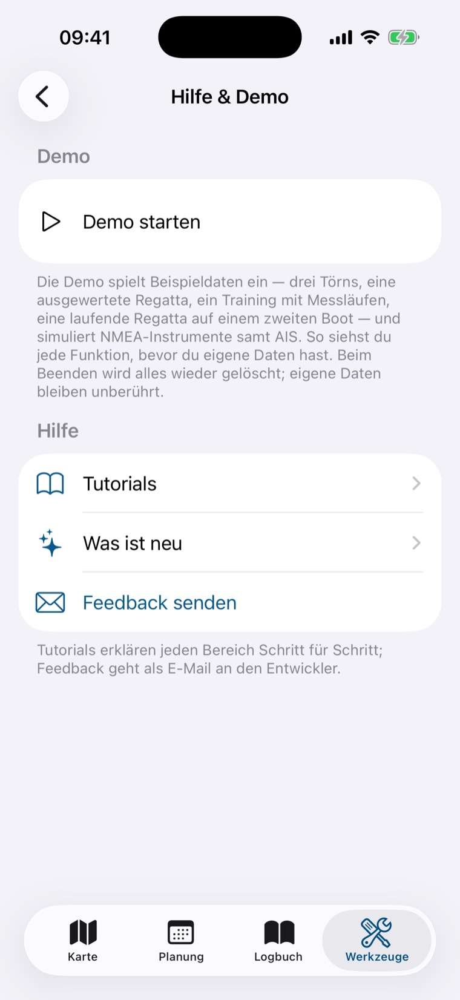
1234
Werkzeuge → Hilfe & Demo: der Einstieg für den ersten Rundgang.
Demo starten — Beispieldaten plus simulierte Instrumente; bei laufender Demo steht hier „Demo aktiv“ und darunter die Demo-Stufe (Pro / Free). (ab Build 43)
Tutorials — die eingebauten Anleitungen je Bereich, teils als Tour durch die echte Oberfläche.
Was ist neu — je Build ein paar Stichsätze zu dem, was sich geändert hat; dieselbe Liste wie unter Einstellungen → Hilfe.
Feedback senden — Fehler, Idee oder Frage als vorbereitete Mail (siehe A6).
Der Demo-Modus ist der schnellste Weg durch die App. Wer keine Bordelektronik hat, sieht
so trotzdem jede Pro-Funktion in Aktion.
2. Eigenes Boot anlegen
(ab Build 36) Bei einer frischen Installation — auch nach dem Löschen der App oder auf einem
zweiten Gerät — steht davor die Seite „Deine Daten“ mit zwei Karten: Neu anfangen führt durch die Schritte unten,
Aus iCloud fortsetzen überspringt Boot und Segel und holt deine Boote nach einem Neustart aus
iCloud (Kasten „Beim Update“ in A2). Darunter steht der Demo-Knopf „Ich schau
mich erst um — Demo starten“.
Beim ersten Start führt ein Onboarding in fünf Schritten (mit dem Profil — siehe unten): Boot (nur Name, Bootstyp und Foto —
Polare und ORC-Zertifikat liest du später unter Werkzeuge → Boot → Polardaten ein),
Segel (Chips antippen: Groß, Fock, Genua, Spi, Gennaker, Code Zero), Standort
(siehe unten; dort auch der Schalter „In iCloud sichern“ mit einem Satz, was er bedeutet) und Revier offline (Kartenausschnitt schieben, Detailgrad fest „Mittel“ —
andere Stufen unter Einstellungen → Karte → Offline-Karten —, Download
läuft im Hintergrund weiter; darunter die Frage „Fehlende Bereiche online nachladen“ —
samt Erklärzeile bei Standardschrift ohne Scrollen zu sehen, weil die Kartenvorschau ihre Höhe dem
Bildschirm anpasst). Danach landest du im Logbuch mit dem großen Ablegen-Knopf — zusammen mit Anker und MOB fest unten in der Daumenzone, wie später auch.
Zwischen Boot und Segel steht ein fünfter Schritt, Profil: „Wofür nutzt du
Etmar?“ mit drei großen Flächen — Regatta & Training, Fahrt, Werkstatt —, alle vorgewählt. Ein Tipp
auf eine Fläche wählt den Bereich ab oder wieder an; Haken oder leerer Kreis zeigt, was gilt. Alle drei
abzuwählen geht — Logbuch, Karte und Sicherheit bleiben immer. „Weiter“ übernimmt die Wahl; ändern
kannst du sie jederzeit unter Einstellungen → Profil (C16).
Mit „Aus iCloud fortsetzen“ kommt der Schritt nicht: Das Profil gilt je Gerät, ab Werk ist alles an.
3. Standortfreigabe
Die Frage kommt genau einmal, im Onboarding — an Land, mit beiden Händen frei. Für die
Aufzeichnung im Hintergrund brauchst du später zusätzlich „Immer“; danach fragt „Ablegen“.
Wer „Später“ gewählt hat, holt es auf der Karte nach (Standort-Knopf oder der blaue Chip
„Standort erlauben“). Ohne Standortfreigabe zeichnet die App nichts auf und der MOB-Knopf hat
keine Koordinaten.
Bitte testen
Kommt das Onboarding verständlich rüber? Hast du nach den Schritten das Gefühl, loslegen zu
können — oder fehlt dir etwas, bevor du das erste Mal ablegst? (ab Build 36) Ist auf der
Seite „Deine Daten“ sofort klar, welche Karte für dich gilt? Weißt du beim
Schritt „Profil“, was du abwählst — und was dir danach fehlen würde?
In der Beta kannst du Pro frei ausprobieren. Es wird nichts abgebucht, und es entsteht kein echtes Abo. (ab Build 43)
Etmar hat zwei Stufen: Free und Pro (was wo liegt, steht in B3).
An Bord ist alles frei; Pro ist die Auswertung danach. In der fertigen App wird Pro ein Abo über den
App Store. Vorerst ist es nicht zu kaufen, auch nicht über Apples Sandbox in der TestFlight-Fassung
(Kasten unten). Ausprobieren lässt sich trotzdem alles: mit deinem eigenen Boot über die Beta-Stufe,
mit Beispieldaten über die Demo-Stufe. Bis Build 42 gab es dazwischen die Stufe Plus. (ab Build 43)
Vorerst nichts zu kaufen(ab Build 43) Pro gibt es vorerst nicht zu kaufen — weder im App Store noch hier in der Sandbox; das Abo folgt in einem späteren Update. Eine gesperrte Auswertung öffnet dann eine Vorschau, „Etmar Pro“: oben die Funktion, von der du kamst, darunter, was Pro aus dem GPS rechnet und was mit Wind vom Bordnetz dazukommt — kein Preis, kein Kaufknopf, kein „Käufe wiederherstellen“. Unten steht „Im Demo-Modus ausprobieren“: Das Blatt schließt sich, danach startet die Demo — oder die App sagt, warum nicht, etwa solange ein eigener Törn aufgezeichnet wird. Unter Einstellungen → Stufe & Demo steht statt eines Kaufknopfs die Zeile „Pro folgt in einem späteren Update“. Pro mit deinem eigenen Boot testest du über die Beta-Stufe im Abschnitt „TestFlight-Beta“ derselben Seite — zur Wahl stehen Pro und Free: Pro wählen, und die Stufen-Zeilen sind weg — ohne Kaufvorgang. Die Schritte zum Buchen unten gelten bis Build 33.
So buchst du Plus oder Pro (bis Build 33)
Tippe auf eine gesperrte Funktion — sie steht gesammelt in der eingeklappten Stufen-Zeile am Ende der Liste, ein Tipp darauf klappt sie auf. Oder öffne Werkzeuge → Einstellungen → Stufe & Demo. Die Übersicht der Stufen zeigt oben die Funktion, von der du kamst — bei Pro mit der Voraussetzung im ersten Satz —, darunter die Stufen mit Preisen.
Wähle Plus oder Pro, Jahres- oder Monatsabo. Apples Kaufblatt erscheint und trägt den Hinweis „Sandbox“ (englisch „Environment: Sandbox“). Das ist das Zeichen, dass es ein Testkauf ist.
Bestätige mit Face ID, Touch ID oder deinem Apple-Account-Passwort wie bei einem echten Kauf. Es wird kein Geld abgebucht, in deinem Apple-Account entsteht kein Abo, und es kommt keine Rechnung.
Die Stufen-Zeilen sind weg; unter Einstellungen → Stufe & Demo steht die gebuchte Stufe. Die Preise und der Hinweis „14 Tage kostenlos“ sind die späteren App-Store-Konditionen — im Test sind sie ohne Bedeutung.
Sandbox-Eigenheiten
Laufzeiten sind stark verkürzt: Aus einem Jahr wird rund eine Stunde, aus zwei Wochen Gratiszeit werden wenige Minuten. Das Testabo verlängert sich ein paar Mal von selbst und läuft dann aus — dann stehen die Stufen-Zeilen wieder da, und du buchst einfach erneut. Das ist kein Fehler der App. „Käufe wiederherstellen“ unten in der Stufen-Übersicht („Etmar Plus & Pro“) holt ein noch laufendes Testabo zurück, etwa nach einer Neuinstallation. Mit der App-Store-Version hat das alles nichts zu tun: Was du hier buchst, überträgt sich nicht, und gekauft wird erst dort.
Ohne Kaufvorgang: die Demo-Stufe
Wer nur schnell sehen will, wie sich Free oder Pro anfühlen, nimmt die Demo:
Werkzeuge → Hilfe & Demo → Demo starten, dann Demo-Stufe auf Pro oder
Free stellen. Die App verhält sich wie die gewählte Stufe — mit den gesammelten Stufen-Zeilen, der
Vorschau von Pro und simulierten Bordinstrumenten, die in beiden Stufen laufen. (ab Build 43) Für alles mit eigener Bordelektronik und eigenen Törns brauchst du dagegen
die Beta-Stufe aus dem Kasten oben, weil die Demo nur mit Beispieldaten läuft.
Bitte testen
Öffne die Vorschau aus einer gesperrten Funktion, etwa unter Werkzeuge → Auswertungen: Steht oben die richtige Funktion, und findest du nirgends einen Preis oder Kaufknopf? Tipp „Im Demo-Modus ausprobieren“: Ist das Blatt zu, bevor die Demo die Oberfläche umbaut? Beende die Demo wieder und stell unter „TestFlight-Beta“ die Beta-Stufe auf Pro: Sind die Stufen-Zeilen weg?
Die Punkte aus dem aktuellen Build. Alles andere ist trotzdem willkommen.
(ab Build 44)Build 44 — Wind für Fahrten ohne Windgeber
(ab Build 44)Im Training „Daten sammeln“ öffnen, eine Wendenserie fahren (C8): Leg ein Training an, tippe zwischen zwei Läufen auf „Daten sammeln“ und starte die Wendenserie. Liest du das Ziel über „Lauf beenden“ bei Welle mit einem Blick? Passt der Titel einer Wind-Zeile („Polare: Kreuz unter 8 kn“) zu dem, was deinem Boot wirklich fehlt?
(ab Build 44)Fahrt ohne Windgeber, danach mit Netz öffnen (C1, C17): Zeichne eine Fahrt ohne Wind vom NMEA-Netz auf, beende sie und öffne die App danach mit Netz. Steht im Tagesbericht der Fahrt kurz darauf „Wind laut Station“ mit Station und Abstand unter jeder Stunde, oder „Modell“? Passt der Wind ungefähr zu dem, was du draußen hattest, und ist es die Station, die du erwartet hättest? Ohne Netz oder mit „Wind aus offenen Quellen“ aus darf nichts geholt werden.
(ab Build 44)Wind-Ebene zum Planen (C3): Schalte auf der Karte im Leuchtturm-Menü „Wind (Modell)“ ein und zoome hinaus, bis Pfeile mit Knoten erscheinen; tippe einen Pfeil und eine Station an. (ab Build 45) Unter „Wind“ liegen jetzt zwei Schalter, „Modell · ab ≈ 30 km“ und „Stationen · jede Zoomstufe“: Schalte beide ein, zoome bis an den Hafen hinein (Stationen im Bild bleiben stehen, ab 20 Minuten mit ihrem Alter, die Modellpfeile gehen) und dann weit hinaus, bis die Zeile unter „Wind jetzt“ „Pfeile alle ≈ … km“ nennt; schalte zum Schluss „Wind aus offenen Quellen“ einmal aus. Hilft dir das Bild beim Planen, liest du die Zahlen mit einem Blick — auch im Nachtmodus und weit hinausgezoomt —, oder fehlt dir etwas darauf?
(ab Build 43)Build 43 — zwei Stufen statt drei: An Bord ist alles frei, Pro ist die Auswertung danach
(NMEA, AIS, Routen, Instrumentenseiten, Tiefenalarm und die Fakten eines Rennens sind frei; die Stufe Plus gibt
es nicht mehr). Stufe wechseln in der Beta: Pro · Free — unter Werkzeuge → Einstellungen →
Stufe & Demo, Abschnitt „TestFlight-Beta“ (A4). Teste zuerst als Free, dann als Pro.
(ab Build 43)Free an Bord ohne Hinweis (B3, C11): Karte, Routen, AIS mit CPA-Warnung, Laylines, Offline-Pakete, Dashboard mit eigenen Seiten, NMEA-Verbindung, Vorstart mit Linien-Bias und die Live-Werte im Rennen tragen keine Stufen-Marke und kein Schloss mehr. Fehlen Daten vom Bordnetz, sagt die Kachel „braucht Bordnetz“. Findest du an Bord noch irgendwo „Plus“, „Pro“ oder ein Schloss?
(ab Build 43)Nach dem Rennen: Fakten frei, ein Pro-Banner (C7): In der Regatta-Auswertung stehen ohne Pro die Kernzahlen und die Kapitel Start, Bahn, Manöver und Wertung mit den Fakten — Markenzeiten, Schenkel, Wenden und Halsen, Schläge, SOG-Verlauf, Zonen, Bahnänderung; Abstand und Querung beim Schuss stehen frei im Regatta-Detail oben unter „Auswertung“. Was Pro bewertet, sammelt eine einzige eingeklappte Zeile am Listenende: „6 weitere Auswertungen mit Pro“. Reichen dir die Fakten, um zu sehen, wo das Rennen gekippt ist — und macht dich die eine Zeile neugierig, ohne zu stören?
(ab Build 43)Vorschau von Pro (B3): Eine Zeile der eingeklappten Gruppe öffnet „Etmar Pro“ — was Pro aus dem GPS rechnet und was mit Wind vom Bordnetz dazukommt, ohne Preis und Kaufknopf. Verstehst du nach diesem Blatt, was du mit Pro bekämst — und dass du an Bord nichts davon brauchst?
(ab Build 43)Pro ohne Windgeber (C7): Mit der Beta-Stufe Pro rechnet die Auswertung aus dem GPS; was Wind vom Bordnetz braucht, sagt es mit dem Datengrund, etwa „Braucht Wind vom Bordnetz an den Trackpunkten.“ Steht für dich mit Pro irgendwo noch ein Stufen-Hinweis statt eines Datengrunds?
Build 42 — ein MOB-Punkt aus einer späten Messung heißt „ungefähr“, „ANKER SLIPPT“ wiederholt sich auch ohne Bewegung, an der Uhr nimmt nur Halten einen Sync zurück; dazu Rundkurse mit freier Richtung im Bahn-Editor und ein Profil, mit dem du ausblendest, was du nicht brauchst (Sicherheit bleibt frei; nichts wandert zwischen den Stufen). Teste weiter als Free (A4).
MOB-Punkt ungefähr (C13): Ist die letzte Position beim Auslösen alt, ersetzt eine genaue Messung den Punkt nur, wenn sie näher am Auslösen liegt als die alte — und „Position wird präzisiert“ steht nur so lange, wie das noch möglich ist (höchstens drei Minuten). Liegt die neue Messung mehr als zehn Sekunden nach dem Auslösen (an der Uhr: nach dem Druck), sagt das Banner dauerhaft „Punkt: Fix 2 min nach dem Tipp“, die Funktafel „Position ungefähr“. iPhone drei Minuten in der Tasche, MOB an der Uhr, eine halbe Minute warten, dann iPhone raus: Steht im Banner „Punkt präzisiert“ (dann kam die Ortung schon in der Tasche) oder „Punkt: Fix … nach dem Tipp“ — und passt diese Zeit zu der zwischen Druck und Herausnehmen?
Anker slippt, keine Tiefe (C13): Slippt der Anker und hält das Boot draußen wieder, kommt „ANKER SLIPPT“ alle 60 Sekunden erneut — Mitteilung, Vibration, Ton —, auch wenn es sich nicht mehr bewegt. Mit Echolot (ab Build 43 frei): Fällt während „FLACHWASSER“ die Lotung aus, sagt der Anker-Banner „Keine Tiefe — der Tiefenalarm wacht nicht“, die Logbuch-Kachel „Keine Tiefe“; „Tiefenalarm aus“ im Anker-Blatt geht sechs Sekunden lang rückgängig. Merkst du in der Koje, dass der Anker noch draußen liegt — oder dass der Tiefenalarm gerade nicht wacht?
Halten statt Tippen an der Uhr (C5): Nach „Sync“ an der Apple Watch steht sechs Sekunden lang ein Sync-Balken, darunter klein „Halten: Rückgängig“. Ein Tipp ist ein weiterer Sync; erst eine halbe Sekunde Halten nimmt den letzten zurück, mit eigenem Tippen am Handgelenk. Gern mit Handschuh: Gelingt das Halten, und spürst du den Unterschied zum Sync?
Start verschieben zugeklappt (C5): Jeder Vorstart beginnt mit zugeklapptem „Start verschieben“, auch wenn die Zeile mit ±5 Min in der Wettfahrt davor offen war. Regatta mit zwei Wettfahrten, in der ersten „Start verschieben“ aufklappen: Beginnt der zweite Vorstart zugeklappt, mit Pin, Schiff und Sync im Bild?
Rundkurs bauen (C6): Baue unter Werkzeuge → Bahnen & Wegpunkte eine Bahn rund um eine Insel, schalte unter „Liste“ im Abschnitt „Rundkurs“ „Ziel = Startlinie“ und „Richtung frei“ ein und starte daraus eine Regatta. Kommt vor dem Start die Frage „Welche Richtung?“, und nennt sie die richtige erste Tonne? Zum Ausprobieren ohne eigene Bahn: die Demo-Vorlage „Rund Fehmarn“.
Richtung ändern (C6): Ändere die Richtung nach dem Start über Regatta-Tab → „Bahn“ → „Liste“ → „Richtung ändern“. Zeigt die Renn-Leiste danach an jeder Tonne die richtige Seite, auch an einer, deren Rundungsseite du von Hand gesetzt hast?
Profil wählen, abwählen, Demo (B1, A3): Nach einer Neuinstallation fragt das Onboarding nach dem Boot „Wofür nutzt du Etmar?“ — Regatta & Training, Fahrt, Werkstatt, alle vorgewählt. Was du abwählst, verliert seine Einstiege: In den Werkzeugen fehlt die Kachel, ganz unten steht „Im Profil ausgeblendet: … — Einstellungen › Profil“; Vorhandenes und Laufendes bleiben. Die Demo zeigt alles, danach gilt dein Profil wieder. Fehlt nach dem Abwählen etwas, das du noch brauchst — oder bleibt etwas stehen, das du weghaben wolltest?
Bekannt: Hat das iPhone einen Uhr-Sync verworfen, steht an der Uhr trotzdem der Sync-Balken — Halten tut dann am iPhone nichts. Die Kachel „Ankern“ unter Werkzeuge sagt bei blinder Wache nach dem Slippen weiter nur „ANKER SLIPPT“.
Build 41 — der MOB-Punkt sagt, wie alt er ist, Flachwasser vor Anker ist zu sehen, der Anker fällt nicht auf eine ungefähre Position; dazu Rückgängig an der Uhr und ruhigere Werkzeuge (Sicherheit bleibt frei; nichts wandert zwischen den Stufen). Teste weiter als Free (A4).
MOB-Punkt vorläufig (C13): Ist die letzte Position beim Auslösen älter als zehn Sekunden, steht im MOB-Banner orange „Position wird präzisiert“ mit dem Alter des Fixes. Kommt binnen drei Minuten eine genaue Messung (bis 50 m), rückt der Punkt dorthin, und 30 Sekunden lang steht „Punkt präzisiert“; kommt keine, bleibt der Vorbehalt stehen. „Punkt präzisiert“ nur noch für eine Messung bis zehn Sekunden nach dem Auslösen; später heißt der Punkt „ungefähr“ — siehe „MOB-Punkt ungefähr“ oben. Ein MOB von der Uhr fordert dafür selbst eine Ortung an. App eine Weile im Hintergrund, öffnen und sofort MOB — oder MOB an der Uhr mit dem iPhone gesperrt in der Tasche: Siehst du auf einen Blick, wie verlässlich der Punkt ist?
Flachwasser vor Anker(ab Build 43 frei) (C13): Steht der Tiefenalarm bei liegendem Anker, wird der Anker-Banner rot und sagt „FLACHWASSER“ mit Lotung und Schwelle, Kachel und Karten-Chip sagen es mit einem Wort; Anker-Screen und Anker-Blatt tragen oben „Tiefenalarm aus“. Mit Echolot: Schwelle im Anker-Blatt über die gemessene Tiefe stellen — erkennst du in der Koje, dass es die Tiefe ist und nicht der Anker?
Anker ohne genauen Standort (C13): Ist für Etmar „Genauer Standort“ aus, setzt „Anker setzen“ keinen Anker mehr — auch nicht, wenn eine ungefähre Position da ist. Unten steht orange „„Genauer Standort“ aus — Anker nicht gesetzt“, ein Tipp darauf öffnet die Einstellungen; „Anker auf aktuelle Position“ verlegt den Kreis dann ebenfalls nicht. „Genauer Standort“ ausschalten, dann aus Logbuch, Ebenen-Menü der Karte und Werkzeuge → Ankern je einmal „Anker setzen“: Findest du zurück zum Schalter?
Anker slippt, Wache blind (C13): Slippt der Anker und kommt danach kein GPS mehr, sagt die Mitteilung „ANKER SLIPPT — WACHE BLIND“ mit der letzten Entfernung; die Anker-Kachel im Logbuch trägt „Wache blind“, der Karten-Chip das Alter der Messung, der Anker-Screen den Grund. Falls es dir passiert: Wusstest du sofort, dass das Boot zuletzt draußen lag?
−5 Min vor dem Vorstart (C5): Würde „−5 Min“ den Schuss so nah rücken, dass der Vorstart sofort beginnt, bleibt die Regatta in „Warten auf Vorstart“, und unten steht sechs Sekunden „−5 Min würde den Vorstart beginnen — beim Signal „Sync“ tippen“. Regatta kurz vor dem Vorstart, „−5 Min“: Bleibt alles stehen?
Rückgängig an der Uhr (C5): Nach „Sync“ an der Apple Watch steht sechs Sekunden lang „Rückgängig“ über die ganze Breite; ein Tipp nimmt genau diesen Sync zurück. Zurück nur noch durch Halten — siehe „Halten statt Tippen an der Uhr“ oben. Springt der Countdown nach dem Tipp auf Uhr und iPhone zurück?
NMEA ohne Gateway(ab Build 43 frei) (C11): Ohne erreichbares Gateway versucht die App es in wachsenden Abständen bis einmal pro Minute statt alle paar Sekunden; beim Öffnen der Instrumente und bei der Rückkehr in die App sofort. Gateway aus, nach ein paar Minuten wieder an: Ist die App spätestens nach gut einer Minute verbunden — oder sofort, wenn du die Instrumente öffnest?
Werkzeuge einfarbig (B1): Die Kacheln sind einfarbig mit dünner Kante, Symbol und Titel oben links; Farbe zeigt nur Gefahr und Zustand — SOS immer rot, Ankern je nach Wache, „Hilfe & Demo“ bei laufender Demo, „Routen“ bei laufender Route; der gewählte Schwerpunkt bekommt einen Rand. Bei Sonne und nachts: Findest du jede Kachel so schnell wie vorher?
Eintragsfarben (C1): Einträge tragen Farbe nur, wo sie etwas bedeutet — Ablegen und Start grün, Ankommen bernstein, Bahnmarke gelb, Rot nur MOB; Position, Ereignis, Funk, Wende und Halse sind grau, in der Liste wie als Pin auf der Törn-Karte. Renn-Leiste, Countdown und Regatta-Tab zeigen gerade Ziffern statt runder Schrift. Vermisst du eine Farbe — und wofür?
Bekannt: Hat das iPhone einen Uhr-Sync verworfen, steht an der Uhr trotzdem „Rückgängig“ — der Tipp tut dann nichts. Die Kachel „Ankern“ unter Werkzeuge sagt bei blinder Wache nach dem Slippen nur „ANKER SLIPPT“.
Build 40 — Sync und ±5 Min lassen sich zurücknehmen, der kurze Tipp auf den Track wirkt wieder, Nord heißt „000°“; dahinter aufgeräumter Code, der sich sonst nicht anders anfühlen soll (nichts wandert zwischen den Stufen). Teste weiter als Free (A4).
Sync und ±5 Min rückgängig (C5): Ein Fehltipp auf „Sync“ oder „±5 Min“ im Logbuch geht sechs Sekunden lang im Balken unten mit „Rückgängig“ zurück; Startzeit, Countdown und Signale stehen danach wie vorher. Sync auf der Karte konnte das schon. Im Vorstart Sync tippen, dann Rückgängig: Springt der Countdown auf die alte Zeit, und kommen die Signale zur alten Zeit?
Tipp auf den Track (C1): Auf der Törn-Karte öffnet ein kurzer Tipp auf den Track wieder die Trackpunkt-Karte des nächstgelegenen Punkts, ein Tipp ins freie Wasser schließt sie; bisher ging das nur mit langem Druck. Mit nassem Daumen: Triffst du den Track, ohne genau zu zielen?
Nord als „000°“ (C11, C4): Kurse und Peilungen in Instrumenten, Go-To, AIS, MOB-Banner und Bericht zeigen Nord als „000°“ statt „360°“, die Uhr dreistellig wie das iPhone („007°“). Ebenso Kurs und Windrichtung in Eintrag, Törn-Detail, Trackpunkt-Karte und Text-Export, dazu die Windrichtung im Bericht („000° (N)“ statt „360° (N)“, „007° (N)“ statt „7° (N)“); nur der ⌀-COG-Vergleich zweier Messläufe zeigt Nord noch als „360°“. Auf Nordkurs einen Eintrag anlegen und die Trackpunkt-Karte öffnen: Stehen Kurs und Windrichtung dreistellig?
Instrumentenspalte nach dem Seiten-Umbau(ab Build 43 frei) (C11): Löschst du im Seiten-Manager Seiten, blättert die Spalte (quer oder auf dem iPad) danach von der letzten verbliebenen Seite weiter — wie Vollbild und Datenband. Spalte auf der letzten Seite, diese Seite im Seiten-Manager löschen, zurück zur Karte, in der Spalte der Pfeil nach links: Landest du dort, wo du es erwartest?
Formulare (C1, C10): Boot, Segel, Ausrüstung, Werkstatt-Projekt, Zielort, POI, Törn und Logbuch-Eintrag teilen sich jetzt eine Kopfzeile. Sie soll sich verhalten wie bisher: „Abbrechen“ fragt nur nach, wenn du etwas geändert hast, sonst schließt es sofort; mit Änderungen lässt sich das Blatt nicht wegwischen. Ein Formular öffnen, nichts ändern, Abbrechen — dann mit einer Änderung: Fragt es genau im zweiten Fall?
Englische Oberfläche (D2): Der Zieleintrag einer Regatta heißt „Finish“ statt „Destination“. Ebenso die Eintragsart, die Ziellinie im Bahn-Editor und das Ende des Auswertungsfensters. iPhone auf Englisch, eine Regatta beenden: Wie heißt der neue Eintrag im Logbuch?
Bekannt: In der Trackpunkt-Karte ist im Nachtmodus die Zeile mit dem Bug kaum zu lesen. Das Regatta-Formular fragt beim Abbrechen auch dann nach, wenn nichts geändert wurde. Behoben: Es fragt nur noch nach, wenn du etwas geändert hast.
(ab Build 39)Build 39 — unter Fahrt leichter, die Tracking-Diagnose schreibt mit, wann die App hängt, dazu Korrekturen an MOB, Ankerwache und Aufzeichnung (in jeder Stufe; nichts wandert zwischen den Stufen). Teste weiter als Free (A4).
(ab Build 39)Unter Fahrt (C1, B2): Das Logbuch rechnet nicht mehr bei jeder Positionsmeldung alles neu, Logbuch, Werkzeuge und Auswertungen nicht mehr bei jedem gespeicherten Trackpunkt; die Karte rückt Boot, Kursvektor und Peilungen nur weiter (mit AIS-Zielen oder Laylines noch nicht), und „Alle Törns“ lädt die Tracks im Hintergrund — Meilen und Form einer Zeile dürfen einen Augenblick nach ihr kommen. Mit laufender Aufzeichnung, mindestens 20 Minuten: Tabs wechseln, „Alle Törns“ bis ans Ende rollen, den längsten Törn samt Karte öffnen — stockt etwas länger als einen Wimpernschlag, und wo?
(ab Build 39)Tracking-Diagnose teilen (D3): Reagiert die App 0,25 Sekunden oder länger nicht, schreibt sie danach eine Zeile mit Dauer und Tab ins Log; „Gemessene Hänger seit Start“ zählt mit. Direkt nach der Fahrt Einstellungen → Tracking-Diagnose → „Diagnose-Log teilen“ und mitschicken: Passt das zu dem, was du gespürt hast?
(ab Build 39)Berichte von iOS (D3): iOS schreibt höchstens einmal am Tag Kennzahlen über die App, „Berichte von iOS teilen“ gibt sie als Zip-Datei. Einen Tag später: Steht dort mindestens ein Bericht — oder noch „noch keine“?
(ab Build 39)Alter Törn bei laufender Aufzeichnung (C1): Einen anderen Törn anzusehen beendet oder verlegt die Aufzeichnung nicht mehr; nur der Törn, der aufzeichnet, zeigt Auto-Tracking „an“. Unter Fahrt einen abgeschlossenen Törn öffnen und schließen: Hat der Track danach eine Lücke?
(ab Build 39)MOB ohne GPS-Fix am alten Törn (C13): Auf der Karte eines abgeschlossenen Törns steht ohne Fix kein eigenes Boot mehr am Trackende; ein MOB zeigt „KEINE POSITION — Fix fehlt“ und bekommt seinen Punkt mit dem ersten Fix, der binnen drei Minuten kommt — statt am alten Trackende zu landen; später bleibt er leer, statt das Boot zu markieren. Im Hafen, Standort für Etmar auf „Nie“, alter Törn → Karte → MOB: Ist klar, dass der Punkt noch fehlt?
(ab Build 39)Ankerwache blind (C13): Bei offener App kein iOS-Banner mehr, solange Anker-Banner, Anker-Kachel im Logbuch oder Anker-Screen zu sehen sind und kein Blatt darüber liegt; „ANKER SLIPPT“ bleibt ein Banner. Die Kachel „Anker liegt“ ist tags dunkelgrün beschriftet. Siehst du den Zustand der Wache, ohne dass ein Banner die Kopfzeile verdeckt?
(ab Build 39) Bekannt: Mit AIS-Zielen in Reichweite, Laylines zum Go-To-Ziel (Pro mit Windgeber), im MOB-Alarm und solange die Karte dem Boot folgt, rechnet die Karte weiter je Positionsmeldung mit. In der Demo liegt die Aufzeichnung auf der Demo-Regatta, darum zeigt der Tagestörn des Demo-Boots den Auto-Tracking-Schalter auf aus.
Build 38 — der Kandidat für den App Store: Ankern ohne Karte, Ablegen und Anlegen auf der Karte mit einem Tipp, ein kürzerer erster Start, die Demo auf Englisch (in jeder Stufe; nichts wandert zwischen den Stufen). Teste als Free (A4).
Anker setzen ohne GPS-Fix (C13): Statt eines leeren Blatts sagt ein oranger Balken unten, was fehlt — „Kein GPS-Fix — erst Standort erlauben“, „Standort verweigert — Einstellungen“ oder „GPS sucht noch — Anker nicht gesetzt“; wo es einen Handgriff gibt, ist der Balken der Knopf. Im Haus oder mit Ortung aus: Karte → Ebenen → „Anker setzen“ — weißt du sofort, was zu tun ist?
Ankern in den Werkzeugen (C13): Werkzeuge → Sicherheit → Ankern zeigt eine große Zahl, einen Zustand und einen Knopf; „Anker auf“ ohne Rückfrage, sechs Sekunden Rückgängig. Ohne Anker zeigt „Vor dem Ankern“, ob Mitteilungen, kritische Hinweise und Standort „Immer“ erlaubt sind. Reicht ein Blick, ob der Anker hält? Stellt „Jetzt einrichten“ an Land alle offenen Fragen?
Kreis weiten (C13): Bei „ANKER SLIPPT“ weitet „Alles gut — Kreis weiten“ den Kreis auf den jetzigen Abstand plus 10 m; sechs Sekunden lang holt Rückgängig den alten Kreis zurück, und der Alarm meldet sofort wieder. Anker mit 10 m setzen, 20 m weggehen: Triffst du im Alarm den richtigen Knopf?
Ablegen und Anlegen auf der Karte (B2): Ohne Törn heißt der grüne Knopf „Ablegen“ — ein Tipp, kein Dialog, sechs Sekunden Rückgängig; Regatta und Training legst du im Logbuch an. Steht das Boot 30 Minuten, erscheint links neben dem Logbuch-Knopf „Anlegen“. Legst du ab und an, ohne ins Logbuch zu wechseln?
Ohne Boot (C1, C13): Die SOS-Tafel zeigt den Funkspruch mit „---“ statt Name, Rufzeichen und MMSI, auch über „Funk“ im MOB-Banner; im Logbuch stehen unten Anker und MOB; „Ablegen“ auf der Karte öffnet erst das Boot-Formular. Neu installiert, noch ohne Boot: Kommst du an Anker, MOB und Funkspruch?
Erster Start (A3): Beim Boot fragt die App nur Name, Typ und Foto, beim Revier keinen Detailgrad mehr. App löschen, neu installieren: Fehlt dir etwas — oder ist noch etwas zu viel?
Klarliste im Logbuch (C1): „Vor dem Ablegen“ zeigt nur, was deine Stufe heute betrifft, die Planung nur die Zahl offener Punkte; unter einer Minute steht „Fix gerade eben“. Am Steg: Steht dort etwas, das dich nicht betrifft?
Demo auf Englisch (D2): Mit dem iPhone auf Englisch entstehen Törns, Einträge, Trimm-Notizen, Werkstatt und Hafenhandbuch der Demo englisch. Wo steht noch Deutsch?
Nachtmodus und dunkles Erscheinungsbild (B1): Nachts sind „Kein GPS-Fix“, „Standort verweigert“ und „Alles gut — Kreis weiten“ schwarz mit oranger Kante, Stufen-Marken und Vorbehalte hell; im dunklen Erscheinungsbild steht Schrift auf Blau schwarz. Unterscheidest du Warnung und Alarm auf einen Blick?
Bekannt: Ist die Ankerwache blind, legt sich die Mitteilung „ANKERWACHE BLIND“ auch bei offener App jede Minute über die Kopfzeile. (ab Build 39 nur noch, wenn weder der Anker-Banner noch die Anker-Kachel im Logbuch noch der Anker-Screen zu sehen ist oder ein Blatt darüber liegt, C13) In der Demo erscheint „Anlegen“ auf der Karte nie, weil das Demo-Boot immer fährt.
(ab Build 37)Build 37 — die ganze App auf Englisch, flüssig bei vielen Törns; große Schrift und Nachtfarben an Stellen, die Build 36 offen ließ (in jeder Stufe; nichts wandert zwischen den Stufen). Teste weiter als Free (A4).
(ab Build 37)Englisch, einmal durch die App (D2): Stell das iPhone auf Englisch — Oberfläche, Tutorials, „What’s new“ und die SOS-Seite sind englisch, britisch geschrieben (harbour, gybe); der Ablegen-Knopf heißt „Cast off“, Seemeilen stehen als „nm“. Die Beispieldaten der Demo (Törnnamen, Notizen) waren in Build 37 noch deutsch; seit Build 38 entstehen sie in der Sprache des iPhones. Die Texte hat noch kein Lektorat gelesen. Wo steht noch Deutsch, wo sitzt ein Wort schief?
(ab Build 37)Vorstart auf Englisch (C5): Die Ansage spricht britisch („Pre-start. 5 minutes to go.“ … „One minute.“), die Uhr sagt „Pre-start“, Live Activity und Regatta-Leiste sind englisch; nach einem allgemeinen Rückruf „RECALL — New start“. Regatta mit Sprachansage, Vorstart 5 Minuten, Start mindestens sechs Minuten voraus (eine schon verstrichene Marke wird nicht nachgeholt): Verstehst du jede Marke beim ersten Hören?
(ab Build 37)SOS-Datenblatt auf Englisch (C13): Das PDF nennt „Call sign“, „Persons on board“, „Home port“. Ist das Blatt ohne deutsches Wort?
(ab Build 37)Viele Törns (C1): „Alle Törns“ öffnet und rollt ohne Hänger, Törn-Detail und Törn-Karte eines langen Törns öffnen schneller, und ohne GPS-Fix im Hafen öffnet das Logbuch zügig. Mit deinem echten Logbuch: Tabs wechseln, „Alle Törns“, längster Törn samt Karte — und einmal mit Flugmodus und Ortung aus: Stockt noch etwas länger als einen Wimpernschlag, und wo?
(ab Build 37)MAYDAY-Tafel bei größter Schrift (C13): Chip-Reihe, Position und „Rufzeichen oder MMSI fehlt“ wachsen nicht mehr mit, „Nachtragen“ steht ganz (hochkant in eigener Zeile); der Funkspruch hat quer wieder so viel Platz wie bei Standardschrift. Hochkant und quer, mit und ohne Rufzeichen: Liest du den Funkspruch ohne Suchen? VoiceOver einmal auf der Warnzeile.
(ab Build 37)Regatta-Statuskarte und „Letzte Einträge“ bei größter Schrift (C1): Die angeheftete Karte bleibt im Vorstart und Rennen kompakt, Pin, Schiff und Sync sind ohne Rollen zu treffen; unter „Letzte Einträge“ steht das Datum unter der Art, Fahrt, Kurs und Wind untereinander. Regatta mit +5 starten, dann Quick Log unter Fahrt mit Wind: Triffst du die drei Griffe, liest du jede Angabe am Stück?
(ab Build 37)ⓘ, Punkt-Karte und „Nächster Termin“ bei großer Schrift (B2, C15): Solange der Rückgängig-Balken steht, hält das ⓘ Abstand zu ihm; auf der Punkt-Karte steht „Ins Hafenhandbuch“ in einer Zeile, die Distanz bleibt bei ihrer Einheit; „Nächster Termin“ nennt die Uhrzeit. iPhone SE hochkant und quer, dazu iPad: „Rückgängig“ treffen, ohne das ⓘ zu streifen — und trennt noch ein Wort?
(ab Build 37)Nachtmodus im Rennen, Mint bei Tag (C1): Nachts sind „Marker“, „Ereignis“ und „Trimm“ bei laufender Regatta helle Flächen mit schwarzer Schrift; bei Tag steht „Bahn ausblenden“ (Bahnen aus der Community) in dunklem Mint. Erkennst du beides ohne zweiten Blick — nachts und in der Sonne?
(ab Build 37) Bekannt: Das allererste Öffnen eines Törns nach dem App-Start stockt noch kurz; ein langer Termintitel kann bei größter Schrift getrennt werden; auf der MAYDAY-Tafel quer bei größter Schrift erreichst du den Sprechtext durch Rollen.
(ab Build 36)Build 36 — Sicherheit: MOB aus der Demo-Pause, Banner nie abgekürzt, Tiefenalarm nach Trennen; Karte und Logbuch bei großer Schrift (in jeder Stufe; der Tiefenalarm ist Pro, er braucht das Echolot am NMEA-Netz). Teste weiter als Free (A4).
(ab Build 36)MOB aus der Demo-Pause (A3, C13): Drückst du MOB auf der Uhr, während die Demo im Hintergrund pausiert, ist der Alarm echt: Beim Zurückkommen endet die Demo, und das Banner sagt „KEINE POSITION“, bis der erste echte Fix kommt. Mit Apple Watch: Demo starten, iPhone sperren, MOB auf der Uhr, binnen einer Minute zurück — ist sofort klar, dass der Alarm echt ist?
(ab Build 36)MOB-Banner nie abgekürzt (B2): Peilung, Distanz und „Beenden“ stehen immer ganz; passt die Kopfzeile nicht in eine Zeile, rücken Fadenkreuz und „Beenden“ darunter, oft schon hochkant bei Standardschrift. MOB auslösen, hochkant und quer, mit normaler und großer Schrift: Liest du die Distanz auf einen Blick?
(ab Build 36)Quer: Tab-Leiste neben Alarmen (B2): Holst du bei breiter Instrumentenspalte die Tab-Leiste hervor, bleiben „Anker auf“ und MAYDAY frei — die Knöpfe rechts steigen nur bis unter das Banner. Anker setzen, Leiste am Griff hervorholen: Liegt je etwas über einem Alarm-Knopf?
(ab Build 36)MAYDAY-Tafel nach verspätetem Uhr-MOB (C13): „Position ungefähr“ rückt unter „MOB-POSITION“, wenn daneben kein Platz ist; der englische Funkspruch sagt „position approximate“. Mit Apple Watch: Liest du den Spruch flüssig vor?
(ab Build 36)Tiefenalarm nach dem Trennen(ab Build 43 frei) (C13): Kommt eine Minute lang keine Lotung — NMEA getrennt oder WLAN abgerissen —, endet ein stehender Alarm; ist es danach noch flach, meldet er sich nach drei Messungen neu. Mit Echolot am NMEA-Netz: Kommt die zweite Meldung mit Ton?
(ab Build 36)Go-To im Dunklen (C4): Im dunklen Erscheinungsbild ohne Nachtmodus steht die Warnung bei mehr als 5° Kursfehler orange auf schwarzer Kapsel. Erkennst du sie in Sonne und Dämmerung?
(ab Build 36)Punkt-Karte und Hafen-Sprung (B2, C12): Tippst du einen Hafen oder Zielort an oder springst aus dem Hafenhandbuch hin, steht das Symbol bei normaler Schrift über der Punkt-Karte; lange Namen stehen auf bis zu zwei Zeilen, und in der Demo übersteht die Karte einen kurzen App-Wechsel (die eines AIS-Ziels kommt ein, zwei Sekunden später mit der nächsten Positionsmeldung zurück). Siehst du den Hafen, ohne zu schieben?
(ab Build 36)„Karte lädt nicht“ und das ⓘ auf dem iPhone SE (B2): Kommt die Karte nicht (etwa im Hafen-WLAN mit Anmeldeseite), steht die Warnung auch neben „Revier nicht gespeichert“ und quer neben dem Anker-Banner; auf dem iPhone SE quer liegt das ⓘ über Rückgängig-Balken und Datenkarte. (ab Build 37) Solange der Rückgängig-Balken steht (etwa nach „Anker auf“), hält das ⓘ hochkant, auf dem iPad und auf dem iPhone SE quer mehr Abstand zu ihm. Triffst du Warnung und ⓘ — und „Rückgängig“, ohne das ⓘ zu streifen?
(ab Build 36)Logbuch und Hafenhandbuch bei großer Schrift (C1, C12): Regatta-Knöpfe, Laufknopf im Training und „Auto-Tracking aktiv“ brechen kein Wort mehr; im Hafenhandbuch steht die Entfernung unter dem Namen. Größter Text in den Bedienungshilfen: Liest du jede Beschriftung ganz? Bekannt bis Build 36: Bei größter Schrift füllt die Regatta-Statuskarte im Vorstart fast den Schirm. (ab Build 37) Die Karte wächst bei sehr großer Schrift nicht mehr mit und trennt kein Wort; Pin, Schiff und Sync stehen ganz darunter. Ebenfalls bekannt bis Build 36: Unter „Letzte Einträge“ brechen bei größter Schrift Art, Datum, Fahrt und Kurs eines Eintrags mitten im Wort. (ab Build 37) Dort steht das Datum dann unter der Art, Fahrt, Kurs und Wind stehen untereinander.
(ab Build 36)Vorstart mit Signalen „Aus“ oder „Stumm“ (C5): Bei offener App vibriert das iPhone an Vorstartbeginn, 1:00, 0:30 und 0:10; die Vorstart-Karte sagt, dass die Signale aus sind. Spürst du jede Marke?
(ab Build 36)Neues Gerät und Einrichtung (A2, C16): „Aus iCloud fortsetzen“ im Onboarding legt kein Boot an; nach einem Neustart der App kommen Boote und Törns. Beim Standort stehen „In iCloud sichern“ und sein Satz bei Standardschrift ohne Rollen im Bild. Zweites iPhone mit deinem iCloud-Konto: Ist danach dein eigenes Boot aktiv?
(ab Build 36)Nächster Termin am Renntag (B1, C15): Ein begonnener Termin von heute bleibt in der Planung bis Mitternacht stehen, solange heute keiner mehr folgt; ohne Termin führt die Zeile in den Kalender. Start verschoben: Stimmt der Termin?
Build 35 — Anker und MOB bei großer Schrift, nachts und ohne Törn; jede Auswertung an einem Ort (in jeder Stufe; was eine Auswertung zeigt, bleibt gestuft wie bisher). Teste weiter als Free (A4).
MOB im leeren Logbuch (C1, C13): Hat das Boot noch keinen Törn, steht das MOB-Banner mit Peilung, Distanz, Zeit, „Beenden“ und „Funk“ ganz oben, nicht nur die Kachel; Anker und MOB bleiben auch greifbar, während iCloud nach einer Neuinstallation die Törns lädt. MOB halten, beenden, „Rückgängig“: Kommst du ohne Umweg über die Karte an alles?
Anker und MOB bei großer Schrift (B2, C1): Bei sehr großer Schrift stehen Zustand, Distanz und Peilung ungekürzt, die Knöpfe eine Zeile tiefer (beim MOB bis Build 35 nur quer, seit Build 36 in jeder Lage, sobald die Kopfzeile nicht passt); mit laufendem Törn bricht auf den Quick-Buttons kein Wort mehr. (ab Build 36) Im MOB-Banner rücken Fadenkreuz und „Beenden“ eine Zeile tiefer, sobald die Kopfzeile nicht in eine Zeile passt – in jeder Lage und Schriftgröße, quer neben breiter Instrumentenspalte schon bei Standardschrift. Größte Schrift, Anker setzen und MOB auslösen, hochkant und quer: Triffst du „Anker auf“, „Beenden“ und „Funk“ mit einem Tipp? Bekannt bis Build 35: Quer kürzt das MOB-Banner die Distanz („049° 17…“) und bei großer Schrift „Beenden“ zu „Been…“.
MOB in der Demo (A3): Ein in der Demo ausgelöster MOB endet mit der Demo. Demo starten, MOB auslösen, Demo beenden: Ist der Alarm weg, und startet die Demo danach wieder?
MOB von der Uhr (C13): Kommt ein Druck verspätet an und kennt das iPhone keine Position, trägt es den ersten Fix der folgenden drei Minuten als unsichere Position nach; die Funktafel warnt „ungefähr“. Mit Apple Watch: Ist dir klar, dass dieser Punkt ungenau ist?
Go-To nachts (C16): Liegt der Kurs mehr als 5° neben dem Ziel, steht die Warnung in Amber auf schwarzer Kapsel. Erkennst du sie unter Welle auf einen Blick?
Das ⓘ der Kartenquellen (B2): Quer liegt es links unten frei. Erreichst du es mit dem Daumen, ohne einen Knopf zu treffen?
Hafenhandbuch „In der Nähe“ (C12): Ein Tipp auf einen Hafen zeigt ihn auf der Karte mit seiner Punkt-Karte; übernommen wird er mit dem Plus rechts in der Zeile. Findest du so den Hafen, den du suchst?
Werkzeuge an festen Plätzen (B1): Jede Kachel steht immer am selben Platz, die Lage rahmt nur eine ein. Ohne Törn nennt das Kontext-Feld „Planung“ ganz unten den nächsten Termin der kommenden sieben Tage. Greifst du ohne Hinsehen richtig?
Auswertungen an einem Ort (C7, C10): Werkzeuge → Auswertungen zeigt die letzte Regatta mit Track, das letzte Training, die Saison und das Boot; die Boot-Seite führt mit einer Zeile dorthin und nennt Typ und Tiefgang. Die gefahrene Polare Pro steht nur bei den Polardaten, der Segel-Crossover nur bei den Segeln. Findest du jede Auswertung beim ersten Versuch?
Build 34 — Free, wie im Store (Plus und Pro bleiben an Bord, sind aber nicht zu kaufen). Teste diesmal so, wie ein Käufer die App bekommt: Werkzeuge → Einstellungen → Stufe & Demo, Beta-Stufe „Free“ (A4).
Stufen-Vorschau statt Kauf (A4, B3): Eine gesperrte Funktion öffnet eine Vorschau der Stufe ohne Preise und Kaufknopf; unten „Im Demo-Modus ausprobieren“. Unter Einstellungen → Stufe & Demo steht statt der Kaufknöpfe „Plus und Pro folgen in einem späteren Update“. Verstehst du auf einen Blick, dass es nichts zu kaufen gibt, aber alles auszuprobieren? Schließt sich das Blatt, bevor die Demo startet?
Seezeichen und Tiefen nur aus gespeicherten Revieren (C3): Das Nachladen von Seezeichen, Häfen und Tiefen aus Build 33 ist vorerst abgeschaltet, bis es zuverlässig läuft; „Karte online nachladen“ gilt nur noch für die Basiskarte. Was die Karte in Build 33 selbst geholt hat, bleibt und steht weiter unter „Automatisch geladen“. Fahr mit Netz in ein Revier, das du nie gespeichert hast: Steht die Basiskarte, sagt der Chip „Seezeichen & Tiefen hier nicht geladen“, und führt ein Tipp im Hafen in die Offline-Karten? Kommen nach „Nur Seezeichen & Tiefen laden“ Tonnen und Tiefen?
Teilen und Dateiauswahl im Nachtmodus (C16): Solange das Teilen-Blatt oder die Dateiauswahl offen ist, ruht der Rotfilter; bis Build 33 reagierten beide nachts nicht. Teile nachts den Einkaufszettel, ein Inventar-PDF oder die Sicherung und spiel eine Datei ein: Reagiert jedes Blatt, und ist das Rot danach sofort wieder da?
Grenze der geladenen Tiefen und Seezeichen (C3): Eine dünne gestrichelte blaugraue Linie (ab Build 43; vorher orange) mit der Aufschrift „Ende Tiefen und Seezeichen“ umrandet, wo beide auf dem Gerät liegen. (ab Build 45) Die Linie ist fein gestrichelt und blass, die Aufschrift steht erst hineingezoomt und nur an langen Kanten. Findest du die Linie am Rand deines gespeicherten Reviers, wenn du sie suchst — tags in der Sonne und nachts —, ohne dass sie Tonnen, Wind-Ebene und Track übertönt? Bekommen zwei aneinanderstoßende Reviere einen gemeinsamen Rand?
Ablegen, Anker und MOB bei großer Schrift (C1, B2): Ohne offenen Törn bleiben alle drei ganz im Bild, bei den größten Schriften stehen Anker und MOB untereinander. Im Anker-Banner wächst „Anker auf“ nicht weiter, damit Zustand und Distanz Platz behalten, und die Kreismenüs von Logbuch-Knopf und langem Druck bleiben ganz auf dem Schirm. Stell in den Bedienungshilfen die größte Schrift ein: Triffst du Ablegen, Anker und MOB mit dem Daumen, und liest du jeden Eintrag eines Kreismenüs, auch am Bildschirmrand? Mit laufendem Törn brechen auch die Beschriftungen der Quick-Buttons nicht mehr mitten im Wort. Leg mit der größten Schrift ab und tipp sofort Segel oder Motor: Lässt der Rückgängig-Balken die Knöpfe frei, und liest du jede Beschriftung ganz, auch Eintrag und Funk? Musst du dafür rollen, schreib dazu, ob über den Knöpfen der Hafen steht.
Kamera im Boot-Formular (C10): „Kamera“ schließt sich nicht mehr nach einer Sekunde von selbst und nimmt das Formular samt ungesicherter Eingaben nicht mehr mit; überall, wo du Fotos anhängst, bleiben Kamera und Vollbild offen, bis du sie schließt. Leg ein Boot an, tipp ein paar Daten ein und nimm ein Foto auf: Steht danach alles noch da?
Keine Demo neben Anker und MOB (C13): Liegt ein echter Anker oder läuft ein MOB-Alarm, startet die Demo nicht — wie schon bei laufender Aufzeichnung sagt die App, was zuerst zu beenden ist. Anker und Alarm laufen dabei weiter. Anker setzen, dann Demo starten: Kommt der Satz, und bleibt die Wache an?
Ziel erst nach der ersten Marke (C5): Eine Zieldurchfahrt zählt erst, wenn du der ersten Bahnmarke näher warst als der Startlinie — eine Leetonne dicht über der Linie ließ das Rennen bisher kurz nach dem Schuss enden. Fahr eine Bahn, deren Ziel auf der Startlinie liegt: Endet das Rennen erst im Ziel?
„Nein“ zu iCloud (C16): Ohne dein Ja richtet die App keinen iCloud-Abgleich mehr ein; was früher schon hochgeladen wurde, bleibt in deiner iCloud, bis du es dort löschst. Neu installieren und beim Einrichten „In iCloud sichern“ aus lassen: Steht unter Einstellungen → Datensicherung „Nur lokal gespeichert“, ohne Fehlermeldung und mit dem Link zum Einschalten?
„Gemessen“ ohne Plus (C9): Im Trimm-Eintrag nennt „Gemessen“ in Free die Dauer des Laufs und die Stufe, die seine Kennzahlen bringt — wie „Bewertet“ in der Werkbank; ⌀ und σ der Fahrt stehen dort erst ab Plus. Liest du in der Demo-Stufe Free, was fehlt und warum?
Alter des Fixes (B2): Das Etikett „Fix vor … min“ am Bootspfeil zählt ohne neuen Fix jede Minute weiter, und nach zwei Minuten ohne Fix wird der Pfeil von selbst grau und die Go-To-Zeile durchgestrichen — bisher oft erst, wenn du die Karte berührt hast. Leg das Handy dorthin, wo es keinen Fix bekommt, ohne die Karte anzufassen: Wird der Pfeil nach zwei Minuten grau?
Build 33 — ehrliche Tiefen, Seezeichen und Tiefen von selbst, die Karte im Alarm (Tiefen, Nachladen und Kartenbedienung in jeder Stufe; AIS mit Pro):
Tiefen gegen das Wasser der Karte (C3): Linien und Lotungen gibt es nur noch, wo Tiefenmodell und Kartenwasser übereinstimmen; Flüsse und Hafenbecken schmaler als rund 800 m bleiben ohne Linien, in der Demo etwa der Seekanal von Warnemünde. Läuft in deinem Revier noch eine Linie über Land? Fehlt eine in einem breiten Becken, wo du sie erwartest?
„≈“ und „Güte unbekannt“ (C3): Gestrichelte Linien mit „≈“ sind ungefähr — dicht am Ufer, bei grobem Raster und wo EMODnet die Vermessung gering einstuft oder nicht bewertet; größere nicht bewertete Flächen tragen „Güte unbekannt“, die Revier-Zeile der Offline-Karten nennt Güte und Quelle. In der Demo vor Gedser. Liest du gestrichelt auf einen Blick als „ungefähr“, auch nachts? Passt die Güte, die die Revier-Zeile für dein Revier nennt, zu dem, was du von dort kennst?
Online nachladen (C3): Mit „Karte online nachladen“ holt die Karte Seezeichen, Häfen und Tiefen des Ausschnitts selbst, auch unter Fahrt, sobald du nicht auf eine Übersicht schaust; in den Offline-Karten steht dafür die Zeile „Automatisch geladen“. Die Demo lädt nicht nach. Fahr mit Netz in ein Revier, das du nie gespeichert hast: Kommen Tonnen und Tiefen von selbst, und sind sie ohne Netz noch da? Vorerst wieder abgeschaltet — siehe Build 34.
Knopfsäule im MOB-Alarm (B2, C13): Die Knöpfe rechts beginnen unter dem Banner; bei großer Schrift weichen zuerst + und −, im Alarm danach der runde Knopf — der Standort-Knopf bleibt. Ruhige Hinweise ruhen, solange der Alarm läuft. MOB in der Demo bei großer Schrift auslösen: Liegt ein Knopf auf dem Banner? Triffst du „Beenden“ und den Funk-Knopf mit einem Tipp?
Karte quer (B2): Banner rücken nur mit genug Breite ein, die Datenkarte belegt höchstens knapp die halbe Höhe und steht neben oder über der linken Knopfreihe. Tipp quer auf einen Hafen: Liegt die Datenkarte frei, ohne einen Knopf zu verdecken?
Veraltete AIS-Ziele(ab Build 43 frei) (C4): Kommt von einem Ziel 3 Minuten keine Position, steht es gestrichelt ohne Vektor (in der Übersicht als hohler Punkt), CPA und TCPA werden nicht weitergerechnet, die Punkt-Karte nennt die letzte Meldung — in der Demo der Frachter nach fünf Minuten. Erkennst du „veraltet“ an der Form, auch nachts?
CPA-Warnung neben dem Go-To(ab Build 43 frei) (C4): Die Warnung wird nie gekürzt; passt sie neben dem Go-To nicht, weicht der Go-To-Chip. Bleibt „CPA … sm“ auch über dem MOB-Banner ganz lesbar?
Go-To gestrichelt (C4): Die Kurslinie zum Ziel ist gestrichelt, der COG-Vektor durchgezogen, tags wie nachts. Unterscheidest du die beiden auch bei kleinem Kursfehler auf einen Blick?
„Start / Ziel“ (C6): Sind Start- und Ziellinie dieselbe Linie, steht dort ein Label statt zweier übereinander. Stimmt das auf deiner Up-and-down-Bahn?
Build 32 — die Ankerwache über Nacht, der zweite Morgen eines Mehrtagestörns und die Trimm-Werkbank (Sicherheit und Logbuch in jeder Stufe; die Werkbank auch, ihre Kennzahlen gestaffelt wie im Training):
Ankerwache über Nacht (C13): Solange ein Anker liegt, meldet Etmar die Wache bei iOS als laufende Hintergrund-Arbeit an — auch ohne laufende Aufzeichnung, der Normalfall nach dem Anlegen. Anker ohne offenen Törn setzen, Handy sperren, die Nacht liegen lassen; am Morgen, noch gesperrt, mit dem Handy aus dem Kreis gehen. Kommt der Alarm sofort? Wie viel Akku hat die Nacht gekostet? Das Protokoll dazu teilst du unter Werkzeuge → Einstellungen → Tracking-Diagnose → Diagnose-Log teilen.
Der zweite Morgen eines Mehrtagestörns (C1): Steht im Törn noch das Ziel von gestern und du legst genau dort ab, zählt es erst, nachdem du seinen Radius verlassen hast — der erste Fix stoppt die Aufzeichnung nicht mehr. Das Formular eines neuen Ablege-Eintrags sagt unter dem Zielort, dass du in seinem Radius liegst. Läuft die Aufzeichnung weiter? Und auf einem Rundtörn: Kommt bei der Rückkehr in diesen Hafen das „Anlegen (Etappe)“?
300 m für neue Zielorte und Etappen (C2, C12): Was beim Ablegen, in der Törnplanung oder per langem Druck auf der Karte ohne eigenen Radius entsteht, bekommt 300 m statt 1000 m. Endet die Aufzeichnung an der Mole und nicht eine halbe Meile davor? Schon gespeicherte Zielorte behalten ihren Radius.
Trimm-Werkbank (C9): Oben in der Trimm-Liste führt die Zeile „Werkbank“ zu „Bewertet“ (jeder Trimm aus einem Messlauf neben der Leistung des Laufs), zur „Wind-Achse“ (alle Einträge je Kurs über dem Wind, mit den Lücken) und zu „Vergleichen“ (zwei Einträge nebeneinander) — in der Demo mit dem „Trimm-Training Vorstag“. Siehst du am Schreibtisch, welcher Trimm sich ausgezahlt hat, wofür dir einer fehlt und was an einem guten Tag anders war? Stell die Demo-Stufe auch auf Plus und Free: Sagt jede Zeile, was sie misst und was fehlt?
Nachtmodus (C16): Gesperrte Hauptknöpfe tragen nachts gedämpft hellrote Schrift statt Schwarz auf Dunkel, grüne Bestätigungen wie „Position erfasst“, die Häkchen und die Kachel „Ablegen“ stehen in Amber. Liest du beides nachts auf einen Blick, und sieht ein gesperrter Knopf gesperrt aus?
Demo-Anker (A3): Ein in der Demo gesetzter Anker geht mit der Demo — schon wenn die App in den Hintergrund geht. Demo, Anker setzen, Demo beenden: Bleibt es still, ohne Anker-Banner? Bekannt bis Build 33: Lag beim Demo-Start schon ein echter Anker, wertete die Demo ihn gegen die Position im Demo-Revier. Dann startet die Demo nicht und sagt, dass zuerst „Anker auf“ zu tippen ist.
Build 31 — Werkstatt und Wartung, für alle, die den Winter am Boot planen (alles in jeder Stufe; in der Demo ist alles schon angelegt):
Werkstatt-Startseite (C14): oben der Winter auf einen Blick — Foto, erledigte Aufgaben mit Ring, Tage bis zum nächsten Termin, was der Winter gekostet hat —, darunter die Griffe „Diese Woche“ und Einkaufszettel und die Zeile „Wartung“. Stimmen die Zahlen mit dem, was in deinen Projekten steht? Triffst du die Griffe mit Handschuhen?
Projektkopf: Foto, Fortschrittsring und eine Zeitleiste mit Start, heute, den Terminen als Flaggen und dem Ende; die Kosten stehen als Balken, auch je Kategorie. Triffst du eine Flagge, wenn zwei Termine dicht beieinander liegen?
Aufgaben schnell anlegen: „Neue Aufgabe“ am Ende jeder Kategorie — Titel, Return, nächste; die Kategorien tragen ein Symbol aus ihrem Namen. Bleibt die Tastatur zwischen zwei Aufgaben offen, auch mit einer iPad-Tastatur?
Album und Vorher/Nachher: „Alle Fotos“ im Projekt öffnet das Album; eine Aufgabe mit zwei Fotos zeigt Vorher und Nachher — in der Demo an der Opferanode. Steht das richtige Foto unter „Vorher“? Bleiben die Bilder scharf, wenn du iPhone oder iPad drehst?
Fotos wählen: „Aus Fotos wählen“ reagiert jetzt auf die ganze Zeile, und nachts ruht der Rotfilter, solange die Auswahl offen ist. Öffnet ein Tipp neben die Schrift die Auswahl? Lässt sich nachts ein Foto wählen oder „Abbrechen“ tippen, und ist danach das Rot wieder da und der Schirm gedämpft? Bekannt bis Build 33: Das Teilen-Blatt ließ sich nachts nicht bedienen. Es reagiert auch nachts (siehe oben).
Wartungs-Cockpit (C10): Die Ausrüstung sortiert nach Fälligkeit, ein Balken zeigt je Teil, wie viel vom Intervall verbraucht ist, fällig steht orange statt rot, und „In die Werkstatt“ (Wisch nach links, langer Druck oder Knopf im Detail) legt ein Teil als Aufgabe in ein Projekt. Landet die Aufgabe in der Kategorie, die du erwartest? Geht der Wisch mit Handschuhen?
Wartungsbuch: „Gewartet“ im Detail eines Teils trägt Datum, Motorstunden-Stand, Notiz und Betrag ein; die Werkstatt schreibt mit, wenn du beim Abhaken einer Aufgabe die Wartung bestätigst. Passt der vorbelegte Stand zum Stundenzähler an deinem Motor? Wer zwei Geräte hat: Kommt der Eintrag auf dem anderen an?
Inventar als PDF: Das Teilen-Symbol in der Ausrüstungsliste macht ein PDF mit Fotos, Seriennummern, Wartungsstand und den letzten Einträgen des Wartungsbuchs. Schick es dir per Mail: Ist es lesbar und handlich?
Build 20 (Stand 21.09.2026) — vier Dinge zuerst:
Ablegeklarliste: Vor dem Ablegen steht, wie lange der freie Speicher die Rohaufzeichnung noch trägt — unter sechs Stunden orange, ohne eigene Messung „geschätzt“. Passt die Zahl grob zu dem, was dein Telefon frei hat? Und: Die Bahn-Zeile öffnet die Offline-Karten jetzt direkt auf der Bahn — stimmt der Ausschnitt?
Rohlog-Archiv(ab Build 43 frei): Neben dem Teilen-Symbol steht ein Papierkorb mit Rückfrage, der Wisch nach links bleibt. Mit nassen Fingern treffbar, ohne aus Versehen zu teilen?
Karte: Bleibt ein Track einfarbig, sagt die Legende, woran es liegt (kein Wind vom Bus oder fehlende Stufe) — wo keine Legende steht, sagt es das Törn-Detail. Die Kartenleiste klappt nicht mehr ein, solange ein Hinweis über der Karte liegt, und quer findet auch ein neuer Nutzer die Navigation. Fehlt dir irgendwo die Erklärung?
Auswertung und Kalender: Im Vollbild-Diagramm schiebt ein Wisch die Zeitachse, vorher ließ es sich nur zoomen; ein Tipp ins Diagramm zeigt die Stelle auf der Karte — in jedem Diagramm mit Zeitachse, auch im Speed-Aufbau um den Schuss. „Starten“ am Kalender-Termin ist jetzt leichter zu treffen. Schiebt der Wisch, oder zoomt er noch?
Außerdem: „Was ist neu“ unter Einstellungen → Hilfe listet je Build, was sich geändert hat. Der Rennen-Editor prüft die Bahn wie der Vorlagen-Editor, und Rückgängig im Bahn-Editor behält die gepingte Genauigkeit einer Marke.
Aus Build 19, weiter gültig:
Demo-Modus: Läuft gerade eine Aufzeichnung auf einem echten Törn, startet die Demo nicht mehr. Kommt die Meldung verständlich, und lässt sich die Demo nach dem Abschluss wieder starten?
„Wieder öffnen“ im Törn-Detail holt Enddatum, Regatta-Timer und Aufzeichnung zurück; ein automatisch gesetztes Ziel bleibt als „Ziel (verworfen)“ stehen. Erscheint der Rückgängig-Balken unten, und nimmt er alles zurück?
NMEA-Rohaufzeichnung: Unter 500 MB freiem Speicher stoppt sie von selbst, mit Mitteilung; die Törn-Aufzeichnung läuft weiter. Nur wer wenig Speicher hat, sieht das. (ab Build 43)
Regatta — nur mit einer Bahn, die eine Verlängerung kennt (Zeitregel oder markierter Zusatzschenkel): Das Ziel beendet das Rennen, nicht den Törn. Die Aufzeichnung läuft bis zum Anlegen weiter, die Regatta bekommt beim Anlegen ihren Ablegeort als Zielort, zwei Stunden Stillstand beenden sie notfalls; nach dem gewerteten Ziel zeigt das Logbuch die Törn-Griffe (Anlegen) statt „Regatta beenden“. Ohne solche Bahn ändert sich nichts; der Bahn-Editor warnt, wenn zwei Ziellinien da sind und keine markiert ist. Die Mittwochsregatta NSV aus der Community-Bibliothek (Fassung 3) ist so eine Bahn, beitreten reicht; wer sie schon hat, sieht „Neue Fassung verfügbar“ und wählt „Wechseln — alte Fassung löschen“ oder „Beide behalten“.
Außerdem: Nach einem Neustart der App landet der letzte bekannte Standort des Telefons nicht mehr als Punkt im Törn (der konnte Stunden alt und weit weg sein). Wer die App während eines Törns beendet und später wieder öffnet: Der Track sollte keinen Sprung zeigen.
Werkstatt (bisher „Winterlager“), für alle, die schon planen: Das Werkzeug heißt jetzt Werkstatt, weil Arbeiten am Boot nicht nur im Winter anfallen. Fotos gibt es jetzt auch am Projekt, der Fortschritt zählt überall gleich (Aufgaben samt Unteraufgaben, ohne Material). Neu: Aufgaben können ein Fälligkeitsdatum haben, Termine wie Kran oder Werft stehen oben im Projekt und im Kalender, und „Diese Woche“ (oben in der Werkstatt-Liste) sammelt über alle Projekte, was bis Sonntag ansteht — das ersetzt die Wochenend-Planung je Projekt. Erinnerungen kommen höchstens dreimal die Woche (Freitag 17 Uhr, am Abend vor einem Termin, am Morgen nach einer verpassten Fälligkeit), abschaltbar unter Einstellungen → Mitteilungen. Dazu Beträge am Material („Gekauft“ fragt nach dem tatsächlichen), eine Kosten-Zeile mit Budget im Projekt und ein Einkaufszettel über alle Projekte mit Teilen als Text. Außerdem „Betrifft“: Aufgaben hängen an einem Ausrüstungsteil, Abhaken fragt nach der Wartung, die Vorlagen Ein-/Auswinterung schlagen fällige Wartungen vor, und Projekte lassen sich abschließen (Historie je Winter). Und wer macht's: je Aufgabe Selbst, Werft oder Helfer mit Namen, ein Werft-Filter in der Checkliste und „Arbeitsliste teilen“ unter Planung — die Aufgaben einer Zuständigkeit als PDF mit Kästchen, Fotos und Bootsname. Fragen: Stimmen die Zahlen in der Freitags-Mitteilung mit „Diese Woche“? Fehlt in „Diese Woche“ etwas, was die alte Wochenend-Ansicht hatte? Stimmt die Summe im Projekt mit dem, was du eingetragen hast? Kommt die Arbeitsliste als PDF lesbar bei deiner Werft an?
Seit Build 19: Deine Regatta-Auswertungen von davor zeigen andere Zahlen.
Das ist beabsichtigt. Nach der ersten vollständig aufgezeichneten Regatta ließ sich jede
Auswertung gegen echte Messdaten nachrechnen statt nur gegen den Code lesen — und dabei kamen
Fehler heraus, die am Schreibtisch nicht zu sehen waren. Die Auswertung wird bei jedem Öffnen
frisch aus dem Track gerechnet, deshalb gelten die Korrekturen rückwirkend für alle deine Rennen.
Was sich ändert:
Polar-Leistung steigt um rund drei Prozentpunkte, am Wind mehr. Das ORC-Raster endet
bei 52° und 150°; alles enger oder tiefer wurde bisher gegen den Randwert gemessen — in einem
echten Rennen betraf das 60 % aller Punkte. Jetzt werden die Beat- und Run-Optima deiner Polare
als zusätzliche Stützstellen genutzt, und zwischen den Spalten wird gekrümmt statt geradlinig
interpoliert.
Wenden und Halsen werden anders gezählt. Die Art des Manövers kommt jetzt vom
Windwinkel am Bugwechsel statt von der Einstufung des ganzen Schenkels. In einem Testrennen
wurden aus „6 Wenden, 1 Halse, 4 Kurswechsel“ die tatsächlichen 7 Wenden und 4 Halsen.
Der Startverlust in Metern verschwindet bei Rennen, die nicht am Wind starten. Er
verglich Luv-Fortschritt gegen ein Boot, das dieselbe Zeit gekreuzt wäre — auf einem
Raumschots-Start eine sinnlose Zahl. Stattdessen steht der Fortschritt zur ersten Marke.
Mehrweg zählt anders. Statt „gesegelt ÷ Luftlinie“ (auf der Kreuz nie unter 130 %)
jetzt der Überschuss über das kurstypisch Nötige — aus 141 % wird +8 %.
OCS wird seltener behauptet. Auf einer gezeichneten Linie sind 20 m Zeichenfehler,
kein Frühstart.
Markenzeiten können sich ändern. Marken, die nur zu
passieren sind, bekommen ihre Zeit jetzt querab statt aus dem Erkennungsradius — wo bisher ein
Strich stand, steht eine Zeit, und wo die Tonne zufällig im Radius lag, verschiebt sie sich um
Sekunden. Dasselbe gilt für eine Wendemarke, deren Radius du verfehlt hast: Lag sie im engen
Korridor um die Tonne, zählt der Moment querab. Schenkelzeiten und der Zeitverlust-Wasserfall
ziehen mit.
Wenn eine deiner Zahlen sich stärker verschiebt, als dir plausibel erscheint: schreib mir.
Genau dafür ist die Beta da.
Die Karte ist die Arbeitsfläche. Der grüne Knopf auf der Karte startet Törn, Regatta
oder Training — direkt von dort, ohne Umweg übers Logbuch. Routen planst du ebenfalls auf der
Hauptkarte. Der Kartenstil „Kontrast“ ist neuer Standard: Land und Straßen zurückgenommen, damit
Track und Bahn herausstechen; die alte Optik heißt „Seekarte“ und liegt
unter Einstellungen → Karte.
Findest du von der Karte aus alles, was du unterwegs brauchst — oder fehlt dir irgendwo der
Weg zurück?
Bahnen aus der Community. Unter deinen eigenen Bahnen stehen jetzt welche, die mit dem
Update mitkommen, mit Veranstalter, Revier, Startverfahren und Terminen. „Beitreten“ legt eine
eigene Kopie an und trägt die Termine in den Kalender. Umgekehrt schickst du eine eigene Bahn,
einen Hafeneintrag oder eine Route über das Teilen-Menü ein („An Etmar senden“).
Ist der Weg verständlich?
Zielorte aus den Seekarten. Beim Wählen eines Ziels erscheinen auch Häfen, Marinas und
Ankerplätze aus den Seekarten-Daten — offline, nach Entfernung sortiert.
Findest du deine Stammhäfen? Stimmen VHF-Kanal und Liegeplatzzahl, die dabei ins Hafenhandbuch
übernommen werden?
Polare ohne Tipparbeit. Polardiagramme sind komplett gratis; neu ist das Einlesen des
ORC-Zertifikats als PDF — Polare, Bootsdaten und Segel in einem Schritt.
Wer ein Zertifikat hat: Kommt alles richtig an?
Wind-Vorschlag im Logbuch(ab Build 44, statt Apple Weather): Ohne Bordnetz
stehen Wind und Windrichtung der nächsten Station oder des Modells grau in den leeren
Feldern, erst „Übernehmen“ trägt sie ein; Böen, Luftdruck und Wetterlage belegt die App nicht
mehr vor. Mit NMEA an Bord haben die eigenen Instrumente Vorrang.
Passt der Vorschlag zum Wind draußen? Leere Felder heißen: kein Netz, keine Station in
Reichweite oder „Wind aus offenen Quellen“ ist aus.
Die Karte im Querformat. Quer sieht der Kartenbildschirm jetzt anders aus: Die
Tab-Leiste ist eine Kapsel mit vier Symbolen, blendet sich beim Drehen gleich aus und kommt
über den Griff am unteren Rand zurück; die Instrumentenspalte startet
schmal mit SOG und COG. Dazu in der Regatta-Auswertung das Kartenbild: Ein Tipp auf ein
Manöver, einen Schlag, eine Marke oder den Start zeigt die Stelle im Track.
Ist die Kapsel da, wenn du sie brauchst, und weg, wenn du die Karte brauchst? Erkennst du im
Kartenbild wieder, wo du warst?
Das Logbuch im Hafen und unterwegs. Solange kein Törn läuft, zeigt das Logbuch nicht
mehr die Karte des letzten Törns, sondern was am Steg zählt: Liegeplatz, Alter des GPS-Fix, die
offenen Punkte der Klarliste und die Wahl Motor oder Segel — unter Segel gleich mit der
Segelkombination. Ablegen, Anker und MOB liegen fest am unteren Rand. Die Törnkarten sind dafür
in die Liste unter „Alle Törns“ gewandert, jeder Törn mit der Form seines Tracks.
Läuft ein Törn, sind die Knöpfe nicht mehr neun gleich große Kacheln in neun Farben:
Quick Log, Segel und Motor stehen groß und farbig oben — das sind die Griffe im
Minutentakt —, darunter in halber Höhe und nur umrandet Trimm, Anker, Anlegen, Eintrag und Funk.
Farbe sagt jetzt nur noch etwas über den Zustand: Motor gelb solange er läuft, Anker grün wenn er
liegt, MOB rot. Der Grund ist der Nachtfilter und die Sonne — dort werden aus Grün, Orange und
Purple drei ähnliche Töne, der Platz einer Kachel bleibt.
Steht am Steg das da, was du brauchst? Triffst du unterwegs die drei großen Knöpfe blind, und
findest du die kleinen, wenn du sie brauchst? Erkennst du deine Törns an der Form wieder — oder
fehlt dir die große Karte auf der Startseite?
Ablesbarkeit an Deck. Das Wichtigste: Kannst du die Werte bei Sonne, bei Nässe und
nachts lesen? Triffst du die Knöpfe einhändig, mit nassen Fingern, bei Welle?
Alles, was dort hakt, will ich wissen.
Wer NMEA an Bord hat: vier neue Felder vom Bus — Luftdruck, Druck-Trend, Log und Trip. Beim
Druck zählt die Tendenz, nicht die Zahl: mehr als 1 hPa Fall je Stunde heißt Wind.
Drei Wege, alle landen bei mir. Der erste ist der beste.
Aus TestFlight heraus — mit Screenshot
Mach im Moment des Problems einen Screenshot (Seitentaste + Lauter). Es erscheint kurz
eine Vorschau links unten; tippe sie an, dann auf Teilen → „Beta-Feedback senden“.
Schreib einen Satz dazu. TestFlight schickt Screenshot, Gerät, iOS-Version und Build automatisch
mit — das ist die mit Abstand nützlichste Rückmeldung. Alternativ in der TestFlight-App:
Etmar → Feedback senden.
Aus der App heraus
Werkzeuge → Hilfe & Demo → Feedback senden: Art wählen
(Fehler / Idee / Frage), schreiben, „Weiter“ — die App öffnet eine vorbereitete E-Mail. Technische
Angaben (Version, Gerät, iOS, Sprache, Stufe, Demo an/aus) hängen auf Wunsch an und stehen vorher
im Klartext auf dem Bildschirm. Keine Position, keine Törn- oder Bootsdaten. Abgeschickt wird
die Mail von dir, nie von der App.
Direkt per Mail
support@etmar.app — für alles, was länger ist als ein
Screenshot: Vorschläge, Fachliches, „das ist seemännisch falsch herum“.
Was mir am meisten hilft
Was hast du gemacht, was ist passiert, was hattest du erwartet? Dazu die Situation: an Land oder auf
See, Hand oder Halterung, Sonne oder Nacht, mit oder ohne Bordelektronik. Ein „Knopf zu klein bei
Welle“ ist ein vollwertiger Fehlerbericht.
Kein Server, kein Konto. Törns, Trimm, Häfen und Bilder liegen auf dem Gerät. Ist iCloud
aktiv, synchronisiert die App in deinen privaten CloudKit-Container — dorthin habe ich
keinen Zugriff.
Was die App nach außen schickt: Kartenkacheln und Seezeichen/Tiefen beim Laden eines
Reviers (OpenFreeMap, Overpass, EMODnet) und, solange „Karte online nachladen“ an ist, für den
Ausschnitt, den du ansiehst (dafür nur die Kartenkacheln, keine Seezeichen und Tiefen), Ortsnamen beim Geocoding, Wind ohne Windgeber vom Deutschen Wetterdienst, vom DMI und von NOAA (ab Build 45 in den USA auch von den Bojen und Küstenstationen des NDBC, nur mit der Stationskennung, und in Schweden vom SMHI, mit der Kennung und der Angabe „letzte Stunde“, „letzter Tag“ oder „letzte Monate“) — „Wind jetzt“ auf der Karte, der Wind-Vorschlag im Eintrag und der Stundenwind nach der Fahrt (nur Stationskennung bzw. das Gradfeld von 1° × 1°, keine Koordinate, ab Build 44; für die Karten-Ebene „Wind (Modell)“ bis zu zehn Stationskennungen und statt des Gradfelds die Grenzen des Kartenausschnitts, auf Viertelgrade gerundet, höchstens 4° × 4° (ab Build 45 getrennt: Die Ebene „Stationen“ unter „Wind“ fragt die bis zu zehn Stationen ab, die Ebene „Modell“ schickt die Grenzen — weit hinausgezoomt gröber gerundet, höchstens 64° × 64°); Apple Weather fragt die App seit Build 44 nicht mehr ab). Alles ohne Positionshistorie und nur, wenn du die jeweilige Funktion nutzt.
TestFlight-Feedback geht über Apple an mich: Text, Screenshot, Gerätemodell, iOS-Version,
Build. Apple protokolliert zusätzlich Abstürze.
iCloud ist keine Sicherung — ein Fehler wird mitsynchronisiert. Mach vor größeren
Experimenten eine Sicherungsdatei: Einstellungen → Datensicherung → Sicherung
speichern / teilen (eine Datei, alle Daten inklusive Bilder, siehe C16).
Gefahrlos ausprobierenMOB, Ankeralarm und SOS sind echte Funktionen, aber sie alarmieren niemanden außerhalb
deines Geräts — kein Notruf, keine DSC-Aussendung, kein Anruf. Du kannst sie im Hafen bedenkenlos
durchspielen. Neu beim Ankeralarm: Der Ton durchbricht Stummschalter und Schlaf-Fokus. Dafür
fragt die App beim Ankerwerfen einmal nach Kritischen Hinweisen — erlaube das, sonst
bleibt es bei gesperrtem Handy bei Vibration; bei offener App klingelt er auch ohne. Probier den Alarm einmal im Hafen aus, bevor du dich nachts darauf
verlässt.
Drei Dinge, die alles andere erklären: wo was liegt, warum die Karte im Mittelpunkt steht und was deine Stufe freischaltet.
B1Aufbau: vier Tabs
Die Position bewegt sich nie — nass, nachts und bei Welle ist Muskelgedächtnis das Einzige, was zuverlässig funktioniert.
Karte — der Einstieg beim App-Start und die Arbeitsfläche (B2).
Kontext-Feld — ein Platz, drei Gesichter: ohne offenen Törn „Planung“
(wie viele Punkte vor dem Ablegen offen sind — die Klarliste selbst steht im Logbuch —, Törn planen; steht in den nächsten sieben Tagen ein Termin an,
ganz unten „Nächster Termin“ — ein Tipp öffnet ihn; Kalender, Bahnen, Hafenhandbuch und Routen
liegen nur noch unter Werkzeuge), nach dem Ablegen
„Törn“ (nächste Etappe, Ziel, Etappenplan, Törn-Detail), bei angelegter Regatta
„Regatta“ (Bahn, Auswertung, im Rennen drei Live-Werte). Der Wechsel hängt an Ereignissen —
Ablegen, Regatta anlegen, Abschließen —, nie an einem Countdown: Die App schaltet den Tab nie
selbst um, während du hinsiehst.
Werkzeuge — alles Übrige, nach Situation gegliedert; die Reihenfolge folgt dem Nutzen ohne Abo:
„Sicherheit“ (SOS in voller Breite, darunter „Ankern“, C13), „An Bord“
(Trimm, Hafenhandbuch), „Vorbereiten“ (Kalender, Bahnen & Wegpunkte, Routen), „Boot“ (Boot, Werkstatt),
„Instrumente & Auswertung“ (Instrumente, Auswertungen; bis Build 42 hieß der Abschnitt „Plus & Pro“) und „App“ (Einstellungen, Hilfe & Demo). (ab Build 43)
Jede Kachel steht immer am selben Platz, egal ob ein Törn oder eine Regatta läuft;
Lage oder Schwerpunkt rahmen nur ein: „Bahnen & Wegpunkte“ bei Regatta, „Routen“ beim Törn. Instrumente und
Auswertungen öffnen in jeder Stufe. (ab Build 43) Das Dashboard braucht keine Stufe, die Kachel
„Instrumente“ trägt deshalb keine Marke — was dort fehlen kann, sind Daten vom Bordnetz, und das sagen
die Kacheln selbst. Auch „Auswertungen“ trägt keine Marke: Ohne Abo zeigen sie die Kernzahlen und
die Fakten jeder Fahrt; was Pro dazu rechnet, sagt eine eingeklappte Zeile am Ende der Liste. (ab Build 43) Die Kacheln sind einfarbig; Farbe zeigt nur Gefahr und Zustand — SOS immer rot, Ankern je nach Wache, „Hilfe & Demo“, solange die Demo läuft, „Routen“, solange eine Route läuft.
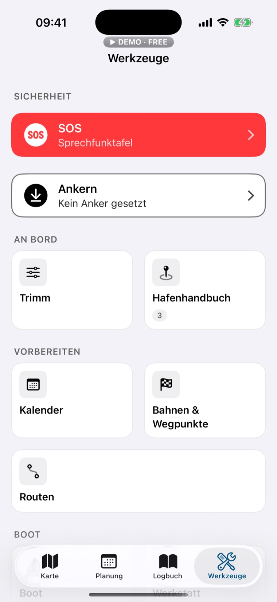
1234
Werkzeuge in der Free-Fassung, noch ohne Boot und ohne Törn: nach Situation gegliedert, nicht nach Objekt — Sicherheit oben, „Instrumente & Auswertung“ und „App“ folgen unter „Boot“ (scrollen). (ab Build 43)
Sicherheit: SOS in voller Breite — die Sprechfunktafel, immer oben, immer frei —, darunter Ankern mit dem Zustand der Wache (hier „Kein Anker gesetzt“).
An Bord: Trimm und Hafenhandbuch — was unterwegs gebraucht wird.
Vorbereiten: Kalender, Bahnen & Wegpunkte, Routen — immer in dieser Reihenfolge. Darunter (scrollen) Boot mit Boot und Werkstatt, Instrumente & Auswertung mit Instrumente und Auswertungen und App mit Einstellungen und Hilfe & Demo. (ab Build 43)
Die Tab-Leiste: Karte · Kontext-Feld (hier „Planung“ — es ist kein Törn offen) · Logbuch · Werkzeuge.
Bootswechsel: Der Bootsname steht als Titel über dem Logbuch und ist ab zwei Booten zugleich
der Umschalter — antippen, Boot wählen; denselben Wechsel findest du unter Werkzeuge
→ Boot, Abschnitt „Boot wechseln“. Wechseln darfst du jederzeit, auch unter Fahrt. Läuft auf
einem anderen Boot noch eine Aufzeichnung, fragt die App beim Ablegen nach, statt sie still zu
übernehmen.
Profil: Unter Einstellungen → Profil wählst du,
wofür du Etmar nutzt — Regatta & Training, Fahrt, Werkstatt (die Seite selbst: C16).
Was du abwählst, verliert seine Einstiege zum Neu-Anlegen. In den Werkzeugen fällt die Kachel weg
(„Bahnen & Wegpunkte“, „Routen“ oder „Werkstatt“), die übrigen rücken in derselben Reihenfolge nach,
und unter dem Raster steht „Im Profil ausgeblendet: … — Einstellungen › Profil“; ein Tipp darauf öffnet
die Profil-Seite. Ohne Regatta & Training fehlen außerdem „Neue Regatta“ und „Neues Training“ im
Logbuch-Menü, und ein Regatta-Termin im Kalender zeigt statt „Starten“ den Satz „Regatta ist im Profil
ausgeblendet“. Was schon da ist, bleibt: deine Regatten im Logbuch, ihre Auswertung und die
Regatta-Bilanz, Werkstatt-Termine im Kalender. Laufendes bleibt immer — wer mitten im Vorstart abwählt,
verliert nichts, bis das Rennen vorbei ist, und eine laufende Route behält ihre Kachel. Logbuch, Karte
und Sicherheit sind nie abschaltbar; die Demo und die Hilfe zeigen alles.
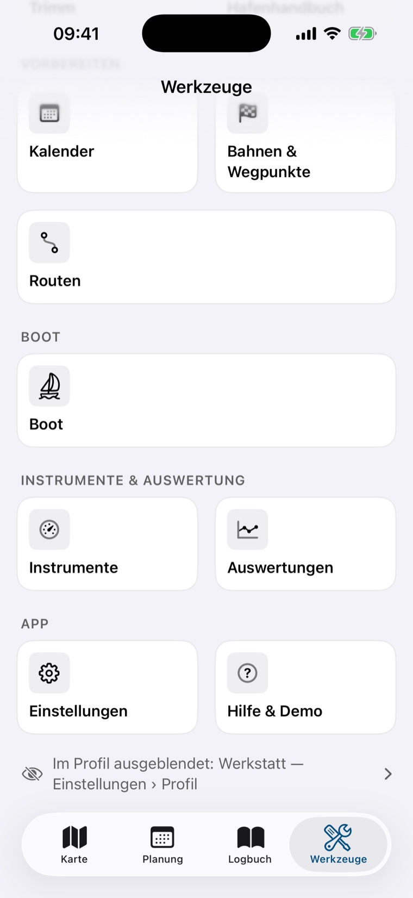
12
Werkzeuge mit abgewählter Werkstatt (nach unten gescrollt); der Abschnitt darunter heißt ab Build 43 „Instrumente & Auswertung“. (ab Build 43)
Boot steht allein über die volle Breite — die Kachel „Werkstatt“ fehlt, die übrigen behalten ihre Plätze.
Die Zeile „Im Profil ausgeblendet: Werkstatt — Einstellungen › Profil“; ein Tipp öffnet die Profil-Seite, dort holt derselbe Schalter die Kachel zurück.
iPad: Dieselben Ziele erscheinen als Seitenleiste statt als Tab-Leiste unten — quer am
Kartentisch bleibt die volle Fläche für die Karte. Der Instrumente-Knopf legt die Werte dort
neben die Karte statt darüber.
Nachtmodus: im Ebenen-Menü der Karte, als Mond-Symbol in Logbuch und Dashboard oder als Schalter in den
Einstellungen — legt einen roten Filter über die ganze App. Automatik „ab Sonnenuntergang“ schaltet
nach dem Sonnenstand an deiner Position. Auf der SOS-Seite ist der Filter bewusst ausgesetzt.
Unter dem Filter stehen Stufen-Marken („Pro“) und Vorbehalte (ab Build 43)
in voller Helligkeit statt grau, und Warnungen — „Alles gut — Kreis weiten“ auf dem Anker-Screen, der Chip
„Standort verweigert“, „Kein GPS-Fix — Ping nicht möglich“ — sind schwarze Flächen mit orangem Rahmen, damit
sie sich vom roten Alarm (MOB, „ANKER SLIPPT“) abheben. Im dunklen Erscheinungsbild ohne Nachtmodus ist die Schrift auf blauen Flächen
(Go-To-Zeile, Chips, Knöpfe) schwarz.
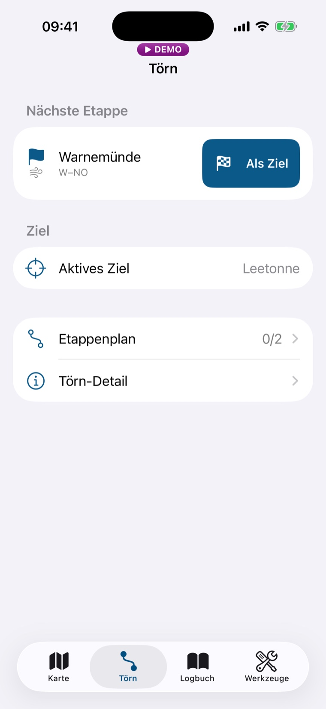
1234
Das Kontext-Feld nach dem Ablegen: Gesicht „Törn“.
Nächste Etappe aus dem Etappenplan, mit der Windbedingung der Option.
„Als Ziel“ — ein Tap wählt das Tagesziel, setzt das Go-To und den Zielort der Ankunftserkennung.
Sprung in Etappenplan und Törn-Detail.
Der zweite Tab heißt jetzt „Törn“; vor dem Ablegen „Planung“, bei angelegter Regatta „Regatta“.
Unter Fahrt bist du auf der Karte. Also liegt dort auch das Handwerkszeug.
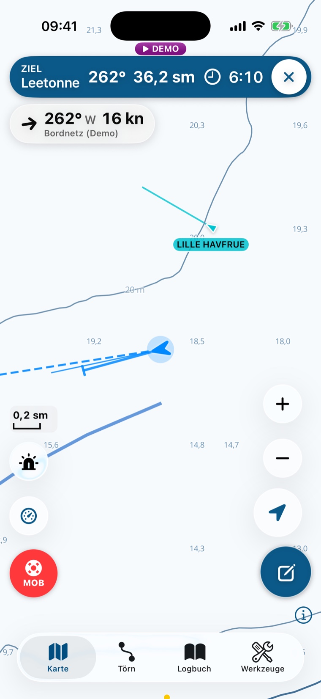
123456
Hauptkarte bei laufendem Törn mit Go-To auf Warnemünde: oben eine einzige Zeile mit Zielname, Peilung und Distanz — keine Ziel-Leiste darüber, kein Hinweis „Revier nicht gespeichert“.
Obere Leiste — hier die Go-To-Zeile mit Zielname; unter Fahrt trägt sie auch die Ankunftszeit, sobald sich eine rechnen lässt — in der ersten Minute nach dem Setzen des Ziels (und nach einem Neustart der App) grob aus der Momentanfahrt Richtung Ziel, danach aus der gemittelten Annäherung der letzten Minuten; nähert sich das Boot im Mittel nicht, greift wieder die Momentanfahrt (siehe C4). Oben stehen höchstens zwei Leisten; ein Alarm wie die CPA-Warnung zählt außerhalb des Rennens als eine davon, im Vorstart und Rennen steht zuoberst die Renn-Leiste. Tap auf die Zeile klappt die volle Kachel auf.
Linke Knopfspalte: Ebenen (Leuchtturm) und Instrumente-Datenband. Im Ebenen-Menü liegen darunter Nachtmodus, „Anker setzen“ und „Tab-Leiste ausblenden“ — auf der Karte selbst stehen nur die Knöpfe, die unter Fahrt gebraucht werden. Kartenstil, „Alle Ebenen“ und das Offline-Speichern stehen unter Werkzeuge → Einstellungen → Karte, „Kartenmitte“ unter den Logbuch-Aktionen am runden Knopf rechts unten (6) — nur mit offenem Törn; ohne Törn bleibt der lange Druck.
Zoom +/− — mit Handschuh verlässlicher als Pinch. Die Karte steht immer Nord-oben und lässt sich nicht mit zwei Fingern drehen; einen Knopf „Nord oben“ braucht sie deshalb nicht.
Standort: auf das Boot zentrieren und folgen; jede eigene Geste löst den Follow-Modus. Im MOB-Alarm passt er Boot und MOB-Punkt zusammen ein.
MOB — 0,6 s halten. Fester Platz, in jedem Modus.
Logbuch-Knopf (bei Törn) bzw. grüner Ablegen-Knopf (ohne Törn; legt mit einem Tipp ab) — dieselbe Stelle. Unter Fahrt liegt dort auch „Kartenmitte“ unter den Logbuch-Aktionen: das Lang-Druck-Menü für die Kartenmitte — Hafen, Ankerplatz, Wegpunkt, Go To, Route. Ohne Törn bleibt dafür der lange Druck.
Tab-Leiste quer (ohne Marke, siehe Querformat unten): Im Querformat trägt die Karte eine eigene, schmale Leiste — vier Symbole in einer Kapsel statt eines beschrifteten Bandes über die halbe Breite. Quer ist sie von Anfang an eingeklappt: Beim Drehen erscheint sie gar nicht erst, am unteren Rand steht nur ein Griff (Pfeil nach oben), der sie hervorholt. Dann geht sie nach zehn Sekunden ohne Bedienung oder mit der ersten Kartengeste wieder. Nur beim allerersten Start bleibt sie stehen, solange Seekarten-Hinweis oder Ersthinweise auf der Karte liegen, und geht danach nach zehn Sekunden. „Tab-Leiste ausblenden“ im Ebenen-Menü schickt sie umgekehrt dauerhaft weg — was von Hand ging, kommt auch beim Drehen nicht wieder; dann holt sie nur der Griff. Das gilt nur für die Karte; Törn, Logbuch und Werkzeuge behalten die beschriftete Leiste, und hochkant bleibt alles wie gehabt.
Die Karte funktioniert auch ohne offenen Törn: Zielorte aus dem Hafenhandbuch als orange Punkte,
Seezeichen und Tiefenlinien aus den geladenen Revieren, dein Boot als blauer Pfeil mit COG-Vektor
(sechs Minuten voraus, Plotter-Konvention), grau, sobald die Position älter als zwei Minuten ist.
Dann steht am Pfeil „Fix vor … min“, und die Go-To-Zeile streicht Peilung und Distanz durch.
Die Punkt-Karte, die Karte eines angetippten Hafens und die aufgeklappte Go-To-Kachel nennen dieselbe
Minute und zählen ohne neuen Fix mit.
Der COG-Vektor ist kräftiger und endet mit einem Querstrich: Dort bist du
bei gleichem Kurs und gleicher Fahrt nach Ablauf der Zeit. Die Zeit stellst du unter
Werkzeuge → Einstellungen → Karte → Kursvektor auf 3, 6 (Standard) oder
12 Minuten; die Vektoren der AIS-Ziele rechnen mit derselben. Links unten über den Kartenknöpfen
steht ein Maßstab — eine runde Strecke in deiner Distanzeinheit (sm oder km, unter
Einstellungen → Einheiten), die beim Zoomen mitrechnet und nachts Amber ist;
in der Törn-Story fehlt er.
Mit einem Kompass am NMEA-Netz dreht der
Bootspfeil nach dem Steuerkurs (HDG), und unter Fahrt liegt unter dem COG-Vektor eine dünne
Linie in Bugrichtung, die über seinen Querstrich hinausreicht — der Strich gehört so allein zum
Vektor. Der Winkel zwischen beiden ist Abdrift plus Strom. Sendet der Kompass missweisend, braucht die Karte die Missweisung (vom Bus oder unter
Einstellungen → NMEA-Verbindung → Erweitert); fehlt sie oder schweigt der
Kompass länger als zehn Sekunden, zeigt der Pfeil wie ohne Kompass den COG. Im Demo-Modus steuert ein
simulierter Kompass gegen einen simulierten Strom — Linie und Vektor laufen einige Grad auseinander.
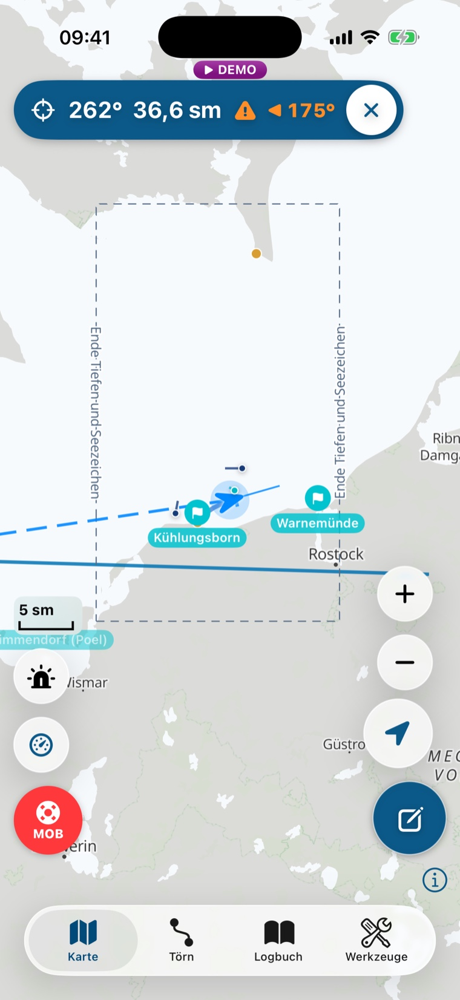
123
Demo-Modus, Zoom 12, Kursvektor sechs Minuten: Das Boot läuft über Grund etwa nach Osten, der simulierte Strom versetzt es einige Grad gegen den Steuerkurs; die dünne Linie reicht über den Querstrich hinaus.
Maßstab — hier 0,2 sm; die Länge des Balkens zwischen den Endstrichen ist die Strecke.
Querstrich am Ende des COG-Vektors: Dort bist du nach sechs Minuten bei gleichem Kurs und gleicher Fahrt.
Bootspfeil nach Steuerkurs(ab Build 43 frei) und die dünne Heading-Linie in Bugrichtung, die über den Querstrich hinausreicht — der Winkel zwischen ihr und dem Vektor ist die Versetzung.
Die wichtigsten Griffe
Langes Drücken auf eine freie Stelle öffnet ein rundes Menü: Hafen, Ankerplatz, Wegpunkt,
Go To, Route — im Radius eines Hafens auch POI, bei offenem Törn mit Etappenplan auch „Etappe“.
„Kartenmitte“ (unter den Logbuch-Aktionen, mit offenem Törn): dasselbe Menü für die Bildschirmmitte — Karte schieben, bis das
Ziel unter der Mitte liegt, dann unter Fahrt den runden Knopf rechts unten tippen:
die Logbuch-Aktionen → „Kartenmitte“. Mit nassen Händen der verlässlichere Griff als der lange Druck.
Ohne Törn gibt es diesen Weg nicht: Der grüne Knopf heißt dann „Ablegen“ und legt sofort ab.
Standort-Knopf (unten rechts, 60 pt): zentriert auf das Boot und schaltet den Follow-Modus
ein; jede eigene Kartengeste löst ihn wieder. Unter Fahrt ist er schon an, wenn
die Karte öffnet — sofern ein Törn läuft und die Position (nicht älter als zwei Minuten) mindestens
1 kn Fahrt zeigt, beim ersten Öffnen nach dem App-Start und bei der Karte dieses Törns aus dem
Logbuch. Das Boot steht dann in der Mitte, auf gut eine Seemeile quer übers iPhone — nah genug für
alle Seezeichen. Kommt die erste Position erst nach dem Öffnen (GPS noch ohne Fix), holt die Karte
das in der ersten Minute nach, solange du sie nicht selbst bewegt hast. Im Hafen, beim Planen und in
der Törn-Story öffnet die Karte wie bisher mit dem Überblick; wechselst du danach zwischen den Tabs,
bleibt der Ausschnitt, wie er war. Während eines MOB-Alarms folgt die Karte nicht
dem Boot allein: Der Knopf holt Boot und MOB-Punkt zusammen ins Bild (C13).
Zoom-Knöpfe: Mit Handschuh ist Pinch unzuverlässig. Die Karte bleibt immer Nord-oben — ein Zwei-Finger-Griff mit nasser Hand dreht sie nicht, Bootspfeil, AIS-Dreiecke und ihre Vektoren stehen damit immer richtig zur Karte. Reicht oben ein Banner bis zur Knopfsäule hinunter — etwa das MOB-Banner mit der Zeile „Peilung veraltet“ bei großer Schrift —, fallen + und − weg, und die Säule beginnt darunter; zoomen geht dann mit zwei Fingern, hinein auch per Doppeltipp, heraus mit einem kurzen Tipp mit zwei Fingern zugleich. Das Banner wird dafür nie gekürzt. Reicht der Platz während eines MOB-Alarms auch dann nicht, weicht zusätzlich der runde Knopf (Logbuch bzw. Ablegen) — den MOB-Eintrag schreibt Etmar bei offenem Törn selbst. Der Standort-Knopf bleibt immer: Im Alarm holt er Boot und MOB-Punkt zusammen ins Bild.
Instrumente-Knopf: legt die Werte zur Karte statt darüber — im Hochformat als
Datenband unten, im Querformat und auf dem iPad als Spalte rechts. Die Spalte startet schmal
(SOG und COG, zwei Kacheln untereinander); breiter stellst du sie im Ebenen-Menü
(„Spaltenbreite ändern“, C3), und der Segelkompass hat nur noch im Vollbild Platz — in einer 210 pt breiten Spalte war er
kleiner als das Zifferblatt einer Armbanduhr.
Was oben und unten liegt
Oben die Kontextleiste: unter Fahrt Zielhafen und Etappe (Restdistanz und Ankunftszeit zum Go-To-Ziel trägt die Go-To-Zeile, siehe unten); im Vorstart
und Rennen stattdessen Countdown, Abstand zur Startlinie, Time-to-burn und Linien-Bias — dieselben
Zahlen wie im Logbuch, nur dort, wo dein Boot relativ zur Linie zu sehen ist. Ein Tap öffnet den
Kontext-Tab.
Oben stehen höchstens zwei Leisten. Vorrang hat das Band der
Routenplanung, im Rennen die Renn-Leiste, dann die Go-To-Zeile, das Angebot „Bahn drehen?“, die
ruhigen Hinweise (eingeblendete Bahn, Offline-Paket, fehlende Seezeichen) und zuletzt die Ziel-Leiste
des Törns — was keinen Platz hat, erscheint, sobald eine Leiste geht. Fährst du im Rennen ein eigenes
Ziel und die Bahn bietet an der nächsten Rundung die nächste Marke an, sitzt der Knopf dafür in der
Go-To-Zeile neben dem ×; deine Navigation bleibt stehen. (ab Build 44) Im Vorstart und Rennen
steht ein eigenes Ziel als schmale Zeile ohne blaue Fläche unter der Renn-Leiste („ZIEL Name 266° ·
30,1 sm“), und über dem Markennamen der Renn-Leiste steht BAHN — so ist auf einen Blick klar, wonach
gesteuert wird; ein Tipp klappt die Zeile wie gewohnt auf. (ab Build 44) Die Distanz zur nächsten
Marke steht unter 0,5 sm (bzw. 1 km) in ganzen Metern wie beim Go-To. Ein Alarm — CPA-Warnung, Ankerwache,
MOB — zählt außerhalb des Rennens als eine der zwei Leisten und steht unter Routenband, Renn- oder
Ziel-Leiste vor allen anderen; im Rennen kommt er unter der Renn-Leiste dazu. CPA-Warnung und
Ankerwache teilen sich eine Zeile: Neben der CPA-Warnung wird die Ankerwache zum Chip, ein Tipp darauf
öffnet sie mit „Anker auf“; läuft ein MOB-Alarm, stehen beide als Chips über seinem Banner. Solange ein MOB-Alarm läuft, ruht oben, was weder Alarm noch Navigation ist: die ruhigen Hinweise, das Angebot der Bahn und die Ziel-Leiste — im Notfall sind sie Ballast. Warnungen — Stromsparmodus, fehlende Position, offline ohne Paket, Karte lädt nicht —
stehen immer. Läuft ein Törn, trägt die Go-To-Zeile Zielname, Peilung, Distanz und Ankunftszeit; meint
das Go-To das Törnziel oder hat der Törn keins, entfällt die Ziel-Leiste darüber — vorher zeigten
beide dieselbe Distanz. Steuert das Go-To woandershin, steht der Zielhafen darüber, solange oben Platz
ist. Reicht die Breite nicht, weicht zuerst ein Kursfehler bis 5°; liegst du mehr als 5° daneben,
kürzt zuerst der Name, und ohne Ankunftszeit (das Boot nähert sich nicht) bleibt die Warnung immer
stehen. Mit großer Schrift steht zuletzt Peilung über Distanz, ohne Namen und Ankunftszeit; der Kursfehler rückt als dritte Zeile darunter (über 5° als Warnung), und im Rennen weicht notfalls der Knopf der Bahn (das × führt zum selben Ziel). Die Zeile samt × bleibt im Bild; in den drei größten Stufen der Bedienungshilfen-Schrift wächst sie nicht weiter. Der Hinweis „Revier nicht gespeichert“ erscheint nur, solange kein Törn läuft — im Hafen, wo
du noch laden kannst; unter Fahrt sagt „Seezeichen & Tiefen hier nicht geladen“ nur Bescheid,
laden kannst du im Hafen. Seezeichen und Tiefen lädt die Karte vorerst nicht selbst nach: „hier nicht
geladen“ heißt, dass für den Ausschnitt oder einen Teil davon kein Revier gespeichert ist (oder
sein Abruf scheiterte); „Seezeichen & Tiefen werden geladen …“ steht nur kurz nach dem Start, solange die App ihre
gespeicherten Reviere einliest. Ist „Karte online nachladen“ aus, steht dort stattdessen „Nur Offline-Karten …“
(C3, „Online nachladen“).
Unten rechts der große runde Knopf: ohne Törn grün „Ablegen“ (siehe unten),
bei laufendem Törn der Logbuch-Knopf mit den Logbuch-Aktionen als Kreismenü.
„Laufend“ heißt: irgendwo ist ein Törn offen – auch auf einem anderen Boot,
ohne Boot oder während du die Karte eines alten Törns ansiehst. Der Eintrag geht dann in den
laufenden Törn – den aufgezeichneten, sonst den gezeigten, sonst den zuletzt begonnenen, wie beim
MOB –, und „Ablegen“ erscheint erst wieder, wenn kein Törn mehr offen ist.
Geht der Eintrag dabei nicht in den Törn, den die Karte gerade zeigt, nennt der
Rückgängig-Balken das Ziel mit – etwa „Motor an eingetragen · Ansegeln NSV“ –, und VoiceOver sagt es
am Logbuch-Knopf. Schreibt die Karte in den gezeigten Törn, nennt der Balken nur den Eintrag. Gibt es gar kein
Boot, fehlen im Kreismenü Funk, Trimm und Eintrag; dafür steht dort „Boot anlegen“.
Im Kreismenü liegt auch „Kartenmitte“; ohne Törn bleibt dafür der lange Druck. Ablegen- und
Logbuch-Knopf liegen an derselben Stelle, damit der Daumen den Platz nicht neu lernen muss. MOB und Ankerwache behalten
ihre eigenen Knöpfe an fester Stelle — die müssen blind zu treffen sein.
Der grüne Knopf heißt „Ablegen“ und tut, was der Knopf im Logbuch tut: Ein Tipp startet
Törn und Aufzeichnung sofort, ohne Formular und ohne Dialog, mit der Motor- oder Segel-Wahl aus dem Logbuch.
Sechs Sekunden lang steht unten der Rückgängig-Balken „Törn gestartet“ — ein Tipp darauf nimmt einen
Fehltouch zurück.
Regatta und Training legst du über das Menü oben rechts im Logbuch an, Ziele an der Kartenmitte ohne Törn
über den langen Druck. Nur bei Schwerpunkt „Regatta“ (Einstellungen → Anzeige)
fragt der Knopf zuerst „Regatta …“ oder „Ablegen“. Ist noch kein Boot angelegt, legt der Knopf nicht ab, sondern
öffnet das Formular „Neues Boot“ — ein Törn braucht ein Boot, sonst hätte er kein Logbuch und kein „Anlegen“. Nach dem
Sichern legt der nächste Tipp ab.
„Anlegen“ bei Stillstand. Steht das Boot — die Aufzeichnung pausiert nach 30 Minuten
unter 1,5 kn —, erscheint links neben dem Logbuch-Knopf ein zweiter runder Knopf mit der Zielflagge. Ein Tipp schließt
den Törn wie „Anlegen“ im Logbuch: Anleger-Eintrag, rückdatiert auf etwa die Zeit, als das Boot zum Stehen kam, Törn abgeschlossen,
Aufzeichnung aus. Sechs Sekunden lang nimmt der Rückgängig-Balken „Törn abgeschlossen“ das zurück. Ein Törn über mehrere
Tage fragt wie im Logbuch, ob nur eine Etappe endet oder der ganze Törn. Unter Fahrt ist der Knopf nicht da — ein
Fehltipp bei Welle schließt keinen Törn —, bei einer Regatta erst nach dem Ziel. Ein Törn ohne Aufzeichnung kennt
keinen Stillstand; ihn schließt du im Logbuch. Läuft ein Törn ohne Boot, den das Logbuch nicht zeigt, schließt ihn
dieser Knopf.
Querformat: die Karte bekommt den Platz
Quer ist die Karte breit und flach — jedes Band über die volle Breite kostet dort mehr als
hochkant. Deshalb sieht der Bildschirm quer anders aus: Die Tab-Leiste ist eine Kapsel mit vier
Symbolen ohne Text. Drehst du ins Querformat, ist sie gleich eingeklappt — das Drehen ist die Ansage
„ich will Kartenfläche“. Der Griff am unteren Rand holt sie hervor; dann bleibt sie zehn Sekunden
und geht sofort, sobald du die Karte anfasst. Die Knöpfe der Karte rücken
hoch, solange die Kapsel steht, damit sie nicht darunter geraten. Rückgängig-Balken
und Datenkarte lassen rechts Platz für die Knopfsäule; um den Rückgängig-Balken steigt sie nicht
mehr. Solange Balken oder Karte stehen, wartet der Griff, statt über
„Rückgängig“ zu liegen. Lässt eine breit gestellte Instrumentenspalte neben der linken Knopfreihe
zu wenig Platz, steht der Rückgängig-Balken über ihr statt daneben, damit „Rückgängig“ lesbar bleibt.
Auch das Anker-Banner endet quer vor der Knopfsäule – „+“ liegt nicht über
„Anker auf“. Das gilt, solange dem Banner daneben genug Breite bleibt: Ist die
Instrumentenspalte breit gestellt, läuft es über die volle Breite – sonst blieben vom Zustand
„Warte auf GPS“ und vom „Beenden“ im MOB-Banner nur Anfangsbuchstaben –, und die Knopfsäule beginnt darunter. Passt die Säule mit einer Datenkarte nicht in die Höhe, weichen die Knöpfe
+ und −, bis wieder Platz ist; zoomen geht dann mit zwei Fingern, hinein auch per Doppeltipp,
heraus mit einem kurzen Tipp mit zwei Fingern zugleich.
Die Datenkarte belegt quer höchstens knapp die halbe Höhe; was nicht hineinpasst,
scrollst du in der Karte. Sie steht neben der linken Knopfreihe oder, wenn daneben zu wenig Platz
bleibt, darüber – wie der Rückgängig-Balken. Wird es trotzdem eng, fällt zuerst die Legende des
Tracks aus der Säule. Läuft das Banner bei ganz breiter Spalte über die volle
Breite, stehen Datenkarte und Knopfsäule quer dann nebeneinander: Die Säule beginnt unten, die
Datenkarte darf bis unter Banner und Hinweis reichen, und die Legende des Tracks weicht, solange
die Datenkarte offen ist. Bei sehr großer Schrift stehen im Anker-Banner
Einstellknopf und „Anker auf“ in einer eigenen Zeile unter Zustand und Distanz – hochkant wie
quer –, quer auch im MOB-Banner Fadenkreuz und „Beenden“ unter Peilung und Distanz; so bleibt
beides ungekürzt. (ab Build 36) Im MOB-Banner hängt das nicht mehr an der Schriftgröße:
Passt die Kopfzeile nicht in eine Zeile, stehen Fadenkreuz und „Beenden“ darunter – in jeder Lage,
quer neben breiter Instrumentenspalte schon bei Standardschrift, und Peilung und Distanz stehen in
voller Größe. Das Banner wird dafür höher; quer weicht der Hinweis „Revier nicht gespeichert“,
solange das Banner steht. Bei breit gestellter Instrumentenspalte bleibt der
Datenkarte quer dann nur der Rest unter dem Banner: Solange die Tab-Leiste steht, ist
ab der zweiten der größeren Textgrößen auch ihre Kopfzeile mit Namen und ✕ angeschnitten; ist die
Leiste wieder eingeklappt, bekommt die Datenkarte deren Höhe zurück. Der Standort-Knopf bleibt immer; der runde Knopf weicht nur während eines
MOB-Alarms, wenn das Banner über der Säule liegt und sonst kein Platz ist (siehe Zoom-Knöpfe oben).
(ab Build 36) Liegt das Banner über der Säule, hebt die Kapsel sie nur so weit, wie bis zum
Banner Platz ist – die Säule bleibt mindestens 8 pt darunter, „Anker auf“ und MAYDAY bleiben frei,
auch bei sehr großer Schrift. Reicht der Platz nicht, steigt die Säule weniger, und die Kapsel liegt
für ihre zehn Sekunden vor dem untersten Knopf der Säule.
Die Instrumentenspalte liegt
rechts neben der Karte und ist schmal voreingestellt: SOG und COG, zwei Kacheln
untereinander, große Ziffern. Breiter wird sie im Ebenen-Menü („Spaltenbreite ändern“, drei
Stufen), ganz weg mit demselben Knopf, mit dem du sie geholt hast.
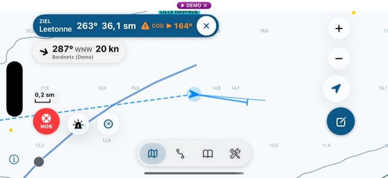
1234
Querformat im Demo-Modus: Tab-Kapsel statt Tab-Band, Instrumentenspalte rechts, Karte dazwischen. Die Kurslinie zum Go-To-Ziel ist gestrichelt, der COG-Vektor durchgezogen.
Tab-Kapsel — vier Symbole ohne Text: Karte · Kontext-Feld · Logbuch · Werkzeuge. Quer von Anfang an eingeklappt; der Griff (Pfeil nach oben) holt sie hervor, danach geht sie nach zehn Sekunden oder bei der ersten Kartengeste.
Instrumentenspalte — schmal voreingestellt mit SOG und COG. Der Pfeil oben links klappt sie zu, das Symbol daneben öffnet das Vollbild-Dashboard (dort liegt auch der Segelkompass).
Knöpfe weichen aus — MOB, Ebenen und Instrumente rücken hoch, solange die Kapsel steht, und wieder herunter, wenn sie geht.
Kontextleiste — hier die Go-To-Zeile; Hinweise und Warnungen stapeln sich darunter, nie dahinter.
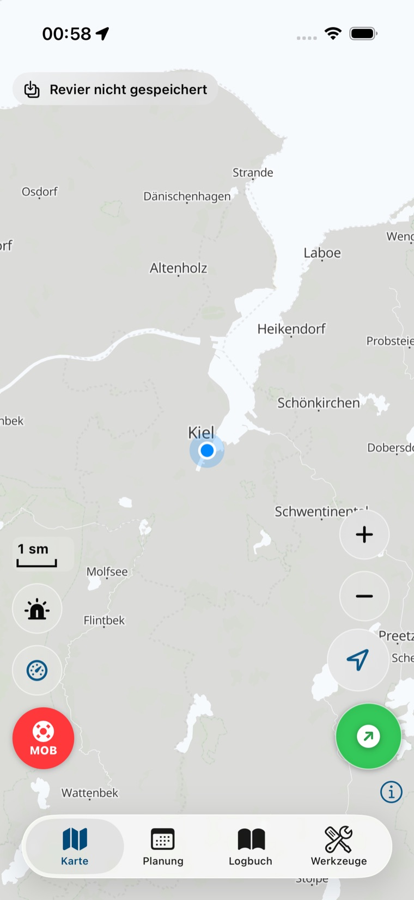
1
Ein Tipp legt ab: der grüne Ablegen-Knopf ohne offenen Törn.
Ablegen — Törn und Aufzeichnung starten sofort, ohne Formular und ohne Dialog; sechs Sekunden lang nimmt der Rückgängig-Balken „Törn gestartet“ einen Fehltouch zurück. Regatta und Training legst du im Logbuch über das Menü oben rechts an; nur bei Schwerpunkt „Regatta“ fragt der Knopf zuerst „Regatta …“ oder „Ablegen“.
Kein Modus überlebt einen App-Start: Wer nachts die App öffnet, bekommt die Navigationskarte, nie
ein Werkzeug von gestern.
Zwei Stufen, eine Regel. In der Beta kannst du beide durchspielen. (ab Build 43)
An Bord ist alles frei. Pro ist die Auswertung danach — was ein Start, ein Manöver, eine Rundung
gekostet hat. Bis Build 42 gab es dazwischen eine dritte Stufe, Plus; ihre Funktionen an Bord sind
jetzt frei, ihre Auswertungen gehören zu Pro. (ab Build 43)
Sicherheit ist immer frei — MOB, Ankeralarm, SOS, Tiefenalarm, AIS-Warnung. (ab Build 43)
An Bord frei, hinterher Pro: Alles, was während der Fahrt läuft — Aufzeichnung, Navigation,
Instrumente vom iPhone und vom Bordnetz, Warnungen, Live-Werte im Rennen —, ist frei. Frei bleibt auch,
was ein Rennen an Fakten hinterlässt: Zeiten an den Marken und je Schenkel, Abstand beim Schuss, Wenden
und Halsen, SOG-Verlauf, Schläge, Zonen, die Seite an einer Passiermarke. Pro urteilt: gegen die Polare,
gegen andere Fahrten oder als Verlust. (ab Build 43)
Kein Gate auf dem Weg nach außen — Export, Bericht, Teilen sind frei, auch das Kartenbild im
Bericht; Auswertungsseiten im Bericht enthalten, was deine Stufe hat. (ab Build 43)
Stufe
Was darin steht
Free
Alles an Bord: Logbuch mit Auto-Tracking, Trimm-Tagebuch, Hafenhandbuch, Sicherheit, Werkstatt,
Kalender; Karte mit Seezeichen, Tiefen und Offline-Paketen ohne Grenze, Routen, AIS mit CPA-Warnung,
Laylines; NMEA-Verbindung (2000 und 0183) mit Dashboard, eigenen Seiten und Segelkompass; Regatta mit
Countdown, Linien-Bias und Live-Werten im Rennen. Danach: Kernzahlen und Fakten der Regatta-Auswertung,
Messläufe mit Dauer, Polardiagramme, PDF-Bericht mit Kartenbild, Törn-Story, GPX-Export.
(ab Build 43)
Pro
Die Auswertung nach der Fahrt. Aus dem iPhone-GPS: Rennkarte, Zeitverlust-Wasserfall, Startbilanz,
Manöver mit Kosten (ohne Windgeber mit geschätztem Bug), Schenkel-Bilanz, Rundungsqualität und Zielanflug, Formkurve und Lernkurve,
Kennzahlen je Messlauf mit A/B-Vergleich. Mit Wind vom Bordnetz dazu: Polar-Leistung, VMG, Wind &
Dreher, gefahrene Polare, Segel-Crossover, Bug-Asymmetrie und die übrigen Boots-Auswertungen.
(ab Build 43)
Pro gibt es vorerst nicht zu kaufen — das Abo folgt in einem späteren Update. Bis dahin ist die Übersicht von Pro eine Vorschau ohne Preis und Kaufknopf, und ausprobieren lässt sich alles im Demo-Modus (A4). (ab Build 43)
Gesperrte Auswertungen verschwinden nie stillschweigend —
und sie stehen auch nicht einzeln zwischen den freien Zeilen. Je Screen sammelt sie eine
eingeklappte Zeile am Listenende, mit Zähler: „6 weitere Auswertungen mit Pro“, darunter ein Satz,
was Pro hier bringt, und woher die Werte kommen. Ein Tipp klappt sie auf, jede
Zeile führt in die Übersicht von Pro. (ab Build 43) Im Auswertungs-Hub ist die Seite lang — dort steht die Zeile je Kategorie am Ende ihrer Sektion („2 weitere mit Pro“), nicht einmal am Seitenende. Auf den Live-Screens — Karte, Dashboard, Vorstart,
Ankeralarm — steht keine Stufe: Was dort fehlen kann, sind Daten, und das sagt der Screen mit
der Quelle, etwa „braucht Bordnetz“ auf einer Instrumenten-Kachel. (ab Build 43)
Ein Pro-Hinweis sagt in der App immer, woher die Werte kommen:
„Aus dem GPS: Start, Manöver (Bug geschätzt), Schenkel und Rundungen. Polare, VMG und Dreher brauchen Wind vom
Bordnetz.“ Braucht eine einzelne Auswertung einen bestimmten Geber, steht er an der Zeile, etwa
„Pro · Windgeber (NMEA)“. Hast du Pro und fehlen nur die Daten, sagt die Zeile das ohne Stufe:
„Braucht Wind vom Bordnetz an den Trackpunkten.“ In diesem Handbuch steht Pro als Marke hinter der
Überschrift; was keine Marke trägt, ist frei. (ab Build 43)
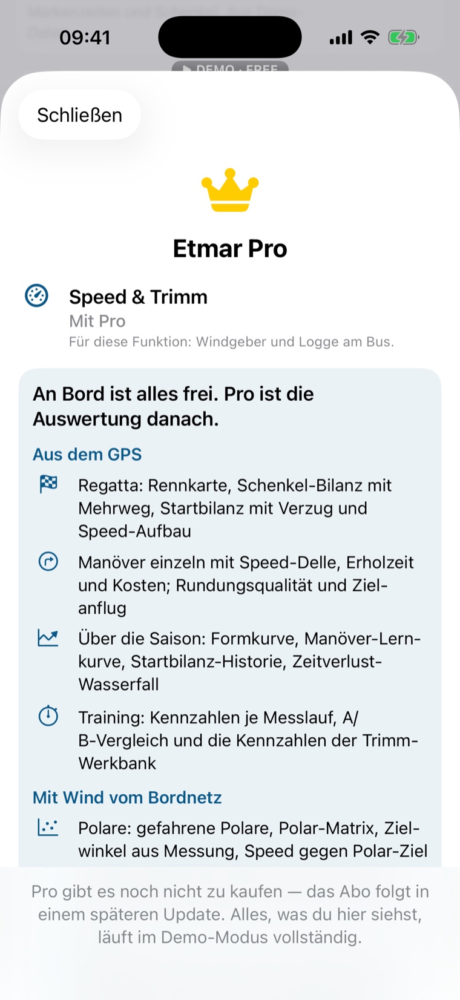
123
Die Vorschau „Etmar Pro“ in der Demo-Stufe Free, geöffnet aus der eingeklappten Zeile unter Werkzeuge → Auswertungen: kein Preis, kein Kaufknopf. (ab Build 43)
Die Funktion, von der du kamst — hervorgehoben, mit „Mit Pro“; braucht sie einen bestimmten Geber, steht dort zusätzlich „Für diese Funktion: Windgeber am Bus.“ (ab Build 43)
Die Karte — „An Bord ist alles frei. Pro ist die Auswertung danach.“, darunter, was Pro aus dem GPS rechnet; weiter unten folgt, was mit Wind vom Bordnetz dazukommt (Polare, Wind & Dreher, Boot). (ab Build 43)
Der Satz zum Kauf — Pro gibt es noch nicht zu kaufen, das Abo folgt in einem späteren Update. Ohne laufende Demo steht darunter „Im Demo-Modus ausprobieren“: Der Knopf schließt das Blatt und startet die Demo, oder die App sagt, warum gerade nicht (A4). Läuft die Demo als Free, sagt ein Satz über dem Kaufsatz, wo du sie auf Pro stellst. (ab Build 43)
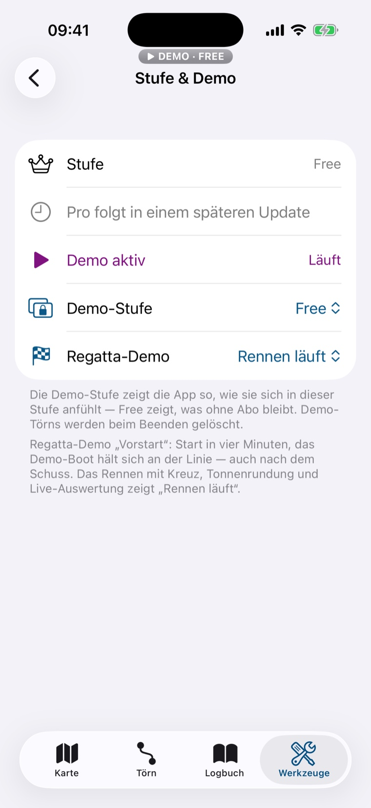
1234
Einstellungen → Stufe & Demo in der Free-Fassung, ohne laufende Demo. (ab Build 43)
Stufe — welche gerade gilt, hier Free.
„Pro folgt in einem späteren Update“ — steht dort, wo später der Kauf liegt. (ab Build 43)
Demo starten — bei laufender Demo stehen hier „Demo aktiv“, die Demo-Stufe (Pro oder Free) und die Regatta-Demo (C16). (ab Build 43)
Was die Stufen sind — Free: alles, was an Bord läuft; Pro: die Auswertung nach der Fahrt, aus dem GPS und mit Wind vom Bordnetz; dazu, dass die Demo ihre Törns beim Beenden löscht. (ab Build 43)
In der Beta
Unter Einstellungen → Stufe & Demo lässt sich bei laufender Demo die
Demo-Stufe wählen: Pro oder Free. Damit spielst du beide Stufen durch, ohne etwas zu
kaufen — samt Stufen-Zeilen und Vorschau von Pro. Genau dafür ist sie da: Fehlt dir in der Free-Fassung
an Bord etwas? Und verstehst du nach dem Rennen, was Pro dir über die Fakten hinaus sagen würde?
(ab Build 43)
Jeder Bereich der App in einem Artikel: was er tut, wie du ihn bedienst, was du beim Testen prüfen kannst. Screenshots mit nummerierten Hervorhebungen — die Nummern erklärt die Liste daneben.
C1Logbuch & Törn
Vom Ablegen bis zum fertigen Törnbericht: Wie ein Törn entsteht, was du unterwegs mit einem Tap festhältst, wie die Aufzeichnung im Hintergrund läuft und wie du im Hafen Track und Einträge in Ruhe nacharbeitest.
Im Hafen: „Vor dem Ablegen“
Das Logbuch hat zwei Gesichter. Liegt das Boot, steht oben, was am Steg zählt.
(ab Build 44) Zuerst die Antwort auf „Kann ich los?“, groß und mit Symbol: „Ablegeklar“
mit Haken, sonst „Ein Punkt offen“ oder etwa „3 Punkte offen“ mit Warndreieck (mit
Fragezeichen, wenn nur Ungeklärtes offen ist) – gezählt wie in der Planung; ein Hinweis mit „i“
zählt nicht. Darunter die Punkte der Ablegeklarliste, die noch offen sind, dann die Wahl
Ablegen unter Motor oder Segel, der Liegeplatz (Name aus dem Hafenhandbuch, sonst
der Ortsname) und die Zeile GPS mit dem Alter des letzten Fixes (unter einer Minute „Fix
gerade eben“, danach in ganzen Minuten, die ohne neuen Fix weiterzählen, ab zwei Minuten
orange). Bis Build 43 stehen Liegeplatz und Fix-Alter (Zeile „Letzter Fix“) oben und die Wahl
Motor oder Segel unten, und „Ablegeklar“ steht nur, wenn nichts offen ist. (ab Build 44)
Unter dem Kopf – und unter dem Block „Aktueller Hafen“, wenn du in einem Hafen liegst – steht
dieselbe Zeile wie in der Planung: „Nächster Termin: Titel · Tag · Uhrzeit“, ohne Termin in
den nächsten sieben Tagen „Kein Termin in 7 Tagen — Kalender öffnen“; ein Tipp öffnet den Termin
wie im Kalender bzw. den Kalender (C15). Die
Ablegeklarliste steht nur hier – vor dem ersten Törn als Block über dem Hinweis „Keine Törns“ –,
und sie zeigt nur, was dich heute betrifft: Offline-Karte fürs Revier, Standort „Immer“,
fällige Wartung, Stromsparmodus; mit anstehender Regatta die Bahn, mit eingerichtetem NMEA-Gateway
(oder mit Pro) fehlende Polardaten, mit eingerichtetem Gateway die Reichweite der Rohaufzeichnung —
die Datenquelle entscheidet, nicht die Stufe. (ab Build 43) In Free ohne Regatta und ohne Gateway sind
das höchstens vier offene Punkte. Die
Planung im Kontext-Feld nennt nur noch die Zahl offener Punkte und führt mit einem Tipp hierher.
Wer die Frage nach der iCloud-Sicherung nie beantwortet hat, sieht dazu einen Hinweis mit „i“
statt Warndreieck, der nicht als offener Punkt zählt; ein Tipp führt zu
Daten & Datenschutz. Wer iCloud bewusst ausgeschaltet hat, sieht
keine Zeile – das ist eine Wahl, kein Versäumnis. Ablegen, Anker und MOB
liegen fest am unteren Rand in der Daumenzone und scrollen nicht weg — auch vor dem allerersten Törn eines Bootes. Bei sehr großer Schrift bleiben alle drei ganz im Bild: Die Beschriftungen von Ablegen und Anker wachsen über die zweitgrößte Standardstufe hinaus nicht weiter, bei den größeren Textgrößen stehen ab der zweiten Stufe Anker und MOB untereinander – MOB rechts darunter, 60 pt wie immer –, und der Hinweis „Keine Törns“ vor dem ersten Törn lässt sich rollen, wenn er nicht mehr über die Leiste passt. Läuft ein MOB-Alarm, steht sein Banner – Peilung, Distanz, Zeit, „Beenden“ und „Funk“ – auch vor dem ersten Törn ganz oben im Logbuch, über dem Hinweis „Keine Törns“. Lädt iCloud nach einer Neuinstallation noch die Törns deines Bootes, stehen unten Anker und MOB – Ablegen geht dann nur über „Trotzdem ablegen“ im Hinweis, damit kein zweiter offener Törn neben dem synchronisierten entsteht. Ohne angelegtes Boot – etwa nach „Aus iCloud fortsetzen“, bevor deine Boote da sind – stehen unten Anker und MOB, ohne Ablegen: Ein Törn braucht ein Boot, Anker und MOB nicht. Liegt der Anker, zeigt die Kachel seinen Zustand, und ein Tipp darauf öffnet den Ankeralarm; das Anker-Banner steht dann auf der Karte. Läuft ein Törn, tritt
an die Stelle des Kopfes das Karten-Karussell, und darunter stehen die Quick-Buttons. Auch ihre Beschriftungen wachsen über die zweitgrößte Standardstufe hinaus nicht weiter: Bei den größeren Textgrößen bricht kein Wort mehr in der Mitte, die Reihen bleiben flacher, und Eintrag und Funk rücken höher. Die Anordnung bleibt – MOB als roter Kreis oben rechts, 60 pt wie immer. Der Rückgängig-Balken nach dem Ablegen wächst ebenfalls nur bis zu dieser Stufe. (ab Build 36) Ebenso gedeckelt sind die Knöpfe einer laufenden Regatta (Pings, Sync, ±5 Min, Rückruf, Marker, Ereignis, Motor, Segel, Trimm), der Laufknopf im Training und die Statuszeile, etwa „Auto-Tracking aktiv“ mit der Zahl der Trackpunkte – bis Build 35 brachen dort bei den größeren Textgrößen Wörter in der Mitte. (ab Build 37) Unter „Letzte Einträge“ – und ebenso in der Eintragsliste eines Törns – steht bei den größeren Textgrößen das Datum unter der Art des Eintrags statt rechts daneben, und Fahrt, Kurs und Wind stehen untereinander; bis Build 36 brachen dort Wörter und Uhrzeiten in der Mitte.
Die Karte des letzten Törns steht nicht mehr auf der Startseite: Im Hafen beantwortet der Track
eines abgeschlossenen Törns keine Frage. Er wohnt in der Törnliste unter „Alle Törns“ – dort trägt
jeder Törn die Form seines Tracks als kleines Bild, daneben Datum, Dauer und Meilen. Die Form
erkennt man schneller als den Namen: das Zickzack einer Kreuz, das Dreieck einer Regattabahn.
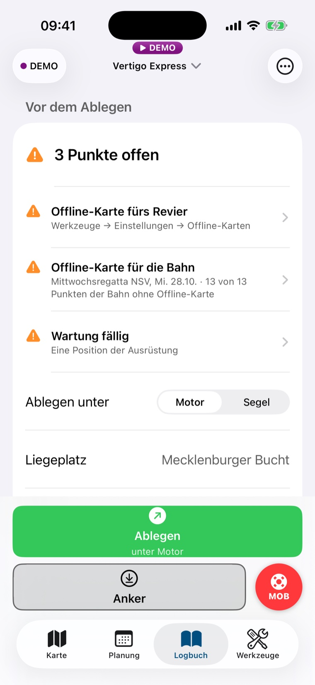
1234
Das Logbuch, solange kein Törn läuft: oben, was am Steg zählt – unten der eine Griff, der losgeht.
Vor dem Ablegen — (ab Build 44) oben die Antwort, hier „3 Punkte offen“, darunter die Punkte der Klarliste, die noch offen sind (hier: keine Offline-Karte fürs Revier, keine für die Bahn der Mittwochsregatta, eine fällige Wartungsposition; jede Zeile führt dorthin, wo sich das beheben lässt), dann die Wahl Motor oder Segel – unter Segel mit der Segelkombination – und der Liegeplatz; die Zeile GPS und „Nächster Termin“ folgen beim Rollen. Stimmt alles, steht oben „Ablegeklar“. Die Klarliste steht nur hier; die Planung im Kontext-Tab nennt nur die Zahl offener Punkte. Steht in den nächsten sieben Tagen eine Regatta deines Bootes im Kalender, kommt eine Zeile „Offline-Karte für die Bahn“ dazu, solange die Bahn nicht gedeckt ist: Der Liegeplatz liegt im Hafen, die Bahn drei Meilen davor — geprüft werden alle Marken der hinterlegten Bahn (bei Linien beide Enden, jede Position nur einmal) und die vier Ecken der Bahn plus zwei Seemeilen Puffer, jeder Punkt einzeln, damit ein Ansteuerungspaket über der Luvtonne nicht als „gedeckt“ durchgeht. Über die Warnung entscheiden allein die Marken; liegt nur der Puffer für Anfahrt und Startbereich teilweise frei, gilt die Bahn als gedeckt. (ab Build 39) Dann steht die Zeile als Hinweis mit „i“ in der Liste — „Anfahrt und Startbereich nur teilweise gedeckt“ — und führt in die Offline-Karten, zählt aber nicht als offener Punkt. Trägt der Termin noch keine Bahn, sagt die Zeile das und führt in den Kalender. Sie braucht keinen GPS-Fix; du kannst sie am Abend vorher zu Hause beantworten — dort ist auch das WLAN zum Laden.
Ablegen — der eine Griff, fest unten in der Daumenzone und die einzige farbig gefüllte Fläche auf dem Screen. Darunter steht, was er mitschreibt: „unter Motor“ oder „unter Segel“.
Anker — Ankeralarm auch ohne offenen Törn; der typische Fall ist die Nacht vor Anker nach dem Törnabschluss (C13).
MOB — 0,6 Sekunden halten. Auch ohne offenen Törn: Mensch über Bord beim Rausmotoren passiert, bevor jemand „Ablegen“ getippt hat. Alarm und Peilung laufen dann genauso. Einen Logbuch-Eintrag gibt es nur, wenn ein Törn offen ist – dann auch der eines anderen Bootes (C13). Läuft der Alarm, steht hier wie in der Leiste mit Törn die Kachel „AKTIV“ statt des Knopfs – ein zweites Halten kann Punkt und Zeit nicht mehr verschieben.
Ablegen – ein Tap oder gar keiner
Ein Tipp auf Logbuch → Ablegen genügt (auf der Karte ist es der grüne Ablegen-Knopf mit demselben einen Tipp, siehe B2). Die App legt sofort den Törn und den ersten Eintrag vom Typ „Ablegen“ an. Es öffnet sich kein Formular, alles Weitere kommt von selbst:
GPS-Position, Kurs und Fahrt werden im Hintergrund erfasst und nachgetragen.
Der Törn wird nach dem nächstgelegenen Ort benannt (z. B. „Törn Kühlungsborn – 08.08.2026“), der Eintrag heißt dann „Ablegen: Kühlungsborn“.
Die zuletzt gesetzten Segel des vorherigen Törns werden übernommen – ohne Downwind-Segel, mit Gennaker legt niemand ab.
Auto-Tracking startet sofort.
Unter Segel erscheint in der Checkliste eine Zeile „Segel“ mit der Kombination, die zuletzt oben war (Vorwindsegel bleiben draußen). Ein Tipp öffnet dieselbe Segelliste wie der Segelwechsel unterwegs – mit Windpassung, wenn der Wind bekannt ist. Die Wahl landet im Ablege-Eintrag, damit Segel-Vergleich und gefahrene Polare später wissen, was stand.
Ablegen unter Motor (Segment in der Checkliste darüber, Standard Motor) erzeugt zusätzlich einen „Motor an“-Eintrag: Die Hafenausfahrt zählt ab der ersten Sekunde als Motorstrecke (gelb auf der Karte, Motorstunden in der Statistik), und der Motor-Knopf steht danach auf „Motor aus“ für den Moment des Segelsetzens. Die Wahl gilt genauso im Eintragsformular (Typ „Ablegen“) und beim automatisch erkannten Ablegen; die App merkt sie sich.
Wetter, Bilder oder Notizen ergänzt du jederzeit später über den Eintrag unter „Letzte Einträge“. Ein versehentlich abgeschlossener Törn lässt sich im Törn-Detail wieder öffnen – wichtig bei Mehrtagestörns. „Wieder öffnen“ nimmt das Enddatum zurück und holt die Aufzeichnung an diesen Törn – sofern gerade kein anderer Törn aufgezeichnet wird und der letzte Eintrag kein Anleger ist (nach einem Anleger geht es wie immer mit dem nächsten „Ablegen“ weiter); 6 s Rückgängig wie beim Abschließen.
Bewegungs-Autostart. Auch wer nichts tippt, bekommt ein Logbuch: Ist Auto-Tracking aktiv, aber noch kein Ablege-Eintrag da („Wartet auf Ablegen“), beobachtet die App das GPS. Macht das Boot länger als eine Minute durchgehend Fahrt (über 1,5 kn), entsteht automatisch ein Ablege-Eintrag – rückdatiert auf den Fahrtbeginn – und die Aufzeichnung beginnt. Die Minute Karenz filtert Verholen im Hafen und GPS-Ausreißer heraus. Eine Mitteilung auf dem Sperrbildschirm bestätigt: „Ablegen erkannt – Auto-Tracking zeichnet jetzt auf.“
HinweisDer Autostart setzt voraus, dass die App in diesem Moment NMEA-Daten empfängt (echtes Bordnetz oder Demo-Modus). Nur so ist sicher, dass sich das Handy mit dem Boot bewegt – Handy-GPS allein kann eine Auto- oder Radfahrt nicht von Bootsfahrt unterscheiden. Ohne NMEA-Daten zeigt die Statuszeile „Wartet auf Ablegen-Eintrag“, und der Törn startet über den Ablegen-Knopf oder einen manuellen Eintrag.
Unterwegs: die Quick-Buttons
Sobald ein Törn offen ist, läuft oben im Logbuch die Karte randlos von Kante zu Kante und scrollt mit, wenn du die Seite rollst. Sie ist so hoch bemessen, dass die großen Aktionsknöpfe auch auf kleinen Geräten ohne Scrollen bereitstehen; in ihrer Fußzeile stehen Törnname, Fahrt und Kurs. Ein Tipp führt ins Törn-Detail. Unter Fahrt erreichst du dieselben Aktionen auch direkt auf der Karte über den Logbuch-Knopf unten rechts (B2).
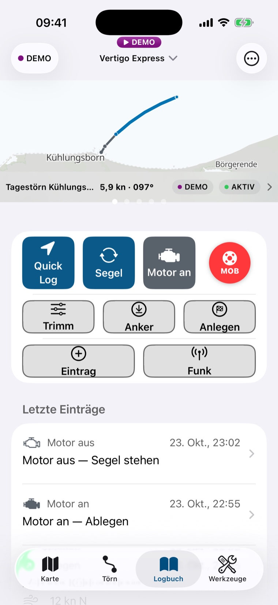
12345
Logbuch bei Fahrt: die randlose Karte, darunter die drei Griffe mit MOB, die ruhige Reihe und die letzten Einträge.
Törn-Karte — randlos, unter Fahrt flacher; in der Fußzeile Törnname, Dauer und rechts Fahrt und Kurs. Ein Tipp öffnet die Karte im Vollbild.
Die drei Griffe — Quick Log (ein Tap, ein Positions-Eintrag), Segel (Garderobe antippen) und Motor an/aus. Groß, weil man sie im Minutentakt braucht.
MOB — 0,6 Sekunden halten. Als Kreis, damit er mit keinem Rechteck verwechselt wird (C13).
Die ruhige Reihe — Trimm festhalten, Anker, Anlegen, darunter Eintrag und Funk. Umrandet statt gefüllt: seltener gebraucht, aber gleich gut zu treffen.
Letzte Einträge — hier ergänzt du später Wetter, Fotos und Notizen zu jedem Eintrag.
Die Größe sagt, wie oft man greift.Quick Log, Segel und Motor
stehen groß in der ersten Reihe — das sind die Griffe im Minutentakt —, rechts daneben MOB
als roter Kreis. Darunter flacher und umrandet, was seltener gebraucht wird: Trimm festhalten,
Anker, Anlegen, Eintrag, Funk. Farbe trägt nur noch Zustand: Motor wird gelb, solange er
läuft, der Anker bekommt eine grüne Kante, wenn er liegt, und eine rote Fläche, wenn er slippt.
Bei 25 Knoten nachts findest du das Richtige über den Platz — unter dem Rotfilter sind Farbtöne
ohnehin kein Unterschied mehr, und in der Sonne waschen sie aus.
Quick Log: ein Tap, ein Positions-Eintrag mit aktueller GPS-Position, Kurs und Fahrt. Segel und Wetter-Freitext kommen vom letzten Eintrag; Wind nur frisch aus dem NMEA-Netz (höchstens 60 s alt), sonst bleibt das Feld leer – alte Windwerte werden nie fortgeschrieben, das gilt auch für Segelwechsel und das Eintragsformular. Kein Formular, Haptik bestätigt.
Segel: die aktuelle Garderobe antippen, fertig. Jede Segel-Zeile ist ganzflächig tappbar (Häkchen links); ab fünf Segeln öffnet das Blatt direkt voll statt halbhoch. Ergibt einen Ereignis-Eintrag mit der neuen Segelkombination. Danach bietet zehn Sekunden lang ein Balken „Trimm dazu festhalten“ an: Ein Tipp legt einen Trimm-Entwurf mit den neuen Segeln an und öffnet das Formular – erst wechseln, dann trimmen. Nach „Abbrechen“ kommt kein Balken.
Eintrag: das volle Formular für einen Ereignis-Eintrag – Typ, Zeitpunkt (rückdatierbar), Titel, GPS (automatisch, manuell korrigierbar), Segel, Wetter/Wind, Bilder aus Galerie oder Kamera und Notizen.
Motor an / Motor aus (gelb/grau): ein Tap erzeugt sofort den passenden Motor-Eintrag, kein Formular. Der Knopf zeigt immer die nächste Aktion und leuchtet gelb, solange der Motor läuft. Die Strecke zwischen „Motor an“ und „Motor aus“ ist auf der Törn-Karte gelb.
Funk: öffnet das Eintragsformular mit Typ „Funkspruch“ – Station, Kanal und Vereinbarung kommen in die Notiz. Funkkontakte gehören ins Logbuch; im Streitfall zählt die Dokumentation.
Anlegen: der Abschluss mit einem Tap. Bei einem Tagestörn schließt die App sofort ab (Ankunfts-Eintrag, rückdatiert auf den Stillstand, Rückgängig-Balken statt Rückfrage). Bei einem Mehrtagestörn – offene Etappen oder Start vor heute – fragt ein Dialog: „Anlegen (Etappe)“, der Törn bleibt offen, oder „Törn abschließen“.
MOB und Anker liegen ebenfalls in der Knopfgruppe, an festem Platz – beide sind in C13 beschrieben. „Trimm“ hält den aktuellen Trimm fest und gehört zum Trimm-Tagebuch.
Wind als Vorschlag.(ab Build 44) Beim Anlegen eines Eintrags steht für Wind und Windrichtung ein grauer Vorschlag in den leeren Feldern – der aktuelle Wert der nächsten Station (DWD, DMI; ab Build 45 in Schweden das SMHI, in den USA die Bojen und Küstenstationen der NOAA, dort in Messhöhe, nicht auf 10 m umgerechnet), sonst des Wettermodells GFS, derselbe wie „Wind jetzt“ oben auf der Karte (C3); unter dem Abschnitt steht, woher er kommt. In den Eintrag kommt er erst mit „Übernehmen“ im Kopf des Abschnitts Wetter – vorher wird nichts gespeichert. Ohne Netz steht der zuletzt geholte Wert, solange er höchstens drei Stunden alt ist, und die Zeile unter dem Abschnitt nennt dann sein Alter; sonst bleiben die Felder leer. Apple Weather fragt die App nicht mehr ab (bis Build 43 kam der Vorschlag von dort, mit Böen, Luftdruck und Wetterlage). Böen, Luftdruck, Sicht, Temperatur und Wetterlage sind ohne Bordnetz Handeinträge. Mit Bordelektronik am NMEA-Netz haben die eigenen Instrumente Vorrang: Bus-Wind und Bus-Barometer füllen die Felder, und beim Abschließen des Törns wird der Wind von Ablege- und Ankunfts-Eintrag aus den ersten bzw. letzten zehn Minuten der Aufzeichnung gemittelt – der Momentwert im Hafen ist Böe und Abdeckung, das Mittel draußen der ehrliche Wind. Von Hand eingetragener Wind bleibt dabei immer stehen. (ab Build 43)
Fotos liegen vollständig in der App: Jedes Bild wird beim Sichern auf Bildschirmgröße gerechnet und lokal abgelegt – es ist auch ohne Netz scharf und bleibt erhalten, wenn die Fotomediathek später aufgeräumt wird. Auf die übrigen Fotos des Geräts greift Etmar nicht zu; mit der Kamera aufgenommene Fotos werden zusätzlich in der Mediathek gesichert. Bei mehreren Bildern in einem Eintrag: Bild gedrückt halten und „Als Vorschaubild“ wählen (Stern) – dieses Bild erscheint als Foto-Pin auf der Karte.
Fehltouch folgenlos. Nach jeder Ein-Tap-Aktion – Quick Log, Motor an/aus, Ablegen, Törn abschließen, Start- oder Ziellinie pingen – erscheint 6 Sekunden lang ein großer Rückgängig-Balken am unteren Rand; die ganze Fläche ist tippbar. Ein Tipp nimmt die Aktion zurück: Eintrag gelöscht, Törn wieder offen und Tracking wieder an, Ping auf dem vorherigen Stand. Bestätigungsdialoge vor der Aktion gibt es bewusst nicht – die kosten an Deck Blickzeit; die Rücknahme danach ist der bessere Schutz. Im Dialog „Offenen Törn abschließen?“ (bei einer Regatta „Laufende Regatta beenden?“) ist das Abschließen bewusst nicht rot — wie überall trägt der Rückgängig-Balken danach die Tragweite.
Formulare schützen Eingaben. Runterwischen oder „Abbrechen“ fragt in jedem Formular nach, sobald wirklich etwas Ungesichertes drin ist – und nur dann; unveränderte Formulare schließen mit einem Tap. Zahlenfelder nehmen Komma und Punkt gleichermaßen. Und Speichern schlägt nie still fehl: Geht ein Datenbank-Save schief, erscheint in jedem Screen ein roter Balken „Speichern fehlgeschlagen – Änderung eventuell verloren“, tippbar zum Wegwischen, sonst 8 Sekunden sichtbar.
Alle Einträge lassen sich nachträglich bearbeiten. Das ist der gedachte Weg: auf See nur das Nötigste, im Hafen in Ruhe ergänzen.
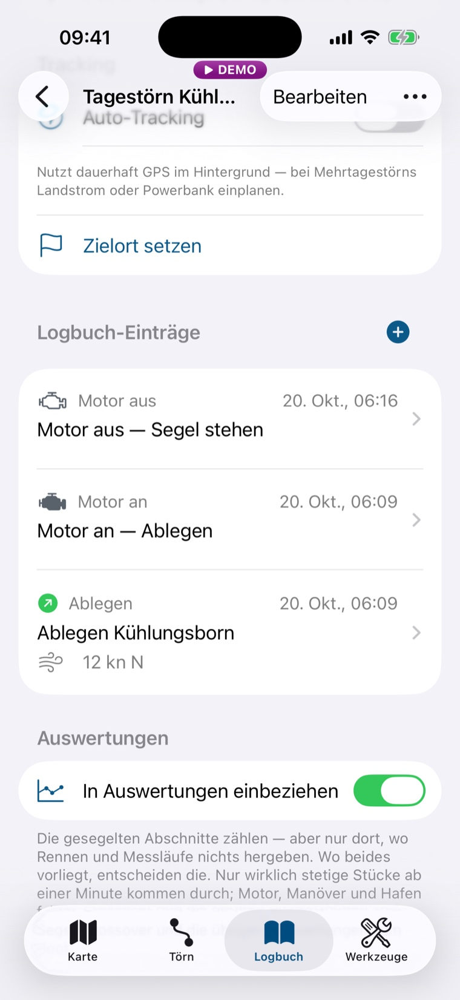
12
Die Einträge eines Törns: Typ-Symbol, Zeit und – wo vorhanden – Wind. Jeder Eintrag ist antippbar und nachträglich bearbeitbar. Farbe trägt das Symbol nur, wo sie etwas bedeutet: Ablegen grün, Motor grau.
Motor-Einträge — jeweils ein Tap auf den Motor-Knopf; die Strecke dazwischen ist auf der Karte gelb.
Ablege-Eintrag — automatisch nach dem Ort benannt, mit Windangabe („12 kn N“).
Weiter unten im Törn-Detail: Törn abschließen setzt das Enddatum und stoppt das Tracking; Wiedereröffnen ist jederzeit möglich. Bug-Färbung umkehren(ab Build 43 frei) dreht die Zuordnung rot/grün der Bug-Färbung auf der Törn-Karte um; die Färbung selbst braucht Winddaten vom NMEA-Netz.
Auto-Tracking
Woher die Position kommt. Hängt das Boot am NMEA-Netz, zeichnet die App die Position des Bootes auf, nicht die des Telefons — eine Antenne an Deck oder im Masttop sieht mehr Himmel als ein Handy in der Ölzeugtasche. Fällt das Gateway aus, schreibt sofort wieder das Telefon; der Track reißt nie ab. Karte, Törnkopf, Instrumente, MOB und die Uhr zeigen dabei alle dieselbe Quelle — vorher konnte im Törnkopf „0,0 kn" stehen, während die Kacheln fünf Knoten zeigten. Im Rohdaten-Export steht je Punkt, woher er kam.
Auto-Tracking zeichnet die Route im Hintergrund als GPS-Trackpunkte auf – auch bei gesperrtem Bildschirm und nach einem App-Neustart. Es wird beim Ablegen automatisch aktiviert (auch im Eintragsformular steht der Schalter bei einem neuen Ablege-Eintrag immer auf „an“ – wichtig bei Mehrtagestörns, weil die Ankunft das Tracking stoppt) und arbeitet stromsparend mit adaptiven Intervallen:
In Fahrt (über 1,5 kn): ein Punkt alle 30 Sekunden, bei Regatten alle 5 Sekunden.
Im Stillstand: alle 5 Minuten. Nach 30 Minuten ohne Bewegung pausiert das Tracking automatisch (alle 10 Minuten ein Punkt) und läuft bei Fahrt sofort weiter.
Gespeichert wird in Batches von 10 Punkten – das schont den Akku zusätzlich.
Die Statuszeile im Logbuch sagt, was passiert: „Aktiv“ (grün, mit Trackpunkt-Zähler), „Wartet auf Ablegen – startet bei Fahrt automatisch“, „Pausiert“ oder rot „Keine GPS-Berechtigung – es wird nicht aufgezeichnet“ mit direktem Sprung in die iOS-Einstellungen. Auch Speicherfehler und ein aktiver Stromsparmodus werden angezeigt. Mit NMEA-Verbindung und Windgeber wird zu jedem Trackpunkt zusätzlich der wahre Wind und der Bug (Steuerbord/Backbord) gespeichert – die Basis für Bug-Färbung und Regatta-Auswertung. Die Position kommt dabei immer vom iPhone-GPS: Reißt die NMEA-Verbindung ab, läuft die Aufzeichnung nahtlos weiter; für Bug-Färbung und Auswertung werden die zuletzt bekannten Winddaten bis zu 30 Minuten weiterverwendet, danach bleiben die Punkte windlos, statt mit veralteten Werten zu raten. (ab Build 43)
Robustheit und Diagnose. Während der Aufzeichnung läuft ein Significant-Location-Anker: Beendet iOS die App (Speicherdruck, Absturz), weckt eine deutliche Ortsänderung sie wieder, und das Tracking wird beim Prozessstart wiederhergestellt – nicht erst beim nächsten Öffnen. Kommt 5 Minuten kein GPS-Fix, warnt eine Mitteilung. Alle Zustandswechsel, App-Starts, Vorder-/Hintergrund, GPS-Berechtigung, GPS-Stille und Speicherfehler landen im Protokoll unter Einstellungen → Tracking-Diagnose – eine Textdatei, teilbar, ohne Positionen. Damit lassen sich Lücken im Nachhinein erklären.
WichtigRot in der Statuszeile heißt: Es wird nichts aufgezeichnet. Bei „Keine GPS-Berechtigung“ führt der Sprung direkt in die iOS-Einstellungen; auch ein aktiver Stromsparmodus wird angezeigt. Prüfe die Statuszeile einmal nach dem Ablegen – ein Blick, bevor das Handy in die Tasche wandert.
Törn-Ende: Etappe oder endgültig
Beim Anlegen unterscheidet die App zwei Eintragstypen: „Anlegen (Etappe)“ für den Zwischenstopp – die Aufzeichnung stoppt, der Törn bleibt offen, am nächsten Morgen geht es ohne Umwege weiter – und „Ankommen“ für das endgültige Anlegen, das den Törn abschließt. Beide sind auch im Eintragsformular wählbar; ein manuell erstelltes „Ankommen“ schließt den Törn ebenfalls.
Wichtigste Regel: Jede automatisch erkannte Ankunft ist ein Etappen-Anleger. Die Automatik schließt einen Törn nie versehentlich, niemand muss ihn wieder öffnen. Endgültig wird es automatisch nur an der Endstation:
Endstation: Im Törn-Formular (Törn-Detail → Bearbeiten) legst du einen Zielhafen fest – meist den Ausgangshafen – mit Ankunftsradius, optional mit Zeitraum „Rückkehr ab/bis“. Kommt das Boot dort an, nachdem es den Radius einmal verlassen hat (und, falls gesetzt, innerhalb des Zeitraums), entsteht das abschließende „Ankommen“ und der Törn wird geschlossen.
Etappen-Erkennung: Erreicht das Boot den Ankunftsradius des gewählten Etappenziels oder des Tracking-Zielorts, entsteht automatisch ein „Anlegen (Etappe)“, und die Aufzeichnung stoppt. Dafür genügt der Radius, auch in voller Fahrt. Nur der Ort, an dem du ablegst, zählt auch hier erst, nachdem du ihn verlassen hast: Steht am zweiten Morgen eines Mehrtagestörns noch das Ziel von gestern im Törn, stoppt der erste Fix die Aufzeichnung nicht. Legst du über das Formular eines neuen Ablege-Eintrags ab, sagt eine Zeile unter dem Zielort, dass du in seinem Radius liegst. Hafenhandbuch-Ziele zählen dagegen nur, wenn das Boot langsam (unter 1,5 kn) einläuft: Schnelles Vorbeisegeln an einer Hafeneinfahrt löst nichts aus, und der Abfahrtshafen zählt erst, nachdem du ihn einmal verlassen hast.
Stillstands-Vorschlag: Liegt das Boot über zwei Stunden still, schlägt die App vor, den Törn abzuschließen – als Knopf im Logbuch („Angekommen? Törn abschließen“) und als Mitteilung auf dem Sperrbildschirm. Der Abschluss erstellt einen rückdatierten Ankunfts-Eintrag auf den Zeitpunkt, als das Boot zum Stehen kam. Der Vorschlag bleibt als Hervorhebung am Anlegen-Knopf stehen.
Zielort-Auswahl: Bei Endstation, Tagesziel und Etappen stehen neben dem eigenen Hafenhandbuch und der Ortssuche auch die Häfen, Marinas und Ankerplätze aus den Seekarten-Daten zur Wahl – offline, nach Entfernung sortiert, direkt auf der Karte antippbar. Ein so gewählter Hafen landet mit Kategorie, VHF-/Liegeplatz-Notiz und passendem Ankunftsradius im Hafenhandbuch (Ankerplatz: 150 m statt 90 m). Namenlose Ankerplätze heißen schlicht „Ankerplatz“; als Ankerverbot markierte Flächen werden gar nicht erst angeboten.
123
Der Kontext-Tab mit dem Gesicht „Törn“: der kurze Weg zu Etappenziel, Etappenplan und Törn-Detail während der Fahrt.
Nächste Etappe — Zielhafen mit Windbereich; „Als Ziel“ macht ihn zum Törnziel und zum Go-To; Restdistanz und Ankunftszeit stehen dann oben auf der Karte in der Go-To-Zeile.
Etappenplan — Zwischenstopps und Endstation des Törns, siehe C2.
Törn-Detail — Zusammenfassung, Export, Karte und alle Einträge.
Sperrbildschirm: Live-Aktivität und Mitteilungen
Während der Aufzeichnung läuft eine Live-Aktivität auf dem Sperrbildschirm und in der Dynamic Island: Segelboot-Symbol, Törn-Name, die gefahrene Distanz seit dem letzten Ablegen (in nm, groß rechts) und die Ø-Geschwindigkeit seit Ablegen in der Statuszeile („Ø 5,2 kn seit Ablegen“). Solange noch keine Strecke zusammengekommen ist, steht rechts der Trackpunkt-Zähler. Bei Regatten zeigt sie den Startschuss-Countdown sekundengenau und nach dem Start die laufende Rennzeit. Handy weglegen, ein Blick genügt – und der Blick ist ehrlich: Kommt 15 Minuten kein Update (App abgestürzt oder von iOS beendet), dimmt die Anzeige und sagt „Keine aktuellen Daten – App öffnen“, statt weiter „Aufzeichnung läuft“ zu behaupten; das kompakte Insel-Symbol wird ein graues Ausrufezeichen statt des grünen Aufnahme-Punkts.
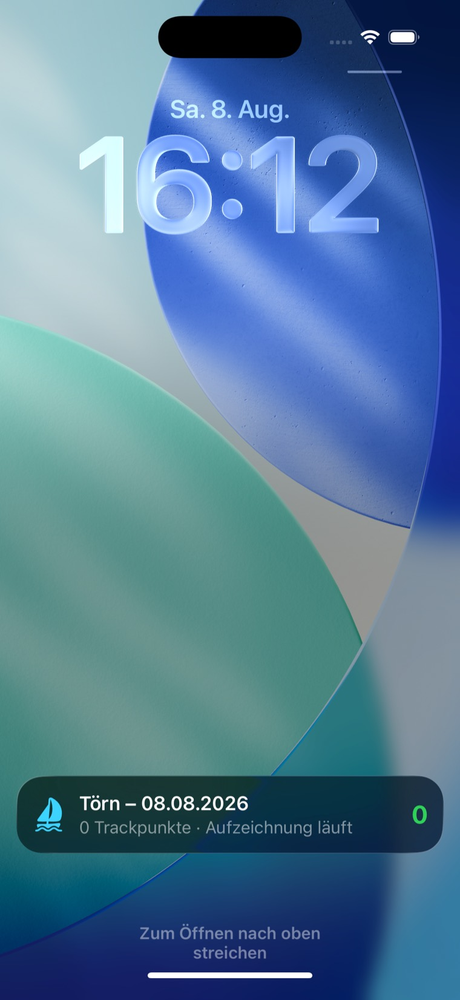
12
Live-Aktivität direkt nach dem Ablegen: Der Törn-Status ist ohne Entsperren lesbar.
Törn-Name und Statuszeile — Trackpunkte bzw. später „Ø … kn seit Ablegen“; bleibt 15 Minuten ohne Update, dimmt die Anzeige und fordert zum Öffnen auf.
Großer Wert rechts — die gefahrene Distanz seit dem Ablegen in nm; solange noch keine Strecke da ist, der Trackpunkt-Zähler.
Damit du dem Handy in der Tasche vertrauen kannst, meldet sich die App bei wichtigen Ereignissen mit lokalen Mitteilungen (kein Server, keine Datenweitergabe):
Ablegen erkannt / Ankunft erkannt (mit Zielname).
Tracking-Probleme: Trackpunkte können nicht gespeichert werden; GPS-Berechtigung wurde entzogen; 5 Minuten kein GPS-Fix.
„Törn abschließen?“ nach zwei Stunden Stillstand – funktioniert auch, wenn iOS die App beendet hat.
Regatta: Beginn der Vorstartphase und Startschuss. Dazu eine Meldung eine Minute vor dem Schuss, und die Vorstart-Meldung nennt die gewählte Vorstartdauer statt immer 15 Minuten.
Die Berechtigung für Mitteilungen wird erst angefragt, wenn Tracking oder eine Regatta aktiviert wird – nicht beim App-Start.
Törn-Detail: Export, Karte und Nachbearbeitung
Das Törn-Detail erreichst du aus dem Karussell (Vorschau antippen öffnet die Törn-Karte, „Zurück“ führt ins Detail), über „Alle Törns“ oder über den Kontext-Tab „Törn“. Es bündelt alles zu einem Törn: Zusammenfassung (Status, Zeitraum, Dauer, Distanz, Ø SOG, Motorzeit, Max-Wind, gefahrene Segelkombinationen), den Etappenplan, den Auto-Tracking-Schalter, die Karte, den Tagesbericht und alle Einträge chronologisch. „Bearbeiten“ öffnet das Törn-Formular, in dem du die Endstation und den Rückkehr-Zeitraum festlegst.
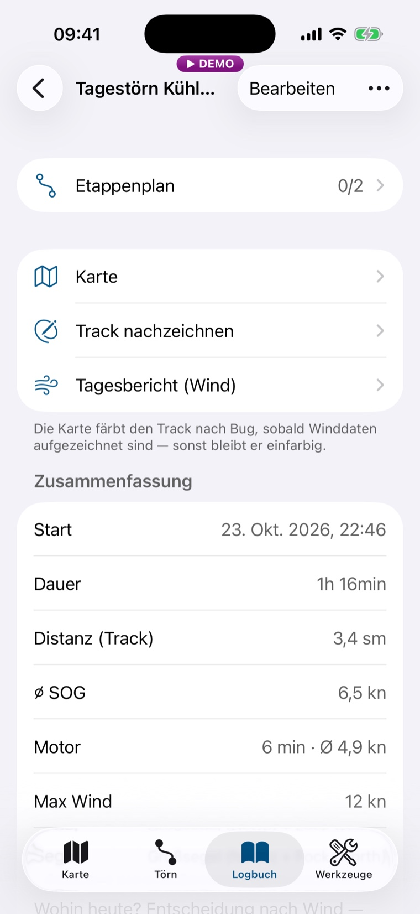
123
Törn-Detail eines Tagestörns: Etappenplan-Zugang oben, darunter die Zusammenfassung; weiter unten folgen Tracking, Karte und Einträge.
Bearbeiten — Törn-Formular mit Endstation (Zielhafen mit Ankunftsradius) und „Rückkehr ab/bis“.
Etappenplan — Zwischenstopps und Endstation des Törns, siehe C2.
Zusammenfassung — Start, Dauer, Track-Distanz, Ø SOG, Motorzeit mit Ø-Fahrt, Max-Wind, Segelkombination und Notiz.
Export über das Teilen-Menü im Törn-Detail – alles läuft über das System-Teilen-Blatt:
Logbuch als Text (.txt) – alle Einträge als Klartext.
Track als GPX – der aufgezeichnete Track als GPX-Datei.
Rohdaten (CSV) – jeder Trackpunkt als Tabellenzeile: Zeit, Position, SOG/COG und, wo ein NMEA-Bus mitschrieb, STW, HDG, Wind, Krängung; Lücken bleiben leer statt erfunden. Bei Regatten zusätzlich Markenzeiten (CSV) mit den gestempelten Durchfahrten und Schenkelzeiten. Komma-getrennt mit Dezimalpunkt, für Excel, Numbers oder Python.
PDF-Törnbericht – A4; Seite 1 mit Kartenbild des Tracks, Kennzahlen (Distanz, Dauer, Ø/Max SOG, gesegelt, Motor), Regatta-Zeile und Notizen; ab Seite 2 alle Einträge chronologisch mit Position, SOG/COG, Wind, Druck, Wetter, Segeln, Notiz und bis zu drei Foto-Thumbnails. (ab Build 43) Das Kartenbild steht in jeder Stufe auf Seite 1 — offline aus den gespeicherten Karten-Paketen, sonst aus dem Netz; lässt es sich nicht laden, steht dort eine Track-Skizze mit Nordpfeil. Die Sektion Wind auf Seite 1 zeigt (ab Build 43 in jeder Stufe) den Wind aus dem NMEA-Netz, wo er aufgezeichnet ist, sonst den Wind aus deinen Logbuch-Einträgen — gemittelt, mit Höchstwert, der Richtung, soweit notiert, und der Zahl der Einträge —, und ohne beides einen Satz, warum sie leer ist. (ab Build 45) Trägt der Track keinen Wind und hat die Fahrt Stundenwind von Station oder Modell, kommt der vor den Einträgen — in derselben Rangfolge wie der Tagesbericht, mit seiner Kopfzeile („Wind laut Station“, „Wind laut Modell“) und seinem Vorbehalt samt Quellenvermerk: das Mittel über die Stunden, die mittlere Richtung und, nur mit Stunden von einer Station, „bis“ mit ihrem stärksten Wert — keine Böe, was er misst, sagt der Vorbehalt. Hast du den Wind für jede Stunde selbst im Logbuch eingetragen, bleibt es beim Wind aus den Einträgen.
Törn-Story (Bild) – ein 1080 × 1350-Hochformat: Karte oben, dunkles Panel mit Name, Datum, Distanz/Dauer/Max SOG, zum Teilen in Messenger oder Social Media.
Bericht und Story sind bewusst frei – sie tragen den Törn zur Crew und in den Verein.
Die Törn-Karte öffnet so gezoomt, dass der komplette Track im Bild ist, mit nummerierten Pins pro Eintrag (Tipp öffnet Details samt Fotos). Beim laufenden Törn unter Fahrt öffnet sie stattdessen auf dem Boot, und der Follow-Modus ist schon an (B2); die Törn-Story zeigt weiter den ganzen Törn. Die Pins skalieren mit dem Zoom: nah groß mit Nummer, weit herausgezoomt kleine Punkte in Typfarbe. Farbe tragen nur Arten, bei denen sie etwas bedeutet – Ablegen und Start grün, Ankommen und Anlegen (Etappe) bernstein, Bahnmarke gelb, Motor grau, Mann über Bord als einziges rot; Position, Ereignis, Funk, Wende und Halse sind neutral grau, nachts hell mit schwarzer Nummer. Dieselben Farben tragen die Symbole in der Eintragsliste. Einträge mit Fotos zeigen beim Reinzoomen ihr Vorschaubild statt des Punkts, mit Nummer und Umrandung in der Ereignisfarbe; weiter draußen bleiben es Punkte mit Kamera-Symbol. Richtungspfeile entlang des Tracks zeigen, in welche Richtung gefahren wurde. Motorstrecken sind immer gelb. Mit Winddaten (ab Build 43 frei) wird der Track nach Bug gefärbt (Pastelltöne; Standard: rot = Wind von Steuerbord, grün = Wind von Backbord; umkehrbar über „Bug-Färbung umkehren“ im Törn-Detail, die Legende zeigt immer die aktuelle Zuordnung) – Kreuzschläge und Halsen sind auf einen Blick zu sehen. Bleibt der Track einfarbig, sagt die Legende – wo sie steht –, dass dieser Törn keinen Wind mitgeschrieben hat; ohne Legende steht der Satz im Törn-Detail. Dazu sitzt an jedem Bugwechsel ein kleiner Pfeil (ab Build 43 frei); beim Herauszoomen verschwinden die Marker wieder, sonst läge die Kreuz unter ihnen begraben. Was ein Manöver gekostet hat und ob es Wende oder Halse war, steht in der Regatta-Auswertung – die Karte zeigt nur das Wo. Der Tagesbericht (ab Build 43 frei) zeigt den wahren Wind je Stunde mit Richtungspfeil und Ø/Max-Geschwindigkeit, bei Mehrtagestörns pro Tag gruppiert. (ab Build 44) Ohne Windgeber holt die App für neue Fahrten den Stundenwind der nächsten Station (Deutscher Wetterdienst, DMI; ab Build 45 in Schweden das SMHI, für Fahrten der letzten 120 Tage, in den USA Bojen und Küstenstationen der NOAA, für Fahrten der letzten 45 Tage) oder des Wettermodells GFS nach, sobald sie nach der Fahrt mit Netz geöffnet wird; oben steht dann „Wind laut Station“, unter jeder Stunde Station und Abstand („Pelzerhaken · 2 km“) oder „Modell“, im Fuß die Quelle. Ein Wind, den du von Hand ins Logbuch geschrieben hast, geht vor. Abschalten lässt sich der Abruf unter Werkzeuge → Einstellungen → Daten & Datenschutz mit „Wind aus offenen Quellen“. Das Bild unten zeigt den Tagesbericht der Demo-Abendregatta. Bei offenem Törn stehen die offenen Etappenziele als türkise Flaggen auf der Karte; abgeschlossene Törns zeigen keine Ziele. Ereignis-Pins lassen sich direkt aus dem Karten-Sheet bearbeiten („Bearbeiten“-Knopf) – auch bei abgeschlossenen Törns. Häfen, Seezeichen, eigenes Boot und alle Karten-Griffe verhalten sich genau wie auf der Hauptkarte (B2, C3).
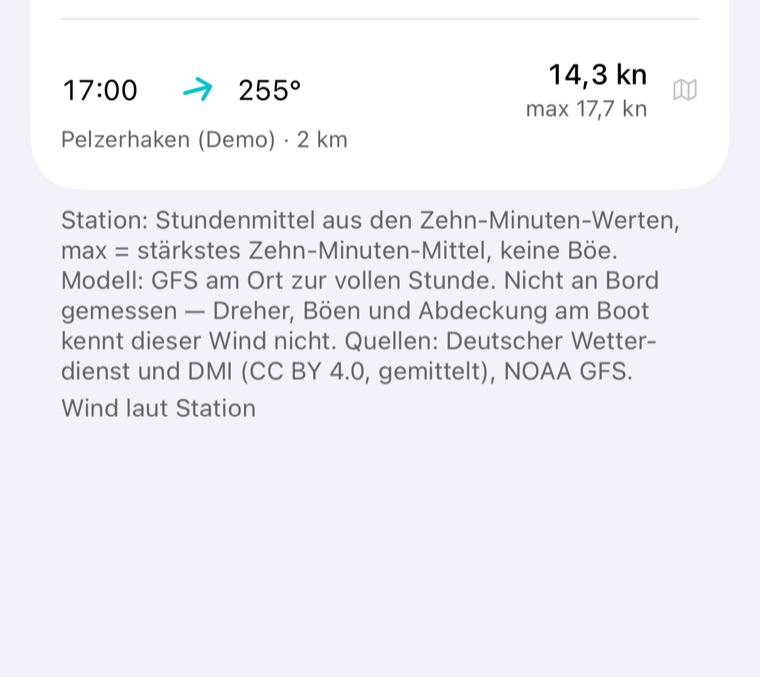
12
(ab Build 44) Tagesbericht der Abendregatta ohne Windgeber (Demo-Werte).
Herkunft — „Wind laut Station“, „Wind laut Modell“ oder beides; der Fuß darunter nennt Mittelung und Quelle.
Je Stunde — Station und Abstand zur Fahrt, hier „Pelzerhaken (Demo) · 2 km“; aus dem Wettermodell steht „Modell“ und kein „max“.
Der Knopf oben rechts schaltet in die Törn-Story: einfarbiger Track, Ereignisse als Fotos mit Nummern, Richtungspfeile – die aufgeräumte Ansicht zum Erinnern und Teilen (z. B. per Screenshot), ohne Legende, Etappenziele und Häfen; die Trackpunkt-Inspektion per Tap bleibt. Die Wahl wird pro Törn gemerkt, die Karte öffnet beim nächsten Mal in der zuletzt gewählten Ansicht; den Standard für Törns ohne eigene Wahl setzt „Karte öffnet mit“ in den Einstellungen.
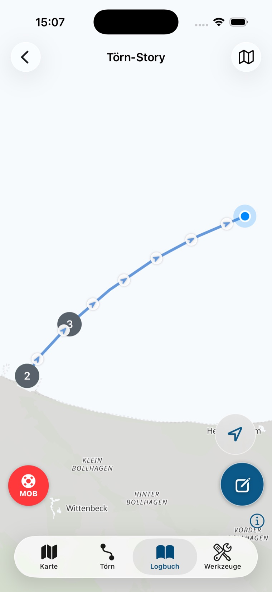
123
Törn-Story eines laufenden Törns: ein Track in einer Farbe, nummerierte Ereignisse, Pfeile in Fahrtrichtung – sonst nichts.
Umschalter — wechselt zwischen Törn-Story und der technischen Ansicht mit Legende, Bug-Färbung und Etappenzielen; die Wahl wird pro Törn gemerkt.
Ereignis-Pins — nummeriert in Typfarbe; Einträge mit Foto zeigen beim Reinzoomen ihr Vorschaubild. Tipp öffnet Details samt Fotos.
Richtungspfeile — zeigen entlang des Tracks, in welche Richtung gefahren wurde.
Nachbearbeitung. Der Grundsatz „auf See nur das Nötigste, im Hafen in Ruhe nacharbeiten“ gilt auch für den Track selbst:
Trackpunkt-Inspektion: Tippe auf eine beliebige Stelle des Tracks – der nächstgelegene Trackpunkt zeigt ein kleines Boot in Fahrtrichtung, daneben einen dezenten Pfeil aus der Richtung, aus der der Wind in dem Moment aufs Boot kam. Die Datenkarte am unteren Kartenrand liefert Zeit, SOG, COG, wahren Wind und Bug (Wind von Stb/Bb). „Eintrag hier erstellen“ macht daraus nachträglich einen Logbuch-Eintrag – Zeit, Position und Fahrtdaten des Trackpunkts sind vorbelegt.
Track nachzeichnen: Auf der Zeichenkarte liegen Seezeichen, Tiefen und – bei einer Regatta – die Bahn samt gestrichelter Verbindungslinie mit, und der vorhandene Track ist voll sichtbar – ohne beides zeichnet man blind, und die Luftlinie ist bei einer Lücke fast nie der gefahrene Weg. Fehlt ein Abschnitt (Tracking vergessen, kein GPS), findet „Track nachzeichnen“ im Törn-Detail die Lücken automatisch: Zeitsprünge über 10 Minuten sowie fehlende Stücke vor dem ersten und nach dem letzten Punkt. Als Lücke zählt nur, was auch Strecke gemacht hat (mindestens 250 m) – Liegezeiten im Hafen oder vor Anker tauchen nicht als Pseudo-Lücken auf. Lücke wählen, Punkte per langem Drücken setzen; sie verbinden sich in Zeichenreihenfolge. Uhrzeiten und Geschwindigkeiten werden aus der gezeichneten Distanz und der Fahrt der Randpunkte zurückgerechnet (Fallback 5 kn, gedeckelt auf die Lückendauer – Lücken mit Liegezeit erzeugen keine tagelangen Kriechfahrten), der Wind der Randpunkte wird interpoliert und liefert die Bug-Färbung; eine von Hand eingegebene Windrichtung hat Vorrang. Enthält die Lücke Liegezeit, wird die Segelzeit an den passenden Rand gelegt und die Naht mit einem Liegepunkt geschlossen – es bleibt keine Rest-Lücke übrig. Nachgezeichnete Abschnitte bleiben erkennbar: dünner und blasser auf der Karte, in der Trackpunkt-Karte als „nachgezeichnet“ ausgewiesen.
Lückenliste mit Vorschlag: Lücken der Art „Wahrscheinlich durchgehend gesegelt“ (Kurs vor und nach der Lücke passt zur Verbindung – bis 45° je Seite –, plausible Fahrt von 1,5–12 kn, Linie nicht gegen den Wind) füllst du nach Sichtprüfung mit einem Tap „Verbindung übernehmen“ – ohne Punkte zu setzen. Die Verbindung ist keine harte Gerade: Die Kursvektoren vor und nach der Lücke werden verlängert, bis sie sich treffen, und der Schnittpunkt wird zur Rundung – der Track sieht aus wie durchgezeichnet (ohne Kursdaten weiterhin eine Gerade). „Manuell nachzeichnen“ (An-/Ablegemanöver, Kurswechsel in der Lücke, Kreuz gegen den Wind, Pausen) bleibt Handarbeit; die Begründung steht an jeder Lücke.
Lücke durch Ablegen: Hat der Bewegungs-Autostart die Aufzeichnung erst bei Fahrt begonnen, fehlt das kurze Stück ab dem Liegeplatz – erkennbar am Ablege-Eintrag im Lückenfenster. „Ablegen korrigieren & auffüllen“ schiebt den Ablege-Eintrag an den Liegeplatz (die Anlegeposition davor) und füllt die Strecke gerade auf – zeitlich ab dem Ablegezeitpunkt, die Liegezeit wird nicht zur Kriechfahrt. Fehlt mehr als etwa 2 km Strecke, bleibt die Lücke bewusst bei „Manuell nachzeichnen“. Auch ein nachträglich verschobener Ablege-Eintrag wird als Lücke erkannt; beim Auffüllen werden die Zeiten rückwärts gerechnet und der Eintrag zeitlich mitgezogen.
Abschnitt frei wählen: Zwei Punkte auf dem Track antippen und die Strecke dazwischen neu zeichnen – etwa um GPS-Ausreißer oder Zickzack zu ersetzen. Die vorhandenen Punkte zwischen den Rändern werden erst nach ausdrücklicher Bestätigung ersetzt; die Ränder selbst bleiben erhalten.
Eintrag-Position verlegen: Im Bearbeiten-Formular eines Eintrags öffnet „Position auf Karte wählen“ eine Karte mit dem Törn-Track als Referenz. Langes Drücken setzt die neue Position (erneutes Drücken überschreibt), „Position übernehmen“ bestätigt – präziser und schneller als Breiten- und Längengrad einzutippen.
Koordinaten von Hand: Unter „Manuell bearbeiten“ tippst du Breite und Länge als Betrag in Dezimalgrad (Komma oder Punkt) und wählst daneben die Halbkugel – N oder S, E oder W. So lassen sich auch westliche Längen und südliche Breiten eingeben, etwa im Ärmelkanal. Vorgewählt ist die Halbkugel der eingetragenen Position; ist das Feld leer, die des jüngsten Eintrags mit Position im Törn, sonst N und E.
HinweisZum Ausprobieren ohne eigene Lücke: Im Demo-Törn Kühlungsborn–Gedser steckt ein 29-Minuten-Aussetzer auf dem Vorwind-Schlag – ideal, um „Verbindung übernehmen“ und das manuelle Nachzeichnen einmal durchzuspielen.
Bitte testen
Lege einmal per Knopf und einmal nur durch Losfahren ab (NMEA muss dafür laufen): Stimmen Ablegezeit, Ortsname und die übernommenen Segel? Kam die Mitteilung „Ablegen erkannt“?
Handy in die Tasche, ein paar Stunden segeln, danach den Track ansehen: Gibt es Lücken? Wenn ja, bitte sofort Einstellungen → Tracking-Diagnose teilen und dazusagen, ob das Handy zwischendurch gesperrt, im Stromsparmodus oder ohne Netz war.
Am Ziel: Hat die Etappen-Erkennung bzw. der Stillstands-Vorschlag den richtigen Zeitpunkt getroffen – und hat die Automatik den Törn nie ungefragt abgeschlossen?
Der Etappenplan beantwortet auf dem Törn die Frage „Wohin geht es als Nächstes?" — geplant wird zu Hause, entschieden wird auf See mit einem Tap.
Wo du ihn findest
Der Etappenplan gehört zu einem Törn. Du öffnest ihn über Törn-Detail → Etappenplan; die Zeile trägt eine Fortschrittsanzeige, z. B. „2/2". Bei laufendem Törn zeigt außerdem das Kontext-Feld „Törn" die nächste offene Etappe direkt an — dazu unten mehr.
Planen an Land
Ein Etappenplan ist eine Folge von Etappen in fester Reihenfolge. Jede Etappe kann eine oder mehrere Ziel-Optionen haben — das ist der Kern: „Bei W-Wind nach Gedser, bei O-Wind nach Klintholm." Welche Option gilt, entscheidest du erst am Tag selbst.
Etappe anlegen über das + oben rechts. Die Etappen sind durchnummeriert und bilden die Reihenfolge des Törns.
Ziel wählen: „Ziel hinzufügen" führt zur Suche oder ins Hafenhandbuch. Ein Hafen aus dem Hafenhandbuch bringt seinen Ankunftsradius mit — den braucht die App später, um die Ankunft zu erkennen.
Optional eine Windbedingung setzen: ein Richtungssektor von–bis in acht Himmelsrichtungen (auch über Nord hinweg, z. B. NW bis NO) und eine maximale Windstärke. „Max 25 kn" heißt: Ab 25 Knoten ist diese Option keine Empfehlung mehr. Dazu Notizen, etwa zum Kurs oder zur Ansteuerung.
Weitere Optionen mit „Alternative hinzufügen" anlegen — jede mit eigenem Ziel und eigener Windbedingung.
Über das …-Menü einer Etappe verschiebst du sie nach oben oder unten, hakst sie von Hand ab, öffnest eine abgehakte Etappe wieder oder löschst sie.
Auf See: ein Tap
Während des Törns zeigt das Kontext-Feld „Törn" die nächste offene Etappe. Hat sie mehrere Optionen, fragt die App „Wohin heute?" — ein Tap wählt das Tagesziel. Liegen Winddaten vor (NMEA oder Demo), markiert die App die Option, die zum aktuellen Wind passt, mit „passt zum Wind". Die Markierung hilft bei der Wahl, getippt wird trotzdem von Hand.
Gekoppelt an Go-To und Ankunft
„Als Ziel" heißt navigieren, nicht nur verbuchen. Die Wahl einer Option tut deshalb zwei Dinge auf einmal:
Go-To aktiv. Die Karte zeigt die Kurslinie zum Ziel; die Plotter-Kacheln (ab Build 43 frei) liefern BRG, DTW, VMC und TTG.
Zielort fürs Auto-Tracking. Die App kennt jetzt den Zielhafen samt Ankunftsradius. Läufst du ein, erkennt sie die Ankunft, hakt die Etappe ab und macht die nächste Etappe aktiv — ohne dass du im Etappenplan etwas tun musst.
Umentscheiden ist folgenlos: Dreht der Wind oder ändert sich der Plan, tippst du einfach eine andere Option. Go-To und Zielort springen mit.
Etappenziele auf der Karte
Bei offenem Törn zeigt die Törn-Karte die offenen Etappenziele als türkise Flaggen: das gewählte Ziel kräftig, Alternativen gedämpft. Abgeschlossene Etappen und abgeschlossene Törns zeigen keine Ziele mehr — die Planung ist erledigt, die Historie erzählt der Track.
Etappen entstehen auch direkt auf der Törn-Karte, ohne Umweg über die Liste:
Hafen antippen → Als Etappenziel.
Langes Drücken auf eine freie Stelle → Etappe. Den Ortsnamen holt die App per Geocoding, das Hafenhandbuch wird automatisch nachgezogen. Eine so gesetzte Etappe bekommt 300 m Ankunftsradius.
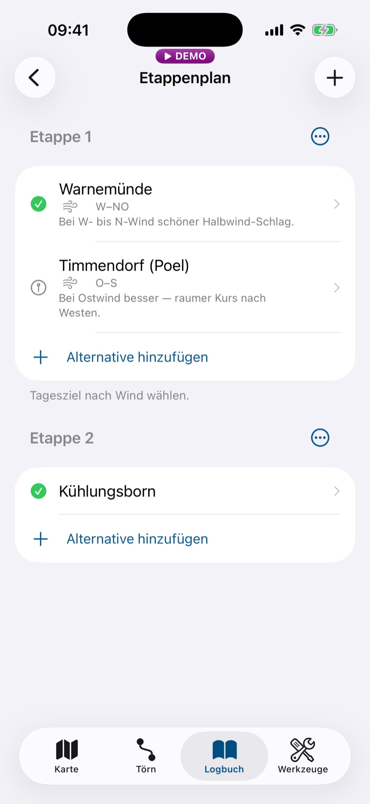
12345
Etappenplan mit zwei Etappen: Etappe 1 hat zwei Ziel-Optionen mit Windsektor (Warnemünde bei W–NO, Timmendorf bei O–S), Etappe 2 ein festes Ziel.
Plus — legt eine neue Etappe an.
…-Menü der Etappe — nach oben/unten verschieben, abhaken, wieder öffnen, löschen.
Gewählte Option — grüner Haken, darunter Windsektor und Notiz. Das ist das aktuelle Tagesziel; Go-To und Auto-Tracking zeigen hierhin.
Alternative — gedämpft mit Pin-Symbol; ein Tap im Kontext-Feld „Törn" („Wohin heute?") macht sie zum Tagesziel.
Alternative hinzufügen — weitere Ziel-Option für dieselbe Etappe.
Bitte testenLege im Demo-Modus oder auf einem eigenen Törn eine Etappe mit zwei Optionen und unterschiedlichen Windsektoren an: Wird im Kontext-Feld „Törn" die passende Option als „passt zum Wind" markiert? Setzt ein Tap auf die Option sofort das Go-To auf der Karte? Und wird die Etappe nach dem Einlaufen in den Ankunftsradius von selbst abgehakt, sodass die nächste Etappe aktiv wird?
Was die Hauptkarte an Ebenen und Stilen bietet und wie du dein Revier so speicherst, dass Karte, Tonnen und Tiefenlinien auf See auch ohne Netz da sind.
WichtigEtmar ersetzt keine Seekarte und keinen Kartenplotter — es zeichnet auf, was passiert ist. Die Karte beruht auf OpenStreetMap: Seezeichen sind Community-Daten, die Tiefenlinien stammen aus einem Modell mit rund 100 m Raster (EMODnet). Beides ist keine amtliche Quelle und wird nicht nach Nachrichten für Seefahrer berichtigt. Gestrichelte Tiefenlinien mit ≈ sind ungefähr — dicht am Ufer, in schlecht vermessenen oder nicht bewerteten Bereichen und bei grobem Raster. Die App zeigt diesen Hinweis einmal beim ersten Öffnen der Karte („Verstanden“); dauerhaft steht er unter Einstellungen → Über & Rechtliches und im Tutorial „Hauptkarte“.
Wind jetzt
(ab Build 44) Oben links auf der Karte steht in jeder Lage – im Hafen, unter Fahrt, im Vorstart und im Rennen – eine kleine Kapsel „Wind jetzt“: ein Pfeil, der mit dem Wind fliegt, dazu Richtung („woher“, rechtweisend, mit dem Strich der Windrose klein daneben, etwa „220° SW“) und Stärke in Knoten, groß genug für einen Blick. Mit sehr großer Schrift entfällt der Strich, die Gradzahl bleibt. Darunter leise die Quelle und ab 20 Minuten das Alter des Werts. (ab Build 45) Bei sehr großer Schrift gehen Richtung und Knoten vor: Die Quelle nennt dann ganze Kilometer („Falsterbo · 9 km“) und bricht notfalls in eine zweite Zeile um, die Kapsel bleibt ganz im Bild. Die Rangfolge: Bordnetz, wenn ein Windgeber frische Werte liefert; sonst dein gesetzter Wind (eine Stunde gültig, nur die Richtung); sonst die nächste Station (DWD oder DMI, ab Build 45 in Schweden das SMHI, etwa „Falsterbo · 9 km“, in den USA und an den Großen Seen eine Boje oder Küstenstation der NOAA, etwa „44013 Boston · 12 km“; Name und Abstand stehen dabei); sonst das Wettermodell GFS. Station und Modell fragt die App alle 15 Minuten mit Netz ab – nur Stationskennung oder Gradfeld gehen hinaus, keine Position, und nichts davon wird gespeichert. Ohne Netz bleibt der letzte Wert mit seinem Alter stehen; nach drei Stunden zeigt die Kapsel „—“. Eine Station zählt beim Abruf, solange ihr jüngster Wert höchstens anderthalb Stunden alt ist – sonst fragt die App die zweitnächste Station und dann das Modell. (ab Build 45) Stationen, die nur ein- oder zweimal je Stunde melden (alle des SMHI, manche Küstenstationen der NOAA), zählen zwei Stunden: Ihr neuer Wert erscheint erst eine Weile nach der vollen Stunde (beim SMHI gut 20 Minuten danach), und bis dahin bleibt die Kapsel bei der Station, statt kurz aufs Modell zu springen. Ein Tipp öffnet ein Blatt mit Quelle, Abstand, Stand und dem Vorbehalt: Stationen von DWD und DMI messen in 10 m Höhe an Land, die der NOAA (ab Build 45) in ihrer Messhöhe (Bojen 3–4 m), das Modell rechnet auf einem Gitter – Mittelwind der Lage, kein Dreher, keine Böe, keine Abdeckung. (ab Build 45) Im Blatt steht die Stärke auch in Beaufort, etwa „9 kn (3 Bft)“ – die Kapsel bleibt bei der einen Zahl in Knoten. Zeigt die Kapsel Bordnetz, gesetzten Wind oder eine Station, steht darunter „Zum Vergleich“ das Modell GFS am selben Ort, etwa „Modell GFS hier · 190° · 11 kn (4 Bft)“ mit „Lauf 00 UTC · Mittelwind des Gitters“ darunter: So siehst du, ob die Station die Lage trifft oder ob Land sie abdeckt. Geholt wird der Modellwert erst beim Öffnen des Blatts und je Modelllauf, Stunde und Gradfeld nur einmal (es geht nur das Gradfeld hinaus); bis er da ist, steht dort „Modell wird geholt …“, ohne Netz, im Datensparmodus, ohne Position oder mit „Wind aus offenen Quellen“ aus steht der Grund. Zeigt die Kapsel schon das Modell, gibt es die Zeile nicht – sie wäre doppelt. Im Demo-Modus steht ein Demo-Wert mit „(Demo)“, ohne Abruf. Dort steht auch „Wind setzen“, die Windrose aus dem Vorstart. Fehlt ein Wert, sagt das Blatt warum (Schalter aus, kein Netz, kein GPS-Fix, keine Station in Reichweite). Der Schalter heißt jetzt „Wind aus offenen Quellen“ (Einstellungen → Daten & Datenschutz) und gilt für die Kapsel, den Wind-Vorschlag im Eintrag und den Stundenwind nach der Fahrt.
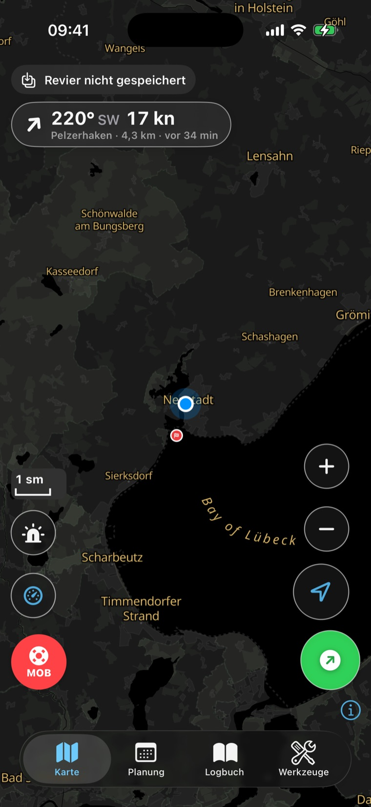
1
Hafen Neustadt ohne Windgeber: Die Kapsel trägt den Wind der nächsten Küstenstation — Richtung, Stärke, Quelle, Alter.
Wind jetzt(ab Build 44) — Pfeil fliegt mit dem Wind (hier aus 220° SW, also nach Nordost), 17 kn; darunter die Quelle „Pelzerhaken · 4,3 km“ und „vor 34 min“. Ein Tipp öffnet Quelle, Stand, Vorbehalt und „Wind setzen“.
Wind-Ebene
(ab Build 44) Zum Planen – wo weht es mehr, wie dreht der Wind über der Bucht? – schaltest du im Leuchtturm-Menü „Wind (Modell)“ ein; vorab ist die Ebene aus. (ab Build 45) Dort steht jetzt „Wind“ mit zwei Schaltern, die du getrennt einschaltest: „Modell · ab ≈ 30 km“ für die Pfeile des Wettermodells und „Stationen · jede Zoomstufe“ für die Messwerte; wer „Wind (Modell)“ an hatte, hat nach dem Update beide an. Ab etwa 30 km Kartenbreite steht an jedem Gitterpunkt des Wettermodells GFS (alle 0,25°, in der Ostsee rund 28 × 16 km) ein Pfeil, der mit dem Wind fliegt, rechts daneben die ganze Knotenzahl; unter 2 kn ein Kreis. (ab Build 45) Weiter hinausgezoomt steht nur noch an jedem 2., 4., 8. oder 16. Gitterpunkt ein Pfeil (alle 0,5°, 1°, 2° oder 4°), mit dem Wert genau dieses Punkts, nicht gemittelt – so bleiben die Pfeile auf dem Bildschirm rund einen Zentimeter auseinander, bis über die ganze Ostsee, hochkant wie quer; noch weiter hinaus rücken sie wieder enger. Küstenstationen von DWD und DMI (ab Build 45 auch die des SMHI in Schweden, in den USA Bojen und Küstenstationen der NOAA) im Ausschnitt (höchstens zehn; ab Build 45 untereinander so weit auseinander wie die Pfeile des Modells – liegen zwei zu dicht, bleibt die näher an der Bildmitte) tragen Pfeil, Punkt und Knoten darüber und verdrängen Modellpunkte direkt daneben. (ab Build 45) Sie stehen in jeder Zoomstufe, auch hineingezoomt vor dem Hafen, und ist ein Messwert 20 Minuten oder älter, steht sein Alter darunter („vor 27 min“, ab zwei Stunden „vor 2 h“). Tags navyblau, im dunklen Erscheinungsbild hell, nachts Amber – keine Farbe nach Stärke. (ab Build 45) Die Stationen tags in Petrol, im dunklen Erscheinungsbild in hellem Türkis, nachts wie das Modell in Amber – der Punkt am Marker unterscheidet sie auch ohne Farbe. Unter der Kapsel „Wind jetzt“ sagt eine Zeile, was die Pfeile sind: „Wind · Modell GFS, Lauf 06 UTC“, ab 20 Minuten mit dem Alter, im Demo-Modus „Wind · Demo-Feld“; ohne Feld nennt sie den Grund (Schalter aus, kein Netz, kein Modelllauf erreichbar), hineingezoomt steht dort „Wind-Ebene ab ≈ 30 km Kartenbreite — hinauszoomen“. (ab Build 45) Hineingezoomt steht dort nichts mehr – „ab ≈ 30 km“ sagt schon der Schalter. Ist das Raster ausgedünnt, nennt die Zeile den Abstand der Pfeile („· Pfeile alle ≈ 30 km“, Ost–West in der Kartenmitte, auf 5 km gerundet). Ist eine der beiden Ebenen an, aber „Wind aus offenen Quellen“ aus, steht dort in jeder Zoomstufe „Wind-Ebene: „Wind aus offenen Quellen“ ist aus — Einstellungen → Daten & Datenschutz“, und ein Tipp darauf öffnet Daten & Datenschutz. Ein Tipp auf einen Pfeil oder eine Station öffnet das Blatt mit Richtung, Stärke, Quelle, Stand und Vorbehalt – Titel „Wind am Gitterpunkt“ bzw. der Name der Station, ohne „Wind setzen“, denn es ist der Wind dort, nicht am Boot. (ab Build 45) Die Stärke steht dort auch in Beaufort, und das Blatt einer Station vergleicht „Zum Vergleich“ mit dem Modell GFS an der Station selbst. Geholt wird nur, solange die Karte offen ist und „Wind aus offenen Quellen“ an ist, nicht im Datensparmodus: das Modellfeld höchstens einmal je Stunde und Ausschnitt, jede Station höchstens alle 15 Minuten, nichts wird gespeichert. Ohne Netz bleibt das Feld stehen, bis seine Modellstunde drei Stunden zurückliegt; schaltest du „Wind aus offenen Quellen“ aus, ist es sofort weg. Im Demo-Modus zeigt die Ebene ohne Netz ein eingebautes Feld um die Mecklenburger Bucht und zwei Stationen (Rostock-Warnemünde, Gedser) mit erfundenen Werten (ab Build 45 das Feld mit „Modell“, die Stationen mit „Stationen“); im Blatt steht dann „(Demo)“ hinter der Quelle.
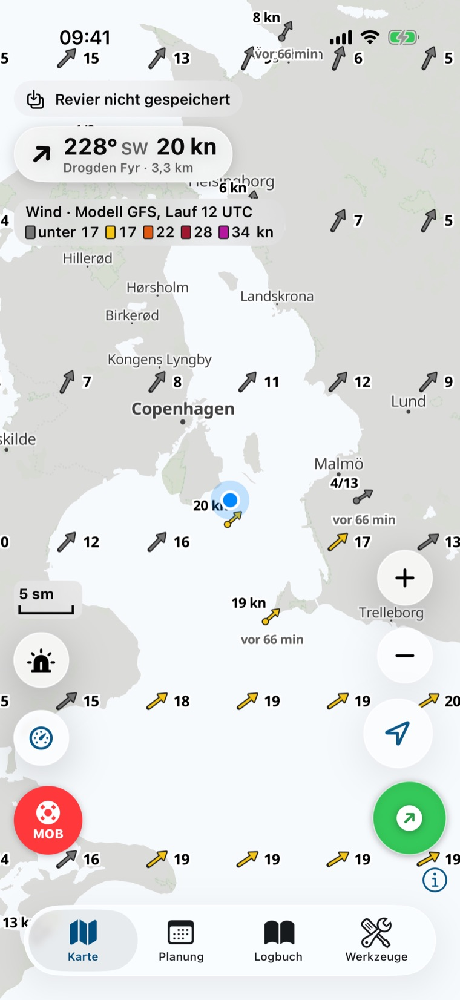
1234
(ab Build 45) Öresund mit Netz, weit hinausgezoomt, beide Ebenen an: das Modell nur noch an jedem 2. Gitterpunkt (alle 0,5°), dazu die Stationen in Petrol.
Legende(ab Build 44) — sagt, was die Pfeile sind: Modell GFS mit Lauf und ab 20 Minuten dem Alter, im Demo-Modus „Wind · Demo-Feld“; ab Build 45 ausgedünnt mit dem Abstand der Pfeile (hier „Pfeile alle ≈ 30 km“).
Gitterpunkt — der Pfeil fliegt mit dem Wind (hier aus Südsüdost, also etwa nach Nordnordwest), daneben die ganze Knotenzahl. Ein Tipp öffnet „Wind am Gitterpunkt“.
Station — Pfeil mit Punkt, darüber die Knoten (hier 17 kn), ab Build 45 in Petrol; ein Tipp öffnet das Blatt mit dem Namen der Station.
Alter(ab Build 45) — ab 20 Minuten steht unter der Station, wie alt ihr Messwert ist (hier „vor 72 min“).
Ebenen-Menü (Leuchtturm)
Der Leuchtturm-Knopf in der linken Knopfspalte der Karte öffnet ein Menü mit Häkchen: Seezeichen, OSM-Häfen (Häfen und Ankerplätze aus OpenStreetMap), Tiefenlinien, Hafenhandbuch, AIS-Ziele, dazu Regatten. Jede Ebene schaltest du einzeln — so blendest du zum Beispiel die dichten dänischen Vereinshäfen aus, ohne die Tonnen zu verlieren. Der Zustand bleibt gespeichert; das Symbol ist gefüllt, solange mindestens eine Ebene an ist.
(ab Build 43) Tiefenlinien sind anfangs aus, auch nach dem Update. Wer sie einschaltet — im Leuchtturm-Menü oder über „Alle Ebenen ein“ unter Einstellungen → Karte —, bekommt jedes Mal ein halbes Blatt: Die Linien kommen aus einem Modell mit rund 100 m Raster, sind keine amtliche Quelle und nicht zur Navigation gedacht. „Abbrechen“ lässt sie aus, „Anzeigen“ schaltet sie ein. Im Demo-Modus sind sie an, ohne Blatt; dein eigener Wert bleibt davon unberührt.
Das Menü ist kürzer: zehn Einträge — Regatten, Törns, die fünf Ebenen, „Tab-Leiste ausblenden“, „Anker setzen“ (solange kein Anker liegt) und ganz unten, direkt über dem Daumen, der Nachtmodus; nur mit offener Instrumentenspalte (quer oder auf dem iPad) kommt „Spaltenbreite ändern“ dazu. (ab Build 44) Mit „Wind (Modell)“ sind es sechs Ebenen und elf Einträge. (ab Build 45) An dessen Stelle steht „Wind“ mit den Schaltern für Modell und Stationen als Untermenü – ein Eintrag, das Menü bleibt bei elf. Ohne Tiefgang am Boot trägt „Tiefenlinien“ den Hinweis dazu als zweite Zeile. Mit dreizehn Einträgen ragte es hochkant oben aus dem Bild. Quer ist das Menü höher als der Bildschirm — dort nach unten wischen, dann erscheinen Törns und Regatten. Umgezogen sind „Kartenstil“ und „Alle Ebenen ein/aus“ nach Werkzeuge → Einstellungen → Karte; den sichtbaren Ausschnitt speicherst du im Hafen über den Hinweis „Revier nicht gespeichert“ oder unter Einstellungen → Karte → Offline-Karten. „Kartenmitte“ sitzt jetzt unter den Logbuch-Aktionen am runden Knopf rechts unten, nur mit offenem Törn (siehe B2).
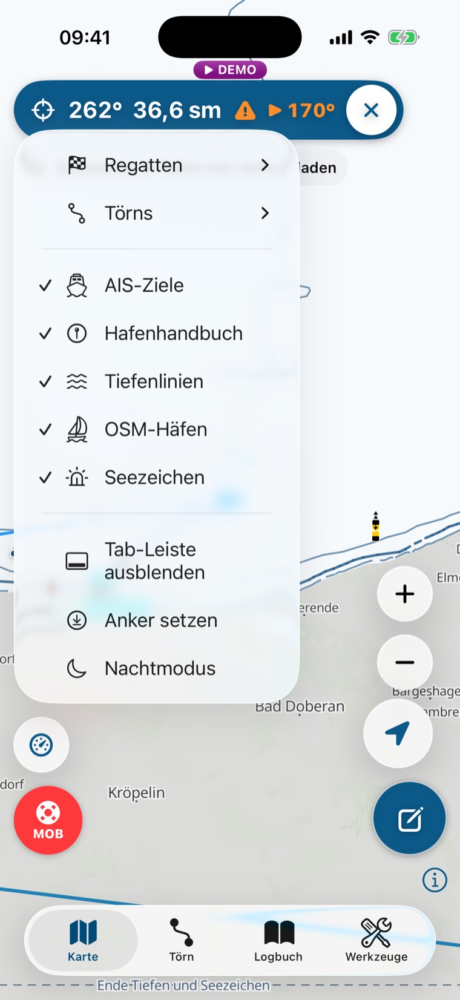
123
Leuchtturm-Menü auf der Hauptkarte, elf Einträge: oben Regatten und Törns, darunter „Wind“ und die Ebenen mit Häkchen, unten die Aktionen — der Nachtmodus direkt über dem Daumen.
Regatten, Törns — frühere Fahrten des Boots einzeln einblenden.
Wind und Ebenen — „Wind“ öffnet die Schalter für Modell und Stationen; AIS-Ziele, Hafenhandbuch, Tiefenlinien, OSM-Häfen und Seezeichen einzeln schaltbar; der Zustand bleibt gespeichert. Ohne Tiefgang am Boot steht unter „Tiefenlinien“ ein Hinweis, wo du ihn einträgst.
Tab-Leiste ausblenden, Anker setzen, Nachtmodus — Anker nur, solange keiner liegt. Kartenstil, „Alle Ebenen ein/aus“ und das Offline-Speichern stehen unter Einstellungen → Karte.
Kartenstil: Kontrast und Seekarte
Standard ist „Kontrast“: Land und Straßen fast farblos auf Neutralgrau, damit Track, Bahn, Laylines und AIS-Ziele als einzige Elemente Farbe tragen. Bei greller Sonne auf nassem Display bleibt vom Grundstil nur die Küstenlinie — genau das, was du dann brauchst. „Seekarte“ ist die klassische Optik: Wasser fast weiß, Land gedeckt, Straßen in Originalfarben. Umschalten unter Einstellungen → Karte. Beide Stile färben dieselben Kacheln zur Laufzeit um, gespeicherte Offline-Pakete bleiben bei einem Stilwechsel gültig.
„Kontrast“ zeigt Straßen erst ab Hafen-Zoom und ihre Namen erst, wenn du noch näher heranzoomst; Straßenschilder (A 20, B 105) und die bunten Symbole für Geschäfte und Parkplätze fallen ganz weg, Gebäude verschwinden in der Landfarbe. Auf der Kreuz stehen damit keine Autobahnschilder mehr zwischen den Tonnen. Die ruhigen Tiefenlinien sind in „Kontrast“ am Tag und im dunklen Erscheinungsbild deutlich kräftiger gezeichnet — vorher waren sie kaum zu sehen, und nur die Zahlen trugen die Information. Mit Nachtmodus bleiben sie bewusst zurückgenommen; nachts zählt die Sicherheitskontur in Amber: die Linie zu deinem Tiefgang, ohne Tiefgang die 2-m-Linie. „Seekarte“ behält Schilder und Symbole, aber gedämpft.
Dunkle Karte. Steht das iPhone auf dunklem Erscheinungsbild, wird die Karte zur Nacht-Seekarte: Wasser in reinem Schwarz (auf OLED-Displays sind die Pixel dort aus — maximaler Kontrast, minimaler Verbrauch, geschonte Nachtsicht), Land dunkelgrau, Straßen und Grenzen stark gedimmt, Beschriftungen gedämpft. Der Rotfilter des Nachtmodus legt sich zusätzlich darüber. Das gilt für alle Karten, auch für Vorschauen. Ausnahme: Der Stil „Seekarte“ behält im dunklen Erscheinungsbild tiefblaues Wasser, solange der Nachtmodus aus ist; erst mit dem Rotfilter wird es schwarz. Im Dunkeln gehen außerdem Straßenschilder und POI-Symbole aus dem Bild, und Gebäude treten zurück — unter dem Filter leuchteten sie heller als alles andere.
Seezeichen
Tonnen, Baken und Leuchtfeuer aus OpenStreetMap erscheinen mit ihren Seekarten-Formen: Lateraltonnen rot (stumpf) und grün (spitz), Kardinaltonnen gelb-schwarz mit Doppelkegel-Topzeichen, Sondertonnen gelb, Ansteuerungstonnen rot-weiß, Leuchtfeuer als Magenta-Stern. Namen kommen erst bei nahem Zoom. Im Nachtmodus zeichnet die Karte die Seezeichen in Nachtfarben: Rot bleibt Rot, Grün, Gelb und die weißen Ränder werden Amber. Das gilt auch für die Topzeichen, den Stern der Leuchtfeuer (statt Magenta) und den Anker der Häfen und Ankerplätze, der nachts auf einer schwarzen Scheibe steht. Die grüne Spitztonne ist nachts also ein Amber-Kegel — unterschieden wird an der Form, spitz oder stumpf. Die Ansteuerungstonne ist nachts rot-schwarz gestreift, die Sondertonne eine volle Amber-Scheibe.
Die Darstellung ist nach Relevanz gestaffelt: Leuchttürme, Kardinal-, Einzelgefahr- und Ansteuerungszeichen stehen schon in der Revierübersicht — klein, damit sie weit draußen kein Farbklecks sind, und wachsen beim Ranzoomen. Lateraltonnen kommen ab Revier-Zoom dazu, Sonderzeichen und Baken erst nah dran. Einen Filter dafür gibt es bewusst nicht — kein weiteres Menü an Deck. Die Ebene ist standardmäßig an.
Molenfeuer erscheinen erst ab Revier-Zoom zusammen mit den Lateraltonnen und als kleinerer Stern — in der Übersicht steht nur noch der Leuchtturm, nicht jede Hafeneinfahrt. Leuchttürme, Kardinal- und Gefahrenzeichen sind in der Übersicht größer als bisher, damit du Nord- von Südkardinal am Topzeichen unterscheidest.
Geladen werden die Seezeichen automatisch mit jedem Offline-Paket: ein Abruf pro Revier, lokal gespeichert, offline verfügbar. Mit demselben Abruf kommen Häfen, Marinas und Ankerplätze als indigo Anker auf die Karte. Der Demo-Modus bringt echte Seezeichen der Mecklenburger Bucht mit.
(ab Build 43) Bei Tag tragen rote und grüne Tonnen die Farben der Seekarte — ein tieferes Rot und Grün, das sich in der Sonne besser vom hellen Wasser abhebt —, und Häfen stehen als indigo Ring mit Anker auf heller Scheibe, damit sie neben den Tonnen nicht die lautesten Zeichen sind. Auf der dunklen Karte bleiben die kräftigen Farben und die volle indigo Scheibe, nachts der Nachtsatz.
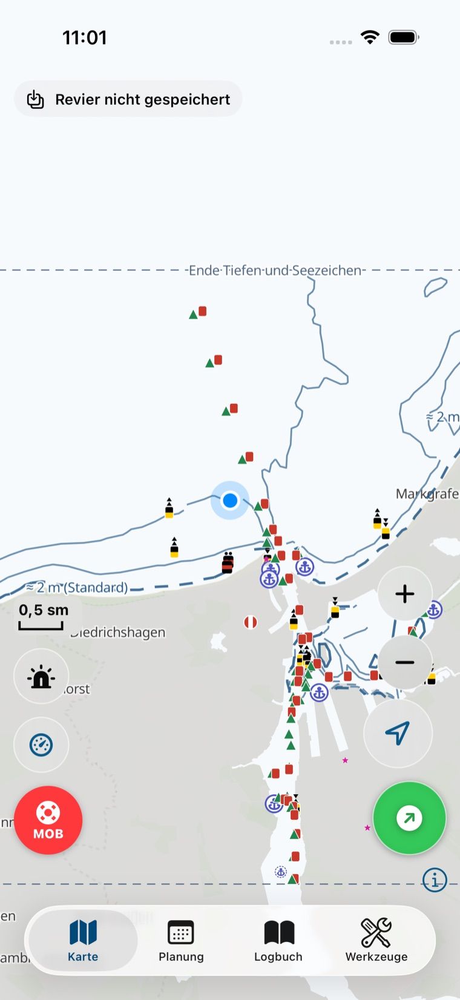
1234
Fahrwasser Warnemünde: Lateraltonnen, Kardinaltonnen mit Topzeichen, Leuchtfeuer und OSM-Häfen — alles aus einem Abruf, offline verfügbar. Im Seekanal und auf der Unterwarnow stehen keine Tiefenlinien — schmaler als rund 800 m; vor der Einfahrt und in den breiten Hafenbecken bleiben sie. Oben und unten die blaugraue Grenze des geladenen Reviers.
Kardinaltonnen — gelb-schwarz mit Topzeichen; schon in der Revierübersicht sichtbar.
Lateraltonnen — rot stumpf, grün spitz entlang des Fahrwassers; ab Revier-Zoom.
OSM-Hafen — indigo Ring mit Anker, kommt mit demselben Abruf wie die Seezeichen.
Leuchtfeuer — Magenta-Stern wie auf der Seekarte.
Tiefenlinien und Sicherheitskontur
Tiefenkonturen bei 2, 5, 10 und 20 m — dezent, geglättet, jede Linie mit aufrechter Tiefenangabe wie auf der Seekarte. Flächenfärbung gibt es bewusst nicht: Mit dem groben Modellraster wurden gefärbte Flächen treppig oder lagen neben den Linien, das war irreführend. Die Tiefen sind eine eigene Ebene im Leuchtturm-Menü, unabhängig von den Seezeichen, und werden wie diese mit jedem Offline-Paket geladen (ein Abruf des EMODnet-Rasters pro Revier, lokal verarbeitet, offline verfügbar). Von selbst lädt die Karte beide vorerst nicht nach (siehe „Online nachladen — vorerst aus“ unter Offline-Pakete): Sie kommen nur mit einem gespeicherten Revier. Der Demo-Modus bringt die Tiefen der Mecklenburger Bucht mit.
Gegen das Wasser der Karte geprüft. Linien und Lotungen gibt es nur, wo das Tiefenmodell und die Wasserflächen der Karte übereinstimmen — quer über Land läuft keine Linie; nur am Ufer selbst kann eine noch bis zu einer Rasterzelle neben dem Kartenufer liegen. In Flüssen und Hafenbecken, die schmaler als rund 800 m (sieben Rasterzellen) sind, zeigt die Karte gar keine Tiefenlinien und Lotungen — gleich, in welche Richtung das Gewässer verläuft. Die 800 m gelten für die 120-m-Zellen eines normalen Reviers, in großen Revieren mit gröberem Raster liegt die Grenze entsprechend höher. So gibt es in der Schlutuper Bucht und auf dem engen Stück der Trave bis zur Pötenitzer Wiek keine Tiefenlinien, ebenso im Seekanal von Warnemünde und auf der Unterwarnow bis Rostock; vor der Einfahrt und in den breiten Hafenbecken bleiben sie. Das ist Absicht, kein Fehler: Dort gilt die Seekarte mit Fahrrinne und Tonnenstrich, eine Modell-Linie läge innerhalb ihres eigenen Fehlers. Breitere Wasserflächen wie die Pötenitzer Wiek oder der Dassower See behalten ihre Linien. Konnte die App das Wasser der Karte beim Laden nicht holen, sagt es die Revier-Zeile unter Einstellungen → Karte → Offline-Karten, mit „Erneut versuchen“ darunter.
Sicherheitskontur. Ist am Boot ein Tiefgang hinterlegt (Werkzeuge → Boot), betont die Karte genau eine Linie: die flachste Kontur, die noch tiefer liegt als Tiefgang plus Puffer (mindestens 1 m, bei tiefem Kiel die Hälfte des Tiefgangs — bei 1,65 m Tiefgang also die 5-m-Linie). Alle anderen Konturen sind zurückgenommen, denn auf dem Plotter zählt genau die eine Linie, die du nicht überfährst.
Ohne Tiefgang gilt die 2-m-Linie als Standard: Sie ist betont und trägt die Beschriftung „2 m (Standard)“; im Ebenen-Menü trägt „Tiefenlinien“ eine zweite Zeile, die sagt, wo du den Tiefgang einträgst (Werkzeuge → Boot). Die Zahl der Sicherheitskontur hat Vorrang vor Seezeichen-Namen und Lotungen — vorher konnte ein Tonnenname oder eine Lotung sie verdrängen. Den Seezeichen selbst weicht sie aus, damit sie kein Topzeichen verdeckt; die Namen stehen unter ihrer Tonne. Tiefenzahlen folgen der Einheit unter Einstellungen → Einheiten: an den Linien mit Einheit („16,4 ft“), die Lotungen in derselben Einheit ohne.
Wie fein die Tiefen sind. Das Raster hängt am Ausschnitt, nicht am Detailgrad. Bis zu einem Revier von rund 80 × 80 sm liegt es bei etwa 120 m, der Auflösung des EMODnet-Modells; größere Ausschnitte werden gedeckelt und damit gröber. Für die Ansteuerung also das kleinere Revier laden, für die Törnplanung reicht das große. Modelldaten — für die Planung, nicht fürs Ankern auf den Meter.
Gestrichelt heißt ungefähr. Eine Tiefenlinie, deren Lage das Modell nicht genau hergibt, ist gestrichelt — so zeichnet die Seekarte eine ungefähre Tiefenlinie — und trägt „≈“ vor der Zahl: „≈ 2 m“, bei der Standard-Kontur „≈ 2 m (Standard)“. Das kommt an drei Stellen vor — dicht am Ufer, bei grobem Raster und dort, wo EMODnet die Vermessung als gering einstuft oder nicht bewertet (Absatz „Güte der Vermessung“ unten). Dicht am Ufer: Wo eine Linie über eine Rasterzelle läuft, die an Land grenzt oder selbst Land ist, ist ihre Lage nur auf etwa eine Zelle genau, bei einem normalen Revier also auf rund 120 m; dort wird nur dieses Stück gestrichelt. Grobes Raster: In einem Revier, dessen Raster gröber als 200 m ist — das beginnt bei rund 60 000 km², etwa 130 × 130 sm —, ist jede Linie gestrichelt, und die Revier-Zeile unter Einstellungen → Karte → Offline-Karten sagt „gröber als 200 m — Linien gestrichelt“. Farbe und Stärke bleiben dabei, wie sie sind: Auch gestrichelt ist die Sicherheitskontur die kräftigste Linie, nachts in Amber. Kräftig und gestrichelt heißt: „Hier wird es flach — wo genau, weiß das Modell nicht.“ Der Seekarten-Hinweis oben sagt es in einem Satz.
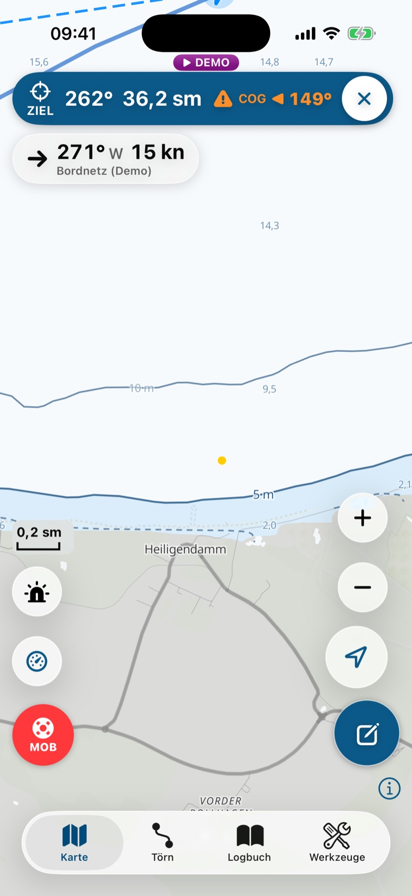
123
Tiefenlinien vor Heiligendamm im Demo-Modus, jede mit aufrechter Beschriftung und bewusst ohne Flächenfärbung. Das Demo-Boot hat 1,49 m Tiefgang, betont ist deshalb die 5-m-Linie; die 2-m-Linie am Strand ist gestrichelt und trägt „≈“.
10-m-Linie — ruhig und durchgezogen; Konturen liegen nur auf Wasser, das Modell und Karte kennen.
5-m-Linie — die Sicherheitskontur zum Tiefgang des Boots, die kräftigste Linie.
Gestrichelt — dicht am Ufer ist die Lage der Linie nur auf etwa eine Rasterzelle genau; die Zahl trägt dann „≈“, das Zeichen heißt „ungefähr“.
Güte der Vermessung. Das Tiefenmodell ist aus Vermessungen verschiedener Ämter und Jahrzehnte zusammengesetzt, und EMODnet bewertet jede mit einem Qualitätsindex von 0 bis 100, der Genauigkeit, Alter und Zweck der Vermessung zusammenfasst. Die App holt ihn beim Laden eines Reviers mit und zeichnet danach: Wo EMODnet die Vermessung als gering einstuft (unter rund 46) oder gar nicht bewertet, ist die Linie gestrichelt und trägt „≈“ — auch die Sicherheitskontur. Zusammenhängende nicht bewertete Wasserflächen ab 5 km² tragen ab Revier-Zoom den Vermerk „Güte unbekannt“ — in der ruhigen Farbe der Tiefenlinien, nachts in Amber, bei großen Flächen mehrfach, mindestens rund 8 km auseinander, ohne Fläche und ohne Schraffur. Der Vermerk heißt nicht „unvermessen“, weil EMODnet manche Quellen gar nicht bewertet — etwa das dänische Tiefenmodell, das in der dänischen Südsee große Flächen deckt: Dort wurde gelotet, nur wie genau, sagt der Index nicht. Die Lotungen bleiben deshalb stehen, bei geringer Güte ebenso. Die Demo-Bucht zeigt alle Klassen: Vor Kühlungsborn und Warnemünde sind die Linien bis auf ufernahe Stücke durchgezogen, nördlich davon und vor Gedser gestrichelt, mit „Güte unbekannt“ dazwischen.
Die Revier-Zeile unter Einstellungen → Karte → Offline-Karten sagt, wie viel der Wasserfläche gut (Index ab rund 62), mittel, gering oder von unbekannter Güte ist, etwa „Güte der Wasserfläche: gut 62 % · mittel 1 % · gering 12 % · Güte unbekannt 24 %“ — gezählte Rasterzellen, je Klasse auf ganze Prozent gerundet; Wasser, für das der Index gar nichts sagt, zählt zu keiner Klasse. Darunter steht die Quelle der Tiefen an einem Punkt des Reviers, etwa „Quelle GERMANY-BALTIC-SEA-DTM 2024“ in der Mecklenburger Bucht. Konnte die App den Qualitätsindex beim Laden nicht holen, sagt es die Zeile in Orange, mit „Erneut versuchen“ darunter; die Linien sind dann nicht nach Güte gestrichelt.
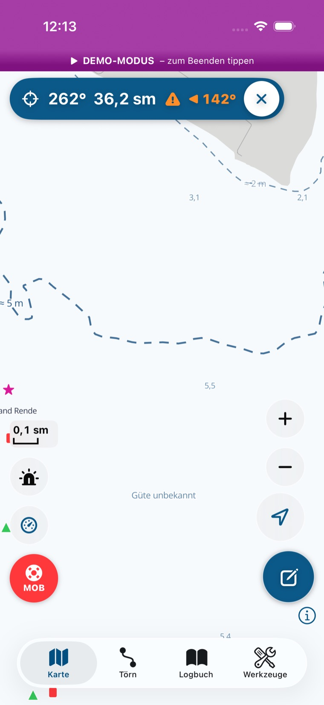
12345
Vor Gedser im Demo-Modus: Für dieses Wasser stuft EMODnet die Vermessung als gering ein oder bewertet sie nicht — jede Linie ist gestrichelt und trägt „≈“, auch die Sicherheitskontur zum Tiefgang des Demo-Boots.
„≈ 5 m“ — die Zahl der Sicherheitskontur, ungefähr.
Sicherheitskontur — kräftig und gestrichelt: Hier wird es flach, wo genau, weiß das Modell nicht.
„Güte unbekannt“ — nicht bewertete Wasserfläche ab 5 km²: vermessen, aber ohne Bewertung.
Lotung — die Zahlen bleiben auch dort stehen, wo die Güte unbekannt ist.
„≈ 2 m“ — die 2-m-Linie an der Küste, gestrichelt wie alle Linien hier.
Offline-Pakete
Die Basiskarte (OpenFreeMap/OpenStreetMap) funktioniert auf See nur, wenn du das Revier vorher gespeichert hast — am besten im Hafen-WLAN. (ab Build 43) Pakete gibt es ohne Grenze und in jedem Detailgrad, auch „Fein“. Der Weg: Einstellungen → Karte → Offline-Karten oder, solange kein Törn läuft, der Hinweis „Revier nicht gespeichert“ auf der Karte (siehe unten).
Karte oben auf das Revier schieben.
Detailgrad wählen: Grob = Übersicht, Mittel = Revier, Fein = Hafenansteuerung. Die Größenschätzung steht daneben, bevor du lädst.
„Sichtbaren Ausschnitt speichern“ tippen. Zu große Ausschnitte lehnt die App ab, statt halb Europa zu laden.
Die Paketliste zeigt Name (automatisch nach dem Ort in der Mitte), Fortschritt und Größe; Löschen per Wisch mit Bestätigung.
Nur Seezeichen & Tiefen laden. Der zweite Knopf holt Tonnen, Häfen und Tiefenlinien des Ausschnitts, aber keine Kartenkacheln — wenige hundert KB statt hunderter MB. Die Basiskarte bleibt offline dann leer, Flachwasser und Seezeichen sind aber da. In allen Stufen enthalten: Flachwasser ist eine Sicherheitsinformation, das Free-Limit deckelt nur Kartenkacheln. Ohne Knopfdruck holt die Karte diese Daten vorerst nicht (nächster Absatz): Dieser Knopf und das Speichern eines Reviers sind die Wege zu Seezeichen und Tiefen.
Online nachladen — vorerst aus. Das Nachladen von Seezeichen, Häfen und Tiefen ist abgeschaltet, bis es zuverlässig läuft: Sie kommen nur aus Revieren, die du speicherst oder mit „Nur Seezeichen & Tiefen laden“ holst. „Karte online nachladen“ gilt nur für die Basiskarte — deren Kacheln kommen für den Ausschnitt aus dem Netz. Was die Karte in Build 33 selbst geholt hat, bleibt gespeichert und wird gezeichnet; die Zeile „Automatisch geladen“ (unten) bleibt, damit du es leeren kannst. Außerhalb gespeicherter Reviere sagt der Chip oben „Seezeichen & Tiefen hier nicht geladen“ (ohne laufenden Törn führt ein Tipp in die Offline-Karten), mit ausgeschaltetem Schalter „Nur Offline-Karten …“. Der nächste Absatz beschreibt, wie das Nachladen in Build 33 lief.
Wo die geladenen Daten enden. Eine dünne gestrichelte blaugraue Linie (ab Build 43; vorher orange mit dunklem Rand) — eine Auskunft, keine Warnung, nachts Amber — mit der Aufschrift „Ende Tiefen und Seezeichen“ umrandet die Fläche, in der Tiefen und Seezeichen beide auf dem Gerät liegen: deine gespeicherten Reviere und was die Karte in Build 33 selbst geholt hat, im Demo-Modus das Demo-Revier. Wie die Kartengrenze auf dem Plotter zeigt sie die Kante, bevor der Ausschnitt die Lücke zeigt. Reviere, die aneinanderstoßen oder sich überlappen, bekommen einen gemeinsamen Rand ohne Mittelkante; außerhalb fehlen Tonnen, Tiefenlinien oder beides, die Basiskarte läuft weiter. Die Linie steht, solange Seezeichen oder Tiefenlinien eingeblendet sind, von der Übersicht bis zum Hafen. (ab Build 45) Sie ist fein gestrichelt und blass: eine Hintergrund-Auskunft, die Tonnen, Wind-Ebene und Track nicht übertönt — wer sie sucht, findet sie, und was sie sagt, zeigt die Karte ohnehin: Jenseits enden Tonnen und Tiefenlinien. Die Aufschrift steht erst hineingezoomt, etwa ab dem Maßstab, bei dem eine Bucht wie die Kieler Förde den Schirm füllt (Skala rund 1 sm), und nur an Kanten, die auf dem Schirm mindestens so lang sind wie ein halbes iPhone breit — in der Mitte der Kante, an einer langen Kante auch zweimal im Bild; nah an einer sehr langen Kante kann sie außerhalb des Bildes liegen. Antippen kann man die Linie nicht — langes Drücken darauf öffnet wie überall das Kreismenü. In allen Stufen.
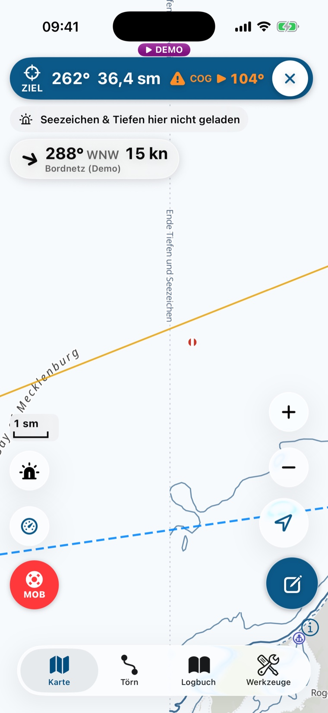
12345
(ab Build 45) Die Westkante des Demo-Reviers vor dem Salzhaff, tags bei 1 sm: Rechts der Linie liegen Tiefen und Seezeichen auf dem Gerät, links nicht.
„Ende Tiefen und Seezeichen“ — die Aufschrift läuft längs der Linie, erst hineingezoomt und nur an langen Kanten.
Die Linie — fein gestrichelt und blass, eine Auskunft im Hintergrund; nachts Amber.
Innen — eine Tonne und die Tiefenlinien vor der Küste.
Außen — Wasser ohne Tiefenlinien und ohne Tonnen; die Basiskarte läuft weiter.
„Seezeichen & Tiefen hier nicht geladen“ — ein Teil des Bildes liegt außerhalb; der Chip sagt es auch ohne Linie.
Online nachladen, wie es in Build 33 lief. Ist Einstellungen → Daten & Datenschutz → Karte online nachladen an, holt die Karte für den Ausschnitt nicht nur die Kacheln, sondern auch Seezeichen, Häfen und Tiefen selbst — in allen Stufen und auch unter Fahrt, sobald Netz da ist und du nicht auf eine Übersicht schaust. Die Ansicht, mit der die Karte im Hafen öffnet, reicht dafür schon; auf dem iPad braucht es eine Zoomstufe mehr. Geladen wird in festen Bereichen von 0,5° × 0,5° — in der westlichen Ostsee rund 32 × 56 km —, jeder Bereich einmal; danach ist er gespeichert und auf See auch ohne Netz da. Ein Bereich kostet gemessen rund 1 MB Download (0,7 bis 1,3 MB an fünf Bereichen zwischen Flensburg und der Mecklenburger Bucht, das meiste davon ist das Tiefenraster) und belegt auf dem Gerät bis rund 400 KB (gemessen an zehn Bereichen um Flensburg und Kiel, je nach Küste und Zahl der Seezeichen). Bei 6 kn kommt rechnerisch alle drei bis fünf Stunden ein neuer Bereich dazu — so lange braucht das Boot durch einen. Solange ein Bereich im Bild lädt, steht oben „Seezeichen & Tiefen werden geladen …“ — außer im Hafen mit dem eigenen Boot im Bild, dort hat „Revier nicht gespeichert“ Vorrang; meist sind Tiefen und Tonnen nach wenigen Sekunden da, drosselt der Seezeichen-Server, kann es zwei Minuten dauern. Seezeichen und Tiefen laden getrennt, ein gedrosselter Seezeichen-Server hält die Tiefen nicht auf. Scheitert ein Abruf, versucht die Karte denselben Bereich bei diesem Dienst frühestens nach zehn Minuten wieder, nach zwei Fehlschlägen in Folge ruht der Dienst zehn Minuten ganz — den Grund nennt die Zeile „Automatisch geladen“ unten. Ist der Schalter aus, lädt die Karte nichts von selbst, und oben steht wie bisher „Nur Offline-Karten — dieser Ausschnitt fehlt“ (ohne gespeichertes Paket „… noch keine gespeichert“). Die Demo lädt nichts nach, ihre Bucht bringt sie mit.
Von Hand Geladenes hat Vorrang. Überlappt ein automatisch geladener Bereich ein Revier, das du gespeichert oder mit „Nur Seezeichen & Tiefen laden“ geholt hast, gelten dort die Tiefenlinien und Lotungen des Reviers: Die Linien des Bereichs enden an dessen Rand, nichts wird doppelt gezeichnet. Seezeichen stehen ohnehin nur einmal auf der Karte.
(ab Build 43)Zwei Reviere im Überlapp. Überlappen sich zwei Reviere, die du geladen hast, gilt dort das feiner gerasterte — bei gleichem Raster das zuletzt geladene. Die Linien und Lotungen des anderen enden an dessen Rand, nichts steht doppelt. In der Revierliste trägt das andere eine graue Zeile „überlappt mit … — dort gilt …“; liegt es ganz im feineren, steht dort „liegt ganz in …“.
Ansteuerungen laden(ab Build 43 frei) — feine Karte (Zoom 14) nur im Umkreis von drei Seemeilen um jeden Zielort im sichtbaren Ausschnitt, alle Ziele in einem Paket. „Fein“ brauchst du dort, wo es eng wird (Fahrwasser, Molenköpfe, Ansteuerungstonnen), nicht auf der Kreuz: gut ein Megabyte je Zielort statt rund 50 MB für dieselbe Zoomstufe über die ganze Fläche. Das Revier selbst lädst du daneben in „Mittel“.
Wie lange das dauert. Ein kleiner Ausschnitt ist in Sekunden da. Ein großes Revier wird in bis zu 36 Bereiche zerlegt, der Knopf zählt mit („Seezeichen 7 von 36“). „Abbrechen“ darunter kostet nichts: Geladene Bereiche bleiben, ein späterer Anlauf holt nur die fehlenden nach. Die Daten kommen von Overpass, einem freien OpenStreetMap-Server, der bei Andrang drosselt — scheitern einzelne Bereiche, steht das in der Revier-Zeile, und „Erneut versuchen“ ergänzt sie.
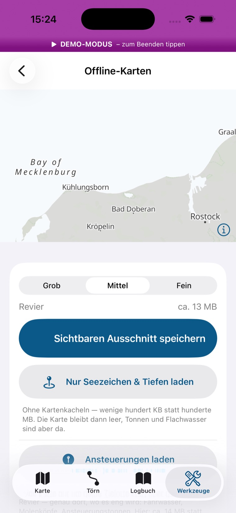
1234
Offline-Karten: Ausschnitt oben, darunter Detailgrad mit Größenschätzung, „Sichtbaren Ausschnitt speichern“ und „Nur Seezeichen & Tiefen laden“; Paketliste und geladene Reviere folgen weiter unten.
Ausschnitt — die Karte so schieben, dass das Revier im Bild ist; das Paket heißt nach dem Ort in der Mitte.
Detailgrad und Größenschätzung — Grob, Mittel oder Fein — in jeder Stufe (ab Build 43); „ca. 13 MB“ steht, bevor du lädst.
Sichtbaren Ausschnitt speichern — Kacheln, Seezeichen und Tiefen kommen zusammen.
Nur Seezeichen & Tiefen laden — wenige hundert KB, in allen Stufen.
Geladene Reviere, Kartenspeicher, Hinweis auf der Karte
Geladene Reviere ist die eigene Liste unter den Paketen: Name, Anzahl Seezeichen und Häfen, Tiefenkonturen, Größe und Stand; „Aktualisieren“ holt den Ausschnitt neu. Seezeichen und Tiefen liegen getrennt von den Kartenkacheln. Löschst du ein Paket, dessen Ausschnitt nicht genau passt, bleiben sie liegen und tragen die Markierung „kein Kartenpaket“ — nach links wischen löscht sie einzeln. Scheitert ein Tiefen-Abruf, steht der Grund rot in der Zeile, samt „Erneut versuchen“, auch nach einem App-Neustart. Ist ein Revier gröber als 200 m gerastert, steht unter den Tiefenkonturen „gröber als 200 m — Linien gestrichelt“: Auf der Karte ist dann jede seiner Tiefenlinien gestrichelt. Unter den Tiefenkonturen stehen außerdem die Güte der Wasserfläche in Prozent und die Quelle (siehe „Güte der Vermessung“ in C3); fehlte der Qualitätsindex beim Laden, sagt es eine orange Zeile.
Was die Karte in Build 33 selbst nachgeladen hat, steht nicht einzeln in der Liste, sondern als eine Zeile „Automatisch geladen“ ganz oben — nur, solange solche Bereiche auf dem Gerät liegen: Zahl der Bereiche, belegter Speicher, jüngster Stand und der Satz, dass die Karte neue Bereiche vorerst nicht selbst lädt. Nach links wischen → „Leeren“ entfernt alle nach einer Rückfrage; danach kommt nichts von selbst wieder — brauchst du die Gegend, speichere das Revier. Wer ein Revier dauerhaft und einzeln verwalten will, lädt es von Hand.
Kartenspeicher zeigt, wie viel Platz Offline-Pakete und nebenbei angesehene Kacheln zusammen belegen — eine gemeinsame Zahl, weil beides in derselben Datei liegt. „Zwischenspeicher leeren“ verwirft nur die angesehenen Kacheln; Pakete, Seezeichen und Tiefen bleiben.
„Revier nicht gespeichert“. Mit Netz steht dieser Hinweis oben auf der Karte, sobald dein Boot im Bild ist und kein Paket den Ausschnitt deckt — ein Tipp führt direkt zum Speichern. Beim bloßen Herumschieben der Karte bleibt er still. Ohne Netz zeigt stattdessen ein Chip „Offline: <Paket>“ oder orange „kein Paket für diesen Ausschnitt“. Der Hinweis soll kommen, solange du noch laden kannst — nicht erst, wenn das Netz weg ist. Er erscheint nur, solange kein Törn läuft: Ein Offline-Paket lädt man im Hafen, nicht bei sechs Knoten auf der Kreuz. Unter Fahrt sagt ein Hinweis „Seezeichen & Tiefen hier nicht geladen“ nur noch, dass die Karte hier keine Tonnen oder Tiefen zeigt — eine leere Seekarte heißt nicht „keine Gefahren“; laden kannst du sie im Hafen. Der Hinweis heißt: Hier ist kein Revier gespeichert — von selbst lädt die Karte Seezeichen und Tiefen vorerst nicht nach (siehe „Online nachladen — vorerst aus“ oben). Hältst du das iPhone quer und ist sehr große Schrift eingestellt, weicht der Hinweis, solange oben das Anker-Banner steht — dessen Knöpfe brauchen dann eine eigene Zeile (siehe B2). Danach steht er wieder, wenn er dann noch gilt; im MOB-Alarm ruht er ohnehin.
Bitte testen
Speichere dein Heimatrevier in „Mittel“, schalte den Flugmodus ein und öffne die Karte: Sind Kacheln, Tonnen und Tiefenlinien vollständig da? Stimmt die Zahl unter „Geladene Reviere“ mit dem überein, was du auf der Karte siehst?
Trage deinen Tiefgang unter Werkzeuge → Boot ein (⋯ → Boot bearbeiten, Abschnitt „Abmessungen“): Ist die betonte Sicherheitskontur die Linie, die du für dein Boot auch selbst wählen würdest?
Vergleiche „Kontrast“ und „Seekarte“ bei Sonne an Deck: Welcher Stil bleibt lesbar — und fehlt dir im Kontrast-Stil eine Information?
Ein Ziel anpeilen, eine Wegpunkt-Folge abfahren und andere Schiffe im Blick behalten — alles auf der Hauptkarte, mit Zahlen, die auf der Kreuz und bei Welle ruhig bleiben.
Go-To: ein Ziel anpeilen
Go-To ist die einfachste Form der Navigation: eine Peilung auf einen Punkt. Du startest es auf drei Wegen:
Langes Drücken auf einen beliebigen Kartenpunkt, dann Go To im Radialmenü.
Der Go To-Knopf in der Punkt-Karte eines Hafens, einer Bahnmarke oder eines Seezeichens. Seezeichen sind antippbar und zeigen Name, Typ, Peilung und Distanz.
Die Zielwahl der nächsten offenen Etappe („Wohin heute?" — ein Tipp wählt das Tagesziel) im Kontext-Feld „Törn": „Als Ziel" heißt navigieren, nicht nur verbuchen — die Kurslinie erscheint auf der Karte, die Plotter-Kacheln BRG/DTW/VMC/TTG laufen mit.
Auf der Karte steht das Go-To als eine blaue Zeile links oben: Peilung, Distanz, Kursfehler und das × zum Beenden — mehr braucht der Blick auf dem Weg zur Tonne nicht, und die Karte bleibt frei. (ab Build 44) Vor der Zahl steht das Wort ZIEL — unter dem Fadenkreuz, bei laufendem Törn über dem Zielnamen —, und der Kursfehler trägt das Kürzel COG: „COG ▶ 12°“ heißt, dein Kurs über Grund liegt 12° links vom Ziel — der Pfeil zeigt zur Seite, auf der das Ziel liegt; VoiceOver sagt es in Worten. Ein Tipp auf die Zeile klappt die volle Kachel auf, noch einer wieder zu: Peilung und Distanz groß, darunter der Kursfehler (COG gegen Peilung als ◀ oder ▶ mit Grad, über 5° orange mit Warndreieck; nachts Amber auf schwarzer Kapsel, siehe C16; (ab Build 36) im dunklen Erscheinungsbild orange auf schwarzer Kapsel, weil Orange dort auf dem hellen Blau kaum zu lesen war), die ETA und die Abweichung von der Ausgangslinie (XTE) — wie weit du seitlich von der ursprünglichen Kurslinie Boot → Ziel liegst. Läuft ein Törn, trägt die Zeile zusätzlich Zielname und Ankunftszeit (B2); reicht die Breite nicht, fällt zuerst ein Kursfehler bis 5° aus der Zeile — in der aufgeklappten Kachel steht er weiter. Liegst du mehr als 5° daneben, kürzt zuerst der Name; gibt es keine Ankunftszeit, weil sich das Boot nicht nähert, bleibt die Warnung immer in der Zeile. Auf der Karte liegt die Kurslinie vom Boot zum Ziel, gestrichelt – durchgezogen ist der COG-Vektor. Das Ziel bleibt aktiv, bis du es mit „ד beendest — auch über einen Neustart der App hinweg. Peilung, Distanz und der COG-Abgleich sind frei.
In einer laufenden Regatta fährt das Go-To die Bahn ab (siehe C5): Beim Startschuss übernimmt sie das Ziel, auch ein eigenes aus dem Vorstart – „Rückgängig“ holt es zurück. Ein Ziel, das du im Rennen selbst setzt, bleibt stehen, bis du es mit × beendest. Endet es — mit × auf der Karte, mit „Beenden“ bei den Routen oder weil eine eigene Route zu Ende ist —, fährt die App sofort wieder die Bahn.
WichtigGo-To ist eine Peilung, kein Routing: Die Kurslinie zum Ziel und jeder Schenkel einer Route laufen geradeaus, auch über Land und Untiefen. Ob ein Schenkel frei ist, prüfst du selbst auf der Seekarte.
ETA: aus der Annäherung, nicht aus der Momentanfahrt
Die ETA rechnet aus der gemittelten Annäherung der letzten Minuten — wie schnell die Restdistanz tatsächlich schrumpft. Die Momentan-VMC taugt dafür nicht: Auf der Kreuz ist die Momentanfahrt Richtung Marke bedeutungslos, und bei Welle sprang eine solche Anzeige zwischen zwanzig Minuten und zwei Stunden. Wer sich vom Ziel entfernt oder stillliegt, sieht „--" statt einer erfundenen Zahl.
Laylines (ab Build 43 frei)
Liegen Winddaten an (NMEA-Netz oder Demo), zeichnet die Karte zusätzlich die Laylines von der Marke: grün die Steuerbord-, rot die Backbord-Layline. Der Winkel kommt aus den Polar-Optima deines Boots; ohne Polardaten gelten 45° und 150°. Ob es ein Aufkreuz- oder ein Vorwind-Schenkel ist, erkennt die App selbst.
Routen planen
Eine Route ist eine Folge von Wegpunkten, die du an Land unter Werkzeuge → Routen anlegst. Am direktesten geht das im Route-Modus der Hauptkarte:
Lange auf die Karte drücken und Route wählen. Ein blaues Band oben sagt, was ein Druck jetzt tut, und hat genau einen Ausgang: Fertig.
Jeder weitere lange Druck hängt einen Wegpunkt an — blaue Linie, nummerierte Pins, im Band ein Zähler und Rückgängig.
Fertig öffnet das Routen-Formular mit den gesetzten Punkten.
Während des Route-Modus ist eine laufende Go-To-Route ausgeblendet. MOB und Ankerwache bleiben in jedem Modus an ihrer Stelle, und kein Modus überlebt einen App-Start: Wer nachts die App öffnet, bekommt die Navigationskarte, nie ein Werkzeug von gestern.
Bestehende Routen bringst du mit Auf der Karte bearbeiten im Formular zurück auf die Karte; Fertig speichert einmal zurück, ein Rückgängig-Balken nimmt es zurück. Wegpunkte kommen auch aus dem Hafenhandbuch, der Wegpunkt-Bibliothek, den Seezeichen oder von deiner eigenen Position. Pro Wegpunkt legst du Name und Ankunftsradius fest (50–500 m); die Reihenfolge änderst du, indem du einen Wegpunkt gedrückt hältst und ziehst, bei einer gespeicherten Route auch über Bearbeiten oben rechts. Die Liste zeigt Peilung und Distanz jedes Schenkels sowie die Gesamtlänge. Planen ist frei.
Route abfahren (ab Build 43 frei)
Route starten macht den ersten Wegpunkt zum Go-To-Ziel. Sobald du im Ankunftsradius bist, springt die Route von selbst weiter — mit Haptik und der Mitteilung „Wegpunkt erreicht". Der erreichte Wegpunkt wird zur Basis der neuen Sollkurslinie, die XTE bezieht sich also immer auf den aktuellen Schenkel. Das Banner zeigt „WP 2/5", den Namen des Wegpunkts und hinter Σ die Restdistanz bis zum Routenende. Ein großer Nächster-Knopf schaltet von Hand weiter, etwa wenn du eine Tonne bewusst auslässt; ein Undo-Balken holt den Wegpunkt zurück. Auf der Karte sind abgefahrene Schenkel grau, kommende in Akzentfarbe, die Wegpunkte nummeriert. Die Plotter-Kacheln BRG, DTW, XTE, VMC, ETA und TTG beziehen sich immer auf den aktiven Wegpunkt.
Im Demo-Modus liegt die Route „Kühlungsborn – Warnemünde" mit vier Wegpunkten bereit.
AIS: andere Schiffe (ab Build 43 frei)
Liefert dein NMEA-Netz AIS-Daten (NMEA 2000 oder NMEA 0183, mehrteilige Sätze werden zusammengesetzt), zeigt die Karte andere Schiffe mit 6-Minuten-Vektor, nah herangezoomt mit Namen. Klasse A ist dunkelblau, Klasse B türkis; nach 3 Minuten ohne neue Position gilt ein Ziel als veraltet (siehe unten), nach 6 Minuten verschwindet es. Die Ebene schaltest du im Ebenen-Menü. Die Länge des Vektors folgt derselben Zeit wie beim eigenen Boot — sechs Minuten, solange du unter Einstellungen → Karte → Kursvektor nichts anderes wählst.
Ab Revier-Zoom steht jedes Ziel wie am Plotter als gefülltes Dreieck mit der Spitze in Fahrtrichtung (Kurs über Grund), die Klasse A etwas größer als die Klasse B; aus der Spitze wächst der Vektor. Ein Kreis statt des Dreiecks heißt: kein aktueller Kurs. Ohne Vektor macht das Schiff keine Fahrt oder sendet keinen Kurs — oder es meldet sich nicht mehr, dann steht es gestrichelt (siehe unten); mit Vektor ist seine letzte Kursmeldung über eine Minute alt — bei Sportbooten unter 2 kn ist das normal, sie senden dann nur alle drei Minuten —, und der Vektor zeigt den zuletzt gemeldeten Kurs. Unterschreitet ein Ziel die Warnschwelle, ist es rot mit einem Ring darum. Nachts sind beide Klassen hellgrau, die Namen Amber auf Schwarz; das Gefahrziel bleibt rot, sein Name steht schwarz auf Rot. Zum Antippen musst du das Dreieck nicht genau treffen — ein Tipp knapp daneben öffnet die Punkt-Karte auch.
Wie weit du hineinzoomst, bestimmt, wie viel ein Ziel zeigt: In der Übersicht ist es ein kleiner Punkt mit seinem Vektor, ab Revier-Zoom das Dreieck, und der Name kommt erst nah dran — vorher stapelten sich in der Übersicht die Schiffsnamen über dem Hafennamen. Ein Ziel unter der Warnschwelle zeigt bei jedem Zoom Symbol und Namen.
Zu jedem Ziel rechnet die App CPA und TCPA gegen das eigene Schiff. Unterschreitet ein Ziel die Warnschwelle — Standard 0,5 sm CPA und 20 min TCPA, einstellbar unter Einstellungen → Karte im Bereich 0,25–2 sm und 10–30 min —, wird es rot, und oben erscheint ein roter Warnknopf: „CPA 0,3 sm" groß, Name und TCPA als Zweitzeile. Der Warnknopf wird nie gekürzt: Teilt er sich die Zeile mit dem Go-To – das geschieht über dem MOB-Banner, solange ein Alarm läuft –, kürzt zuerst der Name des Go-To-Ziels, und passt daneben nicht einmal dessen Peilung, weicht der Go-To-Chip ganz. Reicht die Breite bei sehr großer Schrift für den Warnknopf allein nicht, bricht er in eine weitere Zeile um. Zugleich meldet die App die Gefahr als zeitkritische Mitteilung — je Ziel beim Eintritt, danach höchstens alle 5 Minuten — auch mit dem Handy in der Tasche. Ein Tipp auf ein Ziel öffnet die Punkt-Karte mit Schiffstyp, MMSI, Rufzeichen, Fahrt und Kurs, CPA/TCPA, Länge und Alter der Daten.
Ziel ohne neue Meldung. Kommt von einem Ziel über 3 Minuten keine neue Position, steht es wie am Plotter als „lost target“ an seiner letzten Position, ohne Vektor: ab Revier-Zoom als gestricheltes Symbol ohne Füllung, tags in der Farbe seiner Klasse, nachts in Hellrot — „veraltet“ erkennst du an der Form, nicht an der Farbe; in der Übersicht ist es ein hohler Punkt, ein Ring ohne Füllung. CPA und TCPA rechnet die App aus der alten Position nicht weiter: Der rote Warnknopf verschwindet, und die Punkt-Karte nennt statt „CPA … · TCPA …“ die letzte Meldung. (ab Build 44; vorher als graue Zeile „Letzte Meldung vor 4 min“ weiter unten) Gleich unter dem Namen steht dann halbfett in einer gestrichelten Kapsel, mit Uhr-Symbol, „VERALTET · 4 min“ — noch vor Peilung und Fahrt, die damit als alt zu lesen sind. Darunter, kleiner, „CPA damals 0,3 sm“ — der CPA, der galt, als die letzte Meldung eintraf; lief das Ziel da schon ab, steht dort „entfernte sich damals“. Das Wort erscheint genau dann, wenn das Symbol auf der Karte gestrichelt steht. War das Ziel bei seiner letzten Meldung gefährlich, bleibt es rot mit Ring und Namen, bis es nach 6 Minuten von der Karte geht: Ein Schiff, dessen AIS nahe bei dir abreißt, ist sehr wahrscheinlich noch da.
Für CPA und TCPA nimmt die App den gemessenen eigenen Kurs und die gemessene Fahrt, nicht die von der Dämpfung geglätteten Werte der Anzeige: Nach einer Wende rechnet die Warnung mit dem neuen Kurs statt mit einem, der noch hinterherhinkt. Warnknopf, rote Ziele und Punkt-Karte rechnen mit denselben Werten wie die Mitteilung.
Der Demo-Modus zeigt drei Ziele: eine Fähre, einen Frachter und eine Segelyacht, die konvergiert und die Warnung auslöst. Der Frachter verstummt nach etwa zwei Minuten, und zwar mit Absicht: So siehst du, wie ein still gewordenes Ziel aussieht. Nach etwa drei Minuten steht er als Kreis statt als Dreieck da, der Vektor zeigt weiter seinen letzten Kurs. Nach fünf Minuten ist er veraltet — gestrichelt ohne Füllung und ohne Vektor —, nach acht verschwindet er. Danach stehen nur noch Fähre und Segelyacht auf der Karte. Startest du die Demo neu oder kommst du nach einem kurzen Wechsel in eine andere App zurück, beginnt der Ablauf von vorn.
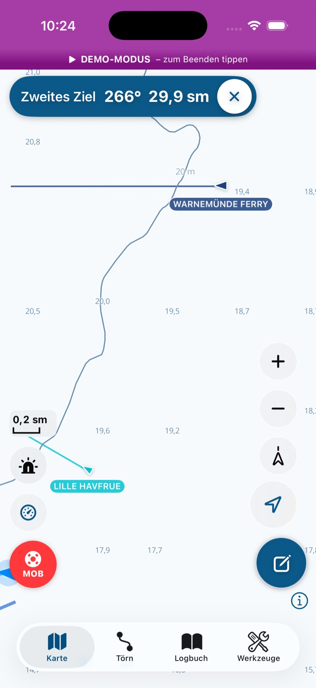
123
Hauptkarte mit eingeschalteter AIS-Ebene, nah herangezoomt: Die Fähre und die Segelyacht stehen als Dreiecke in Fahrtrichtung auf der Karte, der Vektor wächst aus der Spitze, der Name steht darunter.
AIS-Ziel Klasse A — die Fähre in Dunkelblau, das größere Dreieck, Spitze nach Westen, davor der 6-Minuten-Vektor.
AIS-Ziel Klasse B — die Segelyacht in Türkis, das kleinere Dreieck; ein Tipp auf oder knapp neben das Dreieck öffnet die Punkt-Karte mit CPA/TCPA.
Ebenen-Knopf — öffnet das Ebenen-Menü, in dem du die AIS-Ziele ein- und ausschaltest.
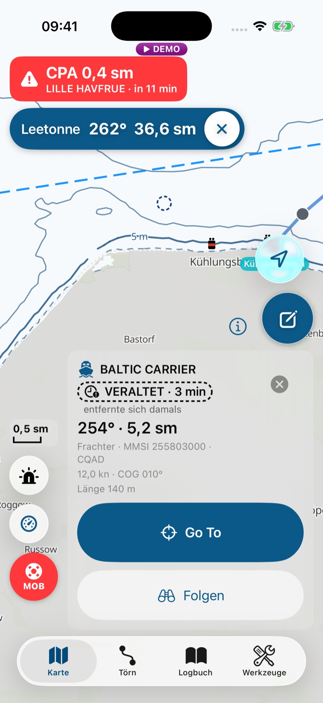
12
Der Demo-Frachter gut fünf Minuten nach dem Start: Seit drei Minuten kommt keine Position mehr.
Ziel ohne neue Meldung — gestrichelter Kreis ohne Füllung an der letzten Position, kein Vektor.
Statuswort — „VERALTET“ mit dem Alter der letzten Meldung, gleich unter dem Namen; darunter, was galt, als sie eintraf: Hier lief der Frachter schon ab, lief er heran, steht dort der CPA von damals. CPA und TCPA rechnet die App daraus nicht weiter. (ab Build 44; vorher als graue Zeile „Letzte Meldung vor … min“)
Bitte testenSetz ein Go-To auf eine Tonne und kreuz dagegen an: Bleibt die ETA ruhig, und zeigt sie „--", sobald du dich entfernst? Fahr in der Demo (jede Demo-Stufe (ab Build 43)) die Route „Kühlungsborn – Warnemünde": Springt die Route im Ankunftsradius weiter, kommt die Mitteilung, und holt der Rückgängig-Balken nach Nächster den Wegpunkt zurück? Wer AIS an Bord hat: Passt die CPA-Warnung zu dem, was dein Plotter zeigt, und erreicht dich die Mitteilung auch mit dem Handy in der Tasche?
Eine Regatta ist ein Törn mit Startschuss: Ab dem Anlegen laufen Vorstart, Countdown, Tracking und — mit angelegter Ziellinie — die Zielerkennung von selbst — du bedienst nur noch, was am Wasser wirklich gebraucht wird.
Regatta anlegen
Eine Regatta ist ein besonderer Törn-Typ mit Startzeit, Countdown und eigener Auswertung. Drei Wege führen hin:
Karte → Ablegen → Regatta … — nur bei Schwerpunkt „Regatta“; sonst legt der grüne Knopf sofort einen Törn an.
Logbuch → Menü (⋯) → Neue Regatta — dasselbe Formular.
Werkzeuge → Kalender — bei einem Regatta-Termin erscheint am Renntag ein „Starten“-Knopf (mit Rückfrage). Er legt die Regatta samt der hinterlegten Bahn-Vorlage an.
Das Formular fragt Name, Startschuss-Zeit, Bahn, Wertung und Notizen ab. Die Bahn-Zeile bietet deine gespeicherten Bahn-Vorlagen an — Marken, Linien und Zeitregeln kommen beim Sichern mit. Liegt für heute ein Kalender-Termin mit Bahn an, ist sie schon vorbelegt. Ebenfalls im Formular: die Dauer der Vorstartphase, wählbar 5, 6, 10 oder 15 Minuten (5 für 5-4-1-Starts).
Sind Mitteilungen für Etmar aus, steht unter der Vorstart-Dauer eine Zeile mit durchgestrichener Glocke: Vorstart und Startschuss melden sich dann nicht auf dem gesperrten Handy. Ein Tipp auf die Zeile öffnet die Mitteilungs-Einstellungen. Der Countdown in der App läuft trotzdem.
Unter der Vorstart-Dauer wählst du die Signale: „Ton + Sprache“, „Nur Ton“ oder „Aus“ — wie die Dauer ein Standard für die nächsten Regatten. Darunter spielt Signale probehören eine gestauchte Folge (Doppelton, „Eine Minute“, drei Ticks, Schuss): einmal an Land hören, ob die Lautstärke reicht. Die Zeile zu ausgeschalteten Mitteilungen sagt dann dazu, dass Ton und Sprache trotzdem spielen, solange die App läuft.
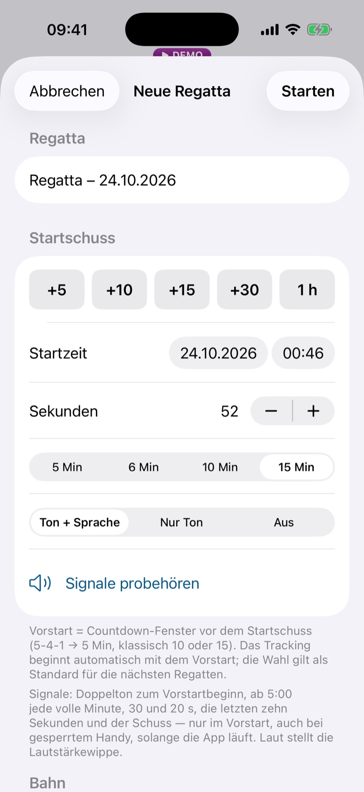
1234
Formular „Neue Regatta“: Startschuss mit Sekundenfeld, Vorstart-Dauer und Bahn-Vorlage.
Startzeit — Datum, Uhrzeit und ein eigenes Sekundenfeld für den Startschuss.
Vorstart-Dauer — 5, 6, 10 oder 15 Minuten; 5 für 5-4-1-Starts.
Bahn — gespeicherte Bahn-Vorlage wählen; Marken, Linien und Zeitregeln kommen mit.
Starten — legt die Regatta an; ab hier läuft alles automatisch.
Sonderfall Jagdstart: Trägt eine Bahn ein Startverfahren, bei dem nicht alle gleichzeitig starten (Känguru-/Jagdstart nach Yardstick, Gruppenstarts), fragt die App direkt nach dem Beitreten zu einer solchen Bahn (etwa einer Bahn aus der Community) nach deiner eigenen Startzeit, solange die Bahn noch kommende Termine hat — sekundengenau, mit eigenem Sekundenfeld unter der Uhrzeit, weil die Segelanweisung sekundengenaues Starten nach Funk- oder GPS-Uhr verlangt. Die Zeit gilt für alle Termine der Bahn; einzelne Renntage änderst du im Kalender. Die mitgelieferte Mittwochsregatta hat keine kommenden Termine mehr (die Termine im September 2026 sind vorbei) — bei ihr fragt die App deshalb nicht.
Vorstart: läuft von selbst
Ab dem Anlegen musst du nichts mehr auslösen; die App übersteht dabei auch einen Neustart:
Mit Beginn der Vorstartphase entsteht automatisch der Vorstart-Eintrag, das GPS-Tracking startet, und eine Mitteilung liegt auf dem Sperrbildschirm. Zusätzlich startet die RAW-Datenaufzeichnung, wenn ein NMEA-Netz verbunden ist. (ab Build 43)
Auch mit dem iPhone in der Tasche: Ab 2 Stunden vor dem Start hält sich die App im Hintergrund bereit, die Timer feuern pünktlich ohne offene App. Ist die Regatta früher angelegt, weckt ein grober Ortswechsel — typischerweise die Fahrt zum Hafen — die App wieder auf, selbst wenn iOS sie beendet hat.
Der Countdown steht groß im Logbuch: letzte Minute rot, nach dem Schuss läuft die Rennzeit grün. Die Phasen: Warten → Vorstart (gelb) → Rennen (grün). Im Rennen zeichnet die App alle 5 s einen Trackpunkt statt alle 30 s, damit Wenden und VMG sauber auswertbar sind.
(ab Build 44) Im Vorstart und Rennen entfällt im Logbuch die Kartenvorschau des Törns — der eigene Track beantwortet dort keine Frage —, die Griffe stehen direkt unter Countdown bzw. Rennzeit. Rechts in der ersten Reihe, neben „Pin pingen“, „Schiff pingen“ und „Sync“ bzw. den Ziel-Pings und „Rückruf“, steht MOB (0,6 s halten) — dieselbe Stelle wie im Törn. Bei den großen Schriften der Bedienungshilfen bleiben zwei Griffe und MOB oben, der dritte steht in voller Breite darunter. Motor, Segel und Trimm stehen in gleicher Höhe. Nachts stehen „Regatta läuft“, die Rennzeit und gepingte Ziel-Enden in Amber statt Grün.
Dieselben Zahlen stehen oben auf der Karte in der Kontextleiste: Countdown, Abstand zur Linie, Time-to-burn und Bias über dem Bild, in dem du dein Boot relativ zur Linie siehst. Ein Tap auf die Leiste öffnet den Regatta-Tab.
Zum Startschuss entsteht der Start-Eintrag exakt auf die Startzeit, mit kräftigem Haptik-Impuls und Mitteilung. Bei offener App legen sich Vorstart-, Eine-Minute- und Startschuss-Mitteilung nicht als Banner über den Countdown und klingen nicht zusätzlich zum Signal — sie landen still in der Mitteilungszentrale. (ab Build 36) Stehen die Signale im Regatta-Formular auf „Aus“ oder hast du sie im Vorstart stummgeschaltet (dort steht dann „Stumm“), bleibt die offene App ohne Ton, vibriert aber weiter an den festen Marken (Vorstartbeginn, 1:00, 0:30, 0:10); zum Schuss kommt der kräftige Haptik-Impuls des Start-Eintrags. Unter der Kopfzeile der Vorstart-Karte steht dann „Signale aus — vibriert bei 1:00, 0:30, 0:10“.
Vorstart-Signale. Im Vorstart meldet sich die App hörbar, damit der Blick in den letzten Minuten auf Linie und Startschiff bleibt: Doppelton und „Vorstart“ zum Beginn, ab 5:00 jede volle Minute ein Ton mit Ansage („Vier Minuten“), bei 1:00 Doppelton und „Eine Minute“, bei 30 und 20 Sekunden ein hoher Ton, ab zehn jede Sekunde ein Ton und zum Schuss ein langer. Über 5:00 bleibt es still — gezählt wird ab dem Ankündigungssignal, nicht ab dem Beginn des Vorstarts der App. Bei offener App vibriert das iPhone bei Vorstartbeginn, 1:00, 0:30 und 0:10 — (ab Build 36) auch, wenn die Signale auf „Aus“ oder „Stumm“ stehen. Rechts oben in der Vorstart-Karte im Logbuch schaltet Ton die Signale für diese Regatta stumm (dann steht dort „Stumm“; (ab Build 36) nur Ton und Ansage, die Vibration bleibt), mit Rückgängig im Balken; Sync und ±5 Min lassen das stehen, nach einem App-Neustart ist wieder Ton. Die Signale spielen auch bei stummgeschaltetem Klingelton, die Lautstärkewippe regelt sie. Und sie kommen aus der Tasche: bei gesperrtem Bildschirm und mit der App im Hintergrund, solange sie läuft — im Vorstart hält sie das Hintergrund-GPS wach (Standortberechtigung „Immer“); Musik wird dabei leiser gestellt, nicht angehalten. Hat iOS die App beendet, bleibt die Mitteilung eine Minute vor dem Schuss. Grenzen: nur im Vorstart — nie beim Warten, nicht nach einem Rückruf vor der Ankündigung; ein Anruf unterbricht sie, verpasste Marken holt sie nicht nach.
Am Handgelenk. Auf der Apple Watch zeigt Etmar im Vorstart den Countdown groß statt Fahrt und Kurs; im Rennen bleibt die Fahrt groß, und die Rennzeit läuft oben in der Kopfzeile mit. Bei 5:00, 4:00, 1:00, 0:30 und zum Schuss tippt die Uhr ans Handgelenk — aber nur, solange die Uhr-App offen ist. Countdown und Tipps rechnet die Uhr aus der Startzeit selbst, sie laufen also weiter, wenn die Verbindung zum iPhone abreißt; die Kopfzeile sagt dann „Kein iPhone“, und einen am iPhone verschobenen Start sieht die Uhr erst wieder mit Verbindung. Im Vorstart steht an der Stelle von „Motor an“ der Knopf Sync: beim Signal einmal tippen, der Start rastet wie am iPhone auf die volle Minute, gerechnet ab dem Tippen. Kommt der Druck erst nach zehn Sekunden beim iPhone an, verfällt er, statt den Start um die Verspätung zu verschieben. Nach einem Rückruf steht auf der Uhr „RÜCKRUF“, und Sync ist gedämpft, bis du am iPhone „Ankündigung“ tippst.
Zum Schuss wird aus „Sync“ nicht sofort „Motor an“: Zehn Sekunden lang steht an derselben Stelle „Rennen“, gedämpft, erst danach der Motor-Knopf. Ein Sync-Druck, der eine Sekunde zu spät kommt, schreibt so keinen Motor-Eintrag ins Rennen.
Rückgängig am Handgelenk: Nach „Sync“ lässt sich der Sync sechs Sekunden lang an der Uhr zurücknehmen; bis Build 41 mit einem Tipp auf „Rückgängig“. An der Stelle von „Log“ und „Sync“ steht dann ein Sync-Balken über die ganze Breite, darunter klein „Halten: Rückgängig“. Ein Tipp ist ein weiterer Sync — wer nicht sicher ist, ob der erste ankam, und noch einmal tippt, hebt ihn nicht auf; ein zweiter Treffer in der ersten halben Sekunde zählt als Nachprall nicht. Erst eine halbe Sekunde Halten nimmt den letzten Sync zurück, mit eigenem Tippen am Handgelenk und einem Füllbalken wie bei MOB — nach einem zweiten Tipp also diesen, nicht den ersten. Wer länger drückt als ein Tipp und vor dem Ende loslässt, spürt die Fehl-Haptik, und es geschieht nichts. Überholt das Rückgängig unterwegs seinen Sync, verwirft das iPhone den Sync, wenn er ankommt; die Startzeit bleibt. Hat inzwischen ein anderer Griff die Startzeit verstellt — Sync oder ±5 Min am iPhone —, passiert nichts. Am iPhone erscheint für den Uhr-Sync kein Balken, und ein dort noch stehender Rückgängig-Balken geht weg: Das Rückgängig gehört immer dem letzten Griff.
WichtigDie Hintergrund-Bereitschaft setzt die Standortberechtigung „Immer“ voraus — vor dem ersten Rennen in den iOS-Einstellungen prüfen.
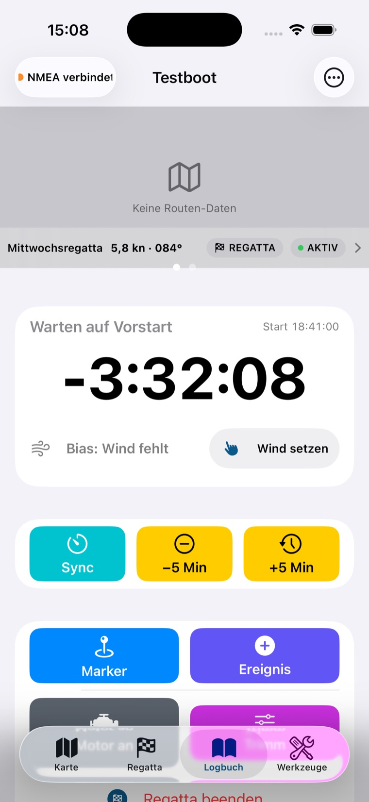
12345
Logbuch vor dem Start: Countdown bis zum Vorstart, Bias-Zeile, Sync und Startverschiebung, darunter die beiden Renn-Knöpfe.
Countdown — läuft groß, letzte Minute rot; nach dem Schuss grüne Rennzeit.
Bias / Wind setzen — öffnet die Windrose; ohne gesetzten Wind steht „Bias: Wind fehlt“. Steht der Wind fast in der Linie, nennt die App kein bevorzugtes Ende mehr, sondern „Kein Luv-Start“ — dort gibt es keinen Endenvorteil zu holen. (ab Build 43)
Sync — beim Signal einmal tippen, der Startschuss wird auf die nächste volle Minute gerundet.
−5 Min / +5 Min — Start verschieben: AP-Verschiebung und Rücknahme in vollen Fünf-Minuten-Schritten.
Marker / Ereignis — die beiden Renn-Knöpfe: GPS-Punkt setzen bzw. volles Formular.
Sync und Startverschiebung
Sync: Beim Signal des Wettfahrtleiters einmal tippen — der Startschuss wird auf die nächste volle Minute gerundet, der Countdown stimmt danach auf die Sekunde. Der Knopf sitzt dort, wo er gebraucht wird: im Vorstart-Block des Logbuchs neben den Pin-/Schiff-Pings, auf der Karte in der Vorstart-Leiste rechts neben den Ping-Knöpfen, den ganzen Vorstart an derselben Stelle.
Startverschiebung (AP): „+5 Min“ verschiebt den Schuss um volle fünf Minuten; Timer, Countdown und Mitteilungen werden neu geplant. Mehrfach tippen addiert, „−5 Min“ nimmt zurück. Kein Datumswähler auf See. ±5 Min liegt eingeklappt hinter „Start verschieben“ im Logbuch — Seltenes bleibt weg von der Karte.
Rückgängig: Sync und ±5 Min verstellen die Startzeit sofort, ohne Rückfrage. Ein Fehltipp geht sechs Sekunden lang im Balken unten mit „Rückgängig“ zurück (Sync auch auf der Karte); Startzeit, Countdown und Signale stehen danach wieder wie vorher. „−5 Min“ ist gesperrt, sobald weniger als 5:10 bleiben — sonst fiele der Schuss, solange der Balken noch steht.
−5 Min vor dem Vorstart: Solange die Regatta noch „Warten auf Vorstart“ zeigt, verschiebt „−5 Min“ den Schuss nie so, dass der Vorstart sofort oder in den nächsten zehn Sekunden begänne. Statt zu springen sagt der Balken dann „−5 Min würde den Vorstart beginnen — beim Signal „Sync“ tippen“; geändert ist nichts. Ein Rückgängig könnte das nicht zurücknehmen: Mit dem Vorstart beginnen Aufzeichnung und Vorstart-Eintrag. Klappst du im Vorstart „Start verschieben“ auf, rückt die Zeile mit ±5 Min nach oben, damit der Rückgängig-Balken nach dem ersten Tipp sie nicht verdeckt; klappst du sie wieder zu, steht die Liste wie vorher, mit Pin, Schiff und Sync im Bild. Jeder Vorstart beginnt zugeklappt, auch wenn die Zeile in der Wettfahrt davor offen war. Regatta mit Vorstart 15 Min und Start in 30 Minuten anlegen, dreimal „−5 Min“: Verschieben die ersten beiden, und sagt der dritte den Hinweis, ohne dass der Vorstart beginnt?
Rückruf nach dem Schuss: Nach einem allgemeinen Rückruf (Erster Hilfsstander) oder einem Abbruch (Flagge N) steht in den ersten zehn Minuten im Logbuch neben den Ziel-Pings der Knopf „Rückruf“ — beim Rückrufsignal tippen. Die Regatta ist wieder im Vorstart, du musst sie nicht beenden und neu anlegen. Einen Countdown gibt es noch nicht: Die Ankündigung kommt erst eine Minute nach dem Niederholen der Flagge, und wie lange sie steht, weiß nur die Wettfahrtleitung. Die Statuskarte sagt deshalb „RÜCKRUF — Start folgt“, Kartenleiste, Countdown-Kachel und die Uhr-App zeigen „RÜCKRUF“, der Sperrbildschirm „Rückruf · Start folgt“; Time-to-burn entfällt, und es fällt kein Schuss. Beim Ankündigungssignal tippst du „Ankündigung“ — der Knopf steht im Logbuch dort, wo sonst Sync steht. Der Start liegt dann genau fünf Minuten voraus, und Countdown, Sync, ±5 Min, Schuss und Startschuss-Mitteilung laufen wie im ersten Vorstart. Sync in der Kartenleiste verweist bis dahin auf „Ankündigung“. Pings, Handwind, Bahn und Aufzeichnung bleiben, der alte Start steht als gewöhnlicher Eintrag „Start (Rückruf)“ im Logbuch. Statt einer Rückfrage kommt der Balken mit „Rückgängig“ — nach „Rückruf“ 30 Sekunden lang, denn danach führt kein Weg zurück ins Rennen; nach „Ankündigung“ 6 Sekunden. Den Wartezustand kennt nur das Gerät, auf dem du „Rückruf“ tippst: Läuft Etmar währenddessen auf einem iPad mit derselben iCloud, zählt es dort auf die früheste mögliche Startzeit und setzt dort einen Start.
Startlinie, Bias, Time-to-burn
Linie pingen: Im Vorstart am Pin-Ende und am Startschiff vorbeifahren und „Pin pingen“ bzw. „Schiff pingen“ tippen — die Startlinie wird aus deiner GPS-Position gesetzt. Erneutes Pingen überschreibt einfach, ein Fehltouch ist folgenlos. Ein Ping ohne GPS-Fix meldet sich; die Ping-Häkchen überleben einen App-Neustart.
Distanz zur Linie & Time-to-burn: Sobald Pin und Startschiff gepingt sind, zeigt der Vorstart-Block den Lot-Abstand zur Startlinie und Time-to-burn — Countdown minus die Zeit bis zur Linie bei aktueller Annäherung. Rot heißt: zu früh. Beides basiert auf GPS und ist frei.
(ab Build 43)Linien-Bias: Steht die Linie (gepingt oder aus der Bahn), zeigt der Vorstart-Block, welches Ende in Luv liegt — „Pin +7° · 12 m“ oder „Schiff +7° · 12 m“. Der Meterwert ist der Luv-Vorteil (Linienlänge × sin Bias); unter 3° steht „Linie neutral“. Die Windrichtung setzt du über „Wind setzen“: eine drehbare Windrose, die du mit dem Daumen drehst; sie rastet alle 5° mit Haptik, dazu ±5°-Knöpfe und „In den Wind schießen — Kurs übernehmen“, das deinen Steuerkurs (HDG, sonst COG) zur Windrichtung macht. Die Richtung bleibt gespeichert, gilt aber nur eine Stunde — siehe unten. Mit Windgeber am NMEA-Netz oder im Demo-Modus kommt sie automatisch als TWD; der Knopf zeigt die Quelle. Eine Stufen-Marke trägt die Zeile nicht — im Vorstart zählt der Countdown.
Ein Handwind gilt eine Stunde. So lange steht „von Hand“ dabei, ab zehn Minuten mit dem Alter („von Hand · vor 25 min“) — in der Bias-Zeile des Logbuchs unter der Windrichtung, in der Leiste auf der Karte unter dem Bias, in der Segelwahl hinter der Windrichtung, sobald ein Kurs anliegt. Danach rechnet die App nicht mehr mit ihm: kein Bias, keine Kursseite, kein Windwinkel für die Segelwahl und kein Wind im Start-Eintrag beim Schuss. Bias-Zeile und Segelwahl sagen stattdessen „Wind von 18:05 — veraltet“ (von einem anderen Tag mit Datum), und ein Tipp darauf öffnet die Windrose; die Leiste auf der Karte sagt an der Stelle des Bias „Wind veraltet“ und darunter die Uhrzeit, solange das neben Countdown und Abstand Platz hat. Ein Wind von gestern ist auf einer Bahn, die heute anders liegt, schlechter als keiner. „Handwind löschen“ in der Windrose entfernt ihn sofort; das Ende der Demo räumt ihn ebenfalls ab. Ist der Wind veraltet, startet die Windrose leer (oder mit dem Wind vom Bus) und nennt unter der Rose, was du hattest – „Zuletzt 215° von 18:05 – veraltet, neu peilen“. „Fertig“ bestätigt so nur einen neu gepeilten Wind, nicht den alten.
Ziellinie pingen: „Ziel Stb pingen“ und „Ziel Bb pingen“ gibt es im Rennen, ab dem Schuss — Steuerbord- und Backbord-Ende aus Sicht der Zieldurchfahrt. Sind beide Enden gesetzt, erkennt die App die Zieldurchfahrt automatisch. Im Bahn-Editor gibt es je Ende außerdem „Aktuelle Position übernehmen“ — kein Koordinatentippen.
Im Rennen
Im Rennen gibt es bewusst nur zwei Knöpfe. Marker setzt mit einem Tap einen GPS-markierten Punkt für Momente, die du dir später ansehen willst: schlechter Start, Dreher, Beinahe-Havarie. Ereignis öffnet das volle Formular. Wenden, Halsen und Markenrundungen musst du nicht mitloggen — die Auswertung erkennt sie nachträglich aus dem Track. Auf der Karte bleibt in dieser Phase nur, was am Bild gebraucht wird: Pingen, solange die Linie unvollständig ist, und Sync.
(ab Build 43)Live-Auswertung: Der Regatta-Tab zeigt während des Rennens genau drei Werte — VMG gegen die Polare als Delta („+0,3 kn“ / „−0,4 kn“), den mittleren Wendewinkel der letzten Schläge (aus den Bugwechseln im Track; Patzer-Wenden und Halsen fallen raus) und den Abstand zur Layline der gesetzten Marke. Mehr bewusst nicht: Wendenzähler, Zeit auf dem falschen Bug und Distanzsummen brauchen einen Vergleich über die Zeit und gehören in die Auswertung nach dem Ziel — wer auf der Kreuz eine Tabelle liest, segelt nicht. Alle drei Werte hängen an wahrem Wind und Fahrt durchs Wasser, also am NMEA-Netz; die Layline zusätzlich an einer gesetzten Marke. Ohne Marke wäre sie geraten — und eine geratene Zahl, nach der gesteuert wird, ist schlechter als keine. Die Marke ist ein selbst gesetztes Go-To-Ziel, sonst die nächste Tonne der Bahn. Erwartet die Bahn ein Tor oder die Ziellinie oder liegt die Tonne verfehlt achteraus, steht „--“ statt einer Zahl.
Zieldurchfahrt und Gastboot
Beenden geht manuell über „Regatta beenden“ (sofort, ohne Rückfrage; sechs Sekunden lang holt „Rückgängig“ die Regatta zurück) — oder automatisch: Ist in der Bahn eine Ziellinie oder ein Zielbereich angelegt, erkennt die App die Querung der Linie. Dann entsteht der Ziel-Eintrag, der Countdown stoppt, und die Mitteilung „Zieldurchfahrt!“ erscheint. Die Aufzeichnung stoppt dabei nur auf Bahnen ohne mögliche Verlängerung; kennt die Bahn eine (Zeitregel oder markierter Zusatzschenkel), läuft sie im Törn-Takt weiter, bis du im Hafen bist – das Ziel beendet das Rennen, nicht den Törn. Dafür bekommt jede neue Regatta beim Anlegen ihren Ablegeort als Zielort (300 m Radius): Die Rückkehr dorthin beendet die Aufzeichnung, sonst zwei Stunden Stillstand. In der technischen Ansicht der Törn-Karte ist dieser Heimweg dünner und blasser gezeichnet, Legende „nach dem Ziel“ – die Rennbahn bleibt lesbar, die Meilen zählen weiter. Bei Abbruch oder Aufgabe endet das Wertungsfenster an der letzten gewerteten Markendurchfahrt, nicht am Steg. In den ersten 60 Sekunden nach dem Start gilt eine Karenz, weil Start- und Ziellinie oft nah beieinander liegen. Als Sicherheitsnetz fragt die App nach zwei Stunden Stillstand per Mitteilung, ob das Rennen vorbei ist – und ist das Ziel schon gewertet, während die Aufzeichnung noch läuft, fragt sie nicht, sondern beendet sie: Anleger-Eintrag zum Zeitpunkt des Stillstands, Regatta abgeschlossen, Mitteilung „Aufzeichnung beendet“; Rückgängig im Törn-Detail über „Wieder öffnen“. Der Knopf „Angekommen?“ im Logbuch steht jetzt auch bei Regatten.
Zu früh im Ziel? Hat die Automatik an einer Linie ausgelöst, die noch einmal gequert wird, öffnest du die Regatta im Törn-Detail mit „Wieder öffnen“: Countdown, Bahn auf der Karte und Aufzeichnung kommen zurück. Das falsche Ziel bleibt als gewöhnlicher Eintrag „Ziel (verworfen)“ im Logbuch, bis du es löschst – mit Zeit, Position und allem, was du dort notiert hast. Die nächste Zieldurchfahrt zählt wieder; 6 s Rückgängig wie beim Beenden.
Die Bahn auf der Karte. Solange die Regatta läuft, liegt sie ohne Zutun auf der Hauptkarte – du musst sie nicht einblenden und nicht erst den Törn öffnen. Die nächste Tonne ist größer, trägt einen Ring und ihren Namen; die übrigen Marken sind gedämpft, aber voll deckend. Bewusst gedämpft statt durchsichtig: Auf nassem Glas in der Sonne verschwindet eine halbtransparente Marke, statt dezent zu sein – Größe und Form überstehen Sonne, Nässe und Rauszoomen. Nach der Zieldurchfahrt ist die Bahn wieder weg.
Die Leiste im Rennen. Nach dem Startschuss zeigt die Leiste oben auf der Karte, welche Marke als nächste dran ist: Name, die Seite, an der sie zu lassen ist (Bb oder Stb als Wort und Farbe, „durch“ bei einem Tor), groß die Peilung, dann die Distanz und klein die Rennzeit. Nach jeder Rundung schaltet sie weiter. Hat die App eine Rundung nicht erkannt, tippst du rechts auf Nächster – die angezeigte Marke gilt als erledigt, „Rückgängig“ im Balken unten nimmt es zurück. Ruhiger geht es über die Karte: Tonne antippen, Ab hier weiter. Liegt eine Marke schon achteraus, ohne gerundet zu sein, steht ein Warnzeichen vor dem Namen; von selbst übersprungen wird sie nie. Steht keine Seite da, lässt sie sich aus der Bahn nicht ablesen – dann in der Bahnmarke von Hand wählen. Ohne Bahn bleibt die Leiste bei der Rennzeit. Solange sie das Ziel des Go-To trägt, steht keine zweite Go-To-Zeile darunter. (ab Build 44) Über dem Markennamen steht das Wort BAHN; fährst du ein eigenes Ziel, steht es darunter als schmale Zeile mit dem Wort ZIEL und ohne blaue Fläche – gesteuert wird nach der Leiste. Wird es eng — hochkant auf dem iPhone, mit Seiten-Kapsel —, fällt zuerst die Rennzeit weg, dann kürzt der Name; die Distanz zur Marke bleibt stehen.
(ab Build 44)Nächste Marke im Logbuch, Bahn im Regatta-Tab. Dieselbe Marke steht im Rennen auch im Logbuch, unter der Rennzeit: Name und Seite („Luvtonne · Bb“), darunter groß Peilung und Distanz von deiner Position — dieselbe Rechnung wie in der Leiste, Logbuch und Karte nennen für eine Tonne nie zwei Zahlen. Ohne GPS-Fix steht „—“, ein alter Fix wird gedimmt und durchgestrichen, eine achteraus liegende, nicht genommene Marke trägt das Warndreieck; ohne Bahn steht dort „Keine Bahn hinterlegt“. Der Regatta-Tab zeigt die Bahn als Liste, eine Zeile je Durchfahrt („2 · Luvtonne · Bb“, auf Runden „Luvtonne 2.“): im Rennen die nächste fett und mit „nächste“, die erledigten leise mit Häkchen. Höchstens zehn Zeilen — liegt die nächste weiter hinten, rückt das Fenster mit, „+n weitere“ öffnet die Bahn. Vor dem Schuss steht dieselbe Liste ganz oben, ohne Hervorhebung, zum Lernen der Bahn. Ohne Bahn sagt sie „Keine Bahn hinterlegt — in Regatta-Detail anlegen“.
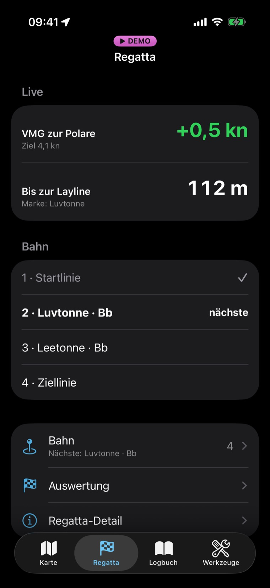
1234
Regatta-Tab im Demo-Rennen, eine knappe Minute nach dem Schuss. Alle Zahlen kommen aus den simulierten Daten der Demo.
Live — hier Wendewinkel (nach der ersten Wende) und Abstand zur Layline, je nach Lage auch VMG zur Polare (braucht Wind vom Bordnetz).
Erledigt — die Startlinie, leise mit Häkchen.
Nächste — die Luvtonne an Backbord, fett und mit dem Wort „nächste“.
Bahn — öffnet den Editor an Bord; im Rennen nennt die Zeile die nächste Marke.
Das Go-To folgt der Bahn. Nach dem Startschuss setzt die App den ersten Wegpunkt, nach jeder Rundung den nächsten, am Ende die Ziellinie – dort auf den Punkt, der dir am nächsten liegt, nicht auf die Mitte. Im Vorstart bleibt es aus: Die Startlinie ist eine Linie, kein Punkt; dafür gibt es den Linien-Bias. Setzt du im Rennen selbst ein Ziel, wird es nicht überschrieben – die App fragt an jeder Rundung neu, ob sie übernehmen soll (mit einem Knopf mit Zielflagge und Markennamen in der Go-To-Zeile, neben dem ×). Ein Ziel, das beim Schuss noch aus dem Vorstart steht, übernimmt die Bahn – „Rückgängig“ holt es zurück. Beendest du im Rennen ein eigenes Ziel mit dem X, fährt die App sofort wieder die Bahn. Das gilt auch für „Beenden“ bei den Routen und für eine eigene Route, die zu Ende ist; „Rückgängig“ nach der Übernahme beim Schuss steht auch im Logbuch, wenn du dort bist. Abschalten lässt sich das unter Einstellungen → Regatta. Nach dem Ziel räumt sie ihr eigenes Go-To ab, ein selbst gesetztes bleibt. Tore werden noch nicht einzeln gestempelt; am Leetor zeigt das Go-To auf die Marke dahinter. Eine Marke mit „Nur passieren“ gilt als erledigt, sobald sie querab lag, eine knapp verfehlte Tonne, sobald sie ein paar hundert Meter hinter dir liegt.
Die Bahn muss gefahren sein. Auf vielen Bahnen ist die Ziellinie dieselbe Linie wie der Start, und im Vorstart fährt man sie mehrfach in beide Richtungen ab – die 60 Sekunden Karenz allein reichen dagegen nicht. Deshalb zählt eine Zieldurchfahrt erst, wenn das Boot seit dem Startschuss einmal näher an der ersten Bahnmarke war als an der Startlinie. Gemessen wird an der ersten Marke der Bahn, nicht an irgendeiner: Sonst gäbe eine Leetonne dicht über der Linie das Ziel schon im Startgebiet frei, und auf einer Up-and-down-Bahn mit gemeinsamer Start- und Ziellinie endete das Rennen kurz nach dem Schuss. Diese Bedingung kommt aus deiner Bahn, nicht aus einer Einstellung: Eine große Bahn hat große Abstände, eine kleine kleine. Sie braucht auch keine erkannte Rundung, sondern nur einen einzigen Trackpunkt auf dem Weg zur Marke – bei lückenhafter Aufzeichnung fehlen sonst gerade die Punkte an der Tonne.
Hat die Bahn gar keine Bahnmarken – etwa weil die Regatta versehentlich ohne Bahn gestartet wurde –, gibt es nichts zu vergleichen. Dann zählt das Ziel, sobald das Boot seit dem Startschuss einmal weit genug von der Ziellinie weg war; den Abstand stellst du unter Werkzeuge → Einstellungen → Regatta ein (100 bis 2000 m, Standard 1000 m). „Regatta beenden“ geht in jedem Fall.
Woanders mitgesegelt? Über Törn bearbeiten → Boot ordnest du eine Regatta (oder jeden Törn) nachträglich einem anderen deiner Boote zu — oder markierst sie als „Auf fremdem Boot mitgesegelt“ mit dem Namen des Gastboots. Solche Törns bleiben im Logbuch (blaues Badge mit dem Bootsnamen), zählen aber nicht in die Meilen- und Motorstatistik deines eigenen Boots; in der Statistik lassen sie sich per Schalter zuschalten. In der Demo steht dafür der Kalendertermin „Clubregatta — Mitsegeln“ auf dem Gastboot „Freya“.
Im Demo-Modus
Den Vorstart probierst du ohne Boot und ohne Regatta aus: Bei laufender Demo unter Werkzeuge → Einstellungen → Stufe & Demo die Zeile „Regatta-Demo“ auf „Vorstart“ stellen. Die Demo startet neu; danach ist das Demo-Boot „Nordwind“ gewählt, die Startlinie liegt 120 m in Luv, beide Enden sind gepingt, und der Schuss fällt in vier Minuten. Das Boot pendelt um die Linie — mal darunter mit Abstand und Time-to-burn, mal darüber mit dem roten „Über der Linie“. Die Karte öffnet mit Linie und Boot im Bild. Nach dem Schuss bleibt das Boot an der Linie. Das Rennen mit Kreuz, Tonnenrundung und Live-Auswertung zeigt „Rennen läuft“, die zweite Wahl derselben Zeile.
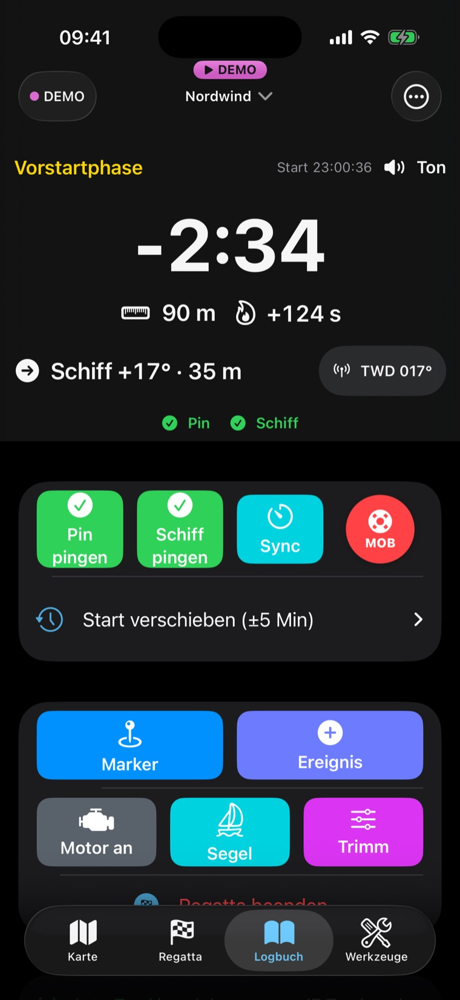
12345
Regatta-Demo „Vorstart“ im Logbuch: knapp vier Minuten bis zum Schuss, das Demo-Boot unter der Linie. Alle Zahlen kommen aus den simulierten Daten der Demo.
Countdown — bis zum Schuss; die letzte Minute rot.
Abstand und Time-to-burn — Lot-Abstand zur Linie und die Zeit, die bei der jetzigen Annäherung übrig bleibt.
Linien-Bias — hier „Linie neutral“: kein Ende liegt in Luv, sonst etwa „Schiff +17° · 35 m“; rechts die Windrichtung, in der Demo vom simulierten Windgeber. (ab Build 43)
Pin und Schiff — beide Enden gepingt, sonst fehlen Abstand und Time-to-burn.
MOB — rechts in der ersten Reihe, 0,6 s halten; die Kartenvorschau des Törns entfällt im Vorstart, die Griffe stehen direkt unter dem Countdown. (ab Build 44)
Bitte testen
Lege eine Regatta mit Startschuss in 20 Minuten an, sperre das iPhone und steck es weg: Kommen Vorstart- und Start-Mitteilung pünktlich, ohne dass du die App öffnest?
Tippe „Sync“ beim Signal: Stimmt der Countdown danach auf die Sekunde mit der Uhr des Wettfahrtleiters?
Hör dir im Vorstart die Signale an, Telefon in der Halterung und App vorn: Kommen Ton und Ansage pünktlich zur Uhr des Wettfahrtleiters, und sind sie gegen Wind und Wasser laut genug? Und mit gesperrtem Telefon in der Tasche, schon vor dem Vorstartbeginn weggesteckt: Kommen Ton und Ansage auch dort an — der Doppelton zum Vorstartbeginn eingeschlossen —, und läuft deine Musik danach wieder laut weiter?
Mit Apple Watch, Uhr-App im Vorstart offen: Tippt sie bei 5:00, 4:00, 1:00, 0:30 und zum Schuss? Springt der Countdown nach „Sync“ am Handgelenk auf die volle Minute — auf der Uhr und im Logbuch?
Mit Apple Watch: Steht nach „Sync“ sechs Sekunden lang „Rückgängig“, und springt der Countdown nach einem Tipp darauf zurück — auf der Uhr und im Logbuch? Und nimmt ein schneller Doppeltipp auf „Sync“ nichts zurück?
Pinge beide Ziel-Enden: Erkennt die App die Zieldurchfahrt, und stoppen Tracking und Countdown von selbst?
C6Regatta-Bahn Schritt für Schritt: Mittwochsregatta NSV
Von der mitgelieferten Vereinsbahn bis zum laufenden Countdown — der komplette Weg am Beispiel der Mittwochsregatta des Neustädter Segler-Vereins: beitreten, Bahn im Editor verstehen, am Renntag starten.
Eine Bahn ist in Etmar die Regattastrecke als Datensatz: Startlinie und Ziellinie aus je zwei Punkten, Bahnmarken mit Erkennungsradius und Rundungsseite, bei Bedarf Tore, Zonen, Info-Punkte und die Zeitregeln der Ausschreibung (Verkürzung, Verlängerung, Zeitlimit je Tonne). Auf der Karte: Startlinie grün, Ziellinie dunkelgrau, Marken gelb, Bahnfolge gestrichelt. Ist die Ziellinie dieselbe Linie wie der Start – beide Enden höchstens 30 m auseinander, wie auf vielen Up-and-down-Bahnen –, steht dort ein Label „Start / Ziel“ statt zweier übereinander. Kreuzen sich zwei Linien oder liegen ihre Mitten dicht beieinander, bleiben es zwei Labels, das des Ziels eine Zeile tiefer.
Es gibt sie in zwei Ausprägungen mit derselben Bedienung: die Bahn-Vorlage, die du an Land unter Werkzeuge → Bahnen & Wegpunkte pflegst und die jede Woche gilt, und das Bahnprofil eines Törns, das beim Starten aus der Vorlage kopiert wird und nur für dieses Rennen gilt. Alle Zeiten rechnet die App aus dem Track — eine Bahn lässt sich deshalb auch nach dem Rennen anlegen oder korrigieren.
Der schnellste Einstieg ist eine Bahn aus der Community: von anderen Seglern eingeschickt, mit dem App-Update mitgeliefert — mit Veranstalter, Revier, Terminen und Hinweisen zur Bahn. „Beitreten“ legt eine eigene Kopie an und trägt die Termine als Serie in den Kalender. Keine Tonne musst du selbst setzen.
Teil 1: Bahn holen
Werkzeuge → Bahnen & Wegpunkte öffnet die Bahn-Bibliothek. Sie liegt unter „Vorbereiten“ neben dem Kalender: Bahnen entstehen hier, die Termine dazu dort.
12
Werkzeuge: Die Bahn-Bibliothek steht unter „Vorbereiten“ immer neben dem Kalender.
Bahnen & Wegpunkte — Bahn-Vorlagen, Wegpunkt-Bibliothek und die Bahnen aus der Community.
Kalender — hier landen die Termine der Bahn; am Renntag startest du von dort (Teil 3).
Oben schaltet ein Segment zwischen „Bahnen“ und „Wegpunkten“. Ohne eigene Bahn steht ein Leerzustand, darunter „Bahnen aus der Community“. Die Karte „Mittwochsregatta NSV“ nennt Veranstalter und Revier, den nächsten Termin (oder, wenn die Saison durch ist, dass die nächsten mit einem Update kommen), die Zahl der Bahnmarken und die Fassung. Der Hinweis „Känguru-Start (Jagdstart)“ warnt vor, dass der Termin nur der erste Start ist. Darunter steht die Ausschreibung auf drei Zeilen, gefolgt von „Mehr“ — so bleibt „Beitreten“ nah, statt unter einer Textwand zu verschwinden.
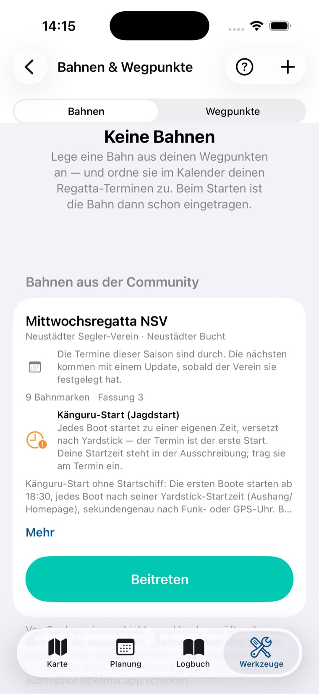
123456
Noch keine eigene Bahn — aber die Mittwochsregatta NSV wartet in der Community-Sektion.
Segment Bahnen / Wegpunkte — links die Bahnen, rechts die Wegpunkt-Bibliothek.
Termine, Marken, Fassung — im Bild ist die Saison durch, die Karte sagt, dass die nächsten Termine mit einem Update kommen; neun Bahnmarken, Fassung 3. Bei einer geänderten Bahn steigt die Fassungsnummer.
Känguru-Start-Hinweis — der Termin ist der erste Start; deine Zeit steht in der Ausschreibung.
„+“ — legt eine eigene Bahn von Grund auf an (siehe unten).
Ausschreibung und „Mehr“ — die ersten drei Zeilen; „Mehr“ klappt den ganzen Text in der Zeile auf.
„Mehr“ klappt die Ausschreibung in der Zeile auf, „Weniger“ wieder zu. Sie enthält die Segelanweisung im Wortlaut — Bahnfolge, Rundungsseiten, Verlängerungs- und Verkürzungsregel, Zeitlimit, Flachstelle. Lies sie gegen die Unterlagen des Veranstalters. „Beitreten“ legt die Kopie an. Ändert der Verein die Bahn später, steht hier „Neue Fassung verfügbar“: wechseln (alte Kopie weg, Termine ziehen mit, eigene Änderungen gehen verloren) oder beide behalten.
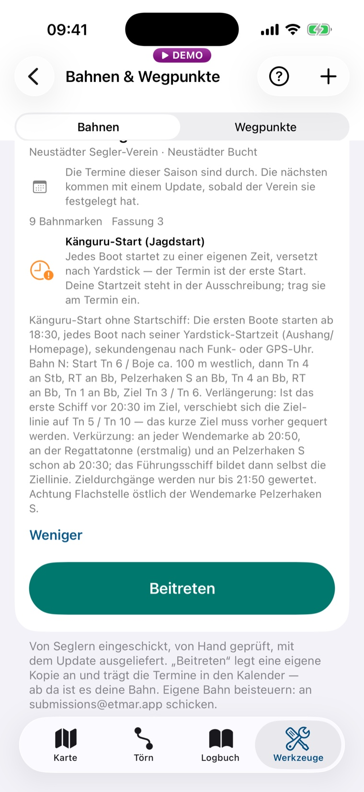
12345
Nach „Mehr“: die ganze Segelanweisung der Bahn N, „Weniger“ und der Knopf „Beitreten“.
Fassung — Nummer der mitgelieferten Bahn; eine neue Fassung wird hier angeboten.
Segelanweisung — Bahnfolge mit Rundungsseiten, Verlängerung bei Ziel vor 20:30, Verkürzung ab 20:50, Zieldurchgänge bis 21:50.
Weniger — klappt die Ausschreibung wieder auf drei Zeilen zu.
Beitreten — legt deine Kopie an und trägt künftige Termine in den Kalender.
Herkunft — von Seglern eingeschickt, von Hand geprüft, mit dem Update ausgeliefert.
Beim Känguru-Start (Jagdstart) starten nicht alle gleichzeitig: Jedes Boot startet versetzt nach seinem Yardstick, der Kalendertermin ist nur der erste Start, deine Zeit steht in der Ausschreibung oder am Aushang. Hat eine solche Bahn noch kommende Termine, fragt die App direkt nach dem Beitreten nach deiner Startzeit — sekundengenau, mit eigenem Sekundenfeld unter der Uhrzeit, tippbar oder über die Pfeile, weil der iOS-Zeitwähler keine Sekunden kann, die Segelanweisung aber sekundengenaues Starten nach Funk- oder GPS-Uhr verlangt. „Startzeit übernehmen“ speichert die Zeit für alle Termine dieser Bahn; einzelne Renntage änderst du im Kalender. „Später“ lässt den ersten Start stehen — der Countdown liefe zu früh ab. Bei einer neuen Fassung fragt die App erneut, weil sich die Einstufung von Saison zu Saison ändert.
Die mitgelieferten Termine der Mittwochsregatta (September 2026) sind vorbei — beim Beitreten fragt die App deshalb nicht nach der Startzeit, und die Bahn liegt gleich in deinen Bahnen (nächster Schritt). In der Demo stehen die Renntage trotzdem im Kalender: Die Demo legt die Mittwochsregatta als eigene Wochenserie an.
Zurück in der Community-Karte steht unter „Bahn auf der Karte zeigen“ die grüne Zeile „Beigetreten — die Bahn liegt in deinen Bahnen“. Der Knopf zeichnet die Bahn auf die Hauptkarte.
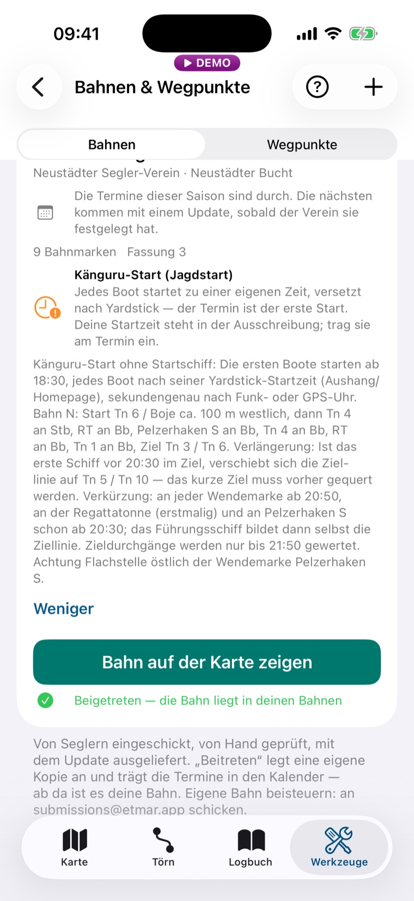
12
Beigetreten: Aus „Beitreten“ wurde „Bahn auf der Karte zeigen“.
Bahn auf der Karte zeigen — zeichnet Marken und Linien auf die Hauptkarte.
Beigetreten — die Kopie liegt in deiner Liste „Bahnen“.
In der Liste „Bahnen“ steht jetzt oben „Mittwochsregatta NSV“ mit „9 Bahnmarken“ — deine Kopie. Ab hier ist es deine Bahn: änderbar, löschbar, im Kalender und beim Starten als Vorlage wählbar. Der Community-Eintrag darunter bleibt für den Wechsel auf eine neue Fassung stehen. Künftige Termine trägt „Beitreten“ als Wochenserie in den Kalender ein (Teil 3) — bei der mitgelieferten Bahn erst, wenn der Verein die nächste Saison festgelegt hat und sie mit einem Update kommt.
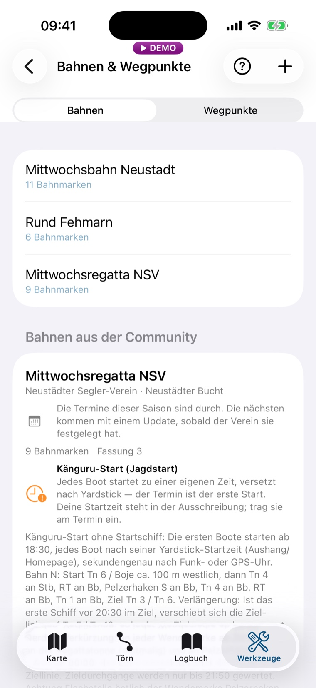
12
Die eigene Kopie oben in „Bahnen“; die Community-Vorlage bleibt darunter erhalten.
Eigene Bahn — neun Bahnmarken; ein Tipp öffnet den Kurs-Editor.
Community-Eintrag — bleibt als Referenz; hier erscheint später „Neue Fassung verfügbar“.
Teil 2: Bahn verstehen und anpassen
Ein Tipp auf die eigene Bahn öffnet den Kurs-Editor als Vollbild-Karte. Rechts die Werkzeug-Palette (Marke, Tor, Info, Zone, Start, Ziel), unten der Streifen mit der Bahnfolge. Mit Werkzeug „Marke“ gilt: Tipp auf eine Tonne oder einen Wegpunkt hängt sie an die Bahn, Tipp auf freies Wasser legt dort eine neue Marke an, erneuter Tipp auf eine Bahnmarke heißt „noch einmal anlaufen“ (Runden). Das Werkzeug bleibt aktiv; nur nach dem zweiten Ende einer Linie springt die Palette auf „Marke“ zurück. Der Pfeil oben macht den letzten Schritt an den Marken rückgängig, Schritt für Schritt. „?“ blendet eine kurze Bedienhilfe ein, „Fertig“ schließt.
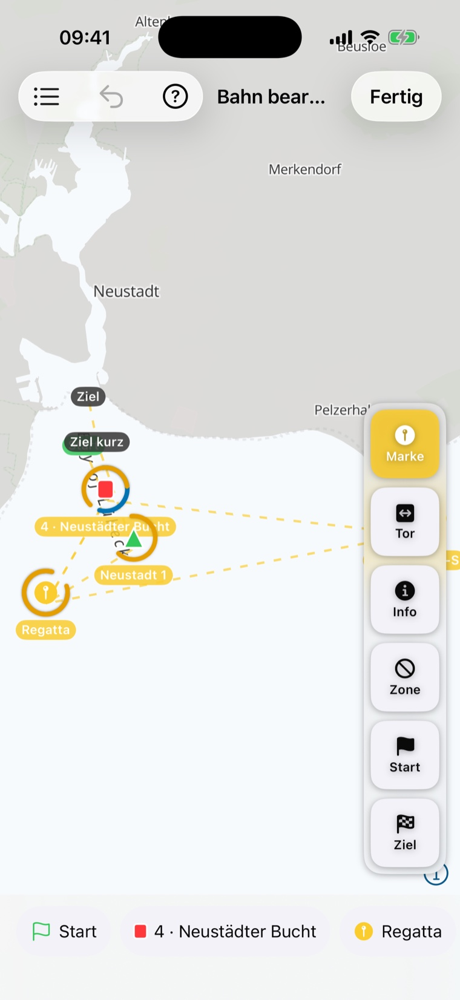
12345
Kurs-Editor mit der Bahn N: Start und Ziele vor Neustadt, Regattatonne, Pelzerhaken-S im Osten; die Tonnen tragen ihre Rundungsbögen.
Liste — öffnet „Reihenfolge & Stammdaten“ (nächster Schritt).
Rückgängig — nimmt den letzten Bearbeitungsschritt an den Marken zurück, mehrfach hintereinander.
? — kurze Bedienhilfe zu Palette und Tipps.
Werkzeug-Palette — Marke, Tor, Info, Zone, Start, Ziel; das aktive Werkzeug ist orange.
Bahnfolge — Start, Marken, Ziel in Reihenfolge; ein Tipp öffnet das Blatt der Marke.
„Liste“ öffnet „Reihenfolge & Stammdaten“: Name, Startverfahren (Klassenstart, Känguru-Start oder Gruppenstarts) und die Bahnreihenfolge. „Bearbeiten“ schaltet das Ziehen frei. Die Chips „Stb“ und „Bb“ sind die Rundungsseiten: aus der Reihenfolge abgeleitet — Linkskurve um die Tonne = an Backbord (rot), Rechtskurve = an Steuerbord (grün) —, per Tipp auf die Zeile von Hand änderbar.
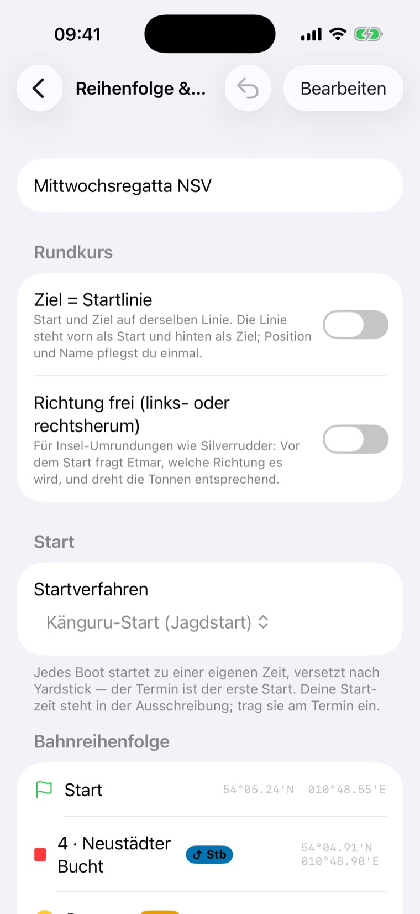
1234
„Reihenfolge & Stammdaten“: Start, Tonne 4 an Steuerbord, Regatta und Pelzerhaken-S an Backbord, zweite Runde, Neustadt 1.
Bearbeiten — Reihenfolge per Ziehen ändern, Marken entfernen.
Name — der Name der Vorlage; die Termine im Kalender tragen ihn ebenfalls.
Startverfahren — Känguru-Start (Jagdstart); mit kommenden Terminen fragt die App deshalb nach deiner Startzeit.
Bahnreihenfolge mit Rundungsseiten — Chips Stb/Bb je Durchfahrt, aus der Reihenfolge abgeleitet, per Tipp änderbar.
Weiter unten stehen die zwei Ziele „Ziel kurz“ und „Ziel“ — die Bahn N hat eine Verlängerung. Dann die Info-Punkte, hier „Flachstelle“ östlich von Pelzerhaken-S. Ein Info-Punkt ist ein Notizzettel an einer Stelle im Revier und bewusst kein Bahnelement: nicht in der Bahnreihenfolge, nie gestempelt. Auf der Karte gelb mit „i“, ein Tipp öffnet den Text. Er kommt mit der Bahn ins Rennen auf die Hauptkarte — bearbeiten im Editor, im Rennen nur lesen.
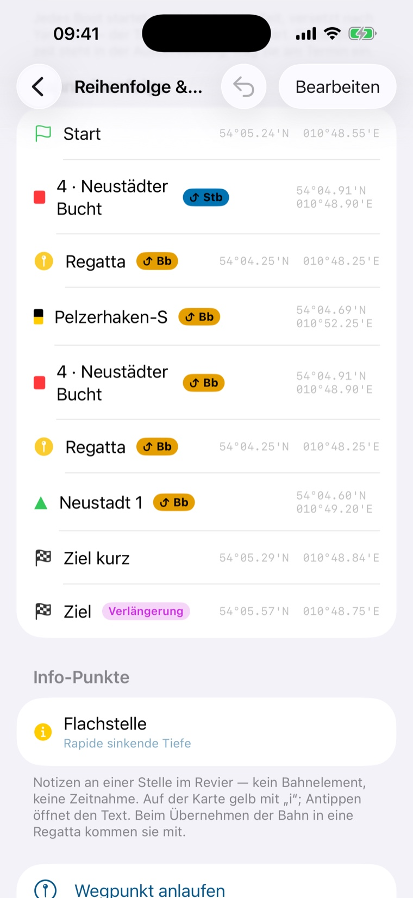
1234
Zwei Ziele, ein Info-Punkt und die Zeilen zum Hinzufügen auf dem Listenweg.
Ziel kurz und Ziel — erstes Ziel (Tn 3 / Tn 6) und verlängertes Ziel (Tn 5 / Tn 10).
Info-Punkt „Flachstelle“ — Notiz im Revier, kein Bahnelement; im Rennen auf der Hauptkarte lesbar.
Hinweis zu Runden — denselben Wegpunkt mehrfach anlaufen. Der Satz beginnt mit „Runden:“.
Am Ende der Liste liegt „Bahnänderung“. Verkürzung und Verlängerung sind Eingriffe der Wettfahrtleitung mit fester Uhrzeit in der Ausschreibung — deshalb gehören sie zur Bahn. „Bahnverkürzung ab Uhrzeit“ (hier 20:50): Wer ab dann erst eine Wendemarke erreicht, wird dort gewertet. „Bahnverlängerung bei Ziel vor“ (hier 20:30): Ist das erste Ziel vor dieser Zeit gequert, fährt das Feld den Zusatzschenkel; welche Marken dazugehören, legst du an einer Bahnmarke fest (Schritt 13). An der Zeile des ersten Ziels sitzt der Schalter „Bei Verlängerung als Tor mitnehmen“: aus heißt, das erste Ziel gehört bei Verlängerung nicht mehr zur Bahn; an heißt, es wird ein Tor mit Durchfahrtszeit. Gewertet wird das erst in der Auswertung (ab Build 43 frei): Die Verkürzung schlägt die App nur vor, die Verlängerung wertet sie nur, wenn sie zweifelsfrei ist.
Der Editor prüft mit. Zwei Ziellinien, aber keine als Verlängerung markiert? Dann steht unter der Bahnreihenfolge eine Warnung mit dem Knopf „Zweite Ziellinie als Verlängerung markieren“ – er markiert das zweite Ziel und alles dazwischen, Rückgängig wie bei jedem Schritt. Eine Verlängerungszeit ohne Verlängerungsmarke bekommt an der Zeitregel den Hinweis, dass sie wirkungslos ist, und die Auswertung sagt es ebenfalls („Verlängerung: nicht anwendbar“), statt zu schweigen. Ohne Markierung endet jedes Rennen am ersten Ziel. Dieselbe Prüfung steht in der Bahn am Törn: Regatta → Bahn → Liste zeigt Warnung und Knopf genauso — wer die Bahn erst am Renntag anlegt oder dort nachbessert, sieht sie jetzt auch. In der Auswertung steht der Hinweis direkt unter der eingestellten Verlängerungszeit, nicht nur im Fußtext darunter.
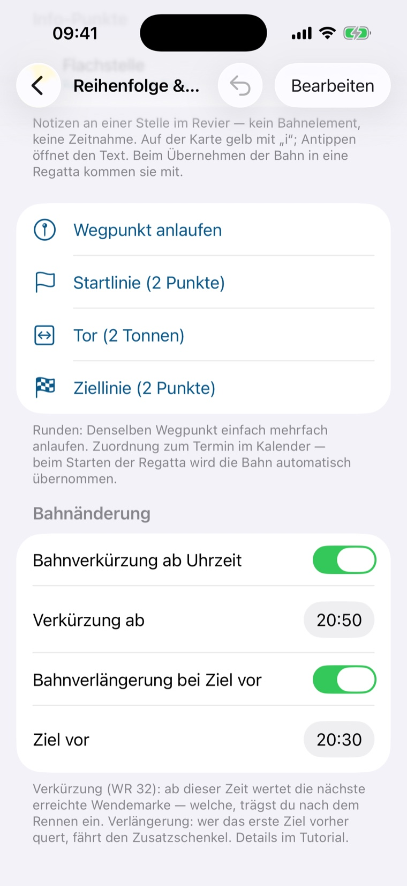
123
„Bahnänderung“: die Uhrzeiten aus der Segelanweisung, beide eingeschaltet.
Bahnverkürzung ab Uhrzeit — 20:50; die allgemeine Verkürzungszeit an jeder Wendemarke.
Bahnverlängerung bei Ziel vor — 20:30; erstes Ziel vor dieser Zeit gequert = Zusatzschenkel.
Erklärung — wie die Auswertung beide Fälle behandelt und wo der Zusatzschenkel markiert wird.
Ein Tipp auf eine Marke in der Bahnfolge öffnet das Blatt „Bahnmarke“, hier Pelzerhaken-S. Oben Name und Position; das Symbol davor zeigt den Seezeichen-Typ (Aufblastonne, Fahrwassertonne, Kardinaltonne, Bake, Schiff), den die Karte beim Ranzoomen zeichnet. „Rundungsseite“ steht auf „an Backbord“; „Nur passieren“ ist für Tonnen, die an einer Seite zu lassen sind, ohne gerundet zu werden. Der Erkennungsradius (Standard 60 m, 20–200 m) ist nur die Toleranz, in der die Tonne als erreicht gilt; gestempelt wird der Punkt der dichtesten Annäherung. „Zeitlimit an dieser Tonne“ ist das frühere Limit dieser Wendemarke, hier 20:30: Es vererbt sich rückwärts auf frühere Tonnen ohne eigenes Limit, gilt nie für den Start und bei Runden nur für die eine Durchfahrt.
Schaltest du „Nur passieren“ ein, verschwindet der Erkennungsradius aus dem Blatt — für eine solche Marke gilt er nicht. Sie bekommt ihre Zeit in dem Moment, in dem sie quer ab liegt, auch in ein oder zwei Seemeilen Abstand (bis 5 sm, höchstens eine Schenkellänge); an ihre Stelle tritt ein Satz, der das erklärt. Dafür braucht sie ihre Seite: Läuft die Bahn geradeaus an ihr vorbei, nimmt Etmar die Seite, auf der sie neben der Bahnlinie liegt. Knickt die Bahn an ihr ab oder liegt sie auf der Linie, setzt Etmar keine Seite selbst — am Kap wäre innen gemeint, an einer Begrenzungstonne außen, und das sagt nur die Ausschreibung; dann steht dort ein Hinweis, gesichert wird trotzdem. Und umgekehrt: Hast du den Erkennungsradius einer gewöhnlichen Wendemarke verfehlt, weil die Tonne verlegt lag, bleibt die Zeile nicht mehr leer — dann gilt ebenfalls der Moment querab, solange das im engen Korridor um die Tonne war: das Zehnfache des Radius, mindestens 500 m, beim Standard-Radius also 600 m.
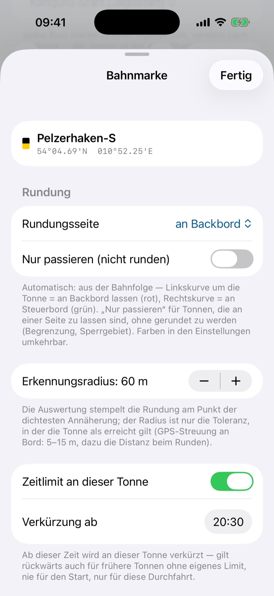
1234
Bahnmarke Pelzerhaken-S: an Backbord, 60 m Radius, eigenes Zeitlimit 20:30.
Name, Position, Seezeichen-Typ — das Symbol vor dem Namen ist der Typ, den die Karte beim Ranzoomen zeigt.
Rundungsseite / Nur passieren — an Backbord (rot) oder an Steuerbord (grün); „Nur passieren“ für Tonnen, die nicht gerundet werden.
Erkennungsradius — 60 m Standard, 20–200 m; nur die Toleranz, nicht der Zeitstempel.
Zeitlimit an dieser Tonne — 20:30, früher als die allgemeine Verkürzung; vererbt sich rückwärts.
Weiter unten im selben Blatt: „Noch einmal anlaufen (weitere Runde)“ hängt dieselbe Tonne erneut an die Bahn — Position, Name und Radius werden nur einmal gepflegt, jede Durchfahrt bekommt ihre eigene Rundungszeit und ein Runden-Badge. „Verlängerung beginnt danach“ setzt den Schnitt für den Zusatzschenkel: Alles nach dieser Zeile gehört zur Verlängerung, die Zeile selbst nicht. Bei der NSV-Bahn gehört der Schnitt deshalb hinter das erste Ziel („Ziel kurz“): Das erste Ziel ist der Auslöser der Verlängerung und nie Teil von ihr; an Pelzerhaken-S bleibt der Schalter aus.
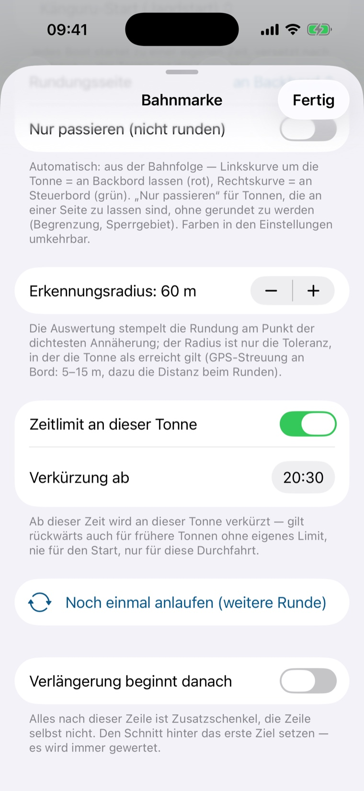
1234
Dasselbe Blatt, nach unten gescrollt: Runden und der Schnitt für den Zusatzschenkel.
Erklärung zum Zeitlimit — Vererbung rückwärts, nie für den Start, je Durchfahrt.
Noch einmal anlaufen — dieselbe Tonne ein weiteres Mal in die Bahnfolge legen.
Verlängerung beginnt danach — aus, weil der Schnitt hinter das erste Ziel gehört.
Erklärung — alles nach dieser Zeile zählt zum Zusatzschenkel, die Zeile selbst nicht.
Den zweiten Editor triffst du an Bord: Im Kontext-Tab „Regatta“ öffnet „Bahn“ das Bahnprofil des laufenden Törns, im Kapitel Bahn der Auswertung heißt der Weg „Bahn anpassen“. Gleiche Vollbild-Karte, gleiche Palette, gleiches Bahn-Blatt — nur die Reichweite ist anders: In der Vorlage pflegst du, was jede Woche gilt; hier, was heute gilt. Verlegt die Wettfahrtleitung kurzfristig eine Tonne, korrigierst du sie hier, ohne die Vorlage anzufassen, und sicherst die geänderte Bahn bei Bedarf über das Menü als neue Vorlage.
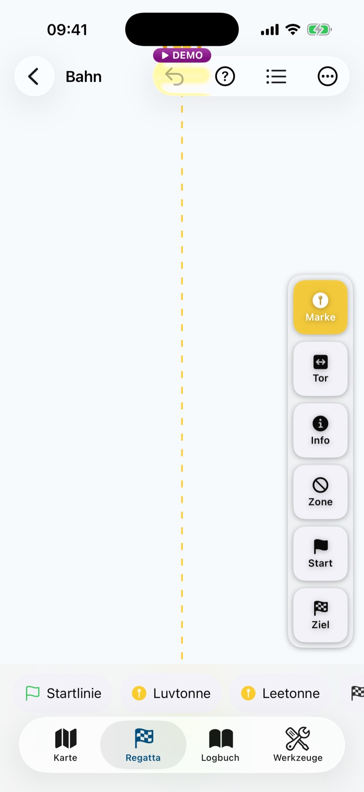
1234
Der Editor an Bord in der Regatta-Demo, kurz nach dem Schuss: dieselbe Karte und Palette wie in der Vorlage, unten die Bahnfolge des Rennens.
Zurück „Bahn“ — führt in den Kontext-Tab des Törns.
Rückgängig, ?, Liste, Menü — wie in der Vorlage; über das Menü lässt sich die geänderte Bahn als neue Vorlage sichern.
Bahnfolge — die Marken des Rennens der Reihe nach, hier Startlinie, Luvtonne, Leetonne. Bei einem Törn ohne Bahn steht hier „Tippe auf eine Tonne oder aufs Wasser“: Die erste Marke entsteht mit einem Tipp.
Teil 3: Vom Termin zum Startschuss
Werkzeuge → Kalender zeigt unter „Demnächst“ die Serie: jeden Mittwoch „Mittwochsregatta NSV“ — beim Jagdstart mit deiner Startzeit, nicht dem ersten Start; in der Demo um 18:00. Am Renntag tippst du „Starten“ im Termin. Über „+“ legst du eigene Regatta-Termine an, mit der Zeile „Bahn-Vorlage“. Serien lassen sich gesammelt bearbeiten: „Auf künftige Termine der Serie anwenden“ übernimmt Name, Uhrzeit, Boot, Bahn und Notizen für alle ausstehenden Termine.
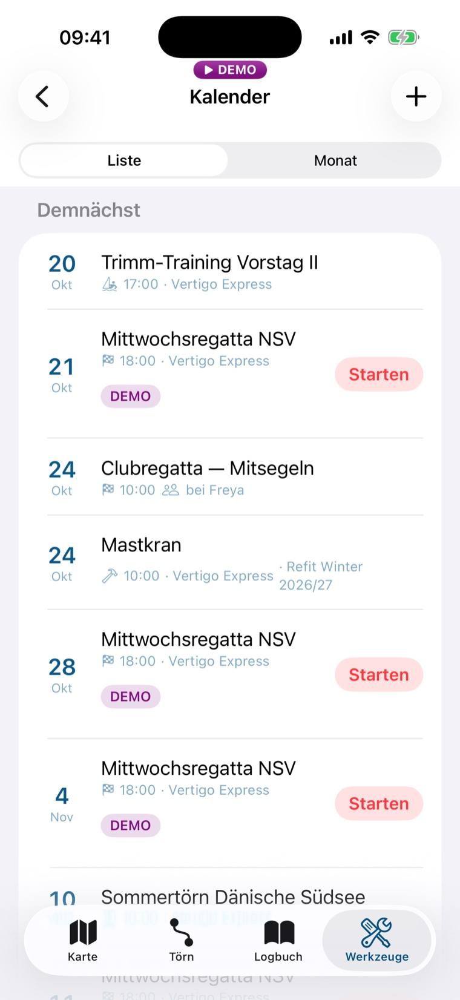
123
Kalender in der Demo: die Wochenserie der Mittwochsregatta um 18:00 mit dem Boot „Vertigo Express“, dazwischen andere Termine.
Serien-Termine — jeder Mittwoch mit Bahn, Startzeit und Boot; einzelne Tage lassen sich ändern.
Starten — legt am Renntag die Regatta samt Bahn und Countdown an, nach Rückfrage.
„+“ — eigener Termin, bei Regatten mit Zeile „Bahn-Vorlage“.
Der andere Weg führt über das Logbuch: Das Menü oben rechts (⋯) bietet ohne offenen Törn „Neuer Törn“, „Neue Regatta“ und „Neues Training“; „Neue Regatta“ öffnet dasselbe Formular wie Karte → Ablegen → Regatta …, das die Karte nur bei Schwerpunkt „Regatta“ anbietet. „Ablegen“ darunter startet dagegen einen normalen Törn ohne Countdown.
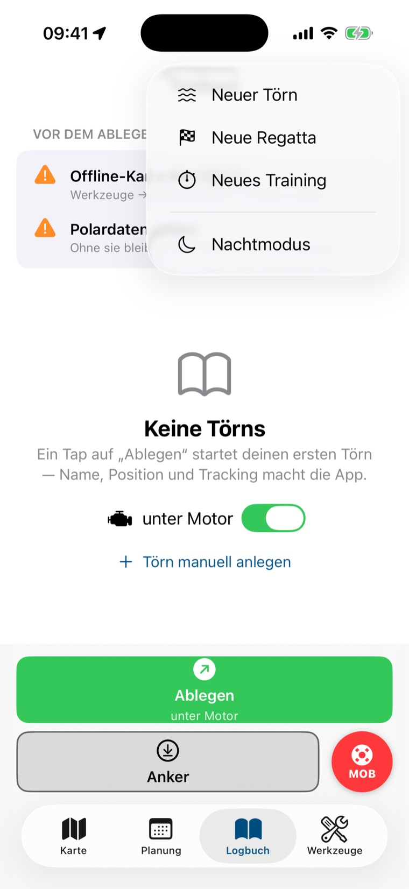
12
Menü (⋯) im Logbuch: Regatta ohne Kalender-Termin anlegen.
Neue Regatta — öffnet das Formular aus dem nächsten Schritt.
Ablegen — normaler Törn ohne Startschuss; nicht für die Regatta.
Das Formular fragt Name, Startschuss (Schnellwahl +5 bis 1 h oder Datum, Uhrzeit und Sekunden), Vorstart-Dauer (5, 6, 10 oder 15 Minuten; 5 für 5-4-1-Starts), Bahn und Wertung. Die Bahn-Zeile bietet deine Vorlagen an — Marken, Linien und Zeitregeln kommen mit. Liegt heute ein Kalender-Termin mit Bahn an, ist sie vorbelegt; im Bild steht „Keine“, weil am Aufnahmetag kein Termin anlag. Ohne Bahn fehlen im Vorstart Linie, Distanz und Bias. Das Tracking beginnt mit dem Vorstart, „Starten“ legt die Regatta an.
12345
„Neue Regatta“ aus dem Menü (⋯): Startschuss mit Sekundenfeld, Vorstart-Dauer, Bahn-Vorlage.
Name — vorbelegt mit Datum, frei änderbar.
Startschuss — Schnellwahl-Chips, Datum, Uhrzeit und eigenes Sekundenfeld.
Vorstart-Dauer — 5, 6, 10 oder 15 Minuten; ab hier läuft das Tracking.
Bahn — Vorlage wählen; mit Kalender-Termin am Renntag schon eingetragen.
Starten — legt die Regatta an.
„Starten“ im Kalender fragt vorher nach — „Regatta anlegen“: „Mittwochsregatta NSV“ wird mit Bahn und Countdown angelegt, in der Demo „Start 18:00“. „Jetzt anlegen“ erstellt die Regatta mit Bahnprofil, Zeitregeln und deiner Startzeit; ein Fehltipp auf „Starten“ bleibt folgenlos.
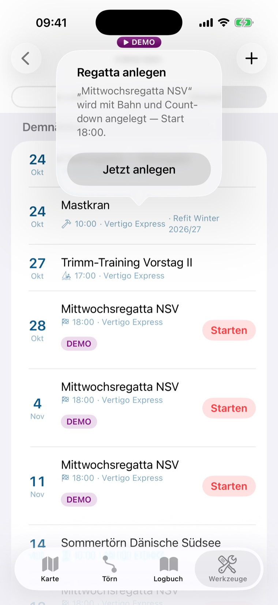
12
Rückfrage beim „Starten“ aus dem Kalender.
Was angelegt wird — Name, Bahn, Countdown und der Start, hier 18:00.
Jetzt anlegen — erst dieser Tipp erstellt die Regatta.
Das Kontext-Feld wechselt auf „Regatta“: (ab Build 44) oben die Bahn als Liste, Marke für Marke in Bahnfolge, darunter „Bahn“ mit der Zahl der Marken und Linien (öffnet den Editor an Bord, Schritt 14), „Auswertung“ und „Regatta-Detail“. Countdown, Abstand zur Linie und Bias stehen im Vorstart oben auf der Karte, nicht hier. Nach dem gewerteten Ziel heißt der Tab wieder „Törn“ und zeigt auch den Törn.
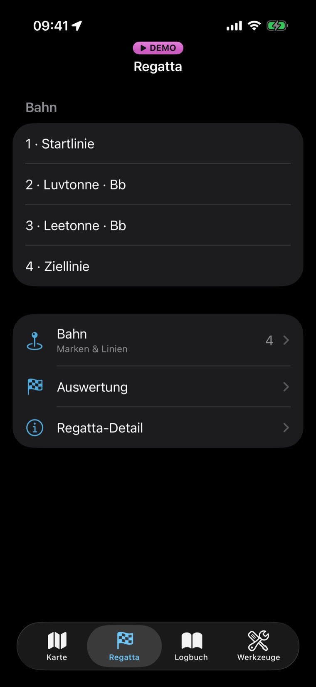
12345
Kontext-Tab „Regatta“ vor dem Schuss, hier in der Regatta-Demo: vier Marken und Linien.
Bahn als Liste — eine Zeile je Durchfahrt mit Nummer, Name und Seite; im Rennen ist die nächste fett und trägt „nächste“. (ab Build 44)
Bahn — Bahnprofil des Törns, öffnet den Editor an Bord.
Auswertung — nach dem Rennen; siehe Regatta-Auswertung.
Regatta-Detail — Törn-Detail mit Karte, Track und Zusammenfassung.
Tab „Regatta“ — das Kontext-Feld zeigt jetzt dieses Gesicht.
„Regatta-Detail“ ist das Törn-Detail der Regatta: Auswertung, „Bahn“ mit Marken & Linien, Karte, Track nachzeichnen, Tagesbericht (Wind) und darunter die Zusammenfassung mit dem Startschuss auf die Sekunde. Hier prüfst du vor dem Ablegen, ob Startschuss und Bahn stimmen.
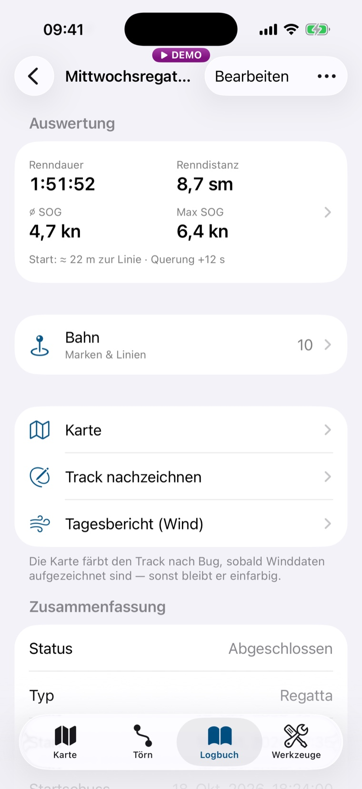
12
Regatta-Detail: Auswertung oben, die Bahn ist übernommen; der Startschuss steht weiter unten in der Zusammenfassung.
Auswertung — nach dem Ziel die Kernzahlen und der Start; ein Tipp öffnet die Regatta-Auswertung.
Bahn — Marken & Linien — hier zehn Elemente aus der Vorlage, auch nachträglich korrigierbar.
Im Logbuch steht die Regatta als „Warten auf Vorstart“ mit dem Countdown bis 18:41:00. „Sync“ rundet den Startschuss beim Signal des Wettfahrtleiters auf die volle Minute, „−5 Min“ und „+5 Min“ verschieben ihn bei Startverschiebung. „Wind setzen“ liefert die Windrichtung für den Linien-Bias, solange kein NMEA-Wind da ist. (ab Build 43) Alles Weitere — Vorstart, Linie pingen, Rennen, Ziel — steht in C5.
1234
„Warten auf Vorstart“: Der Countdown läuft auf die eigene Startzeit 18:41:00.
Countdown — Zeit bis zum eigenen Startschuss, mit Sekunden.
Sync — beim Signal einmal tippen, der Startschuss rastet auf die volle Minute.
−5 / +5 Min — Startverschiebung; mehrfach tippen addiert.
Wind setzen — Windrichtung für den Linien-Bias. (ab Build 43)
Eigene Bahn ohne Community
Fehlt deine Regatta in der Community-Liste, baust du die Bahn selbst — über „+“ in Werkzeuge → Bahnen & Wegpunkte. Die Tonnen des Reviers musst du nicht abtippen: Die Wegpunkt-Bibliothek zeigt unter „Seezeichen im Revier“ die benannten Tonnen aus den geladenen Seekarten-Daten, nach Nähe sortiert; ein Tipp übernimmt Name, Position und Typ. Übernommene Seezeichen stehen getrennt von den eigenen Wegpunkten; Löschen entfernt nur die Kopie.
Rundkurs: Ziel = Startlinie. Endet die Bahn dort, wo sie beginnt – Insel-Umrundungen wie Silverrudder –, öffnest du die Bahn unter Werkzeuge → Bahnen & Wegpunkte, tippst oben auf „Liste“ und schaltest im Abschnitt „Rundkurs“ (direkt unter dem Namen) „Ziel = Startlinie“ ein. In der Bahn einer Regatta steht derselbe Abschnitt ganz oben auf der Liste. Die Linie steht dann zweimal in der Bahn: vorn als Start, hinten mit „als Ziel“. Koordinaten und Namen trägst du nur einmal ein. Ohne Startlinie ist der Schalter gesperrt („Erst eine Startlinie setzen.“); eine eigene Ziellinie ersetzt er erst nach Rückfrage, der Rückgängig-Pfeil oben holt sie zurück. Wer dieselbe Tonne mehrfach anläuft, fährt in Etmar „Runden“ – „Rundkurs“ heißt nur Start = Ziel.
Richtung frei. Kann die Bahn links- oder rechtsherum gefahren werden, schaltest du im selben Abschnitt „Richtung frei (links- oder rechtsherum)“ ein. Vor dem Start fragt die App dann nach der Richtung; die Bahnmarken werden entsprechend umgedreht, von Hand gesetzte Rundungsseiten kippen mit (die Liste zeigt sie als „Bb“/„Stb“), Start- und Ziellinie bleiben liegen. Ohne den Schalter kommt die Frage nicht – sie stünde sonst vor jedem Vereinsdreieck. Eine geteilte Bahn behält den Schalter. Im Demo-Modus zeigt die Vorlage „Rund Fehmarn“ beides.
Die Richtungsfrage. Läuft eine Regatta auf einer Bahn mit zwei Richtungen und der Startschuss ist noch nicht gefallen, erscheint mittig ein Auswahlfeld – egal ob du aus dem Kalender, aus dem Logbuch oder gar nicht selbst gestartet hast. Die App rechnet aus, welche Richtung rechtsherum ist, und nennt zu jeder Wahl die erste Tonne. „Später“ verschiebt sie bis zum nächsten Öffnen; nach dem Schuss wird nicht mehr gefragt. Fährst du doch andersherum, merkt die App das nach einigen Minuten am Track und bietet einmal an, die Bahn zu drehen.
Richtung ändern. Die gewählte Richtung steht in der Bahn der Regatta – Regatta-Tab → „Bahn“ → „Liste“, Abschnitt „Rundkurs“ – als „Richtung: Rechtsherum — zuerst …“, darunter der große Knopf „Richtung ändern“. Er wirkt auch nach dem Schuss und fragt nicht nach: Derselbe Knopf dreht zurück. Ist noch nichts gewählt, stehen dort beide Richtungen zur Wahl. Die Bahn-Zeile im Regatta-Tab sagt die Richtung als Wort („linksherum“ oder „Richtung offen“).
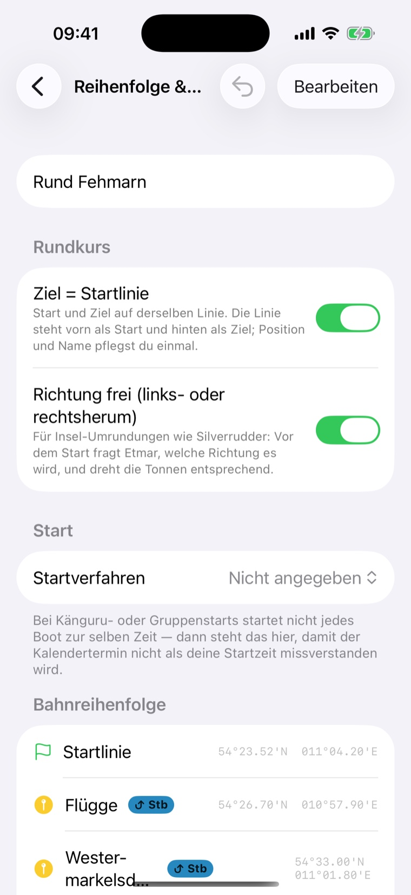
123
Vorlage „Rund Fehmarn“, Liste: der Abschnitt „Rundkurs“ unter dem Namen.
Ziel = Startlinie — die Startlinie steht zusätzlich als Ziel am Ende der Bahn.
Richtung frei — vor dem Start fragt die App „Welche Richtung?“.
Bahnreihenfolge — gebaut rechtsherum, Flügge zuerst; „Stb“ ist die Rundungsseite.
Start- und Ziellinie entstehen aus je zwei Enden — Tonne aus dem Revier, Tipp auf die Karte, gepingte Position oder Koordinaten aus der Ausschreibung; die Auswahl bietet auch die Seezeichen im Kartenausschnitt plus 5 sm darum herum. Ein Tor sind zwei Tonnen, durch die hindurchgefahren wird; gestempelt wird die Durchfahrt. Zonen sind Flächen, die man kennen muss (Sperrgebiet, Naturschutz, Untiefe, Hinweis): Werkzeug „Zone“, mindestens drei Ecken antippen, „Fertig“, Name und Art. Weder Zone noch Info-Punkt wird angelaufen.
Wegpunkte auf der Karte und mit Notiz.(ab Build 44) Im Segment „Wegpunkte“ steht oben eine Karte mit allen eigenen und übernommenen Wegpunkten, als türkise Pins mit Namen; ein Tipp auf einen Pin öffnet den Wegpunkt wie ein Tipp auf seine Zeile. Die Karte nimmt alle Wegpunkte ins Bild, einen einzelnen zeigt sie im 4-km-Ausschnitt, ohne Wegpunkte deine Position. Suchst du, zeigt sie nur die Treffer. Liegen Wegpunkte dicht beieinander, überdecken sich ihre Namen – Heranzoomen trennt sie. Im Formular eines Wegpunkts steht oben ein kleines Lagebild mit den Seezeichen ringsum; ein Tipp darauf öffnet die Positionswahl wie „Auf Karte wählen“. Weiter unten nimmt das Feld „Notiz“ auf, was man über die Stelle wissen muss („liegt im Winter weiter östlich“). Die Liste zeigt die Notiz als leise Zeile unter der Position, die Suche findet auch Text darin, und der GPX-Export nimmt sie als Beschreibung mit. Im Demo-Modus tragen „4 · Neustädter Bucht“ und das Startschiff eine Notiz.
Bilder am Wegpunkt.(ab Build 44) Im Formular eines Wegpunkts nimmt der Abschnitt „Bilder“ bis zu zehn Fotos auf – „Aus Fotos wählen“ oder „Kamera“, etwa die Tonne, wie sie von See aus aussieht. Ein Tipp auf ein Bild zeigt es groß, das × an seiner Ecke entfernt es; übernommen wird erst mit „Sichern“, „Abbrechen“ verwirft auch die Bilder. Bei zehn Bildern sind beide Knöpfe gesperrt, und die Zeile darunter sagt, dass erst eines weg muss. Das erste Bild steht in der Liste links an der Stelle des Seezeichen-Symbols. Auf den Karten erscheinen keine Bilder, und weder der GPX-Export noch eine geteilte Bahn nimmt sie mit. Im Demo-Modus trägt „4 · Neustädter Bucht“ ein Beispielbild.
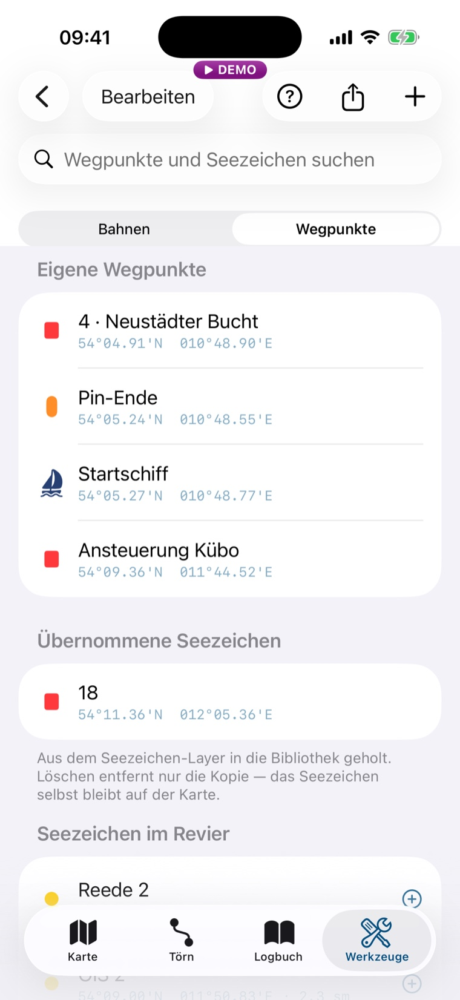
12
Wegpunkt-Bibliothek: oben die Karte, darunter die eigenen Wegpunkte; weiter unten folgen die übernommenen Seezeichen und die Seezeichen im Revier.
Karte(ab Build 44) — alle eigenen und übernommenen Wegpunkte mit Namen; ein Tipp auf einen Pin öffnet den Wegpunkt.
Eigene Wegpunkte — Neustädter Bucht, Pin-Ende, Startschiff; selbst angelegt, mit Seezeichen-Typ. Die graue dritte Zeile ist die Notiz (ab Build 44). Die Neustädter Bucht trägt ein eigenes Bild, es steht links statt des Seezeichen-Symbols (ab Build 44).
Teilen
Eine Bahn verlässt die App auf drei Wegen, alle frei. Etmar-Freigabe: Gedrückt halten in der Bahn-Liste → „Teilen (Etmar-Freigabe)“ erzeugt eine .etmarshare-Datei für AirDrop, Mail oder Messenger; Info-Punkte wandern mit, der Empfänger übernimmt sie nach einer Vorschau mit einem Tipp. GPX für den Plotter: „Als GPX teilen (Plotter)“ am selben Ort exportiert die Bahn als GPX-1.1-Datei für B&G, Garmin, Raymarine & Co. — Tonnen werden Wegpunkte, die Bahnreihenfolge eine GPX-Route. An Etmar senden: Derselbe Menüpunkt wie beim Feedback öffnet einen fertigen Brief mit Anhang; abgeschickt wird er von dir, nie von der App, was mitgeht steht samt Rechteerklärung im Brieftext. Kein Server, kein Konto: Geprüft wird von Hand, ausgeliefert mit dem nächsten Update.
Bitte testen
Ist der Weg Beitreten → Kalender ohne Anleitung verständlich? Wo hättest du gestockt?
Stimmen Marken, Rundungsseiten, Zeitregeln und Termine der NSV-Bahn mit der Ausschreibung überein? Nenne jede Abweichung.
Findest du im Editor die Rundungsseite und das Zeitlimit einer einzelnen Tonne, ohne diesen Artikel zu lesen?
Nach dem Zieleinlauf zerlegt Etmar das Rennen in Zahlen. Oben ein Überblick, der „wie lief es“ beantwortet — darunter sechs Kapitel, die „warum“ beantworten.
(ab Build 43) Alle Auswertungen haben einen Ort: Werkzeuge → Auswertungen; von der Boot-Seite führt eine Zeile „Auswertungen“ dorthin. Die Seite ordnet sie nach Kategorien — Rennen, Manöver & Steuern, Boot & Geschwindigkeit, Segel & Trimm, Training, Saison & Törns — und zeigt jede Auswertung als Karte mit Titel, einer Kennzahl („8 Schenkel“, „5 Rennen“), rechts der Grafik des Details im Kleinen (dieselbe Kurve, Wolke oder Balken, ohne Achsen) und einem Satz, was sie beantwortet. Zeigt das Detail keine Grafik — eine Liste, Tabelle oder Zähler —, hat die Karte keine. Kennzahl und Grafik kommen aus derselben Rechnung wie das Detail; fehlt dafür Wind vom Bordnetz, steht statt der Grafik, was fehlt, und in der Demo sagt der Satz „Aus Demo-Daten“. Jede Karte sagt, von wann ihre Daten sind — „Rennen vom 17. Okt. 2026 · Mittwochsregatta“, bei den Karten über viele Fahrten „12 Rennen bis …“ oder „40 Fahrten bis …“. Rennen, Trimm und Training rechnet die Seite sofort; die Auswertungen über alle Fahrten (Saison, Steuerruhe, Polare, Zielwinkel, Krängung, Bug-Asymmetrie, Crossover, Statistik) zeigen Kennzahl und Grafik, nachdem du ihr Detail einmal geöffnet hast — bis dahin steht dort „Kennzahl und Grafik nach dem ersten Öffnen“. (ab Build 44) Diese Karten rechnet die App selbst, ohne die Bedienung aufzuhalten: wenige Sekunden nach dem Start, nach einem Bootswechsel und wenn ein Törn dazukommt, endet oder gelöscht wird — auch beim Start der Demo. Die Karten füllen sich nacheinander; bis dahin steht dort „Wird gerechnet …“. Während ein Törn aufgezeichnet wird, rechnet sie nicht, dann gilt weiter das erste Öffnen. Nach einer Korrektur rechnet sie neu, sobald du wieder auf der Seite bist. Was eine Karte einmal zeigt, steht auch nach einem Neustart der App wieder da, bis ein neuer Törn oder eine Korrektur die Zahl ändern kann. So bleibt die Seite auch mit Hunderten Fahrten sofort bedienbar. Ein Tipp öffnet das Detail; die Renn-Karten (Start, Bahn, Manöver, Speed & Trimm, Wind) öffnen direkt ihr Kapitel der letzten Regatta mit Track. Ohne Daten sagt die Karte, warum leer und wo du anlegst; ohne Regatta mit Track nennt eine Zeile unter „Letztes Rennen“ die übrigen Renn-Karten. Was nur Pro zeigt, steht je Kategorie in einer eingeklappten Zeile am Ende („2 weitere mit Pro“). Jede Auswertung wohnt nur hier: Boot, Polardaten und Trimm-Liste sagen in einem Satz, wo ihre Auswertung steht, und führen mit einer Zeile hierher. Direkt auf dasselbe Detail führen nur das Törn-Detail eines Rennens („Auswertung“) oder Trainings („Messläufe“), die Zeile „Auswertung“ im Kontext-Tab während einer Regatta, der Crossover in der Segel-Liste und im Trimm-Eintrag „Vergleichen mit …“ samt seinem Messlauf. Was jede Karte zeigt, woher ihre Zahlen kommen und wo sie irrt, steht in C17.
(ab Build 45)Welches Boot? Hast du mehr als ein Boot angelegt, steht ganz oben in Werkzeuge → Auswertungen der Bootsname in einer Zeile — gebaut wie die Rennwahl der Regatta-Auswertung. Ein Tipp öffnet „Boot wählen“ mit allen Booten in der Reihenfolge der Bootsliste; danach rechnen alle Karten für das gewählte Boot. Das aktive Boot für Instrumente und Logbuch bleibt, und neu geöffnet zeigt die Seite wieder das aktive. Törns auf einem Gastboot sind kein eigenes Boot, sie zählen beim Boot, an dem sie hängen. Mit einem Boot gibt es die Zeile nicht. Im Demo-Modus liegen „Vertigo Express“ und „Nordwind“ nebeneinander.
(ab Build 44)Deine Leistungswerte.Pro Über den Kategorien stehen fünf Kacheln: Startverzug, Je Manöver, Mehrweg, Ergebnis und Speed gegen Polare. Jede zeigt ein Level über deine gewerteten Regatten seit dem Saison-Reset: Das erste Rennen setzt es, jede weitere Regatta zieht es ein Drittel des Wegs zu ihrem Wert — beim Mehrweg ein langes Rennen stärker. Darunter steht, ob die letzte Regatta das Level besser oder schlechter gemacht hat, mit dem Betrag; der Pfeil nach oben heißt immer „besser“, auch wo die Zahl dabei fällt, und unter einer kleinen Schwelle heißt es „unverändert“. Die Einheiten hängen nicht an der Länge des Rennens: Sekunden nach dem Schuss, der Median der Kosten je Manöver, der Mehrweg als Anteil der gesegelten Strecke, das Ergebnis als Platz geteilt durch die Flottengröße („Top 20 %“), der Speed als Polar-Leistung. Ein Level steht ab drei Rennen mit Wert, der Trend ab dem vierten; davor sagt die Kachel, wie viele Rennen mit Wert es bisher sind („bisher 2“). Mehrweg und Speed brauchen Wind vom Bordnetz und eine Polare — ohne sagt die Kachel das; Startverzug, Manöver und Ergebnis gehen mit GPS und deiner Platzierung (mit geschätztem Bug steht „Aus GPS: Bug geschätzt“ dabei). Ein Tipp auf eine Kachel öffnet die Auswertung mit dem Wert je Rennen. Ohne Pro steht an der Stelle eine Zeile.
(ab Build 44)Wie weit belegt. Sechs Karten sammeln über viele Fahrten in ein Raster aus Kurs und Windband — Gefahrene Polare, Zielwinkel aus Messung, Krängungs-Zielwert, Segel-Crossover, Trimm nach Windstärke und Stärkenprofil. Statt eines Zählers sagen sie, wie viel davon belegt ist („53 % belegt“), und in einer eigenen Zeile, was fehlt („fehlt: Kreuz unter 8 kn, Raum und ein weiterer“). 100 % heißt jedes Windband (je Kurs, den die Auswertung rechnet) — nicht nur die in deinem Revier. Bei Polare, Crossover und Trimm ist der Anteil die Kennzahl, bei Zielwinkel, Krängung und Stärkenprofil steht er unter dem Befund. Kann sich eine Karte ohne eine Quelle gar nicht füllen — Windgeber, Lagesensor, hinterlegte Polare —, nennt sie die Quelle statt einer Zahl. Was „belegt“ je Karte heißt, steht in C17.
Bis Build 43: Drei Abschnitte, keine Listen: Fahrten zeigt die letzte Regatta mit Track und das letzte Training deines aktiven Boots als je eine Zeile — alle anderen Fahrten stehen im Logbuch, dort öffnest du auch ältere Rennen. Saison trägt Regatta-Bilanz und Statistik & Motorstunden, Boot die Boots-Analytics. Ohne Daten steht statt der Zeile eine Karte mit dem Grund und dem Weg zum Anlegen. Nach dem Zieleinlauf zeigt das Törn-Detail der Regatta die Kernzahlen; ein Tipp darauf öffnet die vollständige Auswertung.
Die Auswertung hat zwei Ebenen. Ebene 1 ist der Überblick: Rennkarte, Kernzahlen und der Zeitverlust-Wasserfall — die Seite, die sich nach dem Zieleinlauf öffnet, in einem Zug lesbar. Ebene 2 sind sechs Kapitel auf je einer eigenen Seite mit eigenem Hilfe-Knopf: Start, Bahn, Speed & Trimm, Manöver, Wind und Wertung. Bisher stand alles davon in einer einzigen langen Liste; wer den Startabstand sehen wollte, scrollte an allem anderen vorbei.
(ab Build 43)Welches Rennen? Ganz oben steht die Zeile mit Name und Datum der Regatta, die du gerade siehst — ebenso über einem Renn-Kapitel, das du aus Werkzeuge → Auswertungen geöffnet hast. Ein Tipp darauf öffnet die Liste der Regatten mit Track dieses Boots, neueste zuerst, mit Platzierung, die gezeigte mit Haken; die Wahl rechnet die ganze Seite neu, und du bleibst im selben Kapitel. Aus den Auswertungen ist die letzte Regatta mit Track vorgewählt, aus dem Törn-Detail und dem Kontext-Tab die, aus der du kommst.
(ab Build 43)Woher die Werte kommen. Jede Auswertung, die Werte vom Bordnetz liest, sagt es in einer leisen Zeile — auf ihrer Karte in Werkzeuge → Auswertungen und am Ende des Kapitels: gemessen „Bordnetz: TWA · AWA“, ohne Windgeber der Ersatz, etwa „Aus GPS: Bug geschätzt (Wind von Hand am Start)“ oder „Wind laut Logbuch“. (ab Build 44) Ohne Logge rechnet die App den Wahrwind über Grund; Speed & Trimm nennt das in seiner Zeile, statt STW zu behaupten: „Bordnetz: TWA · TWS über Grund (SOG), keine Logge“. Ohne Windgeber zählt die Auswertung Wenden, Halsen und Schläge aus dem GPS-Track; Überblick und Kapitel tragen dann unter „Woher die Werte kommen“ den Vorbehalt der Schätzung. Die Regatta-Bilanz zeigt ohne jeden Bug „–“ statt 0. Im Demo-Modus zeigt die „Abendregatta ohne Windgeber“ das — über die Rennwahl ganz oben.
Geschnitten sind die Kapitel nach der Frage, die man stellt, nicht nach der Datenquelle. Deshalb liegt der SOG-Verlauf bei den Manövern — dort tippst du ein Manöver an, und es wird im Verlauf hervorgehoben. Die Zonen liegen beim Start, weil man sie aufmacht, wenn man wissen will, ob man vor dem Schuss sauber war. Und die Bahnänderung liegt bei der Wertung: Sie schreibt dasselbe Feld wie der Renn-Ausgang — getrennt geführt entstünden Widersprüche.
Ebene 1: der Überblick
RennkartePro — drei Sätze ganz oben: was der Start gekostet hat, der Schenkel mit dem größten Mehrweg, beste und schlechteste Wende (mit Wind vom Bordnetz stattdessen die Kreuzleistung gegen die Polare). Der eine Blick — und zugleich der Weg nach unten: Jeder Satz ist antippbar und öffnet das Kapitel, das ihn erklärt (Start-Satz → Start, Mehrweg-Satz → Bahn, dritter Satz → Manöver bzw. Speed & Trimm). Ist eine Platzierung eingetragen, steht in der Karte „3. von 14“ und daneben ein Ändern-Knopf; ohne Feldgröße „3. Platz“, ohne Eintrag die Aufforderung, sie einzutragen. Beide Wege führen ins Kapitel Wertung. (ab Build 43)
Kernzahlen — kostenlos aus dem iPhone-GPS: Renndauer, Distanz im Rennen, Ø und Max SOG, Fahrt beim Startschuss (mit Logge am NMEA-Netz die Fahrt durchs Wasser, sonst über Grund — Polaren gelten durchs Wasser, deshalb hat die Logge Vorrang). Gerechnet wird nur über die Rennphase von der Querung der Startlinie bis zum Ziel — Vorstart und Rückweg in den Hafen würden Distanz, Ø SOG und Bug-Bilanz verfälschen. Daneben steht die offizielle Zeit ab Startschuss, die Differenz als Startverlust. Gewertet wird nur, was gesegelt und gemessen ist: Nachgezeichnete Abschnitte und Motorphasen laut Logbuch fehlen in Distanz, Ø und Max SOG, Bug-Bilanz und Manöverkosten, Marken- und Manöverzeiten bleiben. Eine orange Zeile unter der Distanz sagt, wie viel Zeit das betraf („11 min nachgezeichnet — nicht gewertet“); ist es fast das ganze Rennen — meist ein vergessenes „Motor aus“ —, steht dort ein Satz mit dem Weg ins Logbuch.
Direkt darunter sitzt „Zeiten stimmen nicht? Fenster & Startschuss korrigieren“. Der Knopf führt ins Kapitel Start und klappt dort den Editor gleich auf — und er steht in jeder Stufe, denn sämtliche Kernzahlen hängen an diesem Fenster. Eine Korrektur hinter ein Schloss zu legen wäre die falsche Sparsamkeit.
Kein Auswertungsfenster. Liegt der Startschuss hinter dem Ende der Aufzeichnung — die Regatta wurde im Vorstart oder nach einem Rückruf ohne Ankündigung beendet —, gibt es kein Rennen, über das sich rechnen ließe. Statt „Keine Track-Daten“ nennt die Auswertung dann beide Uhrzeiten, den gespeicherten Schuss und den letzten Trackpunkt, und bietet die Schuss-Korrektur direkt darunter an — dieselbe wie im Kapitel Start. Liegen zwischen dem korrigierten Schuss und dem Ende der Aufzeichnung mindestens zwei Trackpunkte, erscheint die Auswertung sofort; sonst bleibt die Korrektur an derselben Stelle stehen. Oder du lässt die Regatta ohne Wertung; die Aufzeichnung bleibt als Törn erhalten. Sind Start und Ende des Fensters von Hand verdreht oder zu dicht gesetzt, setzt „Fenster-Korrektur zurücksetzen“ die Korrektur zurück. Löst eine Korrektur in einem Kapitel das Fenster auf — etwa ein Fensterstart hinter dem Ziel im Kapitel Start —, zeigt das Kapitel denselben Grund und Weg an Ort und Stelle statt einer leeren Seite; ist das Fenster wieder da, steht auch das Kapitel wieder da.
Zeitverlust-WasserfallPro — er zerlegt deinen Rückstand in Posten: Renndauer, Referenzzeit, + Start, + Manöver (n × Ø), + Mehrweg (sm), + Speed & Rest. Die Summe geht exakt auf; was die Messposten nicht erklären, steht als Rest. Lässt sich der Start nicht beziffern — keine Startlinie in der Bahn, keine Querung der Startlinie gefunden oder Kursseite nicht bestimmbar —, steht an seiner Stelle ein gedämpfter Satz mit dem Grund, am Bildschirm wie im PDF-Bericht, und seine Zeit steckt im Rest; ein Start mit dem Schuss heißt „Start ohne Verlust“. Das priorisiert: Kostet Mehrweg acht Minuten und Manöver 1:39, ist Wendetraining die falsche Investition. Aus dem GPS allein ist die Referenz dein bestes eigenes Rennen auf derselben Bahn (erkannt an ihrer Signatur). Mit Wind vom Bordnetz ist sie die polar-optimale Zeit der Bahn, je Schenkel mit dem Wind, der dort tatsächlich stand: Kreuz über das Beat-VMG (der nötige Zickzack steckt in der Referenz), Vorwind über das Run-VMG, Raumschots gegen die Polar-Zielfahrt für den anliegenden Windwinkel. Mehrweg zählt nur den Weg über das kurstypisch Nötige hinaus. Der letzte Posten heißt „Speed & Rest“ — darin steckt neben dem Speed auch die Ungenauigkeit der Referenz, denn sie ist eine Modellrechnung. (ab Build 43)
Die Posten des Wasserfalls sind zugleich das Inhaltsverzeichnis. Ein Tipp auf „+ Start“ führt ins Kapitel Start, „+ Manöver 1:39“ zu den Manövern, „+ Mehrweg“ in die Bahn, „+ Speed & Rest“ nach Speed & Trimm. Renndauer und Referenz sind Bezugsgrößen und tragen deshalb kein Chevron — sie führen nirgendwo hin. Fehlt dir die Stufe für das Zielkapitel, steht die Stufe als Wort am Posten — „Speed & Rest · Pro · NMEA“ — und der Tipp öffnet die Übersicht der Stufen statt einer leeren Seite.
Darunter steht die Kapitel-Liste — und ganz am Ende, nach allem Freien, eine einzige eingeklappte Zeile für das, was deine Stufe nicht rechnet: „6 weitere Auswertungen mit Pro“, darunter der Satz „Pro bewertet Start, Bahn und Manöver aus dem GPS-Track — mit Wind vom Bordnetz auch Polare, Kurs-Bilanz und Dreher.“ und woher die Werte kommen. Ein Tipp klappt die Zeilen auf — Rennkarte und Zeitverlust, Startbilanz, Mehrweg, Rundungen und Zielanflug, Speed & Trimm, Manöverkosten und bester Schlag, Wind & Dreher —; jede führt in die Übersicht von Pro. (ab Build 43) Vorher standen an dieser Stelle sieben Hinweise für die Gratis-Version — vier Schlösser zwischen den freien Zeilen, zwei Untertitel und ein Werbeblock.
12
Ebene 1, oberer Teil: die Rennkarte und darunter die kostenlosen Kernzahlen aus dem GPS; „Zeiten stimmen nicht?“ und der Wasserfall folgen weiter unten.
RennkartePro — drei Sätze: was der Start gekostet hat, der Schenkel mit dem größten Mehrweg, die Kreuzleistung; darunter die Platzierung.
Renndauer, Rennphase, Startverlust — offizielle Zeit ab Schuss, Rennphase ab Linienquerung, die Differenz als Startverlust.
gemischt: Marken, Zeiten und Schenkel (Dauer, Strecke, SOG) frei; VMC, Mehrweg, Rundungsqualität und Zielanflug Pro(ab Build 43)
Speed & Trimm
Kurs-Bilanz, Bug-Bilanz, Polar-Matrix, Groove, Krängung, Über Grund gegen durchs Wasser, Strom & Abdrift
Pro
Manöver
Wenden & Halsen, Schläge, SOG-Verlauf
gemischt: Zahl der Wenden und Halsen, Schläge und SOG-Verlauf frei; Kosten je Manöver, VMG je Schlag und bester Schlag Pro(ab Build 43)
Wind
Wind & Dreher, Wind-Verlauf
Pro
Wertung
Ergebnis und Platzierung, Wertung, Bahnänderung
frei (ab Build 43)
Kein Kapitel verschwindet je. Fehlen Daten, sagt der Untertitel, was fehlt — „Braucht eine angelegte Bahn mit Marken“, „Braucht Wind vom Bordnetz an den Trackpunkten“. (ab Build 43) Fehlt dagegen die Stufe, bleibt das Kapitel nicht als Schloss zwischen den offenen Zeilen stehen: Es rückt in die eingeklappte Zeile am Listenende, zusammen mit allem anderen Gesperrten. Das betrifft nur die beiden Kapitel, die ganz Pro sind — Speed & Trimm und Wind —, und ein Tipp öffnet die Übersicht von Pro. Oben in der Liste stehen damit nur Kapitel, die du auch öffnen kannst: in der Gratis-Version Start, Bahn, Manöver und Wertung. Die gemischten Kapitel tragen nie eine Stufe im Untertitel: Sie enthalten die Fakten des Rennens neben Pro-Inhalten, und die Zeile sagt, was du dort ohne Pro bekommst — beim Start „Zeiten und Startschuss korrigieren“. (ab Build 43) Sie wegzusperren hieße, die Korrekturwege zu schließen, die offenstehen.
Kapitel Start
Auswertungsfenster und Startschuss — frei in jeder Stufe. Der Abschnitt nennt die Herkunft beider Grenzen: Linienquerung, Logeintrag, Startschuss oder — orange markiert — nur das Trackende. Unter „Grenzen korrigieren“ setzt du beide von Hand oder stellst sie auf automatisch zurück. Dort steht auch der Startschuss — falls er falsch im Törn stand, etwa beim Kängurustart mit eigener Startzeit. Entweder direkt als Uhrzeit oder über den Weg, den man an Bord wirklich hat: „Ich war X Sekunden zu spät über der Linie“. An ihm hängen OCS-Urteil, Verzug, Fahrt beim Schuss und die offizielle Zeit, die du mit der Ergebnisliste vergleichst. Am zuverlässigsten wird das Fenster mit angelegter Start- und Ziellinie.
StartbilanzPro — Abstand zur Linie beim Schuss, Verzug bis zur Querung und die Position auf der Linie (Pin-Drittel, Mitte, Schiff) als Marke zwischen Pin und Schiff. Mit dem im Vorstart eingegebenen Handwind auch der Linien-Bias beim Schuss und ob das bevorzugte Ende genommen wurde, dazu der Speed-Aufbau von 30 s vor bis 60 s nach dem Schuss. War das Boot beim Schuss über der Linie, steht das rot — aber nur, wenn der Abstand größer ist als die Linie genau ist: gepingt ±5 m, in die Karte gezeichnet ±25 m. Und nur, wenn es auch dabei geblieben ist: Wer beim Schuss drüben liegt, muss zurück und richtig starten (WR 29.1) — querst du vor der ersten Bahnmarke noch einmal in Startrichtung, steht dort orange „über der Linie – zurück“ statt eines Frühstarts, und deine Startzeit ist die zweite Querung. Welche Flagge gesetzt war, weiß die App nicht; unter I, Z, U oder Schwarz gilt Schärferes. Auf einer gezeichneten Linie sind 20 m Zeichenfehler, kein Frühstart; dann sagt die Bilanz das und weist auf das Pingen hin. Welche Seite die Kursseite ist, kommt aus der Bahn (auf welcher Seite liegt die erste Marke) und nur ersatzweise aus dem Wind — bei einem Start, der nicht nach Luv geht, ist die Luv-Seite gar nicht bestimmt. Ist sie aus beidem nicht zu bestimmen, rät die Bilanz nichts, sondern sagt es: „Kursseite nicht bestimmbar“, dazu der Weg, die erste Tonne im Regatta-Detail unter „Bahn“ nachzutragen — derselbe Satz steht im PDF-Bericht. In der Rennkarte heißt die Zeile dann „Linie gequert +x s (Kursseite unbekannt)“ statt „Start +x s“, und in Ø Startverzug und Zeitverlust-Wasserfall geht der Wert gar nicht ein: Ohne geprüfte Richtung kann die Querung auch der Rückweg eines Frühstarters sein, der danach erst richtig startet. Live im Vorstart zeigen Kontextleiste und Logbuch dann „ÜBER x m“ statt Abstand und Time-to-burn; beide verschwinden, sobald der GPS-Fix älter als 10 s ist — ein eingefrorener Fix kostet sonst einen Frühstart. Die Live-Warnung selbst ist frei, anders als die Startbilanz darüber: Sie hängt nur an den gepingten Enden, der Bahn und am GPS, und ein Frühstart-Hinweis gehört nicht hinter eine Stufe. Seit Build 13 gilt dieselbe Herleitung auch live: Ist die Kursseite nicht bestimmbar — keine erste Bahnmarke deutlich neben der Linie und der Wind steht in der Linie —, warnt die App gar nicht und zeigt weiter Abstand und Time-to-burn. Ein falsches rotes „ÜBER“ in der letzten Minute kostet den Start; ein fehlendes kostet nichts, was man ohne App nicht auch gehabt hätte. Abstand und Querung beim Schuss zeigt das Regatta-Detail in jeder Stufe oben unter „Auswertung“ („Start: ≈ 12 m zur Linie · Querung +8 s“). (ab Build 43)
Mit Wind vom Bordnetz kommen in derselben Bilanz der Linien-Bias aus dem NMEA-Wind, die Fahrt beim Schuss in Prozent des Polar-Ziels und die eine Zahl „Gegen idealen Start −38 m“ hinzu: der Rückstand nach 2 Minuten gegenüber einem Start exakt beim Schuss am bevorzugten Ende — Position, Timing und Speed in einer Zahl. Geht der erste Schenkel nach Luv, wird gegen das Beat-VMG der Polare gemessen; geht er woandershin, gegen den Fortschritt zur ersten Marke — ein Luv-Rückstand wäre auf einem Raumschots-Start die falsche Frage. (ab Build 43)
Zonen(ab Build 43 frei) — hat die Bahn Zonen (Sperrgebiet, Naturschutz, Untiefe, Hinweis), prüft die App am Track, ob du eine berührt hast: mit Uhrzeit, Dauer und gefahrener Strecke darin. Warst du in keiner, steht das ausdrücklich da („Keine Zone berührt“). Gerechnet wird ohne Toleranz — ein Sperrgebiet ist eine harte Kante, und eine geglättete Zahl würde genau die Fälle wegrunden, für die man die Frage stellt.
12345
Kapitel Start: die Startbilanz mit Abstand und Verzug beim Schuss, Position auf der Linie, Linien-Bias und bevorzugtem Ende.
Distanz zur Linie beim Schuss — darunter die Genauigkeit der Linie: gezeichnet ±25 m, gepingt ±5 m. Nur wenn der Abstand grösser ist als diese Unsicherheit, urteilt die App auf Frühstart.
Linie gequert — der Verzug vom Schuss bis zur Querung.
Position auf der Linie — Marke zwischen Pin und Schiff, hier im Pin-Drittel.
Linien-Bias und bevorzugtes Ende — aus dem Handwind, mit Pro aus dem NMEA-Wind.
Gegen idealen Start — der Rückstand nach zwei Minuten gegenüber einem Start exakt beim Schuss am bevorzugten Ende (Pro).
Kapitel Bahn
Marken und Zeiten — mit angelegter Bahn die Rundungszeit an jeder Marke samt Schenkelzeit seit der vorherigen Marke, bei mehrfach angelaufenen Tonnen je Runde einzeln gestempelt. Bei einem Tor steht neben der Durchfahrtszeit, welche der beiden Tonnen du gerundet hast — „linke Tonne“ oder „rechte Tonne“, aus Sicht deiner Fahrtrichtung durchs Tor, nicht der Karte; über mehrere Runden sieht man damit, ob sich die Torwahl ausgezahlt hat. Bist du mittig hindurchgefahren, ohne eine Tonne zu runden, steht dort nichts — eine Seite zu behaupten wäre geraten. „Bahn anpassen“ führt in die Bahn-Liste; nach einer Korrektur rechnet die Auswertung neu.
Marken, die nur zu passieren sind, tragen eine zweite Zeile: an welcher Seite du sie gelassen hast und wie weit ab — „an Bb gelassen · 1,4 sm“. War es die falsche Seite, steht das Soll im Text („· Soll: Stb“) und die Zeile ist rot; nie nur die Farbe. Hat die App die Seite aus der Bahn erkannt, statt dass du sie im Editor gesetzt hast, steht „(auto)“ dahinter („Soll: Stb (auto)“) — dann lohnt ein Blick, ob die Erkennung die Bahn richtig verstanden hat. Unter 30 m Versatz nennt sie keine Seite, sondern nur „querab · 7 m“ — so dicht ist die Seite GPS-Rauschen. Unter einer Wendemarke, deren Erkennungsradius du verfehlt hast, steht nur „querab · 288 m“: der Abstand zur eingetragenen Position, ohne Seite — lag die Tonne verlegt, sagte die Seite nichts. Gerundete Wendemarken bleiben ohne diese Zeile: Dort ist der Abstand eine GPS-Frage, hier eine Regelfrage.
RundungsqualitätPro — jede gewertete Tonnenrundung aus dem SOG-Profil ±60 s: Speed-Delle an der Marke, Erholzeit und die Kosten gegen die Anfahrt-Fahrt (bei Runden mit Δ zur besten eigenen Rundung derselben Tonne), dazu die Drehung vor und nach der Tonne als Form-Zahl. Bei gerundeten Tonnen bleiben Rundungsseite und Abstand bewusst draußen, beides liegt unter der GPS-Genauigkeit; querab gestempelte Marken stehen hier gar nicht — ihre Zeit ist der Moment querab, nicht die Rundung. (ab Build 43)
Schenkel-BilanzPro — je Schenkel Zeit, gesegelte Strecke, Mehrweg und VMC, der Fortschritt zur nächsten Marke: Höhe, Speed und Mehrweg in einer Zahl, ohne Winddaten. Mehrweg zählt nur, was über das kurstypisch Nötige hinausgeht: Der Zickzack einer Kreuz steckt im Halbwendewinkel deiner Polare schon drin, +0 % heißt also so kurz, wie es geht. Eine gute Kreuz landet bei wenigen Prozent. Steht an einem Schenkel „unter Kreuz-Norm −21 %“ statt „Mehrweg“, warst du kürzer als der polar-optimale Zickzack: höher gefahren oder angelegen — Weg gespart, Fahrt bezahlt. Ohne Polare steht stattdessen der rohe Umweg (gesegelt ÷ Luftlinie), der auf der Kreuz nie unter rund 130 % fällt. Fehlt einem Schenkel ein nachgezeichnetes oder unter Motor gefahrenes Stück, stehen dort weder Mehrweg noch Umweg: Die gewertete Strecke gegen die ganze Luftlinie käme zu kurz heraus. Sind im Rennen Segelwechsel geloggt, steht an jedem Schenkel die Garnitur, mit Wind vom Bordnetz dazu das Polar-% des Schenkels — „war der Code 0 hier richtig?“. Ohne geloggte Wechsel wird nichts geraten. Ohne Pro stehen je Schenkel Dauer, Strecke und ⌀ SOG — die Fakten, ohne Urteil. (ab Build 43)
ZielanflugPro — die letzten 200 m: gewähltes Linien-Ende mit Position auf der Linie, Ø Speed und der Weg in Prozent der Luftlinie. 100 % heißt schnurgerade; Mehrweg auf den letzten Metern ist fast immer verschenkte Zeit. (ab Build 43)
Kapitel Speed & Trimm Pro
Das ganze Kapitel hängt an Wind- und Loggendaten vom NMEA-Netz — oder am Demo-Modus, der sie simuliert.
Kurs-Bilanz — VMG auf Kreuz und Vorwind, die Kurse automatisch aus dem wahren Windwinkel erkannt, dazu die Ø Leistung gegen die Polare. Gerechnet wird gegen die Fahrt durchs Wasser, sobald eine Logge am Bus hängt; ohne Logge weist die Auswertung das orange aus — dann steckt der Strom in der Prozentzahl, auf jedem Schlag in eine andere Richtung.
Bug-Bilanz — Zeit, Distanz und Ø SOG je Bug sowie VMG und Ø TWA von der Kreuz je Bug (Farben nach Einstellungen → Karte → Bug-Färbung). Liefert ein Bug dauerhaft über 4 % mehr VMG, steht daneben die Empfehlung, den Masttop-Offset des Windgebers zu prüfen (Boot → Kalibrierung) — ein dauerhafter Unterschied ist fast nie Können, sondern Trimm oder Windgeber. (ab Build 44) Ohne Logge ist der Wahrwind über Grund gerechnet; dann kann es auch Strom sein, und statt der Empfehlung steht „Strom oder Geber — ohne Logge nicht trennbar“ (auch im PDF-Bericht).
Polar-Leistung nach Wind und Kurs — statt einer Prozentzahl über das ganze Rennen eine Matrix Windband × Kurs (Kreuz/Raum/Vorwind), zeitgewichtet mit Messdauer je Zelle, nur Zellen ab einer Minute. Daraus folgt ein Trainingsziel wie „über 16 kn Kreuz“, nicht nur „sei schneller“.
Groove-Konstanz — die Kreuz-Punkte als Wolke |TWA| × Fahrt über der hinterlegten Polarkurve: eng heißt konstant im Groove, links unter der Linie zu hoch und zu langsam (pinching), rechts darüber zu tief und schnell. Dazu σ(TWA) und σ(Fahrt) — 2° Streuung ist ein anderes Segeln als 6°. Braucht mindestens 30 Kreuz-Punkte mit Windwinkel.
Krängung (EXPERIMENTELL) — Ø auf Kreuz und Vorwind aus dem Lagesensor, mit gesetzter Zielkrängung (Boot → Kalibrierung) der Anteil der Kreuz-Zeit darüber: „22 % über 28°“ heißt zu spät gerefft. Experimentell heißt hier: Die Rechnung ist noch nicht gegen echte Borddaten geprüft, Sensor-Offsets stecken ungefiltert im Wert.
Über Grund gegen durchs Wasser — SOG und STW als zwei Kurven übereinander, das Band dazwischen grün, wenn der Strom schiebt, orange, wenn er bremst. Gezeichnet als gleitendes Drei-Minuten-Mittel, damit nicht jede Welle als Strom erscheint. Ein Tipp auf die Kurve setzt eine Marke, nennt den Versatz an dieser Stelle („+0,4 kn längs Kurs (schiebt)“) und bietet darunter „Auf der Karte zeigen“ an. Drei Vorbehalte gehören dazu, und die App sagt sie mit: Die Differenz ist die Strom-Komponente längs des Kurses, nicht der Strom als Vektor — bei Querstrom kippt das Vorzeichen bei jeder Wende. Ein Loggenfehler geht 1:1 ein. Und die Abdrift durchs Segeln steckt mit drin. Wer den Vektor will, liest „Strom & Abdrift“ darunter.
Strom & Abdrift (EXPERIMENTELL) — der Versatz als Vektor (über Grund minus durchs Wasser, braucht STW und HDG), immer mit Streuung; liegt das Mittel in der Streuung, sagt die App „kein klarer Versatz“. Loggen- und Kompassfehler stecken mit im Wert.
Kapitel Manöver
Woher der Bug kommt — mit Windgeber gemessen, ohne ihn schätzt die Auswertung ihn aus dem Kurs über Grund gegen eine geschätzte Windrichtung (Handwind am Start, Logbuch, deine Kreuzschläge oder die Peilung zur ersten Marke). Dann steht am Ende des Kapitels unter „Woher die Werte kommen“ der Vorbehalt: Halsen platt vor dem Laken sind unsicher, Kosten gibt es nur in Sekunden. Gemessen steht dort „Bordnetz: TWA · AWA“. (ab Build 43)
Wenden und Halsen — ohne Pro die Zahl der Wenden, Halsen und sonstigen Kurswechsel; mit Pro jede einzeln mit Kosten in Sekunden, Speed-Delle in Prozent und Erholzeit bis 95 % der Fahrt vor dem Manöver. Ob ein Bugwechsel Wende oder Halse war, entscheidet der Windwinkel unmittelbar davor und danach: Bei der Wende geht der Bug durch den Wind, bei der Halse das Heck. Manöver direkt an einer Tonne werden damit richtig zugeordnet, auch wenn der Schenkel davor oder danach im Mittel schon Raumschots war. Beste, mittlere und schlechteste Wende oben, Durchschnittskosten je Windband darunter (bei 20 kn ist eine 12-s-Wende normal, bei 8 kn nicht), dahinter die aufklappbare Liste aller Manöver mit Uhrzeit und Windband. Braucht die 5-s-Regatta-Aufzeichnung; Einzelwerte streuen in Böen und Welle, über viele Manöver sind sie belastbar. Mit Wind vom Bordnetz kommt der geschätzte Manöververlust in Metern dazu, gemessen gegen den VMG der Nachbarschläge über das ganze Fenster bis zur Erholung. (ab Build 43)
Schläge — die Liste schneidet einen Schlag nicht nur am Bugwechsel, sondern auch an jeder gerundeten Bahnmarke. Wer auf demselben Bug um die Tonne geht und danach einen ganz anderen Kurs fährt, bekam sonst Kreuz und Vorwind in einem Schlag gemittelt — und damit eine VMG, die es nie gab. Jede Zeile nennt Bug, Kursart, Dauer und Fahrt; mit Pro kommen VMG und Polar-Leistung je Schlag dazu — wie viel Höhe der Schlag wirklich gebracht hat und wie gut er gegen deine Polare lief. Ohne Pro steht in der Zeile die Fahrt über Grund. (ab Build 45) Ohne Windgeber steht die Kursart geschätzt und mit Stern da („Kreuz*“, „Raumschots*“, „Vorwind*“): aus dem Kurs über Grund gegen dieselbe Windrichtung, mit der die Auswertung den Bug schätzt — Handwind am Start, Logbuch, Station, Modell, deine Kreuzschläge oder die Peilung zur ersten Marke. Die Grenzen sind dieselben wie gemessen (bis 75° Kreuz, ab 135° Vorwind); ein Schlag unter 30 s zeigt „–“. Platt vor dem Laken zählen beide Seiten einer Halse als Vorwind*, denn gemittelt wird der Winkel zum Wind ohne seine Seite. Unter der Liste steht, woher die Windrichtung kam und dass Strom die Kursart verfälscht, bei Station oder Modell auch Dreher. Die geschätzte Kursart steht nur in der Zeile: Sie macht keinen besten oder schlechtesten Schlag und geht in keine Bilanz ein. Dieselbe Kursart* steht ohne Windgeber an den Schenkeln im Kapitel Bahn, mit derselben Fußnote darunter; Mehrweg, Polar-Norm und Schenkelzeiten rechnen ohne sie. Im Demo-Modus zeigt das die „Abendregatta ohne Windgeber“.
Bester und schlechtester SchlagPro — in der Liste markiert, damit man nicht zwölf VMG-Zahlen vergleichen muss. Getrennt nach Kreuz und Vorwind: 5,5 kn VMG vor dem Wind sind nicht „besser“ als 3,6 kn auf der Kreuz, sie sind etwas anderes. Die Marke erscheint erst ab drei Schlägen derselben Kursart — bei zweien wäre einer zwangsläufig der beste und der andere der schlechteste. Raumschots-Schläge bleiben unmarkiert: Dort sagt die VMG zum Wind nichts über die Güte des Schlags.
SOG-Verlauf — die Fahrt über Grund über das ganze Rennen als Kurve. Er liegt in diesem Kapitel und nicht bei Speed & Trimm, weil man ihn zusammen mit den Manövern liest: Ein Tipp auf ein Manöver öffnet das Kartenbild (siehe unten) und hebt das Manöver zugleich im SOG-Verlauf rot hervor — die Liste bleibt dabei stehen, statt unter dem Finger wegzuscrollen, und die Markierung steht nach dem Schließen des Kartenbilds noch da.
12345
Kapitel Manöver: Zählung, Gesamtverlust, beste und schlechteste Wende, Kosten je Windband.
Wenden und Halsen — gezählt aus dem Track, in jeder Stufe. (ab Build 43)
Verlust gesamt in Metern — Manöververlust gegen den VMG der Nachbarschläge, mit Pro und Wind vom Bordnetz; ab hier ist alles Pro. (ab Build 43)
Beste und schlechteste Wende — Kosten in Sekunden, Speed-Delle, Erholzeit.
Beste und schlechteste Halse — dieselben drei Zahlen für die Halsen.
Wenden je Windband — Durchschnittskosten je Windband; darunter klappt die Liste aller Manöver auf, ein Tipp darin öffnet das Kartenbild.
Kapitel Wind Pro
Das ganze Kapitel hängt am Windgeber am NMEA-Netz — oder am Demo-Modus, der ihn simuliert.
Wind & Dreher — aus der aufgezeichneten Windrichtung: pendelnd, anhaltend drehend oder stabil, mit Auslenkung, Periode bzw. Gesamtdrehung, dazu die Bedingungen mit Windbereich, Böigkeit und Richtungsspanne. „Auf geliftetem Bug“ nennt den Anteil der Kreuzzeit auf dem jeweils günstigeren Bug — gemessen gegen das gleitende Windmittel der letzten 12 Minuten —, die Reaktion auf Header, wie lange du im Header gesegelt bist, bevor du gewendet hast. Die Fußnote nennt die Herkunft des wahren Windes: vom Bus, aus Scheinbarwind und Logge gerechnet oder aus Scheinbarwind und SOG — dann steckt der Strom in Richtung und Stärke. Eine Windzahl mit Herkunft ist eine, der man glaubt.
Darunter steht die passende Faustregel: Bei pendelndem Wind auf dem gelifteten Bug bleiben und im Header wenden; bei anhaltendem Dreher umgekehrt — früh auf die Seite, zu der er dreht. Bei stabiler Richtung entscheidet die Bahnseite über Strom und Druck, nicht über Dreher.
Wind-Verlauf (TWS) — die wahre Windstärke über das Rennen als Kurve. Sie beantwortet, ob die Böe, an die du dich erinnerst, wirklich eine war — und macht sichtbar, wann es aufgefrischt hat.
Kapitel Wertung
Wertung — frei in jeder Stufe, denn sie verändert die Kernzahlen. Sie deckt Rennen ohne Zieldurchgang ab: „Wettfahrt abgebrochen“ (die Wettfahrtleitung hat abgebrochen, Flagge N) oder „Aufgegeben“ (das eigene Boot ist ausgestiegen) — getrennt geführt, weil es zwei verschiedene Dinge sind. Gerechnet wird dann bis zum Ende der Aufzeichnung oder bis zur Grenze aus dem Auswertungsfenster; die Warnung „aus Trackende“ entfällt, weil das Trackende hier die richtige Antwort ist. Fahrleistung, Schläge und erreichte Marken bleiben voll ausgewertet — ein abgebrochenes Rennen ist als Training genauso brauchbar.
Ergebnis und Platzierung — ebenfalls frei. Hier trägst du Platzierung und Feldgröße ein, hier sitzt auch der Schalter „Aus der Gesamtauswertung nehmen“. Klasse, Serie und Vermessung (Yardstick/ORC) gibst du beim Anlegen im Regatta-Formular an. Der Weg von oben ist kurz: „Platzierung eintragen“ bzw. „Ändern“ in der Rennkarte springt direkt hierher.
Bahnänderung(ab Build 43 frei) — die Verkürzung wertet die App nie automatisch: Ob verkürzt wurde, hängt daran, wann der Erste im Feld an der Marke war, und das sieht dein Gerät nicht. Sie schlägt vor („Ab 16:00 wird verkürzt. Erste Marke danach: Tonne 4 um 16:04. Dort werten?“); bestätigst du, wird diese Durchfahrt zum Zieldurchgang, alles dahinter steht ausgegraut in der Bahn. Die Verlängerung wertet die App nur, wenn sie zweifelsfrei ist — in genau zwei Fällen: Du bist selbst vor der hinterlegten Uhrzeit durchs erste Ziel gegangen, oder die Tonnen des Zusatzschenkels liegen in deinem Track. Warst du selbst zu spät, heißt das nicht „keine Verlängerung“, der Erste kann trotzdem vor der Zeit durch gewesen sein; dann fragt die Auswertung nach und wertet bis zu deiner Antwort die kurze Bahn. Überstimmen geht immer in beide Richtungen. Deine Antwort rückt den Ziel-Eintrag auf die Querung der Ziellinie, die dann zählt — mit Verlängerung die des Zusatzschenkels; Auswertung, Logbuch und Törn-Karte ziehen mit. Steht die Verlängerung schon aus dem Track fest, der Ziel-Eintrag aber noch am ersten Ziel (dort setzt ihn die automatische Zielerkennung), rückt die App ihn nicht von selbst: Unter „Bahnverlängerung“ steht dann ein Satz mit beiden Uhrzeiten und der Knopf „Ziel rücken“ — ein Tipp setzt den Eintrag auf die lange Linie, „Rückgängig“ stellt ihn zurück. Dasselbe Angebot kommt, wenn die Verlängerung aus deiner eigenen Zielzeit feststeht — du warst vor der Frist am ersten Ziel —; der Satz nennt dann diesen Grund statt des Tracks. Was aus dem ersten Ziel wird, regelt der Schalter „Bei Verlängerung als Tor mitnehmen“ an der Bahn: aus — es steht ungewertet in der Auswertung; an — es zählt als Tor mit Durchfahrtszeit und genommener Tonne. Ohne Verlängerung bleibt es der normale Zieldurchgang. Die Zeitregeln der Bahn stehen im selben Abschnitt und sind pro Rennen korrigierbar.
Kartenbild: wo das passiert ist
Eine Zahl in einer Liste sagt was, nicht wo. Deshalb hat quer durch alle Kapitel jede
Zeile, die sich auf einen Moment oder einen Abschnitt des Rennens bezieht, ein Kartenbild:
Manöver, Schläge, Bahnmarken, Schenkel, Start und
Zielanflug — dazu die Stelle, die du in der Kurve „Über Grund gegen durchs Wasser“
antippst. Ein Tipp auf die Zeile öffnet es als Blatt von unten — der ganze Track grau, der gemeinte Teil in Farbe, bei
einem Moment (Wende, Rundung, Schuss) ein Kreis um die Stelle und zwei Minuten Track drumherum.
Die Karte lässt sich schieben und mit + und − zoomen; sie nutzt dieselben
Offline-Pakete wie die Hauptkarte, funktioniert also auch ohne Netz. Darunter stehen die Zahlen
der Zeile noch einmal: Uhrzeit, Dauer, Strecke, Fahrt.
1234
Kartenbild zu „Schlag 2“ der Demo-Regatta: die Kreuz in der Neustädter Bucht, blau hervorgehoben im grauen Gesamttrack.
Titel — welche Zeile du angetippt hast; „Fertig“ schließt das Blatt.
Karte — ganzer Track grau, der gewählte Abschnitt in Farbe. Schieben geht, der Rest des Rennens bleibt als Zusammenhang stehen.
Zoom — mit Handschuh verlässlicher als Pinch, wie auf der Hauptkarte.
Zahlen zur Zeile — hier Zeitfenster, Strecke und Ø Fahrt des Schlags.
Diagramme vergrößern
Unter jedem Diagramm der Auswertung steht „Vergrössern“. In der Liste hat ein Diagramm rund 350 pt Breite — bei einem Zwei-Stunden-Rennen ist das ein Bildpunkt je zwanzig Sekunden: für den Verlauf genug, für die Frage „was war da um 19:12?“ nicht. Der Knopf öffnet dasselbe Diagramm im Vollbild. Dort ziehst du die Zeitachse mit zwei Fingern auf — Untergrenze zwei Minuten, darunter zeigt die Kurve Rauschen und keine Aussage —, schiebst mit einem Finger über die Zeit und holst mit „Alles zeigen“ das ganze Rennen zurück. Quer gehalten nimmt das Diagramm die volle Breite: Ein Zeitverlauf braucht Breite, nicht Höhe.
Ein Tipp auf die Kurve setzt die rote Marke auch im Vollbild — und die Zeile darunter nennt Uhrzeit und Messwert und bietet „Auf der Karte zeigen“ an. Tippst du darauf, schliesst sich das Vollbild und die Karte geht auf: Du wolltest ja auf die Karte, nicht zurück ins Diagramm.
Aufziehen, Schieben und „Alles zeigen“ gelten für die drei langen Verläufe: SOG-Verlauf, Über Grund gegen durchs Wasser und Wind-Verlauf. Der Tipp gilt zusätzlich für den Speed-Aufbau um den Schuss — aufziehen lässt der sich nicht, er zeigt ohnehin nur anderthalb Minuten und die Untergrenze des Zooms liegt bei zwei. Dort zählt die Achse Sekunden um den Schuss, die Zeile unter dem Diagramm nennt deshalb „−12 s“ statt einer Uhrzeit, und die Karte zeigt den Anlauf mit der Startlinie. Die Marke bleibt stehen, bis du woanders hintippst: Ein Fehlgriff bei Welle kostet nichts.
Der Groove ist die Ausnahme — er hat keine Zeitachse. Er öffnet ebenfalls im Vollbild, lässt sich dort aber weder zoomen noch antippen: Es gibt keinen Augenblick, auf den eine Marke zeigen könnte.
Über das einzelne Rennen hinaus
Segel-CrossoverPro (Windgeber am NMEA-Netz — das gemessene Ist kommt aus TWA, TWS und Polar-Prozent; den Bereich einzutragen ist frei) — unter Werkzeuge → Auswertungen → Segel & Trimm → Segel-Crossover(ab Build 43; bis dahin nur in der Segel-Liste des Boots), auch solange noch kein Segel angelegt ist; die Segel-Liste unter Boot öffnet denselben Screen mit einer Zeile — je Segel der angegebene gegen den gemessenen Windbereich: dort, wo eine Garnitur mit diesem Segel das beste Polar-% aller getragenen lieferte (je Windband × Kurs, ab 5 min Messzeit je Zelle, über alle gewerteten Fahrten — seit 09/2026 auch Törns, siehe C11 „Welche Fahrten zählen"). „Dein A2 trägt real bis 19 kn, nicht bis 16“ — mit Pfeil als Handlung. Darunter das Zonenfeld: Windstärke senkrecht, Windwinkel waagerecht, und für jede Garnitur der Bereich, in dem sie nicht nachweislich schlechter war als die beste — nicht der Bereich, in dem sie gewonnen hat. Wo sich Farben überlappen, ist es unentschieden: Dort brauchst du nicht zu wechseln. Tippe eine Garnitur an, um ihre Zone hervorzuheben. Leere Stellen sind nicht hochgerechnet — dort fehlt die Messzeit (mindestens drei Minuten je Garnitur und fünf je Feld). Darunter weiterhin die gemessene Crossover-Tabelle mit der besten Garnitur je Windband und Kurs. Braucht sauberes Segelwechsel-Logging; leere Zellen werden nicht hochgerechnet.
Die Regatta-Bilanz unter Werkzeuge → Auswertungen → Regatta-Bilanz zählt die Rennen des Boots zusammen: Rennen, Rennstunden, Rennmeilen, Manöver, beste und mittlere Platzierung. Kein stiller Filter: Ausgeschlossene Rennen stehen als Liste mit Grund — von Hand (wieder aufnehmbar) oder automatisch (unter 10 min / 0,5 sm). Liegt über 90 % der Rennzeit unter Motor laut Logbuch, fällt das Rennen ebenfalls heraus, mit dem Grund „überwiegend unter Motor laut Logbuch — prüfe Motor an/aus“ statt „zu kurz“. Rennen auf fremdem Boot und Rennen ohne Winddaten zählen, sind aber sichtbar „mit Einschränkung“ markiert. Zwei getrennte Resets: „Bilanz zurücksetzen (neue Saison)“ (Zähler) und „Gefahrene Polare zurücksetzen (neue Segel)“ (gefahrene Polare) — beide setzen nur den Stichtag, gelöscht wird nichts.
Ab zwei gewerteten Rennen kommen die Langzeitkurven dazu. Alle respektieren Ausschlüsse und Saison-Stichtag; jede sagt, was ihr noch fehlt, statt leer zu verschwinden:
FormkurvePro — aus dem GPS als Ø-SOG-Trend (der Trend stimmt, das Niveau ist nicht normiert), mit Wind vom Bordnetz als Polar-Leistung je Rennen, getrennt nach Kreuz und Vorwind mit 100-%-Referenz. (ab Build 43)
Manöver-LernkurvePro — Median-Manöverkosten je Rennen, aus dem GPS in Sekunden aus der Speed-Delle (ohne Windgeber mit geschätztem Bug), mit Wind vom Bordnetz in Metern. (ab Build 43)
Startbilanz-HistoriePro — Ø Abstand beim Schuss, Ø Verzug, Endenwahl-Verteilung Pin/Mitte/Schiff, Trefferquote „bevorzugtes Ende genommen“ und, sobald Platzierungen erfasst sind, „deine besten Ergebnisse kamen vom Pin“. (ab Build 43)
Stärkenprofil nach WindbandPro — Ø Polar-Leistung und Platzierung je Windband; das Windband kommt vom Windgeber am NMEA-Netz, ohne ihn aus den Windangaben im Logbuch — dann zählt nur die Platzierung, gekennzeichnet „Wind laut Logbuch“. (ab Build 43) Trägt die Fahrt Wind aus offenen Quellen, kommt das Windband von dort, gekennzeichnet „Wind laut Station“ oder „Wind laut Modell“. (ab Build 44)
Gefahrene PolarePro (braucht den Windwinkel vom Windgeber am NMEA-Netz — ohne ihn gibt es keine Winkelachse) — unter Werkzeuge → Auswertungen → Boot & Geschwindigkeit → Gefahrene Polare(ab Build 43; bis dahin unter den Polardaten des Boots) — nur dort; die Polardaten sagen in einem Satz, wo sie steht, und führen mit einer Zeile in die Auswertungen — steht, was das Boot wirklich läuft: als Punkte über der hinterlegten Polare, je Windband eine Ansicht, Winkel in 10°-Schritten (beide Bugs zusammen), je Zelle das 90. Perzentil der Bootsgeschwindigkeit — nicht das Maximum, nicht der Mittelwert. Die Zellen füllen sich beim Rennabschluss von selbst, streng gefiltert: Motorphasen, Manöverfenster ±20 s, hohe Drehrate, Lücken über 60 s und nachgezeichnete Tracks fliegen raus; Rennen auf fremdem Boot zählen nie, Messläufe aus dem Training fließen ein. Unter 5 min Messzeit bleibt eine Zelle blass und ohne Zahl, ab 30 min ist sie voll; ohne STW misst die App über Grund (SOG, mit * markiert) — dann steckt der Strom mit im Wert. Der Stichtag „Neue Segel“ und die Ausschlüsse der Bilanz gelten auch hier. In die hinterlegte Polare übernehmen geht nur auf Aktion, zellweise ab 30 min Messzeit, mit Alt- und Neuwert je Zelle, abwählbar — nie automatisch, damit eine schlecht gesegelte Saison die Zielwerte nicht absenkt.
Die Polare sagt, was sie nicht wertet. Unter dem Diagramm steht: Motorphasen laut Logbuch, nachgezeichnete Strecke und Manöver — schnelle Drehungen, im Rennen dazu 20 s vor bis 20 s nach jeder erkannten Wende, Halse oder jedem Kurswechsel. Bleibt die Polare leer, nennt der Leerzustand einen möglichen Grund: Ein Rennen oder Training, das im Logbuch durchgehend unter Motor steht (etwa ein „Motor an“ ohne „Motor aus“), liefert keine Zellen. Abhilfe im Logbuch der Fahrt: die Motor-Einträge löschen oder ihre Zeit korrigieren.
Bitte testen
Findest du nach dem Zieleinlauf in unter einer Minute heraus, was dich am meisten gekostet hat — und bringt dich der Wasserfall-Posten ins richtige Kapitel?
Fehlt dir eine Zahl, die bisher auf der einen langen Seite stand? Nenne sie und sag, in welchem Kapitel du sie gesucht hast.
Stimmt das Auswertungsfenster nach einem Rennen von selbst (beide Grenzen „aus Linienquerung“), oder musstest du unter „Grenzen korrigieren“ nachhelfen? Der Weg dorthin ist der Knopf direkt unter den Kernzahlen.
Passen Abstand, Verzug und Position auf der Linie in der Startbilanz zu dem, was du am Start erlebt hast? Wenn du ohne erste Bahnmarke gestartet bist und der Wind in der Linie stand: Sagt die Bilanz „Kursseite nicht bestimmbar“ — statt eine Seite zu behaupten? Erkennt die Manöver-Liste alle Wenden und Halsen — oder tauchen Manöver auf, die du gar nicht gefahren bist?
Mit Logge am Bus: Passt das Band zwischen SOG und STW zu dem Strom, den du erwartet hast — und kippt das Vorzeichen bei der Wende so, wie der Vorbehalt es ankündigt?
Stell die Demo-Stufe auf Free: Sagt die eingeklappte Zeile am Listenende klar, was Pro dort bewerten würde — und fehlt dir in den offenen Kapiteln ein Fakt, den du nach dem Rennen suchst? (ab Build 43) Und geht „Vergrössern“ mit klammen Fingern?
Zweimal dieselbe Strecke, eine Trimmänderung dazwischen — und Zahlen statt Bauchgefühl dazu, ob sie Speed gebracht hat.
Im Rennen ändern sich Wind und Welle dauernd, und du wiederholst nichts. Für die Frage „bringt das mehr Speed?" ist ein Rennen deshalb die schlechteste Datenquelle. Training ist die beste: gleiche Bedingungen, eine Änderung, zweimal dieselbe Strecke. Genau dafür gibt es die Törnart Training mit Messläufen.
Ein Training anlegen
Ein Training ist ein Törn mit eigener Art. Du legst es über Logbuch → + mit „Neues Training" an, oder du wählst im Törn-Formular die Art (Törn/Training). Die Karte bietet kein Training an: Der grüne Knopf dort heißt „Ablegen“ und legt sofort einen Törn an. In der Törn-Liste trägt ein Training ein eigenes Badge, damit du es später von normalen Törns unterscheidest. Anlegen und Protokollieren sind frei — das ist Logbuch, kein Gate.
Läufe starten und beenden
Ein Messlauf ist an Deck bewusst eine Ein-Knopf-Sache. Im Logbuch steht während eines Trainings ein Knopf in voller Breite, der zwischen „Lauf starten" und „Lauf beenden · m:ss" wechselt — kein Formular, keine Eingabe, ein Daumen.
Boot auf Kurs bringen, Trimm einstellen, dann Lauf starten antippen. Der Knopf zeigt ab jetzt die laufende Zeit.
Strecke abfahren. Solange der Lauf offen ist, zeichnet das Tracking in Fahrt jede Sekunde einen Punkt auf.
Am Ende der Strecke Lauf beenden antippen. Der Lauf bekommt automatisch einen Titel („Lauf 1", „Lauf 2" …).
Trimm ändern, zurück an den Anfang der Strecke, nächsten Lauf starten.
Den Titel änderst du nachträglich im Logeintrag, etwa in „Vorstag +2" — dann siehst du im Vergleich sofort, was der Lauf getestet hat. Ein Fehltouch erzeugt höchstens einen Lauf zu viel, und den nimmst du über den Rückgängig-Balken zurück. Läufe sind normale Logeinträge: ein Start- und ein Ende-Eintrag, gepaart wie Motor an/aus. Sie stehen deshalb auch in der Eintragsliste des Törns.
Trimm am Lauf festhalten
Den Trimm hältst du im Training fest wie in jedem Törn über Logbuch → Trimm. Der Trimm-Eintrag wird dem Lauf zugeordnet, in dem er festgehalten wurde — oder bis 2 min danach. Du kannst also den Lauf beenden, kurz durchatmen und dann eintragen, was gefahren wurde; die Zuordnung stimmt trotzdem. Am besten hältst du zu jedem Lauf einen Trimm fest: Dann steht in der Läufe-Liste an jedem Lauf, welche Einstellung er gemessen hat.
Daten sammeln (ab Build 44)
Zwischen den Läufen steht unter „Lauf starten“ ein zweiter, umrandeter Knopf Daten sammeln. Er öffnet ein Blatt: oben die Wendenserie, darunter je eine Zeile für die Auswertungen, die sich über viele Fahrten füllen — gefahrene Polare, Segel-Crossover, Zielwinkel aus Messung, Krängungs-Zielwert. Jede dieser Zeilen zeigt ihren Datenstand wie ihre Karte in den Auswertungen („53 % belegt“, „fehlt: Kreuz unter 8 kn …“) und einen Start als Messlauf, dessen Titel die Lücke nennt: „Polare: Kreuz unter 8 kn“ ist ein Lauf auf der Kreuz bei weniger als 8 kn Wind. Fehlt der Auswertung ihre Quelle, etwa der Windgeber, sagt die Zeile das und bietet keinen Start — ein Lauf, der sich nicht füllen kann, wäre verlorene Zeit. Ist alles belegt, gibt es ebenfalls keinen Start. Datenstand und Start dieser vier Zeilen gehören zu Pro; ohne Pro steht dort ein Satz.
Die Wendenserie geht mit GPS allein und startet in jeder Stufe. Während des Laufs steht das Ziel „10 Wenden · 6 Halsen“ groß über „Lauf beenden“. Mitgezählt wird nicht — das Ziel ist die Verabredung mit dir selbst. Beendet wird wie jeder Lauf, danach steht die Serie als Messlauf in der Liste. In die Manöver-Lernkurve geht sie nicht ein: Die zählt nur Rennen.
Im Vorstart und Rennen und während eines offenen Laufs steht der Knopf nicht da. Der Datenstand ist der Stand der letzten Rechnung unter Werkzeuge → Auswertungen; unterwegs rechnet die App ihn nicht neu, und nach einem Neustart unterwegs kann dort „Noch kein Datenstand.“ stehen. Dieselbe Liste steht ohne Start unter Werkzeuge → Auswertungen im Abschnitt Training.
123
„Daten sammeln“ im offenen Demo-Training mit Pro. Die Prozentzahlen kommen aus den Demo-Daten.
Wendenserie — Ziel 10 Wenden und 6 Halsen, mit GPS allein; der Start legt einen Messlauf „Wendenserie“ an.
Datenstand — wie viel des Rasters aus Kurs und Windband belegt ist, und was fehlt.
Start mit Lücke — der Messlauf trägt das erste fehlende Feld im Titel.
Kennzahlen je Lauf Pro
Die Auswertung findest du unter Törn-Detail → Messläufe. Je Lauf stehen dort Dauer, Strecke, ⌀ und σ der Fahrt sowie ⌀ COG. Die Streuung σ ist die Zahl, an der du einen Lauf zuerst prüfst: Ein ruhiger Lauf ist ein gültiger Lauf; ein zappelnder Lauf misst das Steuern, nicht den Trimm. Läufe unter 90 s werden gelistet, aber nicht bewertet.
Zwei Läufe antippen öffnet den A/B-Vergleich: Zahl gegen Zahl, mit Differenzspalte. Ohne Windmessung kann die App nicht unterscheiden, ob ein Unterschied vom Trimm oder vom Wind kommt — das sagt die Ansicht ausdrücklich. Aus dem GPS allein liest du also „Lauf B war schneller", nicht „der Trimm war besser". (ab Build 43)(ab Build 44) Ohne Windvergleich bleibt die Differenz deshalb ungefärbt, darunter steht „Wind nicht verglichen“ — mit „ein Lauf ohne Windgeber“, wenn nur einer der beiden Wind hatte.
Bewertung mit Wind Pro
Mit Winddaten vom NMEA-Netz wird aus dem Vergleich eine Bewertung. Dazu kommen ⌀ TWA, VMG, Polar-Leistung, ⌀ Krängung und die Zeile „Bedingungen".
VMG ist das Hauptmaß. Wer nur auf die Fahrt schaut, sieht „tiefer und schneller" als Gewinn — VMG rechnet die Höhe mit ein.
Polar setzt den Lauf ins Verhältnis zu den Polardaten deines Boots: wie viel Prozent der Polargeschwindigkeit bei diesem Wind erreicht wurden.
Bedingungen ist der Bedingungs-Check. Weicht TWS zwischen den Läufen um mehr als 1,5 kn oder TWD um mehr als 10° ab, wird die Differenz ausgegraut: Dann haben sich die Bedingungen geändert, nicht der Trimm. Ein A/B-Vergleich, der einen Winddreher als Trimmerfolg verkauft, ist schlimmer als keiner.
Das Ergebnis landet auch im Trimm-Eintrag: Unter „Gemessen“ steht, was der Lauf gebracht hat, in der Demo etwa „101 % Polar, VMG 3,9 kn, ⌀ 5,5 kn ±0,11, bei 11 kn TWS, aus 4:00“. Aus dem Trimm-Tagebuch wird damit ein bewertetes — jede Einstellung trägt ihren gemessenen Wert. Gesammelt stehen diese Einträge in der Trimm-Werkbank unter „Bewertet“ (C9).
1234
Messläufe im „Trimm-Training Vorstag" mit Pro-Bewertung: A/B-Vergleich „Basis" gegen „+2 Umdr." mit Differenzspalte; der Bedingungs-Check ist grün, weil beide Läufe bei 11,0 bzw. 11,2 kn Wind aus 010° liefen. Die beiden sind angetippt — von selbst vergleicht die Seite die letzten beiden ausgewerteten Läufe. Die Zahlen stehen mit Komma; eine Differenz, die gerundet null ist, steht neutral statt grün, hier bei σ Speed. Darunter beginnt die Liste der Läufe.
Spaltenköpfe — die beiden verglichenen Läufe mit ihren Titeln und rechts die Differenzspalte Δ.
σ Speed — Streuung der Fahrt im Lauf. Niedrig heißt ruhig gesteuert, also ein gültiger Lauf.
VMG — das Hauptmaß der Bewertung; hier bringt der geänderte Trimm +0,15 kn.
Bedingungen — der Bedingungs-Check mit TWS und TWD beider Läufe. Grüner Haken: vergleichbar. Bei zu großer Abweichung wird die Differenzspalte ausgegraut.
Das Training als PDF
Ein Training bekommt beim Export (Törn-Detail → Exportieren → PDF-Törnbericht) den gewohnten Törnbericht und dahinter eine eigene Seite Messläufe — ein Lauf je Zeile, in der Reihenfolge des Trainings. Frei stehen dort Titel, Zeitraum und Dauer; mit Pro kommen Strecke, ⌀ und σ der Fahrt und COG dazu, und ist Wind aufgezeichnet, auch ⌀ TWA, VMG und Polar-%. Anders als auf dem Bildschirm verdrängen die Windspalten dabei nichts — auf dem Blatt ist Platz für beide Spaltensätze. (ab Build 43)
Mit Pro trägt jede Zeile außerdem die Spalte ⌀ Wind: den mittleren wahren Wind des Laufs, Stärke und Richtung in einem, etwa „12,4 kn · 214°“. Das sind genau die beiden Größen, an denen die Legende unter der Tabelle die Vergleichbarkeit festmacht — weicht TWS um mehr als 1,5 kn oder TWD um mehr als 10° ab, hat sich der Wind geändert und nicht der Trimm. So lässt sich das auch ohne App am Blatt prüfen.
Die Seite steht in jeder Stufe und sagt in einem Satz, was die Stufe zurückhält; ein Lauf ohne Kennzahlen nennt seinen Grund („offen", „zu kurz für eine Aussage", „zu wenige Trackpunkte"). Lange Lauftitel brechen in ihrer Spalte um, statt hinten abgeschnitten zu werden. Unter der Tabelle steht, was σ bedeutet und woher die Fahrtwerte kommen — Logge oder GPS. Das Deckblatt zeigt beim Training keinen Etappenplan, den ein Training nicht hat, und listet unter „Segelwechsel" nur noch echte Wechsel statt jeder Wiederholung derselben Garnitur.
Im Demo-Modus
Die Demo enthält das Training „Trimm-Training Vorstag" mit drei Läufen: Basis und +2 Umdrehungen am Vorstag bei gleichem Wind — die beiden sind vergleichbar, der Bedingungs-Check ist grün. Der dritte Lauf ist bei 2,5 kn mehr Wind gefahren; vergleichst du ihn mit einem der ersten beiden, greift das Gate und die Differenz wird ausgegraut. Stell die Demo-Stufe auch einmal auf Free und sieh nach, was ohne Pro von den Läufen bleibt. (ab Build 43)
Bitte testen
Fahr ein echtes Training mit mindestens zwei Läufen über 90 s auf derselben Strecke. Triffst du den Lauf-Knopf mit nassem Daumen sicher, und bekommst du einen Fehlstart über den Rückgängig-Balken sauber zurück?
Halte den Trimm einmal während und einmal kurz nach einem Lauf fest. Hängt der Eintrag in der Läufe-Liste am richtigen Lauf?
Pro: Provoziere den Bedingungs-Check mit zwei Läufen bei deutlich verschiedenem Wind. Wird die Differenz ausgegraut, und zeigt die Zeile „Bedingungen" die abweichenden Werte?
Exportiere dein Training als PDF und lies die Seite „Messläufe" so, wie sie jemand liest, der die App nicht danebenliegen hat: Stehen dieselben Zahlen dort wie im Screen, und erklärt sich jede Spalte?
Das Trimm-Tagebuch hält pro Boot fest, welche Einstellungen bei welchem Wind, welcher Welle und welcher Segelkombination funktioniert haben — an Deck in zwei Taps als Entwurf, an Land in Ruhe ausgefüllt.
So ist ein Eintrag aufgebaut
Du erreichst das Tagebuch über Werkzeuge → Trimm. Die Liste zeigt die Einträge des aktiven Boots; „+" oben rechts legt einen neuen an. Ein Eintrag besteht aus drei Teilen:
Bedingungen — ein Windbereich von–bis in Knoten und das Wellenbild: glatt, moderat, rau oder schwer.
Segelkombination — welche Segel aus deiner Garderobe standen.
Kursabschnitte — zum Beispiel Am Wind, Raum, Vorwind — und darin die konkreten Trimmwerte. Ein Eintrag hält also fest, wie der Traveller auf der Kreuz stand und wie raumschots.
Dazu kommen Bilder (aus der Galerie oder direkt von der Kamera) und Notizen. Die Liste lässt sich nach Wind, Kurs, Welle und Segel filtern und durchsuchen.
Fotos am Trimmfeld. Das Foto einer Klemme, einer Lochschiene oder der Marke auf der Leine legst du einmal am Feld ab (Werkzeuge → Boot → Trimmfelder → Feld). Es steht dann in jedem Eintrag rechts neben dem Wert als kleine Kachel, bei mehreren Fotos mit „+2“; ein Tipp zeigt alle Fotos des Feldes groß, mit Bildunterschrift. Auch im Formular öffnet ein Tipp auf die Kachel das Foto. Die Sektion „Bilder“ im Eintrag steht auch ohne Fotos da und sagt, wo welche hingehören.
1234
Trimm-Liste im Demo-Modus: oben der Chip „Was passt jetzt?“, darunter die Zeile „Werkbank“ und die Einträge, der jüngste zuerst.
Was passt jetzt? — Chip mit den aktuellen Bedingungen (hier 13 kn ±3, Raum). Ein Tipp filtert die Liste auf passende Einträge.
Plus-Knopf — legt einen neuen Eintrag von Hand an.
Werkbank — der Weg zu „Bewertet“, „Wind-Achse“ und „Vergleichen“ (siehe unten). (ab Build 43) An ihrer Stelle steht die Zeile Auswertungen: Ein Satz sagt, dass Werkbank, Wind-Achse und Vergleich unter Werkzeuge → Auswertungen → Segel & Trimm stehen, ein Tipp führt dorthin.
Eintrag — groß der Windbereich, daneben das Wellenbild, darunter der Titel, die Kurse als farbige Kapseln, dann Segel und Datum. Ein Entwurf aus „Trimm festhalten“ trägt zusätzlich ein oranges „Entwurf“.
Trimmfelder anpassen
Welche Trimmwerte ein Eintrag abfragt, legst du selbst fest. Vorstag, Cunningham, Traveller, Baumniederholer und weitere gängige Felder sind vorinstalliert; du kannst sie pro Boot umbenennen, löschen, ergänzen und umsortieren — unter Werkzeuge → Boot → Konfiguration → Trimmfelder. Ein Sportboot mit Backstagen braucht andere Felder als ein Fahrtenboot mit Rollgroß, und beides geht ohne Update der App.
Jedes Feld hat einen Typ, der bestimmt, wie du den Wert eingibst:
Text (Standard) — freie Beschreibung, etwa „Oberste Latte parallel zum Baum".
Zahl mit Einheit — Eingabe über den Zahlenblock, etwa „22 Loos". Zahlen sind über Einträge hinweg vergleichbar und landen als Zahl im CSV-Export.
Skala 1–10 — große −/+-Knöpfe, mit nassen Händen bedienbar.
Auswahl — feste Werte wie „lose / mittel / hart": ein Tipp statt Tippen.
Typ, Einheit und Auswahloptionen stellst du im Detail des jeweiligen Trimmfelds ein. Änderst du den Typ nachträglich, bleiben die bereits eingetragenen Werte erhalten. Die Demo zeigt Vorstag und Wanten als Zahl und die Großschot als Auswahl; die Skala stellst du bei einem eigenen Feld im Feld-Detail ein. Steht in einem Skala-Feld noch ein Text von früher, zeigt die Zeile ihn einzeilig grau an, bis du −/+ tippst.
1234
Der „Grundtrimm Mittelwind“ der Demo im Register „Am Wind“. Darunter folgen Segel, Bilder und Notizen, dann „Als Vorlage für neuen Eintrag“ und „Vergleichen mit …“.
Bearbeiten — die Detailansicht ist zunächst nur zum Lesen; hier öffnest du den Editor.
Bedingungen — Windbereich und Wellenbild in einer Zeile, darunter das Datum des Eintrags.
Register — „Allgemein“ und je Kurs eines: Auf der Kreuz liest niemand die Vorwind-Werte. Ein Tipp wechselt; liegt frischer Wind vom NMEA-Netz an, ist der gefahrene Kurs vorgewählt.
Trimmwerte — die Werte des gewählten Registers groß im Raster, lange Werte über die ganze Breite, am Ende die Notiz zum Kurs.
Aus dem Logbuch übernehmen
Ein Logbuch-Eintrag, in dem Segel und Wind stehen, lässt sich direkt als Ausgangspunkt für einen Trimm-Eintrag verwenden — du musst Bedingungen und Segel nicht noch einmal von Hand eintragen. Das ist der Weg für die Nachbereitung an Land — wenn du beim Durchsehen des Törns merkst, dass ein Abschnitt gut lief und du die Einstellung behalten willst.
Aus vorhandenem Eintrag übernehmen
Beim Anlegen eines Trimm-Eintrags – und in einem Entwurf – steht unter den Segeln die Zeile Aus vorhandenem Eintrag übernehmen. Sie zeigt die Einträge dieses Boots, die Trimmwerte tragen: gleiche Segel zuerst, dann der nächste Windbereich, dann der jüngste. Ein Tipp übernimmt nur die Trimmwerte und, falls du noch keine gewählt hast, die Segel. Titel, Wind, Welle, Fotos und Notizen bleiben leer – sie gehören zu dem Tag der Vorlage. Sobald du einen Wert eingetragen hast, verschwindet die Zeile, damit ein Fehltipp nichts überschreibt. So entsteht eine neue Kombination: Leichtwind-Setup nehmen, Achterstag zwei Umdrehungen fester, sichern.
Trimm festhalten — an Deck
Der Moment, in dem der Trimm stimmt, ist direkt nach dem Manöver — und genau dann hast du keine Hand für acht Formularfelder frei. Deshalb gibt es bei laufendem Törn im Logbuch-Tab den Knopf Trimm festhalten; derselbe Knopf steckt im Kreismenü des Stift-Knopfs unten rechts auf der Karte.
Tipp auf Trimm festhalten. Die App legt sofort einen Entwurf an: Windbereich aus der aktuellen TWS (±2 kn), Kursabschnitt aus dem TWA (Am Wind unter 60°, Halbwind unter 110°, Raum unter 150°, sonst Vorwind), die gesetzten Segel des Törns, dazu Zeit, Position und SOG/COG als Notiz.
Der Entwurf öffnet sich gleich. Mach ein Foto oder trag ein, zwei Werte ein — oder tipp Abbrechen und füll ihn an Land in Ruhe aus.
In der Liste trägt der Entwurf ein oranges Badge Entwurf. Sichern macht daraus einen normalen Eintrag.
Zwei Taps statt acht Formularinteraktionen. War es ein Fehltouch, löscht der Rückgängig-Balken den Entwurf wieder.
„Was passt jetzt?"
Sobald Wind anliegt — vom NMEA-Netz oder im Demo-Modus — steht oben in der Trimm-Liste ein Chip mit den aktuellen Bedingungen: TWS ±3 kn, erkannter Kurs und gesetzte Segel. Ein Tipp darauf filtert die Liste auf die Einträge, die zu diesen Bedingungen passen — keine Zahlen tippen, kein Menü. Das ist die Frage, die du auf der Kreuz stellst, wenn das Boot nicht läuft: Was hatte ich beim letzten Mal bei 16 Knoten am Wind? Die klassischen Filter nach Wind, Kurs, Welle und Segel bleiben daneben bestehen.
Werkbank
Die Werkbank ist der ruhige Ort fürs Trimm-Wissen — für den Schreibtisch und den Hafen, nicht fürs Deck. Oben in der Trimm-Liste, unter „Was passt jetzt?“ bzw. den Wind-Chips, führt die Zeile Werkbank dorthin; sie steht auch ohne Einträge. (ab Build 43) Die Werkbank wohnt dann im Hub: Werkzeuge → Auswertungen → Segel & Trimm → Trimm-Werkbank; die Zeile in der Trimm-Liste heißt Auswertungen, sagt das in einem Satz und führt dorthin. Oben dein Boot (mit Foto, sonst in der Trimm-Farbe) und drei Kacheln: wie viele Einträge es gibt und wie viele davon Entwürfe sind, wie viele in einem Messlauf festgehalten wurden, und der beste Lauf. Darunter die Zeile Bewertet: jeder Trimm-Eintrag, der in einem Messlauf oder bis zwei Minuten nach „Lauf beenden“ entstand, neben der Leistung dieses Laufs — ein Eintrag je Lauf, gruppiert nach Kurs (Am Wind, Halbwind, Raum, Vorwind und „Allgemein“ für Einträge ohne Werte in einem Kurs). In jeder Zeile steht groß der Windbereich (ohne Bereich der Titel), darunter Titel und Datum und die Kennzahlen des Laufs, mit Pro mit einem Balken; ein Tipp öffnet den Eintrag. Ohne Pro nennt die Zeile die Dauer des Laufs: „Dauer 4:12 — Kennzahlen mit Pro“. Pro Aus dem GPS allein zeigt der Balken die ⌀ Fahrt im Verhältnis zum schnellsten Lauf der Gruppe, gereiht nach Datum, und daneben steht „Wind von Hand“: Der einzige Wind, den die Zeile kennt, ist der Bereich, den du getippt hast — ein schnellerer Lauf kann schlicht mehr Wind gehabt haben. Mit Wind vom NMEA-Netz stehen die Einträge je Kurs nach Polar-Leistung, der Balken reicht bis 120 % der Polare, und die Zeile nennt Polar-%, VMG, ⌀ Fahrt und den gemessenen Wind; fehlt jeder Polar-Wert, misst der Balken die Fahrt wie ohne Wind und sagt „ohne Polar-Wert“. (ab Build 43) Ohne Messlauf sagt die Seite, wie einer entsteht, und führt zu den Trainings. In der Demo bringt das „Trimm-Training Vorstag“ drei bewertete Einträge unter „Am Wind“ mit.
1234567
Die Trimm-Werkbank im Demo-Modus mit Pro: das Boot, drei Kacheln und die Zeilen „Bewertet“, „Wind-Achse“ und „Vergleichen“.
Kopfkarte — das Bootsfoto (ohne Foto die Trimm-Farbe), Bootsname, Zahl der Einträge und wie viele davon gemessen sind.
Einträge — alle Trimm-Einträge des Boots, darunter die Entwürfe aus „Trimm festhalten“, die noch auf ihre Werte warten.
Gemessen — wie viele Einträge in einem Messlauf festgehalten wurden.
Bester Lauf — mit Pro und Wind vom Bordnetz die höchste Polar-Leistung und welcher Eintrag dazu gehört; mit Pro aus dem GPS die schnellste ⌀ Fahrt mit dem Vorbehalt „Wind von Hand“; ohne Pro steht dort „Mit Pro“. (ab Build 43)
Bewertet — die Einträge aus den Messläufen je Kurs, jeder neben seinem Lauf, mit Pro mit dessen Leistung. (ab Build 43)
Wind-Achse — darunter die Zahl der Lücken und eine als Beispiel.
Vergleichen — darunter der Eintrag, der als A neben einem zweiten steht: der jüngste, der kein Entwurf ist.
12345
„Bewertet“ im Demo-Modus mit Pro: die drei Einträge des „Trimm-Training Vorstag“ unter „Am Wind“, nach Polar-Leistung gereiht.
Kurs — die Gruppe. Ein Eintrag steht unter dem ersten Kurs, für den er Werte trägt, sonst unter „Allgemein“.
Eintrag — groß der Windbereich wie in der Trimm-Liste, darunter Titel und Datum.
Balken — mit Pro und Wind vom Bordnetz die Polar-Leistung des Laufs auf einer Skala bis 120 %; mit Pro aus dem GPS die ⌀ Fahrt im Verhältnis zum schnellsten Lauf der Gruppe, daneben „Wind von Hand“. Ohne Pro gibt es keinen Balken. (ab Build 43)
Kennzahlen — mit Pro und Wind vom Bordnetz Polar-%, VMG, ⌀ Fahrt mit Streuung, der gemessene Wind und die Dauer des Laufs; mit Pro aus dem GPS ⌀ und σ der Fahrt und die Dauer, dazu der Hinweis, dass VMG und Polar-Leistung den Wind vom NMEA-Netz brauchen; ohne Pro die Dauer. (ab Build 43)
Fußzeile — mit Pro und Wind vom Bordnetz, was σ heißt und dass Läufe unter 90 s nicht bewertet werden; mit Pro aus dem GPS, dass ohne Windmessung offen bleibt, ob ein Unterschied vom Trimm kommt oder vom Wind; ohne Pro keine. (ab Build 43)
Unter „Bewertet“ steht die Zeile Wind-Achse. Sie reiht alle Trimm-Einträge je Kurs über den Wind von 0 bis 30 kn — Am Wind, Halbwind, Raum, Vorwind und „Allgemein“ für Einträge ohne Werte in einem Kurs; die Skala trägt dieselben Stufen wie die Wind-Chips (4, 8, 12, 16, 20, 25 kn). Jeder Eintrag ist ein Balken über seinem Windbereich: Steht nur „bis“ im Eintrag, beginnt er bei 0, steht nur „ab“, reicht er bis 30 kn; ein Eintrag mit Werten für zwei Kurse steht auf beiden Spuren. Die Stoppuhr im Balken heißt „in einem Messlauf festgehalten“, gestrichelt ist ein Entwurf. Graue Flächen mit Etikett sind Lücken: Bereiche zwischen 4 und 25 kn von mindestens 3 kn Breite, für die du auf diesem Kurs noch keinen Trimm hast — Entwürfe füllen keine. Überlappende Einträge stapeln sich in bis zu drei Reihen, was darüber hinausgeht, zählt „+n“; ein Tipp darauf listet die Einträge dieses Bereichs, ein Tipp auf einen Balken öffnet den Eintrag. Einträge ohne Windbereich stehen gezählt unter der Achse. Die Balken zeigen, was im Eintrag steht — getippt oder beim Anlegen aus dem Live-Wind vorbelegt, keine Messung. In der Werkbank nennt die Zeile die Zahl der Lücken mit einem Beispiel. Mit sehr großer Schrift steht je Kurs eine Liste statt der Grafik. In der Demo liegt der „Grundtrimm Mittelwind“ auf Am Wind und Vorwind; die drei Einträge des „Trimm-Training Vorstag“ stapeln sich mit ihm unter „Am Wind“ bei 10–14 kn, und was nicht in drei Reihen passt, zählt „+n“.
123456
Die Wind-Achse im Demo-Modus mit dem Demo-Boot: Am Wind gedeckt von Leicht- bis Schwerwind, Halbwind ohne Eintrag, Raum mit Lücken an den Rändern; darunter folgen Vorwind und „Allgemein“.
Legende — Balken, Stoppuhr, gestrichelter Entwurf und die graue Lücke.
Skala — 0 bis 30 kn mit den Stufen der Wind-Chips.
Aus einem Messlauf — zwei Einträge des Trainings, je mit Stoppuhr.
„+2“ — zwei Einträge ohne Platz in den drei Reihen, hier der dritte des Trainings und der Grundtrimm; ihren Bereich zeigen die Balken darüber schon. Ein Tipp listet alle Einträge, die diesen Bereich berühren.
Keine Lücke — Am Wind ist zwischen 4 und 25 kn gedeckt; die Fugen bei 6–8 und 20–22 kn sind schmaler als 3 kn.
Lücke — für Halbwind gibt es keinen Eintrag, also eine Lücke über den ganzen Bereich.
Die dritte Zeile der Werkbank heißt Vergleichen und legt zwei Trimm-Einträge nebeneinander — für die Frage, was an einem Tag anders war, als es lief. A ist dort der jüngste Eintrag (ein Entwurf nur, wenn es keinen anderen gibt). Im Trimm-Eintrag selbst führt die Zeile Vergleichen mit … unter „Als Vorlage für neuen Eintrag“ zum selben Vergleich, dann ist dieser Eintrag A. (ab Build 43) Der Vergleich steht dann auch als Karte „Trimms vergleichen“ unter Werkzeuge → Auswertungen → Segel & Trimm. B wählst du aus einer Liste: Oben steht ein Vorschlag — gleicher Kurs, nächster Windbereich, bevorzugt aus einem Messlauf, Entwürfe zuletzt —, darunter alle weiteren Einträge nach Datum; jede Zeile nennt Windbereich, Titel, Datum, Kurse und ob der Eintrag aus einem Messlauf stammt. Vorausgewählt ist nichts. Der Vergleich zeigt zwei Spalten, A links, B rechts: oben Wind, Welle und Segel, darunter die Trimmwerte aus „Allgemein“ und dem gewählten Kurs. Der Register-Umschalter gilt für beide Spalten; vorgewählt ist ein Kurs, den beide tragen, sonst das erste Register. Was anders ist, steht fett in der Trimm-Farbe mit ⇄ vor dem Feldnamen, Gleiches grau. Steht ein Wert nur in einem der beiden Einträge, steht auf der anderen Seite „–“, ohne Hervorhebung — nicht notiert ist nicht anders. Bilder und Notizen werden nicht verglichen. Werte über zwölf Zeichen stehen untereinander, mit sehr großer Schrift auch kürzere, sobald sie nicht nebeneinander passen. Unter „Gemessen“ stehen die Läufe beider Einträge mit ihren Kennzahlen, je Stufe wie in „Bewertet“. Pro Mit Wind vom NMEA-Netz sagt ein Satz darunter, ob die Läufe vergleichbar sind — mit denselben Grenzen wie auf der Seite „Messläufe“ (1,5 kn TWS, 10° TWD), etwa „Wind 2,6 kn auseinander — nur bedingt vergleichbar“. Ohne Pro sagt er, dass das der gemessene Wind entscheidet und oben nur der Windbereich der Einträge steht. In der Demo stellst du „Vorstag Basis“ neben „Vorstag +2 Umdrehungen“: Unter „Am Wind + Allgemein“ stehen Traveller, Achterstag und Fockfall gleich und grau, die Vorstagspannung (8 gegen 10 Loos) ist der eine Unterschied, und die Läufe sind vergleichbar.
1234
„Vorstag Basis“ (A) neben „Vorstag +2 Umdrehungen“ (B) im Demo-Modus mit Pro, unterer Teil des Vergleichs. Darüber stehen Spaltenkopf, Bedingungen, der Umschalter „Allgemein“ / „Am Wind“ und der Traveller.
Gleich — in beiden Einträgen notiert und gleich: grau.
Anders — ⇄ vor dem Feldnamen, Name und Werte fett in der Trimm-Farbe.
Gemessen — die Läufe hinter A und B mit ihren Kennzahlen, je Stufe wie in „Bewertet“.
Vergleichbar? — mit Pro aus dem gemessenen Wind beider Läufe; ohne Pro sagt der Satz, dass das der gemessene Wind entscheidet.
HinweisDas Trimm-Tagebuch selbst ist in jeder Stufe frei. Die Winddaten für den Chip und für den automatisch erkannten Windbereich und Kursabschnitt beim Festhalten kommen vom NMEA-Netz — ohne Instrumente probierst du beides im Demo-Modus aus.
Bitte testen
Lege ein eigenes Trimmfeld mit Typ Skala oder Auswahl an und trag damit einen Wert ein: Triffst du die Knöpfe auch mit nassen Händen oder Handschuhen sicher?
Halte während eines Törns (oder in der Demo) per „Trimm festhalten" einen Entwurf fest: Stimmen Windbereich, Kursabschnitt und Segel mit dem, was du gerade siehst — und findest du den Entwurf danach in der Liste wieder?
Tipp auf „Was passt jetzt?": Zeigt der Filter die Einträge, die du erwarten würdest, oder zu viele bzw. zu wenige?
Setz dich mit deinen eigenen Einträgen an die Werkbank: Siehst du auf der Wind-Achse, für welchen Wind dir ein Trimm fehlt — und deckt sich das mit deinem Gefühl vom letzten Sommer? Findest du im Vergleich in einer Minute, was an einem guten Tag anders eingestellt war?
Alles, was zum Schiff gehört — Stammdaten, Segel, Ausrüstung, Polare und die Meilen-/Motorstunden-Statistik: an Land gepflegt, bei jeder Fahrt genutzt.
Stammdaten und mehrere Boote
Das Boot findest du unter Werkzeuge → Boot. Dort stehen die Stammdaten: Name, Typ, Foto, Segelnummer, Rufzeichen, MMSI und Heimathafen. Rufzeichen und MMSI setzt die SOS-Sprechfunktafel in die Funksprüche ein — trag sie ein, bevor du sie brauchst.
Unter dem Bootsnamen stehen Typ und Tiefgang, sobald eingetragen — den Tiefgang siehst du so, ohne das Formular zu öffnen; nach ihm richtet sich die Sicherheitskontur der Karte. Ausgewertet wird nicht hier: Statt Statistik und Regatta-Bilanz führt eine Zeile Auswertungen nach Werkzeuge → Auswertungen (C7).
Du kannst mehrere Boote anlegen. Das aktive Boot bestimmt, welche Törns, Segel und Trimm-Einträge du in der App siehst — wer zwischen eigenem Schiff und Vereinsboot wechselt, wechselt hier.
12345
Boot-Übersicht im Demo-Modus: oben Name, Typ und Tiefgang, darunter die Stammdaten, die eine Zeile „Auswertungen“ und der Block „Konfiguration“ mit Segel, Trimmfeldern, Polardaten und Ausrüstung.
Typ · Tiefgang — aus den Bootsdaten, mit zwei Stellen in der Tiefeneinheit der Einstellungen; nach dem Tiefgang richtet sich die Sicherheitskontur der Karte.
Rufzeichen und MMSI — werden von der SOS-Sprechfunktafel in die Funksprüche übernommen.
Auswertungen — führt nach Werkzeuge → Auswertungen: (ab Build 43) alle Auswertungen nach Kategorien; bis Build 42 letzte Fahrten, Saison (Regatta-Bilanz, Statistik & Motorstunden) und Boot.
Segel — öffnet die Segel-Seite mit der ganzen Garderobe; die Zahl ist die Anzahl der Segel.
Polardaten — Vorlage laden, ORC-Zertifikat einlesen, eigene Datei importieren oder Werte von Hand eintragen.
Segel: Garderobe mit Bildern und Einsatzbereich
Die Segel haben eine eigene Seite unter „Konfiguration", gruppiert nach Großsegel, Vorsegel und Downwind; „+" oben rechts legt ein neues Segel an. Je Segel trägst du Name, Kategorie, Hersteller, Jahr und Notizen ein. Die Kategorie steuert, wann ein Segel in Formularen auftaucht.
Zu jedem Segel gehören Bilder: der Schnitt am Wind, das Etikett mit den Maßen, die Schadstelle vor der Reparatur — das Material fürs Gespräch beim Segelmacher. Das erste Bild steht als Vorschau in der Liste, weitere mit Zähler daneben.
Dazu kommt der Einsatzbereich: Windbereich, Windwinkel (bei Downwind-Segeln) und die Quelle laut Crossover-Chart des Segelmachers. Das sind vier Zahlen je Segel, für die ganze Garderobe in zwei Minuten abgetippt; das Chart-PDF kannst du als Bild am Segel ablegen. Beim Segelwechsel im Logbuch nutzt die App diese Werte: Die zum aktuellen Wind passenden Segel stehen zuoberst und tragen ein Häkchen — der Wind kommt vom NMEA-Netz oder aus dem Handwind, den du im Vorstart eingegeben hast. (ab Build 43)
Ein Tap auf ein Segel öffnet zuerst die Detailansicht: Crossover-Chart groß (Tap für Vollbild), Einsatzbereich als Werte, „Bearbeiten" in der Toolbar — dieselbe Navigation wie bei Ausrüstung und Trimm.
WichtigLöschen geht nur mit Rückfrage, auch aus Detailansicht und Formular. Ein gelöschtes Segel verschwindet aus allen Logbuch- und Trimm-Einträgen, in denen es eingetragen war.
123
Segel-Seite: die Garderobe nach Großsegel, Vorsegel und Downwind gruppiert, mit Bild-Vorschau beim Spinnaker.
„+" — neues Segel anlegen.
Gruppe — die Kategorie des Segels legt fest, in welcher Gruppe es steht und in welchen Formularen es angeboten wird.
Segel mit Bild-Vorschau — das erste Bild erscheint in der Liste; ein Tap öffnet die Detailansicht mit Crossover-Chart und Einsatzbereich.
Ausrüstung mit Wartungs-Erinnerung
Die Ausrüstung ist eine Inventarliste mit Bildern und Notizen (Wartung, Seriennummern). Je Teil kannst du eine Wartungs-Erinnerung setzen: ein Intervall in Monaten und/oder Motorstunden, gerechnet ab „Letzte Wartung". Die Motorstunden kommen aus den Törns des Boots, du zählst also nichts von Hand.
Fällig: orange mit Warndreieck, mit Angabe wie „fällig seit 3 Wo." oder „12 h überfällig" — dieselbe Warnfarbe wie Überfälliges in der Werkstatt; Rot bleibt dem Alarm vorbehalten.
Bald fällig: der Stand grau mit Uhr-Symbol; der Balken (siehe unten) wird ab „bald“ orange.
In der Boot-Übersicht steht ein Zähler wie „2 fällig" — ebenfalls orange mit Warndreieck.
Bewusst gibt es dafür keine Mitteilung. Im Demo-Modus siehst du den Außenborder (12 Monate / 50 h, überfällig), die Rettungsinsel (36 Monate, bald fällig — „fällig in 2 Wo.“) und die Rettungswesten. Außenborder und Rettungsinsel tragen dort ein Foto und eine Beschreibung — in der Liste steht das Foto als Vorschaubild, im Detail und im Inventar-PDF stehen Foto und Beschreibung.
Wartungs-Cockpit. Oben in der Ausrüstungsliste zählen drei Kacheln die Teile mit Wartungsintervall: fällig, bald und in Ordnung — farbig nur, wenn es etwas zu zählen gibt. Darunter steht, wie viele Teile noch kein Intervall haben. Sobald ein Teil ein Intervall hat, sortiert die Liste nach Fälligkeit: fällig, bald, in Ordnung, dann die Teile ohne Intervall; in jeder Gruppe zuerst das Knappste (nach Tagen bis zur Fälligkeit, dann nach Motorstunden). „Nach Name“ und „Reihenfolge des Anlegens“ bleiben im Sortier-Menü oben rechts, und wer eine davon gewählt hatte, behält sie. Je Teil zeigt ein Balken, wie viel vom Intervall verbraucht ist — nach Zeit oder Motorstunden, der größere Anteil: in der Werkstatt-Farbe, ab „bald“ orange, überzogen voll; ohne „Letzte Wartung“ bleibt er leer. Die Balken sind in jeder Zeile gleich lang, damit man sie untereinander vergleichen kann; auf dem iPad stehen sie mit dem Stand darunter in einer eigenen Spalte rechts (bei sehr großer Schrift wie auf dem iPhone).
123456
Die Ausrüstung im Demo-Modus: Außenborder überfällig, Rettungsinsel bald, Rettungswesten in Ordnung.
Kacheln — wie viele Teile mit Intervall fällig, bald fällig und in Ordnung sind.
Balken und Stand — wie viel vom Intervall verbraucht ist, darunter oder daneben der Stand mit Symbol („fällig seit 2 Mon.“).
Letzter Eintrag — der jüngste Eintrag im Wartungsbuch des Teils, mit Datum und Notiz.
Foto — das erste Foto des Teils; ohne Foto steht eine graue Fläche mit Werkzeug-Symbol.
Sortierung — nach Fälligkeit, nach Name oder in der Reihenfolge des Anlegens.
Teilen — die ganze Liste als Inventar-PDF (siehe unten).
In die Werkstatt. Ein fälliges Teil wird mit einem Wisch nach links (neben dem roten „Löschen“), über langen Druck oder mit dem Knopf im Detail zur Aufgabe in der Werkstatt. Das Blatt zeigt oben die Aufgabe, etwa „Außenborder warten“, mit dem Stand und, wenn sie noch kommt, der Fälligkeit; darunter wählst du das Projekt (vorbelegt das jüngste offene) und die Kategorie. Die Kategorie schlägt die App nach dem Namen des Teils vor — Außenborder → „Motor“, Rettungsinsel → „Sicherheit“, sonst eine Kategorie „Wartung“ —, du kannst jede andere antippen. Über dem Knopf steht, wohin die Aufgabe kommt. „Anlegen“ legt sie mit dem Teil unter „Betrifft“ und dem Stand als Notiz an; der Toast bietet „Rückgängig“. Gibt es kein offenes Projekt, legt der Knopf ein Projekt „Wartung“ mit der Saison an, etwa „Wartung 2026/27“, mit dem Teil als erster Aufgabe. Hakst du die Aufgabe später ab, fragt die Werkstatt wie gewohnt, ob die Wartung auf heute gesetzt wird.
Im Detail eines Teils steht die Section „Wartung“: Balken und Stand, Intervall, letzte und nächste Wartung, die Motorstunden seit der Wartung (gerechnet aus den Motorzeiten der Törns, das steht darunter) und der Knopf „In die Werkstatt“.
Wartungsbuch. Jedes Teil führt ein Wartungsbuch. Im Detail steht in der Section „Wartung“ über „In die Werkstatt“ der Knopf Gewartet. Er öffnet ein Blatt mit Datum (vorbelegt heute), Motorstunden-Stand, Notiz und Betrag; „Eintragen“ legt den Eintrag an, und „Letzte Wartung“ rückt auf dieses Datum vor, wenn es neuer ist — ein nachgetragener älterer Eintrag lässt sie stehen. Der Toast bietet „Rückgängig“: Eintrag weg, „Letzte Wartung“ wie vorher. Der Stand ist mit dem Gesamtzähler der Boot-Statistik bis zu diesem Tag vorbelegt (gerechnet aus den Motorzeiten der Törns, das steht unter dem Feld) und lässt sich überschreiben — vor einem Zurücksetzen des Gesamtzählers bleibt das Feld leer, weil die Statistik den alten Stand nicht kennt, ebenso ohne Reset an einem Tag vor dem ersten Motortörn im Logbuch; das Feld erscheint nur, wenn das Boot Motorzeiten hat oder das Teil nach Motorstunden gewartet wird. Es ist ein Zählerstand — „Stand 212 h“, nicht „212 h seit“ — und bleibt, wie eingetragen, auch wenn du den Gesamtzähler später zurücksetzt; die Erinnerung rechnet weiter ab „Letzte Wartung“. Die Section Wartungsbuch darunter zeigt die Einträge, neueste zuerst: Datum und Betrag, Stand, Notiz und als Symbol die Herkunft — die Hand für „Gewartet“, der Hammer für die Werkstatt. Ein Tipp öffnet den Eintrag zum Bearbeiten; löschen kannst du ihn dort, per Wisch nach links oder über langen Druck, immer mit Rückfrage („Letzte Wartung“ bleibt dabei stehen). Hakst du in der Werkstatt eine Aufgabe mit „Betrifft“ ab und bestätigst die Rückfrage, schreibt die Werkstatt einen Eintrag mit: Notiz „Aufgabe · Projekt“, der Stand automatisch wie bei „Gewartet“, darunter „Zum Projekt“: Das öffnet das Projekt, in dem die Aufgabe liegt, solange es Aufgabe und Projekt noch gibt. Je Aufgabe bleibt es ein Eintrag — hakst du sie noch einmal ab und bestätigst wieder, rückt er auf das neue Datum vor. Steht „Letzte Wartung“ nur im Formular, sagt eine Zeile „… — aus dem Formular, ohne Eintrag“; ein Eintrag entsteht daraus nie von selbst. In der Ausrüstungsliste steht je Teil der letzte Eintrag, im Inventar-PDF stehen die letzten drei. Die Statistik des Boots nennt unter „Werkstatt 2026/27“ die Zeile Wartung 2026/27: die Beträge aus den Wartungsbüchern dieses Winters (Juli bis Juni), ohne Betrag „keine Beträge eingetragen“. Im Demo-Modus trägt der Außenborder zwei Einträge ohne Stand — den zeigt der, den du selbst mit „Gewartet“ anlegst —, die Rettungswesten einen aus diesem Winter mit Betrag, den die Statistik unter „Wartung“ zählt. Unter dem Wartungsbuch steht „Aus der Werkstatt“: die erledigten Werkstatt-Aufgaben, die das Teil betreffen, je Winter mit Projekt und Datum — im Demo-Modus „Motor konservieren“ am Außenborder. Das Wartungsbuch gibt es in jeder Stufe.
12
Der Außenborder im Demo-Modus, gerade mit „Gewartet“ eingetragen: oben der neue Eintrag, darunter die zwei Einträge der Demo.
Gewartet — öffnet das Blatt mit Datum, Motorstunden-Stand, Notiz und Betrag.
Eintrag — Datum und Betrag, der Stand („Stand 0,7 h“, der Gesamtzähler an diesem Tag) und die Notiz; die Hand links heißt „von Hand eingetragen“.
Inventar als PDF. Das Teilen-Symbol oben rechts in der Ausrüstungsliste macht aus der ganzen Liste ein PDF — für die Versicherung, einen Käufer oder die Übergabe des Boots. Oben stehen Bootsname, Segelnummer, das Datum und die Zahl der Teile; je Teil folgen das erste Foto, Hersteller und Modell, Seriennummer, Kaufdatum, die Beschreibung (höchstens drei Zeilen) und die Wartung: Intervall, letzte Wartung und der Stand an diesem Tag, „fällig“ als orange Fläche mit Warndreieck, darunter die letzten drei Einträge des Wartungsbuchs mit Datum, Stand und Notiz; trägt einer einen Stand, sagt der Kopf, dass er aus den Motorzeiten im Logbuch gezählt ist und vom Stundenzähler am Motor abweichen kann. Sortiert ist nach Name, und es sind immer alle Teile — auch wenn du gerade suchst. Ohne Ausrüstung bleibt der Knopf da; das PDF sagt dann „Noch keine Ausrüstung eingetragen.“ Das Inventar gibt es in jeder Stufe.
12345
Das Inventar-PDF der Demo (oberer Teil der ersten Seite): drei Teile, zwei davon mit Foto und Beschreibung.
Kopf — Bootsname, Segelnummer, Zahl der Teile und Datum, dazu der Satz, woher der Wartungsstand kommt.
Foto — das erste Foto des Teils, verkleinert.
Beschreibung — höchstens drei Zeilen.
Stand — wie in der Liste; „fällig“ als orange Fläche mit Warndreieck.
Wartungsbuch — die letzten drei Einträge mit Datum, Stand (falls eingetragen) und Notiz.
Polardaten: Vorlage, ORC-Zertifikat oder eigene Datei
Die Polare ist die Basis für die Leistungs-Prozente in den Instrumenten und in der Regatta-Auswertung. Das Raster der App hat 9 Windstärken × 8 Winkel, dazu die Beat- und Run-Optima. Alle Wege, es zu füllen, sind gratis:
Vorlage laden. Eingebaut sind Albin Express, Nordisches Folkeboot, H-Boot, J/80, X-99, Dehler 34, Hallberg-Rassy 34, Bavaria 37 und First 36.7 — Tabelle plus Beat/Run-Optima, ein Tap statt 108 Zahlen. Der erste Start bietet die Vorlage nicht mehr an — sie liegt nur hier. Die Werte sind Richtwerte aus ORC-/VPP-Größenordnungen, keine offiziellen Klassenpolaren, und nach dem Übernehmen Zelle für Zelle änderbar.
ORC-Zertifikat als PDF einlesen. Der schnellste Weg zur richtigen Polare: Die Tabelle „Rated boat velocities in knots" steht als Text im PDF und trifft genau das Raster der App, dazu die Beat- und Gybe-Winkel — nichts wird geschätzt oder per Bilderkennung geraten. Mit übernommen werden Klasse, Werft, Baujahr, Länge, Breite, Tiefgang, Verdrängung und die vermessenen Segel (Groß, Fock, Spi mit Fläche). Name und Segelnummer bewusst nicht — oft nimmt man das Zertifikat eines Klassenkameraden, weil die Polare für die Klasse gilt; die Rückfrage vor dem Übernehmen nennt nur Klasse, Länge, Baujahr und Werft. Der Weg führt über Boot → Polardaten → Datei importieren; der erste Start fragt nicht mehr danach.
Eigene Polardatei. CSV, .pol oder .txt vom Segelmacher, aus dem ORC-Zertifikat oder aus der eigenen Messfahrt — wird automatisch auf das Raster der App umgerechnet. Der Import zeigt vorher, wie die Datei aussehen muss (Beispiel, akzeptierte Trennzeichen und Dezimaltrenner), stellt eine Beispieldatei zum Sichern bereit und sagt bei einem Fehlschlag, was gefehlt hat.
Von Hand. Das ORC-Raster direkt eintragen — geht immer, ist aber der lange Weg.
Kalibrierung
Die beiden Felder im Boot-Formular sind frei — eintragen darf jeder, wirken können sie nur, wo Winddaten fließen (Windgeber und Logge am NMEA-Netz). Sie decken rund 80 % des realen Wahrwind-Fehlers ab. Masttop-Offset in Grad: Steht die Windfahne verdreht, stimmt jeder Winkel um denselben Betrag nicht — aufschießen, AWA ablesen, Differenz zu 0° eintragen. Loggen-Faktor in Prozent: Logge gegen GPS bei ruhigem Wasser vergleichen; liest sie zu wenig, trägst du über 100 ein (Bewuchs macht es schlimmer). Beides wirkt an der Quelle, also identisch auf Anzeige, Wahrwind-Rechnung, Polar-Ziele und Aufzeichnung; kalibrierte Windwerte tragen „kal." in der Kachel. Die Werte hängen am Boot, denn der Fehler sitzt am Geber, nicht in der App. (ab Build 43)(ab Build 44) Das dritte Feld, der Krängungs-Offset in Grad, wird zu jeder Krängung vom Lagesensor addiert — für einen schief eingebauten Sensor; Messen und Übernehmen siehe C11, „Instrumente prüfen“.
Statistik: Meilen & Motorstunden
Unter Werkzeuge → Auswertungen → Statistik & Motorstunden sammelt die App die Auswertungen zum aktiven Boot (ab Build 45: oder zu dem, das oben in den Auswertungen gewählt ist): Meilen gesamt, gesegelte Meilen, Motor-Meilen und Motorstunden. Grundlage sind die Trackpunkte und die „Motor an"/„Motor aus"-Einträge der Törns; ausgewertet werden die Zeitstempel, es zählt also auch, was du nachträglich eingetragen oder korrigiert hast. Die Strecke innerhalb der Motorphasen zählt als Motor, alles andere als gesegelt; Motor + Segel = Gesamt. Pro Törn zeigt die Statistik Motorzeit, Strecke unter Motor und die Ø-Geschwindigkeit; im Törn-Detail steht die Motorzeit zusätzlich in der Zusammenfassung.
Gesamtzähler: läuft wie ein Betriebsstundenzähler endlos über alle Törns. Zurücksetzen nur mit Bestätigungsabfrage — die Einträge in den Törns bleiben unverändert, nur der Zähler beginnt neu.
Trip-Zähler: dieselben Werte, aber mit einem Tap zurücksetzbar — wie der Tageskilometerzähler im Auto, etwa pro Saison oder bis zum nächsten Ölwechsel. Jeder Reset setzt alle Werte des jeweiligen Zählers gemeinsam zurück.
Boot-Filter: Bei mehreren Booten stellst du die Statistik auf ein Boot, mehrere oder alle; jedes Boot zählt ab seinem eigenen Zähler-Reset. Törns auf fremden Booten (Gastboot) zählen nie in die Bootszähler, lassen sich aber per Schalter in die Summe aufnehmen — für die persönlichen Saisonmeilen über alles.
1234
Statistik: Boot-Filter oben, darunter der Gesamtzähler mit Meilen gesamt, gesegelt, Motor und den Motorstunden; der Trip-Zähler folgt weiter unten.
Boot-Filter — welche Boote in die Statistik einfließen; jedes zählt ab seinem eigenen Reset.
Törns auf fremden Booten — nimmt Gastboot-Törns in die Summe auf, nie in die Bootszähler.
Gesamtzähler — Meilen gesamt, davon gesegelt, davon Motor, Motorstunden.
Gesamtzähler zurücksetzen — nur mit Bestätigung; die Törn-Einträge bleiben erhalten.
Boot & Geschwindigkeit: stimmt mein Boot?
Unter Werkzeuge → Auswertungen → Boot & Geschwindigkeit stehen die Auswertungen, die über den Bestand aller Fahrten etwas über dein Boot sagen, als eigene Karten (ab Build 43; bis dahin gesammelt im Bereich „Boot“ der Auswertungen): Gefahrene Polare, Zielwinkel aus Messung, Krängungs-Zielwert, Bug-Asymmetrie; die Steuerruhe steht unter Manöver & Steuern, der Segel-Crossover unter Segel & Trimm. Die Zeile „Datengrundlage“ unter den Karten der Kategorie öffnet die Seite mit den Schaltern, welche Fahrten zählen. Die Auswertungen beantworten eine andere Frage als die Regatta-Auswertung: nicht „wie lief mein Rennen?“, sondern „stimmt mein Boot?“ — nicht über einen Tag, sondern über den Bestand aller Fahrten. Die Trennung ist einfach: Ändert die Antwort etwas am Boot oder an einer Einstellung, die morgen noch gilt, steht sie hier; erzählt sie, wie ein bestimmter Tag lief, steht sie in der Regatta-Auswertung (C7).
Krängungs-ZielwertPro — bei welcher Krängung läuft dein Boot am besten? Die Auswertung nimmt die Kreuz-Abschnitte deiner gewerteten Fahrten, sortiert sie innerhalb eines Windbandes nach Polar-Leistung und schaut, wie das schnellste Viertel gekrängt hat: „Bei 12 kn warst du mit 21° am schnellsten." Ein Knopf trägt den Wert als Zielkrängung ins Boot ein — nur auf Aktion, mit Rückfrage, alter und neuer Wert nebeneinander. Warum immer nur innerhalb eines Windbandes: Über Bänder hinweg würde man messen, dass bei mehr Wind mehr Krängung und mehr Fahrt zusammenfallen — und daraus einen Zielwert ableiten, der bei Leichtwind das Boot langsamer macht. Sortiert wird nach Polar-Leistung statt nach blosser Fahrt: Wer abfällt, wird schneller und kommt trotzdem schlechter voran. Ohne hinterlegte Polare gibt es deshalb keinen Vorschlag. Das Eintragen der Zielkrängung ist wie bisher frei — gestuft ist nur die Messung, die den Wert findet. Das Belegdiagramm zeigt ein Windband zur Zeit — Chips zum Umschalten, wie bei der gefahrenen Polare: Krängung waagerecht, Polar-Leistung senkrecht, jeder Punkt ein Kreuz-Abschnitt. Eine umgekehrte U-Form heißt, es gibt ein Optimum; eine flache Wolke heißt, dass aus diesem Band kein Zielwert folgt — und dann steht genau das auch oben. Zwei senkrechte Linien zeigen deinen eingetragenen Zielwert und den Vorschlag, damit die eigentliche Frage im Bild steht: Sitzen meine schnellen Abschnitte da, wo mein Zielwert steht? Bewusst ohne Ausgleichskurve — bei zehn bis zwanzig Punkten je Band suggerierte sie ein Optimum, das die Streuung nicht hergibt. Chips gibt es für jedes Band mit Punkten, auch für die noch zu dünnen.
Bug-AsymmetriePro — läuft dein Boot auf beiden Bügen gleich? Die Auswertung nimmt alle Kreuz-Abschnitte deiner gewerteten Fahrten (welche zählen, stellst du oben in der Datengrundlage ein), trennt sie nach Bug und vergleicht ⌀ Fahrt, ⌀ Höhe und ⌀ VMG: „Auf Backbord segelst du 0,2 kn langsamer, bei gleicher Höhe." Ein dauerhafter Unterschied ist fast nie Können, sondern Trimm — Mastfall schief, Wanten ungleich, die Seite, auf der du lieber steuerst — oder ein schief stehender Windgeber, den du zuerst ausschliessen solltest. Wichtig: Ein Unterschied muss zwei Hürden nehmen, bevor er als Befund dasteht. Erstens die Messung: Er muss grösser sein als die Unsicherheit, mit der die beiden Mittelwerte bekannt sind — und die wird mit jeder Kreuz kleiner, die Auswertung also mit jeder Saison schärfer statt stumpfer. Zweitens die Seemannschaft: Unter 0,1 kn steht „nachweisbar, aber zu klein, um daran etwas zu ändern" — ein anderer Satz als „im Rauschen", und der nützlichere, denn er sagt, dass gemessen wurde und nichts zu tun ist. Eine lange Phase zählt dabei nicht wie mehrere kurze: 25 Minuten am Stück sind eine Messung, nicht fünf. Es braucht mindestens drei Kreuz-Abschnitte und fünf Minuten Messzeit je Bug — vorher steht dort, was noch fehlt. Darunter das Belegdiagramm: jeder Punkt ein Kreuz-Abschnitt, Fahrt über Höhe, nach Bug eingefärbt. Liegen die beiden Wolken übereinander, laufen die Bugs gleich; sitzt eine tiefer bei gleicher Höhe, siehst du den Befund als Bild.
Fahne oder Boot?Pro — steht im selben Artikel unter der Bug-Asymmetrie und beantwortet die Anschlussfrage. Läuft ein Bug höher als der andere, hat das drei mögliche Ursachen, und am Wind sehen sie gleich aus: die Windfahne steht schief, das Rigg ist asymmetrisch, oder die Krängung verkippt die Masttop-Einheit. Der Vorwind trennt sie. Ein Montagefehler sitzt fest im Boot und wirkt auf jedem Kurs gleich stark; Krängung und Rigg schlagen am Wind durch und vorm Wind kaum. Kommt auf beiden Kursen derselbe Betrag heraus, nennt dir die App den Schiefstand und bietet an, die Korrektur auf deinen bisherigen Masttop-Offset aufzurechnen (Boot → Kalibrierung) — auf Aktion, mit Rückfrage „Bisher … Neu …“, nie von selbst. Gezählt wird dabei nur, was seit der letzten Kalibrier-Änderung aufgezeichnet ist. (ab Build 44; vorher ersetzte der Knopf den eingetragenen Wert) Kommt etwas anderes heraus, sagt sie ausdrücklich nicht, was es ist: Mastfall, ungleiche Wanten, deine Lieblingsseite an der Pinne und der Krängungsfehler sehen an dieser Stelle alle gleich aus, und eine davon herauszugreifen wäre geraten. Gerechnet wird im scheinbaren Wind — nur dort ist ein Schiefstand auf jedem Kurs derselbe Betrag; im wahren Wind erschiene derselbe Fehler am Wind rund doppelt so groß wie vor dem Wind, und die Gegenprobe ginge verkehrt herum aus. Ist der Scheinbarwind nicht aufgezeichnet oder fehlt Vorwind unter 170°, steht das da, statt gerechnet zu werden.
Zielwinkel aus MessungPro — bei welchem Winkel kommst du am besten voran? Nicht laut hinterlegter Polare, sondern nach deinen eigenen Abschnitten. Das ist wichtiger, als es klingt: Deine Zielwinkel steuern Segelkompass und Laylines. Kommen sie aus einer Bootstyp-Vorlage statt aus deinem Zertifikat, segelst du gegen fremde Werte — und merkst es nie, weil der Kompass sie ohne Vorbehalt anzeigt. Sortiert wird nach VMG, nicht nach Polar-Leistung, und das ist der Unterschied zum Krängungs-Zielwert: Wer hoch und langsam fährt, kann die Zielgeschwindigkeit für genau diesen Winkel voll erreichen — 100 % — und kommt trotzdem schlechter voran. Nach Polar-Prozent sortiert käme der Winkel des Kneifers heraus. Ein Knopf trägt Winkel, Fahrt und VMG zusammen in deine Polare ein — zusammen, weil ein neuer Winkel neben der alten Zielgeschwindigkeit zwei Werte wären, die sich still widersprechen. Streuen deine besten Abschnitte im Winkel um mehr als 6°, gibt es keinen Vorschlag, sondern den Satz, dass es zu unruhig war. Das Belegdiagramm zeigt Winkel gegen VMG, ein Band und einen Kurs zur Zeit: Liegt die gestrichelte Linie deiner Polare links vom Scheitel der Wolke, ist dein Zielwinkel zu hoch.
SteuerruhePro — wie ruhig hältst du den Winkel zum Wind, je Windband und über die Saison? Die Zahl ist eine Subtraktion: Von der Streuung deines Windwinkels wird abgezogen, wie stark der Wind in derselben Zeit selbst gedreht hat. Dreht er um acht Grad, während das Boot stur geradeaus fährt, ist das keine Unruhe an der Pinne. Im Diagramm steht je Band der helle Balken für die rohe Streuung, der orange für das, was nach dem Abzug übrig bleibt; sie stehen nebeneinander statt gestapelt, weil sie sich quadratisch addieren. Der Saisonvergleich meldet erst einen Trend, wenn der Unterschied grösser ist, als die Genauigkeit der beiden Monatsmittel hergibt — und er vergleicht keine Monate, die in deutlich verschiedenem Wind lagen; das wäre ein Vergleich der Wetterlage, nicht der Pinne. Was die Zahl nicht kennt: die Welle. Ein ruppiger Tag sieht aus wie eine unruhige Hand. Und wer bewusst auf Dreher steuert, bekommt einen zu guten Wert — nie einen zu schlechten. Als einzige Auswertung des Bereichs endet sie nicht mit einem Wert, den man ins Boot übernimmt: Sie beschreibt den Rudergänger, nicht das Schiff.
Welche Fahrten zählen
Die Seite Datengrundlage trägt drei Schalter: Regatten, Messläufe, Törns. Einzeln, damit „alles", „nur Regatta" und „Regatta und Training" alle möglich sind. Alle drei stehen auf an, und die Schalter sind in jeder Stufe da: Was mit deinen eigenen Fahrten geschieht, ist Datenhoheit und kein Leistungsmerkmal. Eine einzelne Fahrt schaltest du in ihrem eigenen Detail ab (Törn → Auswertungen).
Törndaten verwässern die Renndaten nicht. Wo Regatten und Messläufe in einer Zelle dieselben Garnituren hergeben, entscheiden die allein — Törnabschnitte springen nur dort ein, wo sonst gar nichts stünde, und die Zelle sagt dann, dass sie darauf beruht. Von einem Törn kommen ohnehin nur wirklich stetige Stücke ab einer Minute durch; Motor, Manöver und Hafen fallen heraus. Eine Fahrt auf fremdem Kiel zählt nie — das lässt sich auch nicht anschalten, weil fremde Messwerte in der eigenen Polare schlicht falsche Zahlen wären.
Drei der Auswertungen (Bug-Asymmetrie, Krängungs-Zielwert, Zielwinkel aus Messung) enden jeweils mit einem Wert, den du übernehmen kannst; die Steuerruhe beschreibt dich statt das Boot. Gefahrene Polare und Segel-Crossover sind in C7 im Detail beschrieben; die Polardaten des Boots sagen in einem Satz, wo die gefahrene Polare steht, die Segel-Liste öffnet den Crossover selbst. (ab Build 43) Ohne Pro stehen die Pro-Karten einer Kategorie in einer eingeklappten Zeile an ihrem Ende, die sagt, was Pro mit Instrumenten am NMEA-Netz zeigt — die Karten bleiben in jeder Stufe erreichbar, und sie nennen die Datenquelle. Pro
Bitte testenLade die Vorlage für deinen Bootstyp oder lies dein ORC-Zertifikat als PDF ein: Landen die Werte im richtigen Raster, und stimmen die übernommenen Segel? Leg ein Segel mit Foto und Einsatzbereich an — findest du das Bild später in der Liste und in der Detailansicht wieder? Und nach einem Törn mit „Motor an"/„Motor aus": Passen Motorstunden und Motor-Meilen in der Statistik zu dem, was du wirklich gefahren bist?
Das Instrumenten-Dashboard zeigt Fahrt, Kurs, Wind und Tiefe groß am Steuerstand — aus dem iPhone-GPS und, per NMEA-Gateway, aus dem Bordnetz. Eine Stufe braucht es dafür nicht. (ab Build 43)
Das Dashboard je Datenquelle
Werkzeuge → Instrumente öffnet ein Vollbild-Display für die Halterung am Steuerstand: schwarzer Hintergrund, große Monospace-Ziffern, ablesbar bei Sonne und mit einem Blick. Was darauf steht, hängt davon ab, welche Daten ankommen — nicht von einer Stufe. (ab Build 43)
Nur mit dem iPhone-GPS zeigt es eigene Seiten mit GPS-Werten: SOG, COG, Position, Peilung, Distanz und XTE zum Go-To-Ziel, Countdown, Anker-Distanz, Smart Fields. Den Knopf „NMEA verbinden“ zeigt es erst, wenn ein Gateway eingerichtet ist (Einstellungen → NMEA-Verbindung, dort einmal „Verbinden“). Beim ersten Öffnen legt die App zwei Seiten an: „Plotter" (SOG und COG, zwei große Kacheln) und „Navigation" (BRG, DTW, XTE, VMC, ETA, TTG). Im Feld-Picker steht jedes Feld zur Wahl, auch die vom Bordnetz: Eine Kachel, die noch nie einen Wert vom Bus hatte, sagt „braucht Bordnetz“ — wer das Gateway erst später einrichtet, findet seine Seite fertig vor. (ab Build 43)
Mit Bordnetz füllt sich der Segelkompass — ohne Bordnetz steht er als eigene Seite und nennt den Grund —, und Wind-, Tiefen- und Log-Kacheln, die Regatta-Seite und die RAW-Aufzeichnung kommen dazu. Dafür braucht es ein NMEA-Gateway im Bord-WLAN (2000 oder 0183) und die Geber am Bus; ohne Gateway ausprobieren geht im Demo-Modus. (ab Build 43)
1234
Dashboard mit Bordnetz: SOG und STW oben, Segelkompass mit Windpfeilen und Bug-Sektoren, darunter TWS, TWA, TWD und Tiefe. (ab Build 43)
SOG-Kachel — Fahrt über Grund; daneben STW, die Fahrt durchs Wasser von der Logge.
Segelkompass — Kompassrose mit Kurs, wahrem (T) und scheinbarem (A) Windpfeil und grün/roten Bug-Sektoren.
NMEA-Kacheln — TWS, TWA, TWD und Tiefe kommen nur vom Bordnetz; ohne Verbindung stehen sie auf „--".
Bildschirmsperre — das Schloss sperrt das Display gegen Fehltouches.
Kacheln, Seiten und Smart Fields
Instrument-Kacheln zeigen SOG, STW, TWS, TWA, TWD, Tiefe und vieles mehr; zwischen mehreren Seiten wechselst du per Wischen oder mit einem Tipp auf den linken oder rechten Bildrand.
Go-To-Kacheln: BRG, DTW und XTE zum Ziel, VMC (Fahrt gutgemacht zum Ziel — nicht VMG, das wäre zum Wind), ETA als Uhrzeit, TTG als Restzeit, dazu Regatta-Countdown (mm:ss → GO) und Distanz zum Anker. (ab Build 43)
Seiten-Manager (Instrumente → Seiten verwalten): eigene Seiten mit Raster, Kachelgrößen und frei wählbaren Werten. (ab Build 43)
Smart Fields (Instrumente → Seiten verwalten → Smart Fields): regelbasierte Kacheln, die je nach Situation den passenden Wert zeigen — läuft ein Countdown, den Countdown, sonst SOG; mit Windgeber am Bordnetz auf der Kreuz VMG, auf Raumkursen SOG. Die Regeln werden von oben nach unten geprüft, die erste zutreffende gewinnt. Im Editor ordnet „Reihenfolge ändern“ unter den Regeln sie neu (am Griff rechts ziehen) – die strengere Bedingung gehört nach oben, etwa TWS > 25 vor TWS > 15. (ab Build 43)
Segelkompass: Kompassrose mit Kurs, wahrem und scheinbarem Windpfeil und grün/roten Bug-Sektoren — das von B&G bekannte Pattern. Braucht Windgeber und Kompass am NMEA-Netz. (ab Build 43)
Regatta-Seite (Windgeber und Logge am NMEA-Netz), beim ersten Öffnen angelegt: VMG Δ (gefahrene VMG gegen das Polar-Ziel, mit Vorzeichen), Wende ∠ (mittlerer Wendewinkel der letzten Schläge aus dem Track), Layline (Abstand zur Layline der Marke, auf die du steuerst) und TWD Trend (Windrichtung gegen das 10-Minuten-Mittel, Pfeil nach rechts = Rechtsdreher; erst ab fünf Minuten Datenlage), dazu Countdown und Leistung. Alle vier Felder stehen auch im Seiten-Manager. (ab Build 43)
Luftdruck, Druck-Trend, Log und Trip — vier Werte, die nur vom Bus kommen (Barometer und Lograd am NMEA-Netz): „Druck-Trend" zeigt die Änderung in hPa je Stunde mit Vorzeichen, erst nach einer Stunde Datenlage — mehr als 1 hPa Fall je Stunde heißt Wind, mehr als 2 deutlich mehr. Log und Trip messen die Strecke durchs Wasser, nicht über Grund; die Differenz zur GPS-Strecke über dieselbe Zeit ist der Versatz durch Strom. (ab Build 43)
1234
Dashboard ohne Daten vom Bordnetz — das Gateway ist eingerichtet, aber nicht erreichbar: Die Kacheln vom Bordnetz bleiben stehen, ohne Stufen-Marke. SOG und COG laufen auf der Seite „Plotter“ weiter aus dem iPhone-GPS. (ab Build 43)
AWS und AWA — scheinbarer Wind gibt es nur vom Windgeber am Bordnetz; die Kachel sagt „braucht Bordnetz“, solange sie noch nie einen Wert hatte. (ab Build 43)
TWS und TWD — wahrer Wind, ebenso; hatte eine Kachel schon einmal einen Wert, steht dort stattdessen orange, wie alt er ist. (ab Build 43)
NMEA verbinden — versucht die Verbindung zum eingerichteten Gateway erneut; solange der Versuch läuft, steht hier „Verbinde mit NMEA-Gateway…“. (ab Build 43)
Bildschirmsperre — 3 s Halten zum Entsperren, mit Haptik.
Datenband auf der Karte
Der runde Instrumente-Knopf in der linken Knopfspalte der Karte legt die Werte zur Karte statt darüber: im Hochformat als Datenband unten — eine Reihe mit drei Kacheln über der Tab-Leiste, wie die Instrument-Bar eines Plotters; Blättern per Knopf links, Vollbild und Schließen rechts, je Seite die ersten drei Felder —, im Querformat und auf dem iPad als Spalte rechts. Die Spalte ist schmal voreingestellt — SOG und COG untereinander, große Ziffern; zwei weitere Breiten stellst du im Ebenen-Menü der Karte ein („Spaltenbreite ändern“), und welche Felder darin stehen, bestimmst du wie überall über den Seiten-Manager. Der Segelkompass erscheint nur noch im Vollbild: In einer 210 pt schmalen Spalte war seine Rose kleiner als das Zifferblatt einer Armbanduhr und damit unter Fahrt nicht mehr ablesbar. Karte, Werte und Tab-Leiste bleiben gleichzeitig sichtbar; erneutes Tippen blendet aus. Der Vollbild-Knopf in Band und Spalte öffnet das Dashboard als „Nur Zahlen"-Modus dahinter; die Werkzeuge-Kachel „Instrumente" führt direkt dorthin.
Bildschirmsperre
Das Schloss oben rechts im Dashboard sperrt das Display gegen Fehltouches durch Spritzwasser. Gesperrt heißt gesperrt: Auch Wischen wechselt keine Seite, und ein dauerhafter Sperr-Hinweis zeigt den Zustand. Entsperrt wird durch 3 s Halten auf einer 88 pt großen Fläche, mit Haptik als Rückmeldung.
NMEA-Verbindung
Die App liest zwei Formate über das Boots-WLAN: NMEA 2000 als YDWG-RAW und NMEA-0183-Sätze von jedem WLAN-Gateway oder Multiplexer (RMC, GGA, GLL, VTG, HDG, HDT, HDM, MWV, VWR, MWD, DPT, DBT, VHW, MTW, XDR; Prüfsumme wird geprüft) — per TCP (Host:Port) oder per UDP, bei dem die App auf dem Port lauscht (typisch 10110). Gateways, die auf dem Port broadcasten, werden gehört; am Gateway muss nichts auf die IP des iPhones eingestellt werden. UDP wiederholt aber keine verlorenen Datagramme, und ob das Gateway noch sendet, merkt die App erst nach 20 s Stille; wo TCP möglich ist, ist TCP die ruhigere Wahl. Das Format wird pro Zeile erkannt, die Einstellungen zeigen „Datenformat: NMEA 2000 (RAW)" oder „NMEA 0183". Liefert das Gateway nur scheinbaren Wind (AWA/AWS), rechnet die App den wahren Wind aus Scheinbarwind und STW bzw. SOG.
So verbindest du deine Bordelektronik:
iPhone ins WLAN des Gateways bringen (das Boots-WLAN).
Werkzeuge → Einstellungen → NMEA-Verbindung öffnen. Verbinden und Konfiguration stehen oben; Diagnose-Log, PGN-Zähler, Dämpfung und Datenaufzeichnung liegen auf der Unterseite „Erweitert", der Demo-Schalter ganz am Ende. Zur Dämpfung: Sie glättet die Anzeige, damit die Kacheln nicht springen — in den aufgezeichneten Track gehen seit Build 13 immer die Messwerte. Wer 10 s Dämpfung braucht, um überhaupt etwas ablesen zu können, verändert damit nicht mehr die Messwerte im Track. Dasselbe gilt für Kurs und Fahrt im MOB-Eintrag und den Wind am Start-Eintrag einer Regatta, ebenso für Kurs und Fahrt, mit denen die AIS-Warnung rechnet. Den Wind in einem gewöhnlichen Logbuch-Eintrag übernimmt die App dagegen bewusst so, wie er auf der Anzeige stand — der Eintrag notiert, was du abgelesen hast. Ebenso bewusst bei der Anzeige bleibt die Bug-Erkennung: Mit hochgedrehtem Windregler erkennt sie den Bugwechsel später, und die Bug-Färbung im Track folgt ihr. Zur Datenaufzeichnung: Fällt der freie Speicher unter 500 MB, stoppt die App sie von selbst – mit Mitteilung und einem Hinweis am Schalter, warum er aus ist; die Törn-Aufzeichnung läuft weiter. Bei einer Regatta endet die Datenaufzeichnung mit der Wertung, nicht erst am Steg. Davor liegt jetzt die Reichweite: Der Rohmitschnitt schreibt mit der Taktrate des Busses, nicht mit der Bootsgeschwindigkeit — rund 640 KB/min, also etwa 0,9 GB am Tag, ob du 2 oder 8 Knoten läufst. Im Archiv stehen Rate und Reichweite („noch etwa 26 h“); unter sechs Stunden steht dieselbe Zeile orange in der Ablegeklarliste im Logbuch. Gerechnet wird mit der zuletzt gemessenen Rate deines Bootes; solange nie mitgeschrieben wurde, steht dort „geschätzt“. Unterwegs meldet sich die App einmal, sobald weniger als eine Stunde bleibt — aufräumen lässt sich am Steg, auf See nicht mehr. Aufgeräumt wird im Archiv darunter: Jede Aufzeichnung trägt neben dem Teilen-Symbol einen Papierkorb mit Rückfrage, der Wisch nach links bleibt als Abkürzung daneben; „Alle löschen“ räumt das ganze Archiv – bis auf eine laufende Aufzeichnung, die bleibt stehen, und die Rückfrage sagt es.
Missweisung von Hand: Viele Kompassgeber senden den Kurs magnetisch, aber keine Missweisung (PGN 127258) – die kommt sonst vom Plotter. Fehlt sie, gibt es keinen rechtweisenden Kurs: Die wahre Windrichtung wird dann aus dem magnetischen Kurs gerechnet, und „In den Wind schießen“ übernimmt ihn als Windrichtung – um die Ortsmissweisung daneben, in der westlichen Ostsee 4–5°. Unter „Erweitert“ trägst du sie deshalb unter Missweisung ein: Betrag in Grad und daneben Ost oder West, so wie sie auf der Seekarte steht (Kieler Bucht etwa 4,5° Ost). Sendet der Bus eine, gilt die vom Bus. Die Einstellung gilt für alle Boote – wer das Revier wechselt, stellt sie um. Ohne beides heißt der Kurs im Windblatt und in der Segelwahl „HDG mw.“ (missweisend) statt „HDG“. Schon aufgezeichnete Törns rechnet die App nicht nach. (ab Build 43)
Host und Port des Gateways eintragen — bei UDP den Port, auf dem das Gateway sendet.
Verbinden. Die Seite zeigt das erkannte Datenformat; in der Live-Daten-Liste und unter „Erkannte Sensoren" siehst du, was ankommt.
Danach musst du an Bord nicht mehr in die Einstellungen: Automatisch verbinden (Standard an) versucht die Verbindung beim App-Start und bei jeder Rückkehr in den Vordergrund, sobald ein Gateway eingerichtet ist — eine Adresse eingetragen oder einmal von Hand verbunden; vorher läuft kein Versuch, das spart Akku. Wer bis Build 42 mit Pro automatisch auf der Vorgabe-Adresse verband, bleibt dabei: Die App übernimmt sie beim ersten Start als eingerichtet. (ab Build 43) Ein „Trennen" von Hand hält die Automatik bis zum nächsten App-Start still. Den Zustand zeigt der NMEA-Status-Chip oben im Logbuch — grün verbunden, orange verbindet, rot Fehler oder Datenstau, grau aus; ein Tipp darauf öffnet die NMEA-Einstellungen. Denselben Chip trägt auch die Einstellungs-Liste neben dem Eintrag „NMEA-Verbindung“ und der Regatta-Termin im Kalender, unter Zeit und Boot: Dort wird die Regatta erstellt, und ob Wind und Fahrt mitgeschrieben werden, entscheidet sich in diesem Moment. Er steht bewusst nicht neben „Starten“ — links vom Startknopf soll in Daumenreichweite kein zweites Ziel liegen. Die Wörter des Chips sind dann an allen drei Stellen dieselben — „NMEA“, „NMEA verbindet“, „NMEA hängt“, „NMEA-Fehler“, „NMEA aus“, „DEMO“.
Ohne erreichbares Gateway versucht die App es in wachsenden Abständen bis einmal pro Minute; beim Öffnen der Instrumente sofort.
Der Watchdog fängt stehende Verbindungen: Ist TCP verbunden, kommen aber keine Daten mehr (typisch, wenn das iPhone still aus dem Boots-WLAN fällt), verbindet die App nach 20 Sekunden automatisch neu. Nimmt das Gateway die neue Verbindung an und schweigt weiter, versucht sie es noch einmal nach rund einer halben Minute und danach etwa jede Minute, bis wieder Daten kommen. Nach einer Minute ohne Daten kommt einmalig „NMEA-Daten reißen ab“ auf den Sperrbildschirm, auch dann, wenn die App zwischendurch neu verbunden hat. Im Dashboard stehen die NMEA-Kacheln dann auf „--“, und der NMEA-Chip im Logbuch zeigt rot „NMEA hängt“ — eingefrorene Werte sehen nie wie live aus. Neuaufbau und Mitteilung brauchen eine wache App: offen, oder im Hintergrund mit laufender Aufzeichnung oder Ankerwache. Ohne beides legt iOS die gesperrte App nach wenigen Sekunden schlafen, und der Watchdog mit ihr; die Mitteilung kommt dann erst als Banner, wenn du die App wieder öffnest. Einen verpassten Tracking-Start holt die App nach, sobald sie in den Vordergrund kommt.
Liefert das Netz gerade nichts (Gateway getrennt, Fehler, eingefrorene Daten), zeigt das Dashboard als Fallback die eigenen Seiten mit GPS-Werten; NMEA-Kacheln stehen auf „--“, unten steht ein großer „NMEA verbinden“-Knopf (während des Verbindens „Verbinde mit NMEA-Gateway…“). Warum nichts kommt, zeigt der NMEA-Chip oben im Logbuch. Sobald wieder Daten kommen, füllen sich die Kacheln von selbst. Die NMEA-Datenaufzeichnung unter „Erweitert“ schreibt die Rohdaten mit (RAW-Logging mit Archiv). (ab Build 43)
Das Archiv hat ein Budget: Unter der Liste der Aufzeichnungen steht immer, wie viel sie belegen und wie viel sie dürfen („Archiv 1,2 GB von 2 GB“); darunter wählst du 500 MB, 1 GB, 2 GB (voreingestellt), 5 GB oder unbegrenzt. Endet eine Aufzeichnung über dem Budget, kommt einmal eine Mitteilung, und die Archiv-Zeile trägt ein Warnsymbol mit Satz. Erst beim Start danach — auch dem automatischen zur Regatta — weichen die ältesten, bis es wieder passt; die jüngste bleibt immer. Bis dahin hast du die Wahl: sichern (Teilen-Symbol), löschen oder das Budget anheben. Die Mitteilung kommt nur beim ersten Mal; sie gilt ab dann als Einverständnis, und beim Start der folgenden Rennen räumt die App leise auf. Laut wird sie nur, wenn die jüngste Aufzeichnung allein über dem Budget liegt – dann nach jedem Stopp. Änderst du das Budget oder löschst von Hand, meldet sie sich beim nächsten Mal wieder. Ohne diese Mitteilung löscht kein Start: Auch ein Archiv, das schon vor diesem Build über dem Budget lag, verliert beim ersten Start nichts. Während einer Aufzeichnung löscht die App nichts, ein Rennen wird also nie beschnitten; die einzige Bremse unterwegs bleibt der Stopp unter 500 MB freiem Speicher. (ab Build 43)
Sparsam mitschneiden: Für Rennen über mehrere Tage reicht der Speicher oft nicht für einen lückenlosen Mitschnitt. Unter dem Schalter „RAW-Daten aufzeichnen“ legst du deshalb vor dem Ablegen „Sparsam mitschneiden“ um: Die Aufzeichnung schreibt dann nur zwei Minuten je Viertelstunde, rund 13 % der Größe. Welche Daten anliegen, bleibt sichtbar; ein Busabriss nur, wenn er in ein solches Fenster fällt. Jede Pause steht als Markerzeile in der Datei, der Dateiname endet auf „_sparsam“, die Archivzeile sagt „sparsam (2 min je 15)“, und die Reichweite in den Einstellungen und in der Ablegeklarliste rechnet damit und sagt „sparsam“ dazu. Unterwegs fragt die App nicht — das Format einer Aufzeichnung ändert man nicht mitten im Rennen. Legst du den Schalter trotzdem während einer Aufzeichnung um, wirkt er sofort; Dateiname und Archivzeile der fertigen Datei sagen es aber erst ab der nächsten Aufzeichnung. (ab Build 43)
HinweisOhne eigenes Gateway zeigt der Demo-Modus das komplette Dashboard mit Bordnetz-Daten, physikalisch konsistent simuliert — Segelkompass, Wind, Tiefe und Regatta-Seite inklusive. (ab Build 43)
Handy-GPS als Rückfall, Kalibrierung am Boot
Das iPhone-GPS ist die Rückfallebene für alles — auch mit Bordnetz. Liefert der NMEA-Bus keine Position, keinen COG oder SOG (nicht verbunden, kein GPS-Gerät im Netz, länger als 5 s still), speist die App das Handy-GPS in denselben Datenstore: Karte, Go-To, MOB, Regatta-Startlinie, Instrumente und Logbuch haben damit immer eine Position; kommt der Bus zurück, hat er sofort wieder Vorrang. Das Dashboard benennt den Fall ehrlich („NMEA · Position: iPhone-GPS“), solange der Bus sonst Daten liefert; ohne Verbindung oder im Datenstau zeigt es die GPS-Seiten mit dem Verbinden-Knopf. Das gilt im Vordergrund; im Hintergrund liefert das Auto-Tracking. Wind, Logge, Tiefe und Kompass haben keinen Ersatz. Und: Handy-GPS zählt nicht als „NMEA an“ — eine Autofahrt startet weiterhin keinen Törn. (ab Build 43)
Kalibrierung: Die beiden Felder im Boot-Formular sind frei; sie wirken auf die Werte vom Bus, brauchen also Windgeber und Logge am NMEA-Netz. Sie decken rund 80 % des realen Wahrwind-Fehlers ab. Masttop-Offset in Grad: Steht die Windfahne verdreht, stimmt jeder Winkel um denselben Betrag nicht — aufschießen, AWA ablesen, Differenz zu 0° eintragen. Loggen-Faktor in Prozent: Logge gegen GPS bei ruhigem Wasser vergleichen; liest sie zu wenig, über 100 (Bewuchs macht es schlimmer). Beides wirkt an der Quelle, also identisch auf Anzeige, Wahrwind-Rechnung, Polar-Ziele und Aufzeichnung; kalibrierte Windwerte tragen „kal." in der Kachel. Die Werte hängen am Boot, denn der Fehler sitzt am Geber, nicht in der App. (ab Build 43) Dazu kommt ein drittes Feld, der Krängungs-Offset in Grad: Er wird zu jeder Krängung vom Lagesensor addiert — für einen schief eingebauten Sensor. (ab Build 44)
Instrumente prüfen (ab Build 44)
Im Menü (⋯) des Dashboards steht Instrumente prüfen: je Geber eine Zeile — Windgeber, Logge, Echolot, Kompass, Lagesensor. „Jetzt“ ist frei und sagt, ob der Geber gerade liefert, schweigt (ab 10 s ohne Wert) oder klemmt (3 min exakt derselbe Wert bei mehr als 2 kn Fahrt); dazu drei Plausibilitätsproben: Wind über 80 kn, eine Logge, die im Stand Fahrt zeigt, und Tiefensprünge. Die Wache läuft nur, solange der Screen offen ist, und sieht die letzten 6 Minuten. Befunde aus deinen FahrtenPro: wie lange ein Geber auf der letzten Fahrt fehlte oder klemmte (die Tiefe wird nicht aufgezeichnet, sie prüft nur die Wache), ob die Windfahne schief sitzt (dieselbe Gegenprobe wie „Fahne oder Boot?“), ob der Lagesensor schief eingebaut ist (aus mindestens sechs Wendenpaaren bei gleichem Wind) und wie weit die Logge danebenliegt (aus Rennen und Messläufen mit Gegenkursen, unter Vorbehalt des Stroms — nur ein Hinweis, den Faktor trägst du von Hand ein). Für Windfahne und Lagesensor gibt es einen Knopf: Er rechnet die Korrektur auf den bisherigen Offset auf und fragt vorher („Bisher … Neu …“). Gezählt wird nur, was seit der letzten Kalibrier-Änderung aufgezeichnet ist — ältere Fahrten tragen andere Werte. In Free steht statt der Befunde eine Zeile mit Schloss; ohne Bordnetz sagt der Screen, dass es ohne Geber keinen Geberfehler gibt, und nennt den Weg zum Verbinden.
1234
Instrumente prüfen im Demo-Modus mit Pro. Die Demo baut eine um 3° verdrehte Windfahne ein; die gespeicherten Demo-Fahrten reichen am Wind für 3,0°, vor dem Wind aber nicht für eine Bestätigung — darum steht hier kein Knopf. (ab Build 44)
Jetzt — frei: liefert, schweigt oder klemmt, aus den letzten Minuten bei offenem Screen.
Letzte Fahrt — Pro: Ausfälle und eingefrorene Werte der jüngsten Fahrt mit Bordnetz-Daten.
Windfahne — Pro: Schiefstand aus Kreuz gegen Vorwind; nur bei einem bestätigten Befund folgt der Knopf, der den Offset aufrechnet.
Loggen-Faktor — Pro: Logge gegen GPS aus Fahrten mit Gegenkursen, unter Vorbehalt des Stroms; ein Hinweis, kein Knopf.
Bitte testenIst das Dashboard in deiner Halterung bei Sonne und Krängung auf einen Blick lesbar — welche Kachel ist zu klein oder zu voll? Mit Bordnetz: Hält die Verbindung über einen Segeltag, meldet der Status-Chip einen Abriss, bevor du ihn selbst merkst, und sprang das iPhone-GPS ein, als der Bus still war? Bildschirmsperre: Hat Spritzwasser oder ein Ärmel trotz Sperre eine Seite gewechselt, und ließ sich die Sperre mit nasser Hand in 3 s lösen? Instrumente prüfen (ab Build 44): Meldet „Jetzt“ einen Geber als „klemmt“, obwohl er nur ruhig steht — etwa Kompass oder Lage unter Motor in glattem Wasser?
Deine persönliche Sammlung von Häfen, Ankerbuchten und Slipstellen — mit Ankunftsradius, Praxisinfos und POIs, verzahnt mit Karte, Logbuch und Etappenplan.
Zielorte: Position, Radius, Praxisfelder
Das Hafenhandbuch findest du unter Werkzeuge → Hafenhandbuch. Jeder Zielort hat eine Position, eine Kategorie (Hafen, Marina, Ankerplatz …), einen Ankunftsradius, Notizen und praktische Felder wie Toilettencode, Liegegebühr und WLAN-Zugang. Den Ankunftsradius stellst du per Slider zwischen 20 und 5000 m ein; die Kartenvorschau im Formular zeigt den Kreis live beim Schieben. Der Radius ist keine Deko: Er steuert die automatische Ankunftserkennung im Logbuch — auch dann, wenn du gar kein Ziel gesetzt hast. Zielorte, die beim Ablegen, in der Törnplanung oder per langem Druck auf der Karte neu entstehen, starten mit 300 m wie ein von Hand angelegter. Bringt die Auswahl einen Radius mit — ein Hafen oder Ankerplatz aus der Seekarte (90 bzw. 150 m) —, gilt weiter dieser. Schon gespeicherte Zielorte behalten ihren Radius.
Die Liste sortierst du nach Name, Entfernung oder „Zuletzt angelegt". Das Karten-Symbol oben springt auf die Hauptkarte: Die Zielort-Ebene wird eingeschaltet, die Kamera fasst alle Zielorte ein. War dort noch die Punkt-Karte eines Hafens, einer Tonne oder eines AIS-Ziels offen, schließt sie sich dabei — sie gehörte zu einem anderen Ausschnitt. Auf der Hauptkarte gilt wie überall: Tipp auf einen Hafen öffnet die Datenkarte, langes Drücken legt an. Der Tipp auf einen Hafen zoomt in einer weichen Flug-Animation so heran, dass der Ankunftskreis etwa zwei Drittel der Bildschirmbreite einnimmt — leicht nach oben versetzt, damit die Info-Karte am unteren Rand nichts vom Hafen verdeckt.
123
Hafenhandbuch: Zielorte mit Kategorie, POI-Zahl und Entfernung vom Boot.
Sortierung — nach Name, Entfernung oder „Zuletzt angelegt".
Karten-Symbol — springt auf die Hauptkarte, Zielort-Ebene an, Kamera auf alle Zielorte.
Zielort — Kategorie und Anzahl der POIs, rechts die Entfernung; Tipp öffnet die Detailansicht.
Häfen aus OpenStreetMap übernehmen
Marinas, Häfen und Ankerplätze aus OpenStreetMap kommen mit demselben Abruf wie die Seezeichen: pro Offline-Paket, lokal gespeichert, offline verfügbar. Berufsschifffahrt (RoRo, Fähre, Tanker) ist herausgefiltert. Im Leuchtturm-Menü der Karte haben sie eine eigene Ebene „OSM-Häfen". Auf der Karte erscheinen sie als indigo Anker — Ankerplätze als offener, gestrichelter Kreis — schon in der Revierübersicht. Antippen zeigt Name, Typ, Liegeplätze, VHF-Kanal und Einrichtungen (Tanken, Wasser, Strom, WC/Duschen, Slip, Kran, Fäkalienabsaugung …). Über den beiden Knöpfen steht in voller Kartenbreite, was der Kreis ist: der Ankunftsradius — erkannt wird die Ankunft aber erst, wenn der Hafen im Hafenhandbuch steht.
Ins Hafenhandbuch öffnet das Zielort-Formular vorbelegt: Name, Position, Kategorie (Hafen/Marina/Ankerplatz), dazu Telefon, Website und Infos als Notizen mit Quellenangabe. Erst Sichern legt den Datensatz an. Der Ankunftsradius ist beim Ankerplatz 150 m, bei Hafen und Marina 90 m – gleich, ob du von der Karte oder aus dem Hafenverzeichnis „In der Nähe“ übernimmst; den Kreis zeigt die Karte schon beim Antippen. Einen Massen-Import gibt es bewusst nicht — das Hafenhandbuch bleibt deine Auswahl. Häfen, die du schon übernommen hast (näher als 250 m an einem Zielort), zeigt die Karte nicht doppelt.
HinweisCommunity-Daten (ODbL): Die Position ist meist der Mittelpunkt der Hafenfläche. Für Ankunftsradius und Peilung reicht das völlig, ein Ersatz für den Hafenlotsen ist es nicht. Der Demo-Modus bringt die Häfen der Mecklenburger Bucht mit.
1234
OSM-Hafen in Gedser angetippt (Demo): Kreis und Datenkarte mit Peilung und Distanz, darunter die beiden Aktionen.
Kreis — der Ankunftsradius, den die Übernahme setzen würde (Hafen und Marina 90 m, Ankerplatz 150 m). Der indigo Anker des Hafens liegt in seiner Mitte, hier unter der Datenkarte.
Datenkarte — Name, Peilung und Distanz, Typ mit Quelle (OSM), Einrichtungen; darunter in voller Breite der Hinweis, was der Kreis ist und dass die Ankunft erst im Hafenhandbuch erkannt wird.
Go To — setzt den Hafen als Go-To-Ziel.
Ins Hafenhandbuch — öffnet das vorbelegte Zielort-Formular; erst „Sichern" legt den Zielort an.
Hafenverzeichnis „In der Nähe“
Die zweite Seite des Hafenhandbuchs, In der Nähe, listet die Häfen, Marinas und Ankerplätze aus den Seekarten-Daten — mit bekannter Position die nächsten zuerst, sonst nach Namen. Die Zeile nennt Art, Liegeplätze und VHF-Kanal, soweit OpenStreetMap sie kennt, rechts die Entfernung. Ein Tipp auf die Zeile zeigt den Hafen auf der Hauptkarte: Die Ebene „OSM-Häfen“ wird eingeschaltet, die Karte fährt auf den Hafen und öffnet seine Datenkarte mit Go To und Ins Hafenhandbuch — wie beim Antippen auf der Karte. Übernommen wird dabei nichts. Das Plus rechts in der Zeile übernimmt den Hafen sofort als Zielort (Hafen und Marina 90 m, Ankerplatz 150 m); er wandert auf „Meine Häfen“, ein Rückgängig-Balken nimmt den Fehltipp zurück. Das Karten-Symbol oben fährt auf dieser Seite auf die vordersten Häfen der Liste — mit bekannter Position die nächstgelegenen —, ebenfalls mit eingeschalteter Ebene „OSM-Häfen“.
123
Seite „In der Nähe“ (Demo, Warnemünde): Häfen aus den Seekarten-Daten, die nächsten zuerst.
Zeile — Name, Art und Entfernung; Tipp zeigt den Hafen auf der Hauptkarte mit seiner Datenkarte, ohne ihn zu übernehmen.
Plus — übernimmt den Hafen als Zielort nach „Meine Häfen“; Rückgängig direkt danach.
Karten-Symbol — auf dieser Seite: die vordersten Häfen der Liste auf der Hauptkarte, Ebene „OSM-Häfen“ an.
Anlegen von der Karte, POIs pro Zielort
Auf der Hauptkarte und auf jeder Törn-Karte legst du mit langem Drücken einen neuen Zielort an. Nach dem Sichern öffnet direkt seine Detailansicht — POIs, Notizen und Liegeplatz-Infos pflegst du sofort, ohne den Ort erst zu suchen. Auf den Törn-Karten erscheinen alle Zielorte zusätzlich als orange Punkte; dort lassen sich Häfen antippen (Radius, POIs, Info-Card) und per langem Drücken Zielorte, Ankerplätze und POIs anlegen — bei offenem Törn auch Etappenziele.
POIs sind die Orte rund um den Hafen: Hafenmeister, Tankstelle, Supermarkt und so weiter — jeweils mit Fotos und Position auf der Detail-Karte des Zielorts.
Zielwahl: Seekarten-Häfen und automatische Zielorte
Zielorte erscheinen in der Zielsuche beim Ablegen und im Etappenplan. Die Zielort-Auswahl (Endstation, Tagesziel, Etappen) zeigt neben deinem Hafenhandbuch und der Ortssuche auch die Häfen, Marinas und Ankerplätze aus den Seekarten-Daten — offline, nach Entfernung sortiert, direkt auf der Karte antippbar. Ein so gewählter Hafen landet mit Kategorie, VHF-/Liegeplatz-Notiz und passendem Ankunftsradius im Handbuch: Ankerplatz 150 m statt 90 m. Namenlose Ankerplätze heißen schlicht „Ankerplatz"; als Ankerverbot markierte Flächen werden gar nicht erst angeboten.
Das Handbuch füllt sich von selbst: Wählst du irgendwo ein Ziel (Ablegen, Törn, Etappenplan) und dort existiert noch kein Zielort, legt die App automatisch einen an. Überschneidet sich der Bereich mit einem bestehenden Zielort, wird der bestehende verwendet; gleichnamige Orte an anderer Stelle werden nummeriert („Svendborg 2").
Aktueller Hafen im Logbuch
Liegt das Boot im Bereich eines Zielorts und ist nicht unterwegs — kein aktives Tracking, unter 1,5 kn —, zeigt das Logbuch oben die Karte „Aktueller Hafen" mit WC-Code, Liegegebühr, WLAN und POI-Anzahl. Ein Tap öffnet das Hafenhandbuch-Detail. Als Position nimmt die App das Tracking, sonst NMEA- bzw. Demo-GPS, sonst den letzten Trackpunkt (bis 48 h alt).
Apple-POIs und Teilen per Datei
Auf der Vollbild-Karte eines Zielorts blendet der Pin-Button oben rechts Apples Points of Interest ein: Restaurants, Läden, Tankstellen, Apotheken und mehr rund um den Hafen. Das braucht Internet — deshalb ein Hafen-Feature, nichts für unterwegs. Ein Tap auf einen Apple-POI zeigt eine Übernahme-Card; Ins Hafenhandbuch übernehmen macht ihn zum eigenen POI des Zielorts, die Kategorie wird automatisch zugeordnet — danach ist er auch offline dabei.
Zielorte lassen sich als Datei weitergeben: Zielort-Detail → ⋯ → Teilen (Etmar-Freigabe) erzeugt eine Etmar-Freigabe-Datei (.etmarshare) mit Position, Radius, Kategorie, Notizen und Hafeninfos, POIs und Bild-Thumbnails — per AirDrop, Mail oder Messenger. Dasselbe gibt es für Regatta-Bahnen (Werkzeuge → Bahnen & Wegpunkte, Wisch nach rechts oder langer Druck) und Routen (Werkzeuge → Routen). Auf der Empfängerseite: Datei antippen → Vorschau mit Karte, Details und Doubletten-Hinweis („In der Nähe gibt es schon …"; bei gleichem Namen entsteht eine Kopie mit Zusatz) → Übernehmen, ein Tap. Dateien einer neueren Version werden sauber abgewiesen. Kein Server, kein Account — die Datei ist der Weg.
Bitte testen
Übernimm einen OSM-Hafen aus deinem Revier ins Handbuch: Stimmen Position, Kategorie und die übernommenen Infos, und verschwindet der indigo Anker danach von der Karte?
Liegt dein Boot im Hafen: Erscheint im Logbuch die Karte „Aktueller Hafen" mit den richtigen Praxisfeldern — auch ohne laufendes Tracking?
Teile einen Zielort per AirDrop an ein zweites Gerät: Kommt die Vorschau mit Karte, und sind POIs und Bilder nach „Übernehmen" vollständig da?
Drei Werkzeuge für den Ernstfall — Mann über Bord, Ankerwache und Sprechfunk-Notruf — alle gratis, alle ohne Netz, alle auf dem eigenen Gerät.
Sicherheit ist in Etmar immer frei: Keine der drei Funktionen fragt nach einer Stufe. Alle drei arbeiten mit dem iPhone-GPS, die SOS-Tafel zusätzlich mit Bootsname, Rufzeichen und MMSI aus den Bootsdaten — ein Mobilfunknetz braucht keine davon. MOB und Ankeralarm überleben außerdem einen App-Neustart — was du ausgelöst hast, bleibt aktiv, bis du es selbst beendest. Ausgenommen ist die Demo (A3): Ein dort gesetzter Anker endet mit ihr, ebenso ein dort ausgelöster MOB.
WichtigKeine der drei Funktionen alarmiert jemanden außerhalb deines Geräts: kein DSC, kein Funkspruch, keine Meldung an Dritte. Du kannst MOB, Ankeralarm und die SOS-Tafel deshalb gefahrlos am Steg durchspielen. Der Ton des Ankeralarms durchbricht Stummschalter, Schlaf-Fokus und Lautstärkeregler — vorausgesetzt, du hast beim Ankerwerfen die Nachfrage nach Kritischen Hinweisen erlaubt. Hast du abgelehnt, bleibt es bei Vibration; nachholen kannst du es unter Einstellungen → Mitteilungen → Etmar.
MOB — Mann über Bord
Der rote MOB-Knopf sitzt an drei Stellen: auf der Karte unten links, in der Aktionsleiste im Logbuch — (ab Build 44) auch im Vorstart und Rennen, dort rechts in der ersten Reihe der Regatta-Griffe — und im Instrumenten-Dashboard unter Werkzeuge → Instrumente. Du löst ihn nicht mit einem Tipp aus, sondern hältst ihn 0,6 Sekunden gedrückt — ein Ring füllt sich dabei. Das Halten schützt vor Fehlalarmen, wenn das Boot in die Welle schlägt oder das Handy in der Hosentasche steckt.
Sobald der Ring voll ist, passiert alles auf einmal:
Position und Zeit werden fixiert. Ist der letzte Fix dabei älter als zehn Sekunden oder ohne Messzeit, ist der Punkt vorläufig: Das Banner sagt in eigener Zeile „Position wird präzisiert — Fix 2 min vor dem Tipp“ (schwarz auf Orange), und der Logbuch-Eintrag trägt den Vorbehalt als Notiz. Ein Fix, der nach dem Auslösen gemessen ist, auf höchstens 50 m genau, zeitlich näher am Auslösen als der alte und binnen drei Minuten, ersetzt den Punkt einmal — in Banner, Karte und Eintrag, ohne zu mitteln; das Banner sagt dann 30 Sekunden lang „Punkt präzisiert — Fix 4 s nach dem Tipp“. Kommt keiner, bleibt der alte Punkt, und die Zeile „Punkt: Fix 2 min vor dem Tipp“ steht, solange der Alarm läuft. „Position wird präzisiert“ steht nur, solange ein Fix noch näher am Auslösen liegen kann als der alte — war der 40 Sekunden alt, also 40 Sekunden lang, höchstens drei Minuten. Und genau heißt der neue Punkt nur, wenn er höchstens zehn Sekunden nach dem Auslösen gemessen ist; sonst steht dauerhaft „Punkt: Fix 2 min nach dem Tipp“ (schwarz auf Orange), die Funktafel sagt „Position ungefähr“, und die Notiz im Logbuch nennt den Abstand. Dasselbe gilt, wenn ein MOB ohne Position seinen ersten Fix erst später bekommt.
Bei offenem Törn schreibt Etmar einen Eintrag „Mann über Bord" mit Position, Kurs und Fahrt ins Logbuch. Kurs und Fahrt sind dort die Messwerte des Augenblicks, nicht die geglätteten der Anzeige: Wer die Instrumente mit der Dämpfung beruhigt hat, verschiebt damit nicht die Ausgangsdaten für die Suche. Welcher Törn, ist auf allen Wegen gleich – Karte, Logbuch, Instrumente und Uhr: der aufgezeichnete, sonst der, den Karte oder Logbuch gerade zeigen, sonst der zuletzt begonnene, auch der eines anderen Bootes. „MOB beendet“ steht immer im selben Törn wie der Alarm, gleich wo du ihn beendest.
Ein rotes Banner zeigt Peilung und Distanz zur MOB-Position sowie die Zeit seit dem Alarm, sekündlich zählend. Ist der eigene GPS-Fix älter als zwei Minuten, blendet es Peilung und Distanz ab. Dazu sagt es das in einer eigenen Zeile über dem Funk-Knopf: „Peilung veraltet · Fix vor 3 min“ – tags schwarz auf Orange, nachts in großer schwarzer Schrift auf dem Rot des Banners. Solange der Alarm läuft, ruhen oben auf der Karte die ruhigen Hinweise wie „Revier nicht gespeichert“; Warnungen bleiben, und die Chips über dem Banner (Ziel, Ankerwache, CPA-Warnung) wachsen nur bis zur ersten Stufe der Bedienungshilfen-Schrift. Die Knöpfe rechts rücken unter das Banner: Reicht es bei großer Schrift bis zu ihnen hinunter, fallen + und − weg, bei ganz großer Schrift auch der runde Knopf — den MOB-Eintrag schreibt Etmar bei offenem Törn selbst. Der Standort-Knopf bleibt immer (B2). Läuft während des Alarms zugleich eine CPA-Warnung und ist der eigene Fix veraltet, kann der Standort-Knopf in den zwei größten Stufen der Bedienungshilfen-Schrift auf dem rechten Ende des Funk-Knopfs liegen; links und in der Mitte bleibt der Funk-Knopf treffbar.
Auf der Karte erscheint ein Rettungsring an der Position und eine rote Linie vom Boot dorthin.
Solange der Alarm läuft, hält die Karte Boot und Person gemeinsam im Bild: Gerät eines von beiden an den Rand oder unter das Banner, passt sie beide neu ein – liegen sie dicht beieinander, zeigt das iPhone hochkant dabei rund 800 m quer. Hast du die Karte gewischt, gezoomt oder mit dem Fadenkreuz im Banner auf den Punkt gestellt, übernimmt sie nach 10 Sekunden wieder; der Standort-Knopf holt beide sofort zurück. Nach „Beenden“ folgt die Karte dem Boot wieder, wenn sie es vor dem Alarm tat.
Der Alarm endet nur über Beenden — Person geborgen oder Fehlalarm. Auf der Karte und im Logbuch genügt ein Tipp; der Balken „Rückgängig“ holt den Alarm 6 Sekunden lang zurück, samt Kartenführung. Beendest du dort, wird das Ende bei offenem Törn im Logbuch vermerkt. Im Instrumenten-Dashboard fragt die App vorher nach. Ein App-Neustart beendet den Alarm nicht. Einzige Ausnahme ist ein MOB aus der laufenden Demo: Er endet mit der Demo, ohne Eintrag „MOB beendet“, und ist nach einem Neustart weg (A3). (ab Build 36) Liegt sein Auslöse-Eintrag in einem deiner eigenen Törns statt im Demo-Törn, schreibt das Ende der Demo dort „MOB beendet“ dazu — nach einem Neustart nicht.
Von der Apple Watch. Die rote MOB-Leiste der Uhr-App löst den Alarm nach 0,6 Sekunden Halten auf dem iPhone aus; beenden kannst du ihn nur dort. Ist das iPhone gerade nicht erreichbar, hält die Uhr den Druck fest und schickt ihn, sobald die Verbindung wieder steht. Kommt der Druck pünktlich an und ist der letzte Fix des iPhones älter als zehn Sekunden — typisch, wenn das iPhone mit Etmar im Hintergrund in der Tasche steckt —, ist der Punkt vorläufig wie oben, und Etmar fordert zusätzlich eine Ortung an, die ihn nachschärfen kann. Ob iOS sie bei gesperrtem iPhone liefert, ist noch offen. Kommt der Druck erst nach mehr als 30 Sekunden an, setzt Etmar den Punkt dorthin, wo das Boot beim Druck war — aus dem aufgezeichneten Track. Die Zeit im Banner zählt dann ab dem Druck, und eine Zeile darunter sagt „Auf der Uhr vor 6 min ausgelöst · Punkt aus dem Track“. Liegt binnen einer Minute vor oder nach dem Druck kein Trackpunkt, etwa weil kein Törn aufzeichnet, setzt Etmar den Punkt auf die letzte bekannte Position, und das Banner warnt „Position unsicher — Druck vor 6 min“; bei offenem Törn vermerkt der Logbuch-Eintrag, dass Position, Kurs und Fahrt nicht von der Stelle des Drucks stammen. Kennt das iPhone noch keine Position, steht oben „KEINE POSITION“ und darunter „kein Track zur Druckzeit“. Den ersten Fix, der binnen drei Minuten nach der Ankunft des Drucks kommt, trägt Etmar als unsichere Position nach, und das Banner warnt „Position unsicher“. (ab Build 36) Drückst du, während die Demo im Hintergrund pausiert, ist der Alarm echt — auch wenn der Druck erst nach ihrem Wiederanlauf ankommt. Er bekommt keinen Punkt aus der Demo, sondern einen echten Fix — fehlt der, den ersten binnen drei Minuten nach der Ankunft —, und die Demo endet (A3). Beim pünktlichen Druck misst Etmar das Alter des Fixes am Druck, nicht an der Ankunft am iPhone: Ein Fix, der 20 Sekunden nach dem Druck gemessen ist, macht den Punkt „ungefähr“. Beim verspäteten Druck ohne Track misst es an der Ankunft: War der letzte Fix da älter als zehn Sekunden, ist der Punkt vorläufig, und Etmar fordert eine Ortung an, die ihn ersetzen kann; das Banner sagt „Position unsicher — Fix vor 5 min, Druck vor 6 min“.
Ankeralarm
Den Anker setzt du über die Kachel Logbuch → Anker — sie ist mit und ohne offenen Törn da — oder über „Anker setzen“ im Ebenen-Menü der Karte; dazu kommt der eigene Anker-Screen unter Werkzeuge → Sicherheit → Ankern (unten). Ein Tipp setzt den Anker auf die aktuelle Position mit der Radius-Vorgabe, die du auf dem Anker-Screen mit −10/+10 m änderst (anfangs 50 m); bei einem Fehltouch erscheint ein Rückgängig-Balken. Im Logbuch steht dann ein Banner wie „Anker liegt · 23 m / 50 m · seit 21:04", auf der Karte siehst du den Kreis und den Anker-Pin. Slippt der Anker, wird der Pin rot, größer und trägt ein Warndreieck statt des Ankers — so ist er auch unter dem Rotfilter, der Rot und Amber gleich macht, vom liegenden Anker zu unterscheiden.
Ohne GPS-Fix. Hat das iPhone noch keine Position, setzt der Tipp keinen Anker und öffnet auch kein Blatt — ein orangefarbener Balken unten (nachts schwarz mit oranger Kante) sagt, was fehlt, und wo es einen Handgriff gibt, ist der Balken selbst der Knopf (erkennbar am Pfeil am rechten Rand): Hat Etmar noch nie nach dem Standort gefragt, steht dort „Kein GPS-Fix — erst Standort erlauben“, und ein Tipp darauf stellt die Frage von iOS. Hast du den Standort verweigert, steht „Standort verweigert — Einstellungen“, und ein Tipp öffnet die iOS-Einstellungen. Ist für Etmar „Genauer Standort“ ausgeschaltet, steht „„Genauer Standort“ aus — Anker nicht gesetzt“ — die Ankerwache braucht die genaue Position; ein Tipp öffnet ebenfalls die Einstellungen. Das gilt auch, wenn schon eine ungefähre Position vorliegt: Auf sie setzt Etmar keinen Anker mehr — die Wache sähe dort nichts, wirkte aber bis zum „WACHE BLIND“ zwei Minuten später wie eine Wache. Aus demselben Grund verlegt dann auch „Anker auf aktuelle Position“ den Kreis nicht. Ist die Ortung erlaubt, aber das GPS sucht noch, steht „GPS sucht noch — Anker nicht gesetzt“ — dann einen Moment warten und noch einmal tippen. Das gilt auf der Karte wie an der Kachel im Logbuch.
Verlässt das Boot den Kreis, wird der Banner rot, das iPhone vibriert und gibt Ton, und die Mitteilung „ANKER SLIPPT: 62 m vom Anker" kommt auch auf das gesperrte Handy in der Koje — als kritischer Hinweis, sofern du ihn erlaubt hast (siehe unten), und alle 60 Sekunden erneut, solange das Boot draußen bleibt. Das gilt auch, wenn es draußen wieder hält und sich nicht mehr bewegt — etwa weil der Anker neu gefasst hat. Damit am Rand des Kreises kein Fehlalarm entsteht, rechnet Etmar eine Toleranz für die GPS-Streuung ein: die halbe angezeigte Genauigkeit. Für die Wache läuft ein eigener GPS-Wächter im Hintergrund weiter (blaue Statusanzeige von iOS), unabhängig vom Törn-Tracking. Damit iOS ihn nicht einfriert, wenn das Handy stundenlang unberührt in der Koje liegt, meldet Etmar die Wache bei iOS ausdrücklich als laufende Hintergrund-Arbeit an — auch ohne laufende Aufzeichnung.
Wenn die Wache nichts sieht. Bis zum ersten GPS-Fix nach dem Setzen steht im Banner „Warte auf GPS“ und „— / 50 m“ statt einer Distanz, die Anker-Kachel im Logbuch sagt ebenfalls „Warte auf GPS“. Kommt zwei Minuten lang keine brauchbare Messung — das iPhone liefert gar keinen Fix, oder seine Genauigkeit liegt bei 100 m oder schlechter, etwa in der Koje unter Deck —, wird der Banner orange: „WACHE BLIND“, darunter eine Kapsel mit dem Alter des letzten Fixes („Fix vor 3 min“, ohne jeden Fix „Kein Fix“) und der Grund, zum Beispiel „GPS zu ungenau (± 150 m)“ oder „Keine GPS-Messung“. Nachts ist der blinde Banner schwarz und nur umrandet, damit er sich unter dem Rotfilter vom rot gefüllten „ANKER SLIPPT“ abhebt. Die zuletzt gemessene Distanz bleibt abgeblendet stehen; die Anker-Kachel im Logbuch wird orange, mit „WACHE BLIND“ in schwarzer Schrift (nachts nur umrandet). Wie beim Slippen gibt es Ton, Vibration und die Mitteilung „ANKERWACHE BLIND“, auf dem gesperrten Handy als kritischer Hinweis, und alle 60 Sekunden erneut, solange die Wache blind bleibt. (ab Build 39) Bei offener App legt iOS diese Mitteilung nicht mehr als Banner über den Bildschirm, solange der Anker-Banner auf der Karte, Anker-Banner oder Anker-Kachel im Logbuch oder der Anker-Screen zu sehen ist — sie zeigen den Zustand dort schon; Ton und Vibration bleiben, die Mitteilung steht in der Mitteilungszentrale. Auf anderen Screens, über einem offenen Blatt und auf dem gesperrten Handy kommt sie wie bisher. „ANKER SLIPPT“ kommt immer als Banner, auch nachts, wo er hell über dem Rotfilter liegt — ein slippender Anker ist den Verlust der Nachtsicht wert. Den laufenden Ton stellst du ab, indem du das Anker-Blatt oder den Anker-Screen öffnest; die Wache bleibt an und meldet sich eine Minute nach dem letzten Alarm wieder. Kommt wieder eine brauchbare Messung, ist der Banner wieder dunkel. Stand der Banner schon auf „ANKER SLIPPT“, als die Messungen ausblieben, bleibt er rot und zeigt dieselbe Kapsel. Dann heißt auch die Mitteilung „ANKER SLIPPT — WACHE BLIND“, mit der zuletzt gemessenen Entfernung; die Anker-Kachel im Logbuch sagt darunter „Wache blind“, der Anker-Chip auf der Karte hängt das Alter an („412/50 m · vor 4 min“), und der Anker-Screen nennt den Grund. Ein neues Slippen erkennt die blinde Wache nicht — geprüft wird erst wieder mit der nächsten brauchbaren Messung. Ist die Ortung für Etmar aus, gilt die Wache sofort als blind („Ortung für Etmar aus“) — mit Ton und Mitteilung, solange die App offen ist; auf dem gesperrten Handy kommt ohne Ortung keine Warnung. Ist die Ortung aus oder nur die ungefähre Position erlaubt, sagt es das Sheet oben mit durchgestrichenem Standort-Symbol und führt mit Einstellungen öffnen dorthin.
Wenn iOS die App beendet. Braucht iOS über Nacht Speicher oder stürzt die App ab, ist mit ihr auch die Wache weg. Beim Setzen fragt Etmar deshalb nach der Standortberechtigung „Immer“ (iOS stellt diese Frage nur einmal; hast du sie schon beim Ablegen beantwortet, kommt sie nicht wieder). Mit „Immer“ weckt iOS die beendete App nach einer größeren Ortsänderung — laut Apple frühestens nach etwa 500 m, ohne Mobilfunknetz auch deutlich später — wieder, und die Wache läuft aus dem gespeicherten Anker weiter; liegt das Boot dann außerhalb des Kreises, meldet sie das Slippen. Ein Vertreiben um weniger als diese Strecke weckt die App nicht. Steht die Ortung nur auf „Beim Verwenden“, sagt es das Sheet oben mit Standort-Symbol und Einstellungen öffnen: Dann bleibt die Wache aus, bis du Etmar wieder öffnest. Das ist kein „WACHE BLIND“ — solange die App läuft, wacht sie wie gewohnt. Im Demo-Modus kommt die Position vom Simulator: Dort fragt Etmar beim Setzen nicht nach der Standortberechtigung — auch dann nicht, wenn sie noch nie beantwortet wurde —, und die Warnzeilen zur Ortung im Anker-Blatt bleiben aus; beides prüfst du mit ausgeschalteter Demo. Wischst du die App im App-Umschalter weg, weckt iOS sie auch mit „Immer“ nicht; lass sie vor Anker im Hintergrund stehen.
1234
Einstell-Sheet des Ankeralarms gleich nach dem Setzen: Radius 50 m, das Boot liegt am Anker. Im Alarmfall wird der Abstand rot, und darunter steht zusätzlich „Alles gut — Kreis weiten“: Kreis auf den jetzigen Abstand plus 10 m, wenn das Boot nur schwojt.
Radius — in 10-m-Schritten mit großen Knöpfen, wirkt sofort.
Aktuelle Distanz und GPS-Genauigkeit — rot, sobald das Boot außerhalb liegt.
Anker auf aktuelle Position setzen — Kreis neu zentrieren, nachdem sich der Anker eingegraben hat.
Tiefenalarm(ab Build 43 frei) — nur mit NMEA-Echolot.
Das Einstell-Sheet öffnest du über den Anker-Knopf oder das Symbol im Banner. Der Radius lässt sich mit großen Knöpfen in 10-m-Schritten ändern — Faustregel: Kettenlänge + Bootslänge + 10 m Reserve. Jede Änderung wirkt sofort; Fertig schließt nur das Sheet. Wichtig nach dem Ankern: Erst wenn sich der Anker eingegraben hat, liegt das Boot dort, wo es bleibt — dann einmal Anker auf aktuelle Position setzen, sonst zentriert der Kreis auf den Punkt des Fallenlassens. Anker auf beendet die Wache; der Zustand überlebt einen App-Neustart.
Tiefenalarm(ab Build 43 frei): Im selben Sheet liegt der Tiefenalarm für das NMEA-Echolot. Vorgeschlagen sind 2,0 m; sinnvoll ist Tiefgang + 0,5 m. Erst drei Messungen darunter lösen Ton und Mitteilung aus, damit eine einzelne Fehlmessung dich nicht weckt.
Jede Messung zählt, auch wenn die Tiefe gleich bleibt — so kommt der Alarm auch bei ruhigem Wasser mit stehender Anzeige. Startest oder beendest du die Demo, endet ein stehender Tiefenalarm — er galt der anderen Datenquelle. Ausschalten beendet ihn sofort, nicht erst mit der nächsten Messung.
(ab Build 36)Ohne Lotung endet der Alarm nach einer Minute. Trennst du die NMEA-Verbindung oder verbindest neu (auch über NMEA verbinden im Instrumenten-Dashboard), endet ein stehender Tiefenalarm nicht sofort, sondern eine Minute nach der letzten Messung — genauso, wenn die Verbindung von selbst abreißt (WLAN weg). Kommt die Tiefe zurück und ist es noch flach, meldet er sich nach drei Messungen neu, mit Ton und Mitteilung. Kommt sie schon innerhalb der Minute zurück und ist es noch flach, steht er ohne neue Meldung weiter. Bis Build 35 blieb er ohne Zeitgrenze stehen und meldete sich bei der Rückkehr der Tiefe nicht ein zweites Mal.
Flachwasser ist zu sehen. Steht der Tiefenalarm bei liegendem Anker, wird der Ankerbanner rot und sagt FLACHWASSER mit der letzten Lotung und der Schwelle („1,8 m · Alarm unter 2,0 m“); die Anker-Kachel im Logbuch und die Kachel Ankern unter Werkzeuge werden ebenso rot, der Anker-Chip der Karte sagt „Flachwasser“. Slippt der Anker zugleich, geht ANKER SLIPPT vor. Auf dem Anker-Screen und oben im Anker-Blatt steht dann der Knopf Tiefenalarm aus — auf dem Screen mit sechs Sekunden „Rückgängig“, im Blatt ebenso. Ist der Tiefenalarm an und kommt eine Minute lang keine Lotung, sagt die Tiefen-Zeile im Blatt „Keine Tiefe vom Bordnetz — der Tiefenalarm wacht nicht“, auf dem Screen steht „keine Tiefe“ — ohne Ton. Fällt die Lotung aus, während FLACHWASSER steht, endet der Alarm nach einer Minute ohne Lotung; der Banner sagt dann „Keine Tiefe — der Tiefenalarm wacht nicht“, die Kacheln „Keine Tiefe“, bis wieder gelotet wird — ebenfalls ohne Ton. Der Tiefenalarm wacht nur bei liegendem Anker: Anker auf schaltet ihn mit aus, im Hafen meldet er sich nicht. Zum Ausprobieren in der Demo (Pro): Anker setzen und den Radius auf 500 m stellen (das Demo-Boot segelt weiter, sonst slippt der Anker gleich), im Blatt den Tiefenalarm einschalten und die Schwelle über die Tiefe stellen, die darunter bei „Aktuell“ steht — nach drei Lotungen kommt der Alarm.
Bei offener App klingelt es immer. Liegt das iPhone mit offener App auf dem Tisch, spielt Etmar einen eigenen Alarmton, der den Stummschalter nicht beachtet und keine Erlaubnis für kritische Hinweise braucht — und zeigt, sofern Mitteilungen erlaubt sind, die Mitteilung als Banner über der App. Der Ton läuft, bis du quittierst (Anker auf, Kreis weiten oder das Boot ist zurück im Kreis), höchstens 30 Sekunden je Durchgang; solange das Boot draußen bleibt, meldet sich der Alarm alle 60 Sekunden erneut. Der Tiefenalarm klingelt genauso, höchstens 30 Sekunden, und endet, sobald das Echolot wieder mehr als einen halben Meter über der Schwelle misst (bei 2,0 m also erst über 2,5 m) oder du ihn ausschaltest — (ab Build 36) und eine Minute nach der letzten Messung, wenn keine mehr kommt.
Wenn Mitteilungen aus sind. Sind in den iOS-Einstellungen für Etmar die Mitteilungen und die kritischen Hinweise aus, erreicht der Alarm das gesperrte Handy nicht — kein Banner, kein Alarmton. Das Sheet sagt es dann über „Anker auf aktuelle Position setzen“ in einer Warnzeile mit durchgestrichener Glocke, darunter ein großer Knopf Einstellungen öffnen, der direkt zu den Mitteilungen von Etmar führt; derselbe Hinweis steht am Tiefenalarm. Setzen kannst du den Anker trotzdem — bei offener App wacht er weiter. Kritische Hinweise allein genügen: iOS stellt sie auch zu, wenn die übrigen Mitteilungen aus sind. Kommst du aus den Einstellungen zurück, ist die Warnzeile weg, sobald wieder etwas ankommt.
Meist fällt der Anker ohne das Sheet – über die Kachel im Logbuch oder „Anker setzen“ im Ebenen-Menü der Karte. Dann sagt es der Hinweis beim Setzen („Anker gesetzt (50 m) – kein Alarm bei gesperrtem Handy“), und der Ankerbanner in Logbuch und Karte trägt, solange der Anker liegt, eine Zeile mit durchgestrichener Glocke — ebenso die Zustandsfläche des Anker-Screens („Kein Alarm bei gesperrtem Handy“). Legst du eine Regatta aus dem Kalender an, während Mitteilungen aus sind, sagt ein Hinweis dasselbe für Vorstart und Startschuss: Sie melden sich dann nur bei offener App. Außerdem stehen die Rückgängig-Hinweise im Logbuch am Steg jetzt über der Leiste mit „Ablegen“ und „Anker“ – vorher lagen sie dahinter und waren nicht zu sehen.
Ankern aus den Werkzeugen
Vor Anker willst du nicht die Karte bedienen, sondern mit einem Blick wissen, ob der Anker hält. Dafür hat der Anker einen eigenen Screen: Werkzeuge → Sicherheit → Ankern — eine Zahl, ein Zustand, ein Knopf, gratis wie der ganze Ankeralarm. Schon die Kachel unter SOS zeigt, wie die Wache steht: neutral ohne Anker, grüne Kante mit „Anker liegt · 23 / 50 m“, orange Fläche „WACHE BLIND“ (nachts schwarz mit oranger Kante), rote Fläche „ANKER SLIPPT · 67 / 50 m“. Die Zahl steht auf der Kachel nur, wenn sie aktuell gemessen ist: Ist die Wache blind oder slippt der Anker nach einem alten Fix, steht dort nur das Wort.
Oben steht die Zustandsfläche wie der Banner mit einer großen Zahl: dem gemessenen Abstand zum Anker in Metern, daneben kleiner der Radius. Bis zur ersten Messung nach dem Setzen steht dort „—“. (ab Build 44) Liegt das Boot über dem Radius, aber noch innerhalb der GPS-Toleranz — Radius plus halbe Genauigkeit, dieselbe Grenze, an der der Alarm entscheidet —, steht unter der Zahl in der Schrift der Fläche „Im GPS-Spielraum — Alarm ab 52,5 m“ (bei 50 m Radius und ± 5 m): Die Wache arbeitet, „Anker liegt“ bleibt stehen, und erst über dieser Grenze slippt der Anker. Unter dem Radius steht dort nichts. Ohne Anker steht „—“ und daneben „Vorgabe 50 m“ — der Radius, mit dem der nächste Anker gesetzt wird. Darunter ein großer Knopf: Anker setzen (derselbe Weg wie Logbuch und Karte, ohne GPS-Fix mit demselben Hinweis) oder, wenn der Anker liegt, Anker auf — sofort, ohne Rückfrage; sechs Sekunden lang holt Rückgängig die Wache zurück. −10 m / +10 m ändern mit Anker den Radius sofort, ohne Anker die Vorgabe (10 bis 500 m), die dann auch beim Setzen aus Logbuch und Karte gilt. Anker auf aktuelle Position (nur mit Anker und GPS-Fix) und Auf der Karte zeigen folgen; ist „Genauer Standort“ aus, ist der erste abgeblendet, und ein Tipp zeigt statt des Verlegens den Balken „„Genauer Standort“ aus — Anker nicht verlegt“ mit dem Weg in die Einstellungen; slippt der Anker, steht über dem Knopf Alles gut — Kreis weiten: Der Kreis wächst auf den jetzigen Abstand plus 10 m, und sechs Sekunden lang stellt Rückgängig den alten Kreis wieder her — liegt das Boot noch draußen, meldet der Alarm sofort wieder. Mit gesetztem Anker führt die Zeile Tiefenalarm(ab Build 43 in jeder Stufe) ins Anker-Blatt; slippt der Anker, fehlt sie — im Alarm zählt das Handeln, der Tiefenalarm selbst läuft weiter. Bei Standardschrift passt der Screen auch auf dem kleinsten iPhone ohne Rollen; bei sehr großer Schrift kann er dort ein Stück rollen, vor allem ohne Anker, wenn „Vor dem Ankern“ darunter steht. Zahl, Zustand und Hauptknopf stehen immer oben.
Vor dem Ankern. Ohne Anker steht unten, ob Mitteilungen, kritische Hinweise und Standort „Immer“ erlaubt sind — Häkchen, Kreuz oder leerer Kreis, wenn iOS noch nie gefragt hat. Jetzt einrichten stellt die offenen Fragen von iOS nacheinander, am besten noch an Land; fehlt danach etwas, führt Einstellungen öffnen zur passenden Seite. Die Ortung fragt der Knopf nur, wenn sie nie beantwortet wurde — steht sie auf „Beim Verwenden“, geht es über die Einstellungen. Beim bloßen Öffnen fragt der Screen nichts. Im Demo-Modus kommt die Position vom Simulator; die Demo setzt keinen Anker vor, weil das Demo-Boot segelt — „Anker liegt“ siehst du mit ausgeschalteter Demo und einem echten Anker.
123
Der Anker-Screen ohne Anker: „—“ und die Vorgabe, der Knopf „Anker setzen“, darunter „Vor dem Ankern“.
Zustand mit der einen Zahl: ohne Anker „—“ und die Vorgabe, mit Anker der gemessene Abstand und der Radius.
Anker setzen — liegt der Anker, heißt der Knopf Anker auf (sofort, mit Rückgängig).
Vor dem Ankern: leerer Kreis = iOS hat noch nicht gefragt; Jetzt einrichten stellt die Fragen nacheinander.
SOS — Sprechfunktafel
Die SOS-Seite ist die rote Kachel oben in Werkzeuge → SOS. Sie sendet nichts — sie führt dich Wort für Wort durch den Sprechfunk-Notruf, damit du im Stress nichts vergisst. Oben liegt eine scrollbare Chip-Reihe mit Direktzugang zu allen acht Karten: MAYDAY, PAN PAN und SECURITE zuerst und farbig, dahinter MAYDAY-Bestätigung, RELAY, SILENCE, SILENCE FINI und DSC-Fehlalarm. Darunter stehen die aktuelle GPS-Position — laufend aktualisiert und kopierbar — und der vorformulierte Funkspruch, in den Bootsname, Rufzeichen und MMSI automatisch aus den Bootsdaten eingesetzt sind.
12345
SOS-Seite mit der MAYDAY-Karte (1 von 8): Situation wählen, Funkspruch ablesen.
Chip-Reihe — Direktzugang zu allen acht Karten, MAYDAY / PAN PAN / SECURITE zuerst, je in der Farbe ihrer Karte (ab Build 43; vorher war SECURITE blau, die Karte gelb).
Position — laufend aktualisiert, mit dem Symbol rechts kopierbar.
Situation — Notfall-Art und Personen an Bord fließen in den Funkspruch.
Funkspruch — Wort für Wort ablesen; Bootsname, Rufzeichen und MMSI sind eingesetzt.
Teilen — PDF-Export der ganzen Tafel zum Laminieren.
Situation: Notfall-Art (Wassereinbruch, Feuer, Person über Bord …) und Personen an Bord wählst du im Formular; beides landet im Text des Funkspruchs.
Aus dem MOB-Banner: Über „Funk“ im Banner kommst du direkt hierher, MAYDAY und „Person über Bord“ sind vorgewählt, und das Positions-Banner zeigt die MOB-Position mit dem Zusatz „Stelle des Alarms“ statt der eigenen. Stammt der Punkt von einem verspäteten Uhr-Druck ohne Track (siehe „Von der Apple Watch“ oben), ist er die Stelle des Boots bei Ankunft des Alarms, nicht die des Sturzes: Dann steht dort eine orange Warnfläche, und der Funkspruch nennt den Vorbehalt — englisch wie die ganze Karte. Die Rettung legt ihr Suchmuster nach der Genauigkeit der Position an. (ab Build 36) Die Warnfläche steht unter „MOB-POSITION“ über die ganze Breite (quer daneben, wenn sie in eine Zeile passt) und sagt „Position ungefähr — Boot bei Ankunft des Alarms, Druck vor 6 min“ — oder „… Boot kurz nach Ankunft …“, wenn der Fix erst nach der Ankunft kam. Der Funkspruch sagt „my position is 54°22.27'N 010°09.20'E, position approximate“: die Koordinaten zuerst, der Vorbehalt dahinter. Positionsanzeige und Kopier-Symbol bleiben bei den nackten Koordinaten für DSC und Plotter. Auch bei einem vorläufigen MOB-Punkt (siehe MOB oben) sagt der Funkspruch „position approximate“; eine Warnfläche zeigt die Tafel dafür nicht, die Zeile dazu steht im MOB-Banner. Die Tafel zeigt die Warnfläche jetzt auch beim vorläufigen und beim ungefähren Punkt — „Position ungefähr — Fix 2 min vor dem Tipp“ bzw. „… nach dem Tipp“ statt „Stelle des Alarms“ —, und beim verspäteten Uhr-Druck nennt sie das Alter des Fixes: „Position ungefähr — Fix vor 5 min, Druck vor 6 min“.
Kanal-Hinweise stehen direkt bei der Karte: Kanal 16 / 156,800 MHz, vorher DSC-Alarm auf Kanal 70.
PDF-Export über Teilen oben rechts: A4, seitenweise — ein Deckblatt mit Schiffsname, Rufzeichen, MMSI und Personen an Bord groß in Monospace, danach eine Seite pro Karte mit Fußzeile (Boot, Rufzeichen/MMSI). Gedacht zum Laminieren und Aufhängen am Funkgerät — Papier braucht keinen Akku.
Bootsdaten: Rufzeichen und MMSI trägst du unter Werkzeuge → Boot im Abschnitt „Funk / SOS" direkt unter den Grunddaten ein, damit sie im Funkspruch und in der PDF stehen.
Ohne angelegtes Boot steht die Tafel trotzdem — aus den Werkzeugen wie über „Funk“ im MOB-Banner. Bootsname, Rufzeichen und MMSI stehen dann im Funkspruch als „---“, die Position wie immer; darüber sagt ein oranger Balken „Bootsname und Rufzeichen fehlen“, und ein Tipp darauf („Boot anlegen“) öffnet das Formular für ein neues Boot. Den Namen sprichst du dann aus dem Kopf. Das Teilen-Symbol für die PDF erscheint erst mit Boot: Ein laminiertes Blatt mit Strichen bliebe am Funkgerät hängen, auch wenn das Boot längst angelegt ist.
Der Rotfilter des Nachtmodus ist auf dieser Seite bewusst aus — maximale Lesbarkeit im Stress geht hier vor Nachtsicht.
Bitte testen
Ankeralarm am Steg: Anker setzen, iPhone sperren und mit dem Handy in der Tasche deutlich weiter als 50 m weggehen. Kommt die Mitteilung auf den Sperrbildschirm, wiederholt sie sich etwa jede Minute, und ist nach „Alles gut — Kreis weiten" Ruhe?
MOB mit nassen Fingern oder Handschuhen: Löst das Halten zuverlässig aus, und bleibt ein kurzer Tipp folgenlos?
MOB auf der Uhr, das iPhone gesperrt in der Tasche und kein Törn, der aufzeichnet: Sagt das Banner beim Entsperren „Position wird präzisiert“ oder schon „Punkt präzisiert“ — und wird aus dem ersten binnen drei Minuten das zweite? Kommt die neue Messung mehr als zehn Sekunden nach dem Druck, heißt es stattdessen „Punkt: Fix … nach dem Tipp“ — stimmt das mit der Zeit überein, die das iPhone in der Tasche war?
SOS-PDF: Stehen Bootsname, Rufzeichen und MMSI auf dem Deckblatt und in jeder Fußzeile richtig, und ist jede Karte auf einer eigenen Seite?
Die Werkstatt (bis Build 19 „Winterlager“) organisiert Arbeiten am Boot als Projektliste — Einwinterung, Refit, Reparatur — mit Checklisten, Material, Fotos, Terminen und der Wochenübersicht, damit im Frühjahr nichts vergessen ist.
Projekte und Vorlagen
Du findest das Modul unter Werkzeuge → Werkstatt. Jedes Projekt ist eine Checkliste mit Punkten, Fotos und Notizen — zum Beispiel ein Refit oder das Einwintern. Was jedes Jahr gleich abläuft, legst du einmal als Vorlage an (etwa „Einwintern Motor" oder „Unterwasserschiff") und verwendest sie in jeder Saison wieder, statt die Liste neu zu tippen.
Die Startseite zeigt den Winter auf einen Blick. Oben eine Kopfkarte mit einem Foto aus einem offenen Projekt (sonst dem Bootsfoto, sonst der Werkstatt-Farbe), darunter drei Kacheln: wie viele Aufgaben der offenen Projekte erledigt sind (mit Ring), wie viele Tage es noch bis zum nächsten Werkstatt-Termin sind, und was der Winter bisher gekostet hat — ausgegeben über alle Projekte der Saison, offene wie abgeschlossene (Juli bis Juni, dieselbe Zahl wie in der Statistik des Boots; die Kachel nennt die Saison, etwa „ausgegeben 2026/27“), darunter die Summe der Budgets, sofern welche eingetragen sind. Dann zwei große Griffe für die Halle und den Baumarkt: Diese Woche mit der Zahl der Aufgaben und Überfälligem schwarz auf Orange mit Uhr, und der Einkaufszettel mit Posten und geplanter Summe. Die offenen Projekte stehen als Karten darunter; Tippen öffnet das Projekt, Wisch nach links oder langer Druck löscht es mit Rückfrage. Abgeschlossene Projekte stehen je Saison mit ihrer Bilanz: Aufgaben, Ausgegebenes und Fotos (beides nur, wenn es welche gibt) und das Datum. Ohne Projekt bleibt die Seite stehen, und die Kopfkarte sagt, wo es losgeht. Auf dem iPad stehen die Karten in zwei Spalten; gelöscht wird dort über den langen Druck.
Unter den Griffen steht die Zeile Wartung, etwa „Wartung · 1 fällig · 1 bald“ — der Stand der Ausrüstung dieses Boots, dieselbe Zählung wie oben in der Ausrüstungsliste; ein Tipp öffnet die Liste. Ist nichts fällig, heißt es „Wartung · nichts fällig“; ohne Ausrüstung bleibt die Zeile und sagt „Ausrüstung anlegen — unter Boot“. Ein Teil kommt von dort aus mit „In die Werkstatt“ als Aufgabe in ein Projekt (siehe C10).
12345678
Die Werkstatt-Startseite im Demo-Modus: der Winter auf einen Blick, darunter die Griffe, die Zeile Wartung und das offene Projekt „Refit Winter 2026/27“.
Kopfkarte — ein Foto aus einem offenen Projekt (sonst das Bootsfoto, sonst die Werkstatt-Farbe), Bootsname, Saison und Zahl der offenen Projekte.
Fortschritt — erledigte von allen Aufgaben der offenen Projekte; der Ring läuft beim Öffnen einmal an.
Nächster Termin — Tage bis zum nächsten Werkstatt-Termin der offenen Projekte, mit Titel und Datum.
Kosten — ausgegeben in allen Projekten der Saison, die die Kachel nennt („ausgegeben 2026/27“, Juli bis Juni), darunter die Summe der Budgets, sofern welche eingetragen sind. Steht in der Saison noch kein Betrag, heißt es „Keine Beträge“ — auch dann mit der Saison („2026/27“, darunter „am Material eintragen“).
Diese Woche — was bis Sonntag fällig oder von Hand markiert ist, über alle offenen Projekte; Überfälliges schwarz auf Orange mit Uhr.
Einkaufszettel — noch zu kaufende Posten und ihre geplante Summe.
Wartung — wie viel Ausrüstung des Boots fällig oder bald fällig ist; ein Tipp öffnet die Ausrüstungsliste.
Jede Aufgabe kann ein Fälligkeitsdatum haben („Bearbeiten“ in der Aufgabe); ab dem Tag danach steht die Aufgabe orange als überfällig — Rot bleibt dem MOB vorbehalten. Der Baum zeigt das Datum klein neben dem Titel; passt der Titel daneben nicht in eine Zeile, stehen Datum, Wagen und Fotos darunter, und der Titel behält die ganze Breite. Termine wie Kran, Mastkran oder Werft legst du oben im Projekt an; sie stehen auch im Kalender (in der Werkstatt-Farbe) und wandern per Wisch nach rechts in den iOS-Kalender. Am Abend davor erinnert die App an die offenen Aufgaben.
Der Projektkopf zeigt oben das erste Projektfoto (sonst die Werkstatt-Farbe mit dem Symbol der ersten Kategorie), darunter einen Ring mit „4 von 15 – Aufgaben erledigt“ und die Zeitleiste: ein Band vom frühesten bis zum spätesten Tag — Start, Ende, die Termine und heute (bei einem abgeschlossenen Projekt nur, solange heute noch zwischen seinem ersten und letzten Tag liegt; das Band reicht dann nicht darüber hinaus). Termine stehen als Flaggen über dem Band, ein Tipp auf eine Flagge öffnet den Termin; Start, Ende und Heute stehen darunter, der vergangene Teil ist gefüllt. Liegen Marken dicht beieinander, weichen die Beschriftungen auf die andere Seite oder eine Reihe weiter hinaus aus. Mit sehr großer Schrift — oder wenn die Beschriftungen auch so nicht nebeneinander passen, etwa bei vielen Terminen dicht hintereinander — stehen die Marken als Liste, mit dem Abstand in Tagen. Ohne jedes Datum bleibt ein leeres Band und sagt, wo Zeitraum und Termine gesetzt werden. Einen eigenen Abschnitt „Zeitraum“ gibt es nicht — Start und Ende setzt du über „Bearbeiten“. Ein abgeschlossenes Projekt zeigt dasselbe Bild, darunter den Abschluss-Satz und Album ansehen. Auf dem iPad und quer auf den großen iPhones (Plus, Pro Max) stehen Ring und Zahl rechts neben dem Foto; im schmalen Split View des iPad und mit sehr großer Schrift stehen sie darunter wie auf dem iPhone.
Diese Woche — oben in der Werkstatt-Liste und im Projekt — sammelt über alle offenen Projekte des Boots, was bis Sonntag fällig ist, dazu alles, was du von Hand über „Für dieses Wochenende“ markiert hast: gruppiert nach Projekt, unter jeder Aufgabe ihr Material (der Wagen heißt noch kaufen, der Haken heißt eingepackt). Woche abschließen nimmt die Handmarkierung von allen erledigten Aufgaben; Aufgaben mit Datum verschwinden mit dem Sonntag von selbst. Erinnerungen, höchstens drei je Woche: Freitag um 17 Uhr, was am Wochenende ansteht und was noch zu kaufen ist; am Abend vor einem Termin, was noch offen ist; einmal am Morgen nach einer verpassten Fälligkeit — abschaltbar unter Einstellungen → Mitteilungen. Fotos gibt es am Projekt (Kranen, Winterplane) und an jeder Aufgabe (vorher/nachher).
12345
„Diese Woche“ im Demo-Modus, geöffnet über den Griff auf der Werkstatt-Startseite.
Projekt — die Aufgaben stehen nach Projekt gruppiert, über alle offenen Projekte des Boots.
Warum sie hier steht — die Fälligkeit, die Hand für „von Hand markiert“ und die Kategorie.
Material — unter der Aufgabe: der Wagen heißt noch kaufen, der Kreis heißt einpacken, abgehakt heißt eingepackt; dazu der Betrag.
Überfällig — die Fälligkeit orange mit Uhr.
Woche abschließen — nimmt die Handmarkierung von allen erledigten Aufgaben.
Beträge und Einkaufszettel. Ein Betrag am Material ist optional (geplant); Gekauft fragt nach dem tatsächlichen Betrag, vorbelegt mit dem geplanten — ein Tap, wenn er stimmt. Das Projekt zeigt die Kosten als Balken: ausgegeben voll, geplant blass dahinter, das Budget aus „Bearbeiten“ als senkrechte Marke, daneben die Beträge und was noch frei ist; über dem Budget wird der Balken orange, und die Budget-Zeile trägt ein Warndreieck. Darunter steht je Kategorie, was ausgegeben und geplant ist — Material zählt zur Kategorie seiner obersten Aufgabe, „Ohne Kategorie“ steht zuletzt. Die Statistik des Boots nennt, was der Winter gekostet hat. Der Einkaufszettel oben in der Werkstatt-Liste sammelt über alle offenen Projekte, was noch zu kaufen ist — gruppiert nach Projekt, mit Beträgen; Antippen heißt gekauft, Teilen schickt ihn als Text an den, der einkauft. Keine Umrechnung, keine Steuer — der Bon ist die Wahrheit, die App die Übersicht.
Wartung, Abschluss und Historie. Eine Aufgabe kann ein Ausrüstungsteil betreffen („Bearbeiten“ → Betrifft). Hakst du sie ab und das Teil hat ein Wartungsintervall, fragt die App einmal, ob die Wartung auf heute gesetzt wird — rückgängig über den Toast. Das Ja schreibt zusätzlich einen Eintrag ins Wartungsbuch des Teils (C10). Beim Anlegen aus Ein- oder Auswinterung schlägt die Werkstatt fällige und bald fällige Wartungen als Aufgaben vor; das ist die einzige Stelle, an der sie von selbst etwas vorschlägt. Projekt abschließen unter Planung nimmt ein Projekt aus „Diese Woche“ und den Erinnerungen; es wandert unter „Abgeschlossen · Winter 2025/26“ und bleibt lesbar — Fotos und erledigte Aufgaben sind die Historie. Projekte aus der Zeit davor, deren Aufgaben alle erledigt sind, fragt die App beim ersten Öffnen einmal, ob sie abgeschlossen werden sollen.
Wer macht's, und die Arbeitsliste für die Werft. In „Bearbeiten“ wählst du je Aufgabe Selbst, Werft oder Helfer, dazu einen Namen („Werft Müller“, „Jens“). Selbst ist der Normalfall und steht nirgends dran; Werft und Helfer zeigt der Baum als kleines Symbol vor Datum und Wagen, und das Segment über der Liste hat eine vierte Sicht „Werft“ mit nur den Werftaufgaben. Werftaufgaben haben keinen Einkauf/Mitbringen-Fluss — ihr Material besorgt die Werft, es steht in der Arbeitsliste statt im Einkaufszettel. Arbeitsliste teilen unter Planung macht aus den Aufgaben einer Zuständigkeit ein PDF: je Aufgabe ein Kästchen, Fälligkeit, Notiz, Unteraufgaben, Material und die Fotos, dazu Bootsname und Datum — über das Teilen-Blatt, wohin du willst. Für jede Stufe, denn auf dem Weg nach außen gibt es kein Gate.
Im Demo-Modus liegt das Projekt „Refit Winter 2026/27“ mit vier Kategorien, Unteraufgaben, Material, einer Werftaufgabe mit Foto und einer Helferaufgabe bereit — damit kannst du alles Folgende direkt ausprobieren. Die Aufgabe „Opferanode wechseln“ trägt dort ein Vorher- und ein Nachher-Foto, das Album des Projekts zählt damit vier Fotos.
Kategorien: Fortschritt und Zuklappen
Ein Refit hat schnell vierzig Punkte. Als eine lange Liste wäre das eine Wand aus Kästchen, deshalb ist die Checkliste in Kategorien gegliedert — „Vorbereitung", „Rumpf", „Rigg", „Motor". Jede Kategorie zeigt in der Kopfzeile ihren Fortschritt, etwa „5/5". Vor dem Namen steht ein Symbol, das die App aus dem Namen wählt — Wellen für Rumpf, Segelboot für Rigg, Motorblock für Motor, ein Hammer, wenn nichts passt. Trifft es nicht, benennst du die Kategorie um (Menü mit den drei Punkten → Umbenennen).
Ein Tap auf die Kopfzeile klappt die Kategorie zu. Was im Februar nicht ansteht, ist dann eine Zeile statt zwölf.
Punkte mit Unterpunkten klappen genauso zu und zeigen dann, wie viel in ihrem Ast erledigt ist.
Beide Zustände bleiben gespeichert — die Planung läuft über Wochen, und du sollst die Liste nicht bei jedem Öffnen neu zuklappen müssen.
Aufgaben schnell anlegen. Am Ende jeder Kategorie steht die Zeile Neue Aufgabe: Titel tippen, Return — die Aufgabe steht in der Kategorie, und das Feld ist gleich frei für die nächste. So tippst du einen Refit mit vierzig Punkten am Stück herunter; Return auf leerem Feld schließt die Tastatur. Datum, Zuständigkeit, Teil und Notizen gibt es über den Knopf mit den drei Punkten rechts in dieser Zeile: Er öffnet das Formular, mit dem schon getippten Titel. Bearbeiten geht über „Bearbeiten“ in der Aufgabe.
Reihenfolge ändern
Die Reihenfolge änderst du über langen Druck auf einen Punkt oder eine Kategorie und dann Nach oben / Nach unten. Punkte wandern innerhalb ihrer Geschwister, Kategorien untereinander. Ziehen gibt es bewusst nicht: In einem verschachtelten Baum trifft man auf dem Telefon selten das Richtige — und in der kalten Halle mit klammen Fingern schon gar nicht.
Aufgabe und Material
Aufgaben und Material sind getrennt. In der Checkliste planst du die Arbeit: „Unterwasserschiff", darunter „Bewuchs abspritzen", „Antifouling anschleifen". Was du dafür brauchst, trägst du in der Aufgabe selbst ein — ein Tap auf den Titel öffnet sie. Dort liegt die Material-Liste, jeder Eintrag hat nur zwei Zustände: muss ich kaufen oder habe ich. Stünde der Antifouling-Eimer als gleichrangiger Punkt zwischen den Arbeitsschritten, würde die Liste nicht mehr erzählen, was zu tun ist.
In der Aufgabe stehen außerdem die Unteraufgaben und die Fotos — vorher/nachher, Schadstellen. Im nächsten Winter erinnert sich niemand an die Details, das Foto schon.
Zurück in der Aufgabenliste zeigt ein Einkaufswagen-Zähler an der Zeile, wie viel Material für diese Aufgabe noch zu besorgen ist.
Album und Vorher/Nachher
Unter den Fotos am Projekt steht die Zeile Alle Fotos mit der Zahl dahinter, in der Demo „Alle Fotos (4)“ — gezählt werden die Fotos am Projekt und an allen Aufgaben. Sie öffnet das Album des Projekts: zuerst die Fotos am Projekt, dann je Kategorie — mit ihrem Symbol — die Fotos der Aufgaben in der Reihenfolge der Checkliste, zuletzt Aufgaben ohne Kategorie. Unter jedem Foto einer Aufgabe steht grau die Aufgabe, zu der es gehört, darüber seine Beschriftung, wenn es eine hat — das sind die Beispielfotos der Demo; eigene Fotos tragen keine. Unter einem Foto am Projekt steht nur seine Beschriftung, unter einem eigenen also nichts. Ein Tipp zeigt das Foto groß, am unteren Rand Beschriftung und Aufgabe, soweit es sie gibt; bei Fotos einer Aufgabe öffnet langer Druck → Zur Aufgabe die Aufgabe. Auf dem iPhone stehen drei Bilder in einer Reihe, auf dem iPad und quer auf den großen iPhones (Plus, Pro Max) fünf, im schmalen Split View des iPad wieder drei; bei sehr großer Schrift eines weniger. Ohne Fotos sagt das Album, wo du welche hinzufügst. Auch ein abgeschlossenes Projekt hat sein Album: Album ansehen steht direkt unter dem Hinweis „Abgeschlossen am …“ — der Winter in Bildern.
Vorher / Nachher. Hat eine Aufgabe mindestens zwei Fotos, steht unter ihren Bildern Vorher / Nachher vergleichen. Die Ansicht zeigt das erste Foto als „Vorher“ und das letzte als „Nachher“ — auf dem iPhone hochkant übereinander, quer und auf dem iPad nebeneinander, jeweils ganz und nicht beschnitten, eine Beschriftung (wenn das Foto eine hat) darunter. Welches Foto vorher ist, entscheidet die Reihenfolge, in der du sie hinzugefügt hast; umsortieren lassen sie sich nicht, und die Fußzeile der Ansicht sagt diese Regel. Also: das Vorher-Foto beim Anfangen machen, das Nachher-Foto zum Schluss.
1234
Das Album des Demo-Projekts „Refit Winter 2026/27“: das Projektfoto vom Kranen, darunter die Kategorie „Rumpf“ mit den zwei Fotos der Opferanode (vorher, nachher) und dem des Gelcoat-Schadens.
Am Projekt — die Fotos, die am Projekt selbst hängen, stehen immer zuerst.
Kategorie — mit demselben Symbol wie in der Checkliste; die Kategorien folgen der Reihenfolge der Checkliste.
Foto einer Aufgabe — ein Tipp zeigt es groß mit Beschriftung und Aufgabe; langer Druck → „Zur Aufgabe“ öffnet die Aufgabe, an der es hängt. Fotos am Projekt hängen an keiner Aufgabe und haben dieses Menü nicht.
Beschriftung und Aufgabe — oben die Beschriftung des Fotos (die Beispielfotos der Demo haben eine), grau darunter die Aufgabe.
123
„Vorher / Nachher vergleichen“ an der Demo-Aufgabe „Opferanode wechseln“, auf dem iPhone hochkant übereinander.
Vorher — das erste Foto der Aufgabe, rechts „Foto 1 von 2“.
Beschriftung — steht unter dem Foto, wenn es eine hat.
Nachher — das zuletzt hinzugefügte Foto; unter beiden sagt die Fußzeile die Regel.
Einkauf und Mitbringen
Aus dem Material entstehen ohne Zusatzarbeit zwei weitere Listen. Du erreichst sie über das Segment oberhalb der Checkliste:
Einkauf — der Einkaufszettel für den Baumarkt: alles, was noch gekauft werden muss.
Mitbringen — die Liste fürs Packen zu Hause: alles, was du schon hast und zum Boot bringen musst.
Beide Sichten zeigen flach alle Einträge des Projekts, jeweils mit der Aufgabe darunter, zu der sie gehören, und lassen sich abhaken. Drei Sichten, weil sie an drei Orte gehören: die Aufgaben ans Boot, der Zettel in den Baumarkt, die Mitbringliste an die Garage.
WichtigLöschen fragt nach und nennt die Folgen — zum Beispiel „wird mit 4 Unteraufgaben gelöscht“. Bei einer Kategorie hängt der ganze Ast daran: alle Aufgaben und Unteraufgaben darin. Lies die Rückfrage, bevor du bestätigst.
123456
Projekt „Refit Winter 2026/27“: Kategorien mit Symbol und Fortschritt, „Vorbereitung“ zugeklappt, darunter die offene Kategorie „Rumpf“ mit Aufgaben, einer Werftaufgabe und der Zeile „Neue Aufgabe“.
Segment Aufgaben / Einkauf / Mitbringen / Werft — schaltet zwischen der Checkliste, dem Einkaufszettel, der Mitbringliste und den Werftaufgaben um.
Zugeklappte Kategorie — „Vorbereitung“ ist eine Zeile mit Symbol; die Kopfzeile zeigt den Fortschritt „4/4“. Tap öffnet sie wieder.
Aufgabe — Tap auf den Titel öffnet die Aufgabe mit Material, Unteraufgaben und Fotos; das Kästchen links hakt sie ab. Zugeklappt zeigt sie, wie viel in ihrem Ast erledigt ist („0/3“); der Kalender ist die Fälligkeit. Passt der Titel neben diese Angaben nicht in eine Zeile, stehen sie darunter — wie hier bei allen drei Aufgaben.
Überfällig, Einkaufswagen, Fotos — die Uhr in Orange heißt überfällig, der Wagen zählt noch zu kaufendes Material, das Bild die Fotos der Aufgabe (hier zwei: vorher und nachher).
Werft-Symbol — diese Aufgabe macht die Werft („Bearbeiten“ → Wer macht's). Ihr Material steht nicht im Einkaufszettel, sondern in der Arbeitsliste.
Neue Aufgabe — Titel tippen, Return: Die Aufgabe steht in dieser Kategorie, das Feld ist frei für die nächste. Der Knopf mit den drei Punkten öffnet das Formular.
12345
Der Kopf des Demo-Projekts: Foto, Fortschritt und die Zeitleiste — darunter folgen Termine, Notizen und die Kosten als Balken.
Kopfkarte — das erste Foto des Projekts (sonst die Werkstatt-Farbe mit dem Symbol der ersten Kategorie), Name und Saison.
Fortschritt — erledigte von allen Aufgaben, Unteraufgaben eingeschlossen, als Ring mit der Zahl daneben.
Termine als Flaggen — Mastkran und Kranen mit Datum; ein Tipp öffnet den Termin zum Bearbeiten. Liegen sie dicht, weicht die Beschriftung eine Reihe hinaus aus.
Heute — die senkrechte Marke; was links davon liegt, ist vergangen und gefüllt. Hier beginnt das Band heute, am frühesten Tag — der Mastkran liegt noch vor dem Start.
Start und rechts Ende — der Zeitraum aus „Bearbeiten“.
1234
Die Werft-Sicht: nur die Werftaufgaben mit ihren Unteraufgaben — und darunter Planung mit „Diese Woche“ und „Arbeitsliste teilen“; weiter unten folgen „Projekt abschließen“ (nimmt das Projekt aus „Diese Woche“ und den Erinnerungen, es bleibt unter seiner Saison lesbar; „Wieder öffnen“ gibt es genauso).
Werft — die vierte Sicht im Segment zeigt nur, was die Werft macht.
Werftaufgabe — mit Werft-Symbol, Fälligkeit, Material und Foto, darunter die Unteraufgaben; abhaken und öffnen wie im Baum. Was hier steht, bekommt die Werft als Arbeitsliste.
Diese Woche — sammelt über alle offenen Projekte des Boots, was bis Sonntag fällig oder von Hand markiert ist.
Arbeitsliste teilen — je Zuständigkeit oder alle Aufgaben als PDF über das Teilen-Blatt: Kästchen, Fälligkeit, Notiz, Unteraufgaben, Material, Fotos, Bootsname.
Bitte testenKlappe im Demo-Projekt eine Kategorie und einen Punkt mit Unterpunkten zu, verlasse das Modul und komm zurück: Sind beide Zustände noch so, wie du sie hinterlassen hast? Trage in einer Aufgabe Material als „muss ich kaufen" ein — stimmt der Einkaufswagen-Zähler an der Zeile, und erscheint der Eintrag unter „Einkauf" mit der richtigen Aufgabe darunter? Und: Lässt sich die Reihenfolge per langem Druck auch mit Handschuhen oder kalten Fingern sicher ändern? Tippe über „Neue Aufgabe“ drei Aufgaben hintereinander: Bleibt die Tastatur zwischen zwei Returns offen, und landet jede Aufgabe in der richtigen Kategorie? Triffst du Haken und Pfeile im Baum auch mit Handschuhen? Stimmen auf der Startseite Fortschritt, Tage bis zum Termin und Kosten mit dem, was in den Projekten steht? Triffst du die Griffe „Diese Woche“ und „Einkaufszettel“ auch mit Handschuhen? Mach an einer Aufgabe zwei Fotos, erst vorher, dann nachher: Erscheint „Vorher / Nachher vergleichen“, und steht das erste Foto unter „Vorher“? Stimmt die Zahl in „Alle Fotos“, und findest du im Album jedes Foto unter der richtigen Kategorie?
Der Kalender sammelt alle Termine mit Segel-Bezug an einem Ort — und legt am Renntag aus einem Regatta-Termin mit einem Tipp die Regatta samt Bahn an.
Du findest ihn unter Werkzeuge → Kalender. Er ist für die Planung an Land gedacht: Was steht als Nächstes an, wie voll ist der Monat, welche Bahn wird bei der Mittwochsregatta gesegelt. An Bord brauchst du ihn nur noch für einen einzigen Tipp — den Starten-Knopf.
Steht in den nächsten sieben Tagen ein Termin an, zeigt ihn auch das Kontext-Feld „Planung“ ganz unten: „Nächster Termin: Titel · Tag“, (ab Build 37) dahinter die Uhrzeit — so siehst du, ob ein Termin von heute schon begonnen hat. Ein Tipp öffnet den Termin wie hier im Kalender. (ab Build 36) Ein begonnener Termin von heute bleibt dort wie hier unter „Demnächst“ bis Mitternacht stehen, auch wenn sein Start verschoben wurde – es sei denn, heute folgt noch ein weiterer, dann zeigt die Zeile den. Ohne Termin in den nächsten sieben Tagen steht dort „Kein Termin in 7 Tagen — Kalender öffnen“, ein Tipp führt hierher. (ab Build 44) Dieselbe Zeile steht auch im Logbuch, solange kein Törn offen ist – unter „Vor dem Ablegen“ (C1).
Terminarten und Serien
Es gibt vier Terminarten: Regatta, Training, Törn und Sonstiges. Einen neuen Termin legst du über das Plus oben rechts an. Jeder Termin lässt sich auch als Wochenserie anlegen, etwa „jeden Mittwoch" für die Vereinsregatta — dann steht jede Woche ein eigener Termin im Kalender, den du einzeln oder gesammelt bearbeiten kannst (siehe unten). Segelst du nicht auf dem eigenen Schiff, markierst du den Termin als Mitsegeln auf fremdem Boot.
Liste oder Monat
Oben schaltet ein Segment zwischen zwei Ansichten um; die Wahl bleibt erhalten, bis du sie änderst.
Liste beantwortet „Was kommt als Nächstes?": Der Abschnitt Demnächst zeigt die anstehenden Termine, darunter stehen die letzten zehn vergangenen.
Monat beantwortet „Wie voll ist der Mai?": Unter jedem Tag stehen bis zu drei Punkte in der Farbe der Terminart — Regatta türkis, Training indigo, Törn blau, Werkstatt hellblau, Sonstiges grau; Rot bleibt der Gefahr vorbehalten. Der gewählte Tag ist ausgefüllt, der heutige umrandet.
Ein Tipp auf einen Tag im Raster zeigt seine Termine darunter, mit denselben Wischgesten wie in der Liste. Die Pfeile neben dem Monatsnamen blättern durch die Monate; die Tagesauswahl wandert dabei mit, damit Raster und Tagesliste immer zusammenpassen. Ein Tipp auf den Monatsnamen springt zurück zu heute.
12345
Monatsansicht: Punkte je Terminart unter den Tagen, gewählter Tag ausgefüllt, darunter die Tagesliste.
Segment Liste / Monat — schaltet die Ansicht um; die Wahl bleibt erhalten.
Monatskopf — die Pfeile blättern durch die Monate, ein Tipp auf den Monatsnamen springt zurück zu heute.
Gewählter Tag — ausgefüllt; der heutige Tag ist umrandet.
Punkte unter den Tagen — bis zu drei je Tag in der Farbe der Terminart, hier indigo für ein Training und türkis für eine Regatta.
Tagesliste — die Termine des gewählten Tages (hier die Mittwochsregatta), mit den Wischgesten Löschen und iOS-Kalender.
Regatta-Termin: Bahn-Vorlage zuordnen
Bei Regatta-Terminen enthält das Formular immer die Zeile Bahn-Vorlage. Hier wählst du eine der Bahnen, die du unter Werkzeuge → Bahnen & Wegpunkte gespeichert hast. Hast du noch keine Bahn angelegt, steht dort „keine gespeichert" mit dem Hinweis, wo Vorlagen entstehen; die Zeile bleibt also sichtbar, damit du die Zuordnung später nicht suchen musst.
Starten am Renntag
Am Tag eines Regatta-Termins erscheint an ihm ein Starten-Knopf. Ein Tipp darauf — nach einer kurzen Rückfrage — legt die Regatta samt hinterlegter Bahn-Vorlage an. Die Bahn ist damit automatisch eingetragen — Marken, Linien und Zeitregeln kommen mit —, und die Zeiten werden während des Rennens getrackt. Countdown und Auswertung laufen wie bei jeder Regatta (siehe C5 und C7).
Legst du die Regatta stattdessen über Ablegen → Regatta … auf der Karte (nur bei Schwerpunkt „Regatta“) oder über das Menü (⋯) im Logbuch an, hilft der Kalender trotzdem: Liegt heute ein Kalender-Termin mit Bahn an, ist die Bahn-Zeile im Formular „Neue Regatta" bereits vorbelegt.
Serien gesammelt bearbeiten
Ändert sich bei einer Wochenserie etwas — die Startzeit rückt eine halbe Stunde nach vorn, der Verein segelt ab sofort eine andere Bahn —, musst du nicht jeden Termin einzeln anfassen. Öffne einen Termin der Serie, ändere ihn und wähle Auf künftige Termine der Serie anwenden. Das übernimmt Name, Uhrzeit, Boot, Kurs und Notizen für alle ausstehenden Termine der Serie; was schon vorbei ist, bleibt unverändert.
Export in den iOS-Kalender
Jeden Termin kannst du per Wisch in den iOS-Kalender exportieren — in der Liste ebenso wie in der Tagesliste unter dem Monatsraster. So steht er neben deinen übrigen Terminen und du siehst Überschneidungen sofort. Die zweite Wischgeste ist Löschen.
Bitte testenLege eine Wochenserie an (z. B. eine Mittwochsregatta), ordne ihr eine Bahn-Vorlage zu und ändere anschließend die Uhrzeit mit „Auf künftige Termine der Serie anwenden": Stimmen alle künftigen Termine, bleiben vergangene unberührt? Tippe am Renntag auf „Starten": Ist die Bahn in der Regatta eingetragen, und ist die Rückfrage verständlich? Wechsle zwischen Liste und Monat und blättere durch die Monate: Passen Raster und Tagesliste zusammen, und ist die gewählte Ansicht nach einem Neustart der App noch da?
Was du einmal an Land einstellst — Einheiten, Nachtmodus, Farben, Schwerpunkt — und wie deine Daten gesichert, exportiert und zwischen deinen Geräten abgeglichen werden.
Aufbau: eine Liste von Unterseiten
Neu seit 09/2026: Daten & Datenschutz. Die eine Stelle, an der steht, was das Gerät überhaupt verlässt — und an der du es abschalten kannst. Zwei Schalter, beide auch schon beim Erststart gefragt:
iCloud-Sicherung. An: Törns, Trimm und Boot liegen zusätzlich in deiner privaten iCloud und gleichen sich zwischen deinen Geräten ab. Sie gehen an niemanden sonst — Etmar hat keinen Server und sieht sie nicht. Aus: Sie bleiben auf diesem Gerät. Ausschalten löscht nicht, was früher schon hochgeladen wurde; das steht auch dort, mit dem Weg dorthin (Systemeinstellungen → Apple-ID → iCloud → Speicher verwalten). Die Umstellung wirkt beim nächsten Start der App. „Aus“ heißt aus. Bis Build 33 richtete die App den iCloud-Abgleich auch bei „Aus“ ein, weil die Vorgabe des Systems „spiegeln“ heisst — auf einem Gerät mit angemeldetem iCloud-Konto konnten Törns, Trimm und Boot trotz „Nein“ in deine private iCloud gehen. Wer das betrifft und es nicht will, löscht die Daten dort einmal von Hand (Weg oben); die App legt sie nicht wieder an. Ist die Sicherung aus, steht in der Ablegeklarliste unter „Planung“ die Zeile „iCloud-Sicherung aus“ – als Hinweis mit „i“, nicht als Warnung, und nicht im Logbuch-Kopf „Vor dem Ablegen“; ein Tipp führt hierher.
Karte online nachladen. Warum das eine Datenschutzfrage ist: Eine Kachelanfrage enthält den Ausschnitt, den du gerade ansiehst — sie sagt dem Kartendienst also, wo du bist. Dasselbe gilt für Seezeichen und Hafendaten. An: Mit dem Schalter kommen vorerst nur die Kartenkacheln des Ausschnitts; Seezeichen, Häfen und Tiefen ruft die App nur für Reviere ab, die du lädst. Aus: Es wird nur gezeigt, was du unter Einstellungen → Karte → Offline-Karten heruntergeladen hast; fehlt ein Bereich, bleibt er leer statt still nachzuladen, und der Chip auf der Karte sagt „Nur Offline-Karten" statt „Offline" — damit du den Schalter suchst und kein Funkloch. Ein Revier herunterzuladen geht weiterhin: Die Regel heisst „nicht nebenbei", nicht „nie".
Für neue Installationen ist die iCloud-Sicherung aus und „Karte online nachladen" an — der Erststart fragt beides; für bestehende bleibt alles wie es war — wer heute synchronisiert, synchronisiert weiter. Ein dritter Abschnitt „Gemeinschaft" steht dort schon, aber leer: Falls einmal Funktionen dazukommen, für die Daten das Gerät verlassen, wirst du dort gefragt — je Zweck einzeln und abschaltbar.
Die Einstellungen erreichst du über Werkzeuge → Einstellungen — die Zahnrad-Kachel im Abschnitt „App", direkt neben Hilfe & Demo. Sie sind eine Liste von Unterseiten, jede passt auf einen Bildschirm: Stufe & Demo · Profil · Anzeige · Einheiten · Karte · Regatta · Mitteilungen · NMEA-Verbindung · Datensicherung · Daten & Datenschutz, dazu Hilfe (Tutorials, „Was ist neu", Tracking-Diagnose, Feedback) und Über & Rechtliches. Die Zeile „Stufe & Demo" zeigt rechts den aktuellen Stand: Free, Plus, Pro oder „Demo läuft". (ab Build 43)
Profil (Einstellungen → Profil, direkt unter „Stufe & Demo“): Hier wählst du, wofür du Etmar nutzt — Regatta & Training, Fahrt, Werkstatt; ab Werk ist alles an, der Untertitel der Zeile nennt, was gewählt ist. Jeder Schalter sagt in einem Satz, was der Bereich umfasst und was abgewählt wegfällt. Ein abgewählter Bereich verliert seine Einstiege zum Neu-Anlegen — so verschwindet ohne „Regatta & Training“ auch die Unterseite Regatta aus dieser Liste. Was schon da ist, bleibt, wo es steht, eine laufende Regatta bleibt sichtbar, und gelöscht wird nichts; darum fragt das Abwählen nicht nach. Immer da sind Logbuch, Karte, Sicherheit, Boot, Trimm, Instrumente, Hafenhandbuch, Kalender und Auswertungen. Das Profil gilt nur auf diesem Gerät und ist keine Stufe: Es blendet aus, es sperrt nicht. Die Demo zeigt immer alles, danach gilt wieder dein Profil. Wer neu anfängt, wählt das Profil schon im Onboarding, direkt nach dem Boot (A3).
Die Sektion Woanders eingestellt nennt, was bewusst nicht in dieser Liste liegt, und verlinkt dorthin, ohne die Einstellung zu verdoppeln: Trimmfelder hängen am Boot, Instrumentenseiten und Smart Fields an den Instrumenten, die einzelnen Kartenebenen am Leuchtturm-Menü der Karte. Kartenstil und „Alle Ebenen ein/aus“ stehen dagegen unter Einstellungen → Karte selbst.
Schwerpunkt (Einstellungen → Anzeige): Automatisch · Regatta · Törn. Wer die App phasenweise oder generell nur für Regatten oder nur für Törns nutzt, hebt damit das Passende hervor. In den Werkzeugen trägt bei Regatta „Bahnen & Wegpunkte“, beim Törn „Routen“ einen Rand — die Kacheln selbst bleiben immer an ihrem Platz. Bei Regatta fragt der grüne Ablegen-Knopf auf der Karte zuerst „Regatta …“ oder „Ablegen“, sonst legt er mit einem Tipp ab. Es verschwindet nichts. Läuft real eine Regatta oder ein Törn, richtet sich die App immer nach der Lage, egal was eingestellt ist.
Das Onboarding beim ersten Start ((ab Build 36) „Deine Daten“, dann Boot, Profil, Segel, Standort, Revier — mit „Aus iCloud fortsetzen“ nur Standort und Revier) und die Standort-Freigabe sind in A3 beschrieben. Kurz: Die Standort-Frage kommt genau einmal, im Onboarding an Land; wer „Später" gewählt hat, holt sie auf der Karte über den Standort-Knopf oder den blauen Chip „Standort erlauben" nach.
Anzeige, Einheiten, Karte
Einheiten (Einstellungen → Einheiten): Distanz sm/km, Fahrt kn/km/h/m/s, Tiefe m/ft, Wassertemperatur °C/°F. Die Wahl wirkt in Instrumenten, Logbuch-Zeile, Go-To, Regatta-Kernzahlen und Berichten. Wind bleibt immer in Knoten, Peilungen rechtweisend.
Nachtmodus legt einen roten Filter über die gesamte App, damit die Nachtsicht erhalten bleibt. Du schaltest ihn über das Mond-Symbol auf Karte, Logbuch und Instrumenten-Dashboard — also direkt vom Live-Screen, ohne durch helle Tabs zu wechseln — oder über den Schalter unter Einstellungen → Anzeige. Die Automatik ab Sonnenuntergang schaltet nach dem Sonnenstand an deiner Position ein (bürgerliche Dämmerung) und morgens wieder aus; eine Handwahl dazwischen bleibt stehen. Auf der SOS-Seite ist der Filter bewusst ausgesetzt. Ebenso ruht er, solange die Fotoauswahl offen ist — unter dem Filter nähme sie keine Berührung an, nicht einmal „Abbrechen“. Die Helligkeit bleibt dabei gedämpft, mit dem Schließen ist das Rot wieder da; die Kamera bleibt gefiltert. Dasselbe gilt für das Teilen-Blatt (jeder Export, die Sicherung, der Einkaufszettel) und die Dateiauswahl (Sicherung einspielen; GPX, Polare oder Zertifikat importieren). Knöpfe, Links und Schalter wechseln nachts auf ein warmes Hellrot — das Blau der Tagesfassung wäre unter dem Filter fast schwarz. Auf der Hauptkarte und der Törn-Karte (und auf den Nebenkarten, siehe unten) wechseln auch deine eigenen Ebenen auf Farben, die der Filter nicht schluckt: Boot und COG-Vektor, die Kurslinie zum Go-To-Ziel und die Schenkel einer Route in Hellrot, der einfarbige Track in Hellorange, AIS-Ziele beider Klassen hellgrau (ihre Namen Amber auf Schwarz, beim Gefahrziel schwarz auf Rot; ein veraltetes Ziel gestrichelt in Hellrot statt grau), Anker, Ankerkreis sowie Start-, Ziellinie und Tor in Amber — die Bahnlinien auch im Bahn-Editor und auf der Zeichenkarte von „Track nachzeichnen“. Wegpunktnummer und Ankerpfeil stehen hell auf schwarzer Scheibe. Unter dem Filter ist alles Rot, unterschieden wird über die Form; das Boot hat nachts eine schwarze Kante. COG-Vektor und Kurslinie sind dabei beide rote Geraden ab dem Boot: Der Vektor endet mit einem Querstrich nach der eingestellten Zeit (Standard sechs Minuten), die Kurslinie am Fadenkreuz. Die Kurslinie ist gestrichelt, tags wie nachts, der Vektor durchgezogen – so trennt die Form die beiden auf der ganzen Strecke, nicht erst am Ende, und an der Marke auch die Kurslinie von den Laylines. (ab Build 43 frei) Mit Kompass zeigt der Bootspfeil nach dem Steuerkurs; ihn setzt dann die dünnere Heading-Linie fort, die über den Querstrich hinausreicht, und der Vektor mit dem Querstrich zweigt davon ab. Liegen beide fast übereinander, zeigt die Go-To-Zeile die Abweichung (◀/▶) als Zahl — bei laufendem Törn nur, wenn neben Zielname und Ankunftszeit Platz bleibt, sonst nach einem Tipp in der aufgeklappten Kachel. Auch die runden Kartenknöpfe bleiben lesbar — Symbol in Hellrot auf einer etwas helleren Scheibe, der Eintrag- und der Ablegen-Knopf hellrot mit schwarzem Symbol —, und auf den roten Alarmflächen (MOB-Knopf und -Banner, „Anker slippt“, CPA-Warnung) steht die Schrift nachts schwarz, die Knöpfe darin werden schwarze Kapseln mit roter Schrift. Die grüne Rennzeit der Renn-Leiste läuft nachts in Amber. Die orangen Hinweis-Chips (Stromsparmodus oder Akku knapp, Standort verweigert, Offline ohne Paket) sind tags wie nachts schwarz beschriftet. Auch was hellrot gefüllt ist, trägt nachts schwarze Schrift: die Kacheln Quick Log und Segel im Logbuch, die Go-To-Zeile und das Go-To-Banner, der Chip „Nächste Marke“, der Rückgängig-Streifen und gefüllte Knöpfe wie „Go To“ oder „Angekommen?“. Nur der Kursfehler über 5° kehrt das um: Warndreieck, ◀/▶ und Grad stehen in der Go-To-Zeile und in der aufgeklappten Kachel in Amber auf einer schwarzen Kapsel, unter dem Filter also Rot auf Schwarz in der sonst schwarz-auf-roten Zeile. Ebenso ist der Strich über Peilung und Distanz, wenn der Fix älter als zwei Minuten ist, nachts schwarz statt orange. Die Vorschaukarten der Auswertung und der Freigabe zeichnen Linie und Punkte nachts ebenfalls hellrot statt blau. Die Nachtfarben gelten auch auf den Nebenkarten: Der Track-Editor und das Logbuch-Karussell zeichnen den Track hellorange, Start- und Ziellinie in der Karussell-Vorschau und der Ankunftskreis eines Zielorts (Suche, Detail, POI-Karte) sind Amber; aufgeteilte Tracks ohne Bug-Färbung und der Heimweg nach dem Ziel nehmen dasselbe Hellorange. Im Vorstart-Panel und in der Renn-Leiste sind gepingte Linienenden Amber, offene Enden und „Sync“ hellgrau mit schwarzer Schrift. Das Etikett „Fix vor n min“ am Boot und der Knopf „Alles gut — Kreis weiten“ stehen schwarz auf Orange, der Speicherfehler-Hinweis und die SOS-Kachel in den Werkzeugen schwarz auf Rot. Das gilt auch für das Onboarding, etwa wenn du eine daraus gestartete Demo nachts beendest und wieder im Onboarding landest: dunkler Grund, Knöpfe, Symbole und Fortschrittsleiste hellrot, der große Knopf „Weiter“ hellrot mit schwarzer Schrift, sobald ein Bootsname drinsteht; ohne Namen ist er gesperrt. Gesperrte hellrote Hauptknöpfe – etwa „Weiter“ ohne Bootsnamen – tragen nachts gedämpft hellrote Schrift auf ihrer dunklen Fläche. Grüne Bestätigungen – Häkchen, „Position erfasst“, „Auto-Tracking aktiv“, der verbundene NMEA-Chip – und die Kachel „Ablegen“ stehen nachts in Amber, die Kachel mit schwarzer Schrift; Grün wäre unter dem Filter fast schwarz.
Track-Farben: Die Bug-Färbung des Tracks (ab Build 43 frei) zeigt Backbord- und Steuerbordbug in zwei Farben, Motorstrecken in einer dritten — welcher Bug gerade lag, weiß die App nur mit dem Windgeber am NMEA-Netz. Die Palette Farbsicher ersetzt Grün/Rot für die beiden Bugs durch Blau/Orange und Gelb für Motor durch Grau; zusätzlich wird der Backbord-Bug dicker gezeichnet — ein zweiter Kanal neben der Farbe. Gedacht für Rot-Grün-Schwäche (rund 8 % der Männer) und für den roten Nachtfilter, unter dem Grün, Rot und Gelb zusammenfallen. Legenden und Auswertung folgen der gewählten Palette.
Regatta (Einstellungen → Regatta) enthält eine einzige Zahl, den Zielabstand ohne Bahn. Sie greift nur im Ausnahmefall: Normalerweise entscheidet deine gebaute Bahn selbst, wann eine Zieldurchfahrt zählen darf (siehe C5) – dafür stellst du nichts ein. Hat die Bahn gar keine Bahnmarken, gibt es nichts zu vergleichen; dann zählt das Ziel, sobald du seit dem Startschuss einmal so weit von der Ziellinie weg warst (100 bis 2000 m, Standard 1000 m).
Zwei weitere Vorgaben betreffen die Karte. Rundungs-Färbung: die Farbe des Bogens um Regatta-Bahnmarken — Standard rot = Tonne an Backbord lassen, grün = an Steuerbord (Positionslampen-Konvention), umkehrbar. Karte öffnet mit: die Standard-Hauptansicht der Törn-Karte, technische Ansicht oder Törn-Story. Schaltest du in der Karte um, gilt das für diesen Törn und überschreibt die Vorgabe.
123456
Die Einstellungen in der Free-Fassung, ohne Demo: eine Liste von Unterseiten, jede passt auf einen Bildschirm.
Stufe & Demo — rechts der Stand: Free, Pro oder „Demo läuft“. Auf der Seite steht statt eines Kaufknopfs „Pro folgt in einem späteren Update“, darunter „Demo starten“ (B3). (ab Build 43)
Profil — darunter die gewählten Bereiche; dahinter drei Schalter für Regatta & Training, Fahrt und Werkstatt. Abwählen blendet Einstiege aus, löscht nichts und sperrt nichts (B1).
Anzeige — Nachtmodus, Automatik ab Sonnenuntergang, Track-Farben und Schwerpunkt.
Datensicherung — iCloud-Status, Sicherung als Datei und die Exporte (siehe unten).
Daten & Datenschutz — die beiden Schalter von oben: iCloud-Sicherung und „Karte online nachladen“.
NMEA-Verbindung — rechts derselbe NMEA-Status wie im Logbuch; die Zeile führt ohne Stufe direkt zur Verbindung. (ab Build 43)
Hilfe dort, wo die Frage entsteht
Wichtige Screens tragen ein ? in der Werkzeugleiste, das direkt das passende Tutorial-Thema als Blatt öffnet: die Regatta-Auswertung und jedes ihrer sechs Kapitel — je ein eigenes Thema statt eines langen für alle sieben Screens —, beide Bahn-Editoren und die Bibliothek unter Werkzeuge → Bahnen & Wegpunkte, Messläufe, Regatta-Bilanz, Gefahrene Polare, Segel-Crossover sowie Dashboard und Seiten-Manager. Leerzustände, etwa unter Auswertungen, bieten „So geht's — Schritt für Schritt" an. Die vollständigen Tutorials findest du unter Einstellungen → Hilfe → Tutorials und unter Werkzeuge → Hilfe & Demo: In-App-Anleitungen zu jedem Feature, hierarchisch nach Bereichen, teils mit interaktiven Touren durch die echte Oberfläche.
Wie ein Thema aufgebaut ist: Zuerst kommen die Schritte, die deine Stufe freigeschaltet hat — in der Reihenfolge, in der man sie braucht, ohne jede Marke. Was Pro braucht, sammelt sich dahinter in einer eingeklappten Gruppe, etwa „5 Schritte mit Pro“, mit dem Satz, woher Pro seine Werte nimmt, und am Gruppenende dem Weg in die Vorschau und zum Demo-Modus. Ein Thema, das ganz Pro ist — etwa „Regatta-Auswertung: Wind“ —, beginnt mit einer grauen Karte „Pro-Funktion“. Wer Pro hat, sieht keine einzige Marke; in den Abschnittslisten stehen gesperrte Themen hinten. (ab Build 43)
„Was ist neu“ steht unter Einstellungen → Hilfe und unter Werkzeuge → Hilfe & Demo neben den Tutorials: je Ausgabe ein paar Stichsätze zu dem, was sich geändert hat, neuester Build oben. Gedacht für den Moment nach dem Update, in dem etwas anders aussieht als beim letzten Törn — die ausführliche Fassung bleibt diese Seite hier.
Ersthinweise: Beim ersten Öffnen eines Screens legt sich ein dunkler Schleier darüber, das gemeinte Bedienelement bleibt ausgespart und daneben steht ein Satz — der lange Druck auf die Karte (Hafen, Ankerplatz, Wegpunkt), die Ebenen hinter dem Leuchtturm-Knopf, das Werkzeug im Kurs-Editor, das nach dem Tipp aktiv bleibt. Ein Tipp irgendwohin zeigt den nächsten Hinweis; nach dem letzten ist der Schleier weg (Karte zwei Hinweise, Kurs-Editor einer). Ein Schließen-Kreuz gibt es bewusst nicht, es würde die ganze Reihe beenden. Während eines Törns oder einer Regatta erscheint gar nichts — ein Schleier darf nie zwischen dir und dem MOB-Knopf liegen. Zurücksetzen unter Einstellungen → Tutorials.
Übersicht von Pro: Gesperrte Zeilen öffnen sie mit der Funktion, von der du kamst, ganz oben: Titel, „Mit Pro“ und, wenn die Auswertung einen bestimmten Geber braucht, „Für diese Funktion: Windgeber am Bus.“ Darunter eine Karte: „An Bord ist alles frei. Pro ist die Auswertung danach.“ — was Pro aus dem GPS rechnet (Rennkarte, Startbilanz, Manöver einzeln, Formkurve, Lauf-Kennzahlen …) und was mit Wind vom Bordnetz dazukommt (Polare, Wind & Dreher, Segel-Crossover …). Solange Pro nicht zu kaufen ist, ist die Übersicht eine Vorschau: kein Preis, kein Kaufknopf und kein „Käufe wiederherstellen“; dazu der Satz, dass das Abo in einem späteren Update folgt, und unten „Im Demo-Modus ausprobieren“. In den Tutorials heißt der Weg am Gruppenende „Ansehen — und im Demo-Modus ausprobieren“. (ab Build 43)
Feedback senden (Einstellungen → Hilfe, auch unter Werkzeuge → Hilfe & Demo): Art wählen (Fehler / Idee / Frage), schreiben, Weiter — die App öffnet eine vorbereitete E-Mail an den Entwickler. Die App hat keinen Server, deshalb der Weg über Mail; und nichts wird still abgeschickt: Der Text steht in deinem Mail-Programm, abgeschickt wird er von dir. Technische Angaben (Version, Gerät, iOS, Sprache, Stufe, Demo an/aus) hängen auf Wunsch an und stehen vorher im Klartext auf dem Bildschirm — keine Position, keine Törn- oder Bootsdaten. Ohne eingerichtetes Mail-Programm bietet die App an, die Adresse zu kopieren. Ebenfalls unter Hilfe liegt die Tracking-Diagnose.
Datensicherung
Einstellungen → Datensicherung beginnt mit der iCloud-Status-Zeile: aktiv, synchronisiert, Fehler, kein Konto oder nur lokal, dazu der letzte Abgleich. Hast du iCloud ausgeschaltet, steht unter „Nur lokal gespeichert“ genau das, ohne Fehlerton, dazu der Link „iCloud-Sicherung einschalten“. Mit eingeschalteter iCloud-Sicherung gleicht die App alle Daten über deine private iCloud zwischen deinen Geräten ab. Das ist Komfort, keine Sicherung — ein Fehler wird mitsynchronisiert. Für den Ernstfall gibt es die Vollsicherung als Datei:
Tipp auf Sicherung speichern / teilen. Die Sicherungsdatei (.etmarbackup) mit allen Daten inklusive Bilder liegt beim Öffnen schon bereit, die Größe steht daneben.
Ziel wählen: Dateien, iCloud Drive oder AirDrop auf ein anderes Gerät.
Sicherung einspielen wählt eine solche Datei, verlangt eine ausdrückliche Bestätigung und ersetzt beim nächsten App-Start alle Daten; der vorherige Stand bleibt intern beiseitegelegt. Die Sicherung ist bewusst eine vollständige Kopie des Datenbestands statt eines eigenen Austauschformats: verlustfrei, kein Server. (ab Build 44) Sie nimmt auch die Fotos in voller Größe mit; vorher fehlten große Bilder nach dem Einspielen auf einem neuen Gerät. Eine Sicherung aus einer älteren Version erkennt der Dialog und sagt vor dem Einspielen, dass ihr große Fotos fehlen.
Exporte, je ein Tap: Törn als GPX (Track plus Einträge als Wegpunkte), Hafenhandbuch als GPX, Regatta-Wegpunkte als GPX, Trimm-Tagebuch als CSV (Semikolon-getrennt, für Numbers oder Excel — für Crew und Segelmacher). GPX-Import: Wegpunkte landen im Hafenhandbuch oder in den Regatta-Wegpunkten (Doubletten werden übersprungen), Tracks werden ein neuer Törn mit Ablege- und Ankunftseintrag.
Beiseitegelegte Datenbank: Kann die Datenbank beim Start einmal nicht geladen werden (zum Beispiel nach einem App-Downgrade), legt die App sie beiseite, statt sie zu löschen. Ein Hinweis beim Start sagt es; unter Einstellungen → Datensicherung → Beiseitegelegte Datenbank holst du den Stand mit einem Tap zurück. Der jetzige Bestand wird dabei seinerseits gesichert — gelöscht wird nie etwas.
WichtigiCloud ist kein Backup: Was du auf einem Gerät versehentlich löschst oder überschreibst, wird auf alle Geräte mitsynchronisiert und ist dort ebenfalls weg. Leg vor dem Ausprobieren von Sicherung einspielen und vor jedem App-Update eine Sicherung ab (Dateien oder iCloud Drive) — sie ist ein Tap und enthält auch die Bilder.
1234
Datensicherung: iCloud-Status (hier ohne iCloud-Konto, Daten nur auf diesem Gerät), Vollsicherung und die Exporte darunter.
iCloud-Status — aktiv, synchronisiert, Fehler, kein Konto oder nur lokal, mit dem letzten Abgleich.
Sicherung speichern / teilen — die komplette Sicherungsdatei liegt beim Öffnen schon bereit; Ziel: Dateien, iCloud Drive, AirDrop.
Sicherung einspielen — wählt eine Datei, fragt nach und ersetzt beim nächsten Start alle Daten; der alte Stand bleibt beiseitegelegt.
Exporte — oberste Zeile Törn als GPX (Track + Einträge); darunter folgen Hafenhandbuch als GPX, Regatta-Wegpunkte als GPX und Trimm-Tagebuch als CSV.
Änderungsstempel und iCloud-Konflikte
Über iCloud gewinnt der letzte Schreiber. Wer denselben Eintrag auf iPhone und iPad bearbeitet, verliert eine Fassung — und iCloud meldet der App den Konflikt nicht. Rückgängig machen lässt sich das nicht, sichtbar machen schon: Törns, Logbuch-Einträge, Trimm-Einträge, Bahnen, Häfen, Routen, Instrumentenseiten und Winterprojekte merken sich, wann und auf welchem Gerät sie zuletzt geändert wurden. Im Törn-Detail steht die Zeile „Zuletzt geändert …"; wird ein offener Eintrag während der Bearbeitung von einem anderen Gerät überschrieben, erscheint oben ein oranger Hinweis. Abgeleitete Daten — Trackpunkte, Bilder, Polar-Zellen — tragen bewusst keinen Stempel.
HinweisPraxisregel für zwei Geräte: Einen Eintrag immer nur auf einem Gerät zugleich bearbeiten und dem anderen kurz Zeit zum Abgleich lassen, bevor du dort weitermachst. Erscheint der orange Hinweis, prüfe die Fassung, bevor du sicherst.
Demo-Modus und Demo-Stufe
Werkzeuge → Hilfe & Demo → Demo starten. Der Demo-Modus simuliert NMEA-Daten und Bewegung und legt Beispieldaten an: das Demo-Boot „Vertigo Express", einen Törn Kühlungsborn–Gedser mit Motorstrecke und Funkspruch, einen offenen Tagestörn mit Etappenplan „Warnemünde oder Poel?" (Quick-Buttons, „Nächste Etappe" und Etappenziele auf der Karte inklusive), die Mittwochsregatta mit kompletter Auswertung, Trimm-Einträge und Kalendertermine. Alle Plus- und Pro-Funktionen sind damit voll ausprobierbar, auch ohne Instrumente an Bord. Ein magentafarbener Banner zeigt den Demo-Zustand, ein Tipp darauf beendet die Demo. Magenta heißt in der App „simuliert“ — Orange bleibt der Warnung vorbehalten. Beim Beenden werden alle Demo-Daten gelöscht.
Demo-Stufe: Unter „Demo aktiv" wählst du Pro oder Free. (ab Build 43) Die Demo simuliert weiter Bewegungs- und Beispieldaten, verhält sich aber wie die gewählte Stufe — gesammelte Stufen-Zeilen, Stufen-Übersicht, keine Wind-Auswertung; der Banner nennt die Stufe. (ab Build 43) Instrumente, Bug-Färbung und Laylines laufen in jeder Demo-Stufe mit den simulierten Bordnetz-Daten. So siehst du, was ohne Pro bleibt: alles an Bord. Die Wahl sperrt nie unter deine gekaufte Stufe, wirkt nur, solange die Demo läuft, und bleibt über App-Neustarts erhalten.
123456
Hilfe & Demo bei laufender Demo: Stufe umschalten, Tutorials, Was ist neu, Feedback.
Demo-Kapsel(ab Build 43; vorher ein Balken über die ganze Breite) — steht oben in der Mitte über jedem Screen, solange die Demo läuft, und schiebt nichts nach unten. Sie ist nur Anzeige; beendet wird mit Punkt 2. Quer und auf dem iPad steht sie in einem schmalen Band, dort beendet auch ein Tipp darauf die Demo (mit Rückfrage).
Demo aktiv — dieselbe Zeile, auf der vorher „Demo starten“ stand; auch hier beendet ein Tipp die Demo (mit Rückfrage).
Demo-Stufe — Pro oder Free (ab Build 43): Die App verhält sich wie die gewählte Stufe, mit den gesammelten Stufen-Zeilen und der Stufen-Übersicht (A4).
Tutorials — die eingebauten Anleitungen je Bereich.
Was ist neu — je Build ein paar Stichsätze zu dem, was sich geändert hat; dieselbe Liste wie unter Einstellungen → Hilfe.
Feedback senden — Fehler, Idee oder Frage als vorbereitete Mail (A6).
Bitte testenLeg über Sicherung speichern / teilen eine Sicherung an und spiel sie per AirDrop auf einem zweiten Gerät ein: Ist nach dem Neustart alles da — Törns, Trimm-Einträge, Bilder? Schalte die Nachtmodus-Automatik ein: Springt der rote Filter an deiner Position zur Dämmerung an, hält eine Handwahl dazwischen, und ist er auf der SOS-Seite wirklich aus? Stell die Demo-Stufe auf Plus: Sind alle Pro-Elemente gesperrt, nennt der Banner die Stufe, und bleibt die Wahl nach einem App-Neustart erhalten?
(ab Build 43) Jede Auswertung der App, in der Reihenfolge, in der sie unter Werkzeuge → Auswertungen steht: was sie zeigt, woher die Zahlen kommen, wie sie rechnet, was ein Segler daraus liest, wo sie irrt — und in welcher Stufe sie steht. Die Beispielzahlen stammen aus dem Demo-Modus (Werkzeuge → Hilfe & Demo → Demo starten) und stehen dort auf der Karte.
Wie die Seite aufgebaut ist — Karten, Pro-Zeile, Leerzustände —, steht in C7. Hier steht je Karte, was hinter ihr steckt, in der Reihenfolge der Seite.
Was alle Auswertungen gemeinsam haben
Rennphase und offizielle Zeit. Die Regatta-Auswertung rechnet über die Rennphase — von der Querung der Startlinie bis zum Ziel —, nicht über den ganzen Track. Die offizielle Zeit läuft ab Startschuss. Der Unterschied ist der Startverlust. Vorstart und Heimweg verfälschen so weder Distanz noch ⌀ SOG.
Was nicht zählt. Nachgezeichnete Abschnitte und Motorphasen laut Logbuch („Motor an“ bis „Motor aus“) zählen nicht in Distanz, ⌀ SOG und die Leistungswerte; auf der Zeitachse bleiben sie stehen. Ein „Motor an“ ohne „Motor aus“ macht den Rest des Rennens zur Maschinenfahrt — die Auswertung sagt dann, wie viel Zeit das betraf.
Woher der Bug kommt. Wenden, Halsen und Schläge erkennt die App am Bug jedes Trackpunkts. Gemessen schreibt ihn das Logbuch beim Aufzeichnen, wenn ein Windwinkel vom Bordnetz anliegt (wahrer Wind, sonst scheinbarer; solange Wind kommt, ersatzweise die Krängung vom Lagesensor). Reißt die Verbindung ab, gilt der letzte Wind bis zu 30 Minuten weiter.
Ohne Windgeber schätzt die Auswertung den Bug nachträglich aus dem GPS — aber nur, wenn kein Punkt des Rennens einen Bug oder Windwinkel trägt; gemessen und geschätzt werden nie gemischt. Dafür braucht sie eine Windrichtung: den Handwind am Start-Eintrag, sonst die Windrichtung aus dem Logbuch, sonst die Winkelhalbierende der eigenen Kreuzschläge (je Abschnitt zwischen zwei Marken), sonst die Peilung Startlinie → erste Marke. Trägt die Fahrt Wind aus offenen Quellen (ab Build 44), kommt vor der Peilung die Stundenrichtung der Station bzw. des Modells, und vorbelegte Logbuch-Richtungen zählen nicht mehr. Der Bug ist dann die Windseite des Kurses über Grund; ein neuer Bug gilt nach 30 s. Die Schätzung lebt nur in der Auswertung, nie im Track oder im Rohdaten-Export, und jede Stelle, die sie nutzt, sagt „Aus GPS: Bug geschätzt“ mit der Windquelle. Schwächen: Halsen platt vor dem Laken sind unsicher (±10° um 180° halten den Bug), Strom verschiebt den Kurs über Grund, und Kosten gibt es nur in Sekunden, nicht in Metern — für Meter fehlt die gemessene Windrichtung. (ab Build 45) Aus derselben Windrichtung schätzt die Schlag-Liste die Kursart je Schlag, mit Stern (siehe Manöver).
Woher die Werte kommen. Jede Karte, deren Zahl Werte vom Bordnetz liest, sagt es in einer leisen Zeile unter dem Begleitsatz, und das Detail wiederholt sie im Fuß: gemessen „Bordnetz: TWA · TWS“ — die Werte, die diese Auswertung liest —, ohne Sensor der Ersatz („Aus GPS: Bug geschätzt (Wind aus Wendewinkeln)“, „Wind laut Logbuch“, „Wind laut Station“ / „Wind laut Modell“ (Wind aus offenen Quellen, ab Build 44), „Aus GPS: ⌀ SOG statt Polar-Leistung“), gemischt über mehrere Rennen mit der Zahl („— in 1 von 6 Rennen“). Gibt es weder Sensor noch Ersatz, steht der Datengrund. Karten aus GPS und Logbuch allein tragen keine Zeile; Messläufe und Trimm-Werkbank zählen auf der Karte nur Einträge und tragen dort ebenfalls keine. Ohne Logge rechnet die App den Wahrwind aus Scheinbarwind und SOG — dann steckt der Strom in TWA und TWS, und die Zeile sagt es, statt „STW“ zu nennen, die es nicht gab: „Bordnetz: TWA · TWS über Grund (SOG), keine Logge“. So bei Speed & Trimm, Gefahrener Polare, Bug-Asymmetrie und (ab Build 44) Zielwinkel, Krängungs-Zielwert und Segel-Crossover; Wind im Rennen und Steuerruhe lesen keine Fahrt und sagen nur „über Grund (SOG)“. Die Grundlage kommt aus dem Gemessenen (Mehrheit der Kreuz-Messzeit, der Wind- und Fahrt-Samples des Rennens, der Messzeit der Crossover-Matrix bzw. die Zellen der Polare), nicht aus dem Katalog.
Abschnitte statt Einzelpunkte.Pro Die Auswertungen zum Boot (Steuerruhe, Zielwinkel, Krängung, Bug-Asymmetrie, Segel-Crossover) rechnen nicht über einzelne Trackpunkte, sondern über stetige Abschnitte: gleicher Bug, gleicher Kurs, mindestens 30 s im Rennen, 10 s im Messlauf, 60 s auf einem Törn. Ein Abschnitt endet an jedem Punkt, der nicht zählt — 20 s vor und nach einem Manöver, beim Drehen schneller als 6° je Sekunde, unter 1 kn Fahrt, unter Motor, nachgezeichnet, bei einer Lücke über 60 s. Kurs heißt hier: bis 75° wahrer Windwinkel Kreuz, ab 135° Vorwind, dazwischen Raum. Als Fahrt zählt die Logge (STW), wenn mindestens die Hälfte der Punkte sie hat, sonst durchgehend SOG — nie gemischt. Alle Mittel sind nach Zeit gewichtet.
Welche Fahrten zählen.Pro Für die Auswertungen zum Boot, die gefahrene Polare und das Segel-Crossover zählen nur Fahrten mit dem eigenen Boot (nie Gastboot-Törns), deren Schalter „In Auswertungen einbeziehen“ an ist, deren Art die Datengrundlage zulässt (Regatta, Messlauf, Törn — die Zeile unter „Boot & Geschwindigkeit“) und die nach dem Polar-Stichtag liegen.
Windbänder.Pro Zwei Raster, je nach Auswertung: die Stützstellen der Polare (4 · 6 · 8 · 10 · 12 · 14 · 16 · 20 · 24 kn, der Wert gehört zur nächsten) für gefahrene Polare, Zielwinkel, Krängung und Steuerruhe; grobe Bänder (unter 8 · 8–12 · 12–16 · 16–20 · über 20 kn) für Manöverkosten, Polar-Matrix, Segel-Crossover und Stärkenprofil.
Rennen
Die Renn-Auswertungen zeigen eine Regatta: aus dem Hub die jüngste mit Track. Oben in der Regatta-Auswertung und in jedem Renn-Kapitel aus dem Hub steht, welche — Name und Datum; ein Tipp darauf öffnet die Liste der Regatten mit Track dieses Boots (neueste zuerst, mit Platzierung), und die Wahl rechnet die ganze Seite für diese Regatta neu.
Letztes Rennen
Was sie zeigt: Wie lief das letzte Rennen — Renndauer, Startverlust, Distanz und Wertung auf einen Blick. Die Seite dahinter ist die Regatta-Auswertung mit allen Kapiteln.
Woher: GPS-Track der Regatta; Startschuss und Startlinie aus der Regatta; Motorphasen aus dem Logbuch; Wertung und Platzierung aus deiner Eingabe. Mit Logge am Bordnetz die Fahrt beim Schuss durchs Wasser. „Letztes“ heißt: die jüngste Regatta mit Track.
Wie: Kernzahlen über die Rennphase: Renndauer ab Schuss, Rennphase ab Linienquerung, Startverlust (Schuss bis Querung), Distanz im Rennen, ⌀ SOG (erst ab einer Minute gewerteter Zeit), Max SOG, Fahrt beim Schuss (nächster Trackpunkt, höchstens 90 s daneben). Die Karte zeigt die Renndauer ab Schuss — ohne Schuss die Rennphase —, ohne Grafik: Der Zeitverlust-Wasserfall der Übersicht sind Zeilen mit Zeiten, kein Diagramm.
ProMit Pro: Oben die Rennkarte — drei Sätze: was der Start gekostet hat, der Schenkel mit dem größten Mehrweg, beste und schlechteste Wende (mit Wind vom Bordnetz stattdessen die Kreuzleistung gegen die Polare). Darunter der Zeitverlust-Wasserfall: der Rückstand gegen eine Referenz (dein bestes eigenes Rennen auf derselben Bahn, mit Wind vom Bordnetz die Polar-Zeit), zerlegt in Start, Manöver, Mehrweg und „Speed & Rest“; jeder Posten führt in sein Kapitel.
Was du daraus liest: Renndauer gegen Rennphase trennt das Ergebnis von der Fahrleistung: Wer nach dem Schuss eine Minute an der Linie hängt, sieht das als Startverlust und nicht als „langsam gesegelt“. Auf einer kurzen Bahn ist eine Minute oft mehr als der Abstand zum nächsten Platz; auf einer Langstrecke wiegt sie weniger.
Vorbehalt: Alles über Grund — Strom steckt in ⌀ SOG und Distanz. Der Startverlust braucht eine Startlinie und eine Querung im Track. Ein vergessenes „Motor aus“ verfälscht Distanz und ⌀ SOG; die Auswertung zeigt, wie viel Zeit unter Motor nicht gewertet wurde. Stimmen die Grenzen nicht, lassen sie sich im Kapitel Start korrigieren — in jeder Stufe.
Im Demo-Modus: Die Karte zeigt „1:52:04“ Renndauer der Mittwochsregatta NSV — einer echt aufgezeichneten Wettfahrt.
Stufe: teils frei — Kernzahlen, Auswertungsfenster und Wertung frei; Rennkarte und Zeitverlust-Wasserfall Pro.
Start
Was sie zeigt: Wie war der Start — warst du vor dem Schuss sauber, und wann warst du über der Linie?
Woher: GPS-Track, Startlinie (gepingt oder aus der Bahn), Startschuss; die Zonen aus der Bahn. Zeile (mit Pro): „Bordnetz: TWD“ oder „Windrichtung von Hand im Vorstart“ für den Linien-Bias.
Wie: Frei stehen im Kapitel das Auswertungsfenster — Schuss, Linienquerung und Ende, mit Korrektur der Grenzen — und die Zonen: warst du drin, wie lange, wie weit. Die Karte zeigt den Startverlust vom Schuss bis zur Querung. Abstand beim Schuss und Querung stehen außerdem in jeder Stufe im Törn-Detail.
ProMit Pro: Die Startbilanz: Abstand zur Linie beim Schuss mit Vorzeichen (auf der Kursseite = Frühstart-Verdacht), erste Querung zur Kursseite und Verzug in Sekunden, wo auf der Linie (Pin · Mitte · Schiff) und der Speed-Aufbau von 30 s vor bis 60 s nach dem Schuss. Die Kursseite kommt aus der ersten Bahnmarke, sonst aus dem Wind — gibt beides nichts her, trifft die Auswertung keine Seitenaussage. Mit Wind (von Hand im Vorstart oder vom Bordnetz): Linien-Bias und ob das bevorzugte Ende genommen wurde. Mit Polare und Wind vom Bordnetz: Speed beim Schuss gegen das Polar-Ziel und der Rückstand nach zwei Minuten gegen einen idealen Start. (ab Build 44) Die Karte bleibt beim Startverlust und sagt unter der Zahl den Grund dazu, den Abstand zur Linie beim Schuss — „hinter der Linie“ oder „drüben“ nur, wenn die Kursseite feststeht, sonst „zur Linie“ —, daneben der Speed-Aufbau als Grafik. Fehlt der Startverlust, steht der Abstand als Zahl.
Was du daraus liest: Ob das Fenster stimmt, bevor man irgendeiner Zahl glaubt — alle Kernzahlen hängen daran. Die Zonen sagen nach dem Rennen, ob man vor dem Schuss in einer Sperrfläche war, statt es aus dem Gedächtnis zu rekonstruieren.
Vorbehalt: GPS streut rund 5 m — darunter ist „über der Linie“ keine Aussage. Eine von Hand gezeichnete Linie ist ungenauer als eine gepingte; gepingt wird die Position des iPhones, nicht der Bug. Speed über Grund enthält Strom; mit Logge zählt die Fahrt durchs Wasser. Bias und Endenwahl sind nur so gut wie der eingegebene Wind.
Im Demo-Modus: Die Karte zeigt „+0:12“ Startverlust.
ProIm Demo-Modus mit Pro:(ab Build 44) Die Karte zeigt „+0:12“, darunter „≈ 24 m zur Linie beim Schuss“.
Stufe: teils frei — Fenster und Zonen frei; Startbilanz Pro, Bias und Endenwahl Pro mit Wind von Hand oder vom Bordnetz, Speed gegen Polar-Ziel Pro mit Wind vom Bordnetz.
Bahn
Was sie zeigt: Wann welche Marke, wie lang jeder Schenkel, und ob richtig herum gerundet.
Woher: GPS-Track und die Bahn der Regatta (Marken, Tore, Linien). Mit Wind vom Bordnetz Zeile „Bordnetz: TWA · TWS“ (Kursart und Polar-Referenz der Schenkel).
Wie: Markenzeiten aus dem Track (dichteste Annäherung und die Seite, an der die Tonne blieb, gegen die Soll-Seite aus der Bahn), Passiermarken mit Seite und Abstand — rot bei falscher Seite —, welche Tonne eines Tors gerundet wurde, und je Schenkel Zeit, gesegelte Strecke, ⌀ SOG und Kursart. Die Karte zeigt die Zahl der Schenkel, ohne Grafik (das Kapitel ist eine Liste). (ab Build 45) Ohne Windgeber steht die Kursart geschätzt und mit Stern da („Kreuz“, „Raumschots“, „Vorwind*“) — nach derselben Regel wie in der Schlag-Liste (Kapitel Manöver): Kurs über Grund gegen die geschätzte Windrichtung, je Punkt ohne Seite gemittelt, bis 75° Kreuz, ab 135° Vorwind, ab 30 s; darunter dieselbe Fußnote mit der Quelle der Windrichtung.
ProMit Pro: Die Schenkel-Bilanz mit VMC (Fortschritt zur Marke), Mehrweg über das Nötige (der Zickzack einer Kreuz im Wendewinkel der Polare zählt nicht als Umweg) und Manövern je Schenkel; die Rundungsqualität (Delle, Erholung, Abstand zur besten Rundung derselben Tonne) und der Zielanflug; bei geloggten Segelwechseln das Segel je Schenkel, mit Wind vom Bordnetz die Polar-Leistung je Schenkel.
Was du daraus liest: Welcher Schenkel langsam war — und ob eine Marke falsch herum genommen wurde, bevor es jemand anders merkt.
Vorbehalt: Ohne angelegte Bahn gibt es das Kapitel nur als Hinweis, wo man sie anlegt. Die Markenzeiten hängen an der Markenposition in der Bahn — eine falsch gesetzte Tonne verschiebt Rundung und Schenkel. Alles über Grund. (ab Build 45) Die Kursart* eines Schenkels ist so gut wie der Kurs über Grund, aus dem sie kommt: Strom versetzt ihn, und friert das COG der Aufzeichnung ein, liest sie den eingefrorenen Kurs. Sie steht nur in der Zeile — Mehrweg, Polar-Norm und Schenkelzeiten rechnen ohne sie.
Im Demo-Modus: Die Karte zeigt „8 Schenkel“. (ab Build 45) Die „Abendregatta ohne Windgeber“ (Rennwahl oben) zeigt je Schenkel die Kursart mit Stern, darunter die Fußnote der Schlag-Liste.
Stufe: teils frei — Markenzeiten, Passiermarken, Torwahl und Schenkel frei; Schenkel-Bilanz, Rundungsqualität, Zielanflug und Segel je Schenkel Pro.
Manöver
Was sie zeigt: Wie viele Wenden und Halsen, und die Schläge dazwischen.
Woher: Der Bug an den Trackpunkten — gemessen aus Wind- oder Lagedaten vom Bordnetz (Zeile „Bordnetz: TWA · AWA“), ohne Windgeber aus dem GPS geschätzt (Zeile „Aus GPS: Bug geschätzt“ mit der Windquelle, siehe „Woher der Bug kommt“). Die Fahrt aus dem GPS-Track.
Wie: Ein Schlag ist ein Stück auf einem Bug zwischen zwei Bugwechseln (oder einer Marke); ein Manöver ist der Bugwechsel zwischen zwei Schlägen. Wende oder Halse entscheidet der mittlere Windwinkel 20 s davor und danach: beide unter 90° Wende, beide über 90° Halse, sonst ein Kurswechsel. Frei stehen die Zahl der Wenden und Halsen, die Schlag-Liste mit Bug, Kursart, Dauer und ⌀ SOG und der SOG-Verlauf. Die Kursart kommt gemessen aus dem wahren Windwinkel; (ab Build 45) ohne Windgeber schätzt die Liste sie aus dem Kurs über Grund gegen dieselbe Windrichtung, mit der der Bug geschätzt ist, und hängt ihr einen Stern an (etwa „Kreuz*“) — mit denselben Grenzen (bis 75° Kreuz, ab 135° Vorwind, dazwischen Raumschots, nach Zeit gemittelt, ab 30 s je Schlag; darunter „–“). Gemittelt wird je Punkt der Winkel zum Wind ohne seine Seite: Platt vor dem Laken liegen beide Seiten einer Halse bei rund 175°, und beide Schläge zählen als Vorwind. Eine Fußnote unter der Liste nennt die Quelle der Windrichtung und den Vorbehalt.
ProMit Pro: Jedes Manöver einzeln mit seinen Kosten aus dem SOG — Bezug ist die Fahrt der 30 s davor, die Delle der tiefste Wert bis 60 s danach, die Erholzeit reicht bis wieder 95 % der Fahrt (höchstens 180 s), die Kosten in Sekunden sind die verlorene Strecke geteilt durch die Bezugsfahrt; nur bei dichter Aufzeichnung (Punkte höchstens 15 s auseinander, im Rennen sind es 5 s). Dazu beste, mittlere und schlechteste Wende, die Kosten je Windband und das Hervorheben im SOG-Verlauf. Mit Wind vom Bordnetz der Verlust in Metern gegen die Nachbarschläge und der beste und schlechteste Schlag je Kursart.
Was du daraus liest: Wie viele Manöver das Rennen gebraucht hat — auf einer Kreuz mit Winddrehern ist das schon eine Aussage über die Taktik.
Vorbehalt: Aus dem GPS ist der Bug geschätzt: Die Windrichtung kommt aus Handwind, Logbuch oder den eigenen Kreuzschlägen, Halsen platt vor dem Laken sind unsicher — Kapitel und Auswertung sagen das unter „Woher die Werte kommen“. Findet sich keine Windrichtung, bleibt das Kapitel leer und sagt, warum. Gemessen gilt ein Bugwechsel erst nach einer kurzen Haltezeit, die Zeitmarke liegt deshalb etwas hinter dem echten Manöver. Kosten aus dem SOG enthalten Strom und Welle; bei wenig Wind dauert die Delle von selbst länger. (ab Build 45) Die Kursart ist so gut wie Kurs über Grund und Windrichtung, aus denen sie kommt: Strom versetzt den Kurs über Grund, bei Wind von Station oder Modell kommen Dreher dazu — die Fußnote sagt es. Sie steht nur in der Zeile und rechnet nirgends mit: kein bester oder schlechtester Schlag, keine Kurs-Bilanz, und ob ein Bugwechsel Wende oder Halse war, entscheidet weiter der Windwinkel davor und danach. Dieselbe Kursart tragen ohne Windgeber die Schenkel im Kapitel Bahn.
Im Demo-Modus: Die Karte zeigt „7 Wenden · 4 Halsen“, daneben den SOG-Verlauf des Kapitels mit den Manövern als Striche. (ab Build 45) Die „Abendregatta ohne Windgeber“ (Rennwahl oben) zeigt die Kursart mit Stern, darunter die Fußnote „Kursart* aus dem Kurs über Grund gegen die Windrichtung vom Handwind am Start geschätzt; Strom verfälscht sie.“
Stufe: teils frei — Zahl der Wenden und Halsen, Schlag-Liste und SOG-Verlauf frei, gemessen oder aus dem GPS geschätzt; Kosten je Manöver Pro, Verlust in Metern und bester Schlag Pro mit Wind vom Bordnetz.
Speed & TrimmPro
Was sie zeigt: Wie gut lief das Boot gegen seine Polare — je Kurs, je Bug, im Groove — und was der Strom dazugab.
Woher: Wind, Logge und Lage vom Bordnetz an den Trackpunkten; die hinterlegte Polare; die Trimm-Einträge des Rennens. Zeile „Bordnetz: TWA · TWS · STW“; ohne Logge „Bordnetz: TWA · TWS über Grund (SOG), keine Logge“.
Wie: Kurs-Bilanz Kreuz und Vorwind mit VMG; Bug-Bilanz (VMG je Bug, mit Hinweis bei deutlichem Unterschied — mit Wahrwind durchs Wasser „prüfe den Masttop-Offset“, über Grund „Strom oder Geber — ohne Logge nicht trennbar“; ebenso im PDF-Bericht); Polar-Matrix Windband × Kurs mit Messdauer; Groove-Konstanz (die Kreuz als Punktwolke Windwinkel × Fahrt, mit Streuung und Polar-Referenz); Krängungsbilanz; Fahrt über Grund gegen durchs Wasser mit Strom-Band; Strom und Abdrift. Die Trimm-Einträge, die im Rennen entstanden sind, stehen darunter. Die Karte zeigt die mittlere Polar-Leistung und den Speed-Verlauf wie das Kapitel: über Grund als Linie, durchs Wasser gestrichelt, die Fläche dazwischen. Mit Wind, aber ohne Logge und Polare zeigt sie den Teilwert, den das Kapitel rechnet: „VMG Kreuz 2,7 kn“ (sonst Vorwind) über Grund, dazu die SOG-Linie. Ohne Wind bleibt sie leer: „Braucht Wind vom Bordnetz an den Trackpunkten“.
Was du daraus liest: Die Groove-Wolke zeigt, ob zu hoch und langsam (Kneifen) oder zu tief und schnell gesegelt wurde und wie eng der Winkel gehalten wurde. Die Polar-Matrix sagt, wo Training fehlt („Kreuz über 16 kn“). Ein dauerhaft schwächerer Bug ist selten Können — eher Rigg oder Windgeber (siehe Bug-Asymmetrie).
Vorbehalt: Polar-Leistung ist nur so gut wie die Polare (eine Bootstyp-Vorlage ist nicht dein Boot) und der wahre Wind (Masttop-Offset, Loggen-Faktor). Krängungsbilanz und Strom/Abdrift sind experimentell — die Abdrift reagiert stark auf Fehler von Logge und Kompass. Ohne Logge steht SOG statt STW; dann ist „gegen die Polare“ ein Vergleich über Grund.
Im Demo-Modus: Die Karte zeigt „84 %“ mittlere Polar-Leistung.
Stufe: Pro, braucht Wind vom Bordnetz; die Fahrt durchs Wasser zusätzlich die Logge.
Wind im RennenPro
Was sie zeigt: Wie verhielt sich der Wind — pendelnd, drehend oder stetig — und wurden die Dreher genutzt?
Woher: Wahre Windrichtung und -stärke vom Bordnetz an den Trackpunkten. Zeile „Bordnetz: TWS · TWD“; über Grund gerechnet „Bordnetz: TWS · TWD über Grund (SOG)“ (ab Build 44).
Wie: Ein gleitendes 12-Minuten-Mittel der Windrichtung ist die „Mitte“, gemessen wird die Auslenkung davon. Pendelnd ab 5° mittlerer Auslenkung, drehend ab 15° Drehung über das Rennen. Ein Dreher zählt erst ab 3° Ausschlag und frühestens zwei Minuten nach dem vorigen. Dazu Periode, Liftanteil (Anteil der Kreuzzeit auf dem gelifteten Bug), Reaktionszeit (vom Einsetzen eines Headers bis zur Wende), Windstärke-Verlauf und Bedingungsprofil. Die Karte zeigt die mittlere Windstärke und ihren Verlauf.
Was du daraus liest: Pendelnd heißt: auf dem gelifteten Bug bleiben, im Header wenden — der Liftanteil ist die Note dafür. Drehend heißt: zur Seite, zu der er dreht. Die Reaktionszeit zeigt, ob man Header aussitzt.
Vorbehalt: Die Richtung ist so gut wie Kompass und Windgeber; ein schief montierter Geber verschiebt alles um einen festen Betrag. 100 % Liftanteil erreicht niemand, die Bahn zwingt zu Gegenschlägen. Liftanteil und Reaktionszeit brauchen erkannte Wenden. Unter zwei Windwerten steht nichts.
Im Demo-Modus: Die Karte zeigt „⌀ 9,1 kn“.
Stufe: Pro, braucht Wind vom Bordnetz — der Wind laut Logbuch, Station oder Modell ersetzt ihn hier nicht (nur im Tagesbericht und im Stärkenprofil).
Manöver & Steuern
Manöver-LernkurvePro
Was sie zeigt: Werden die Manöver über die Saison billiger?
Woher: Die Manöver jeder gewerteten Regatta (Kapitel Manöver) — der Bug gemessen vom Bordnetz oder aus dem GPS geschätzt (Zeile „Bordnetz: TWA · AWA · TWD“, „Aus GPS: Bug geschätzt“ oder gemischt mit der Zahl der Rennen). Mit Wind die Verluste in Metern, sonst die Kosten in Sekunden aus der Fahrt.
Wie: Je Rennen der Median der Manöverkosten. Liegen aus mindestens zwei Rennen Meter vor, zeigt die Kurve Meter, sonst Sekunden. Die Kurve steht ab zwei Rennen mit bewerteten Manövern; welche Rennen zählen, entscheidet die Regatta-Bilanz (Ausschlüsse, Saison-Stichtag). Die Karte zeigt den Wert des letzten Rennens.
Was du daraus liest: Abwärts ist Training, das wirkt. Der Median übersteht die eine verpatzte Wende an der Luvtonne.
Vorbehalt: Sekunden aus der Speed-Delle hängen am Wind des Tages — bei wenig Wind dauert die Delle von selbst länger, ein flauer Saisonabschnitt sieht wie Rückschritt aus. Ein Manöver, das gegen die Nachbarschläge nichts verloren hat, zählt null Meter, nie weniger. Ohne Windgeber zählen die aus dem GPS geschätzten Manöver, dann nur in Sekunden.
Im Demo-Modus: Die Karte zeigt „0 m“: Im letzten Rennen, der echt aufgezeichneten Mittwochsregatta, hat die mittlere Wende gegen die Nachbarschläge nichts verloren. Die Kurve davor kommt aus den vier Demo-Regatten.
Stufe: Pro; braucht den Bug aus Wind vom Bordnetz.
SteuerruhePro
Was sie zeigt: Wie ruhig wird der Winkel zum Wind gehalten — auf Kreuz und Vorwind, je Windband und über die Saison?
Woher: Abschnitte mit Wind vom Bordnetz: wahrer Windwinkel und wahre Windrichtung an den Trackpunkten. Zeile „Bordnetz: TWA · TWD · TWS“; über Grund gerechnet „Bordnetz: TWA · TWD · TWS über Grund (SOG)“ (ab Build 44).
Wie: Je Abschnitt die Streuung des Windwinkels, abzüglich dessen, was die Drehung des Windes selbst erklärt. Gruppiert nach Windband und Kurs (Kreuz und Vorwind, nicht Raum). Ein Band zählt ab 6 Abschnitten und 15 Minuten; ein Monat ab 8 Abschnitten und 30 Minuten. Ein Trend nur zwischen Monaten mit höchstens 4 kn Unterschied im mittleren Wind und erst, wenn die Änderung deutlich über dem Rauschen und mindestens 0,5° liegt. Fehlt die Windrichtung, bleibt die rohe Streuung stehen, und die Seite sagt das. Die Karte zeigt das ruhigste Band.
Was du daraus liest: Eine kleine Zahl heißt ruhige Pinne. Wer einhand an der Schot arbeitet oder den Pinnenpiloten steuern lässt, sieht das an der Zahl — ein Vergleich, den man sonst nur nach Gefühl macht.
Vorbehalt: Wer bewusst auf Dreher steuert, verletzt die Annahme der Rechnung — die Zahl fällt dann eher zu niedrig aus. Welle und die Dämpfung des Gebers gehen mit ein. Ein etabliertes Vergleichsmaß aus anderen Geräten gibt es dafür nicht; die Zahl taugt zum Vergleich mit dir selbst. Der Saison-Trend braucht mindestens zwei belegte Monate.
Im Demo-Modus: Die Karte zeigt „±2,6°“ im ruhigsten Band, „8 kn am Wind“.
Stufe: Pro, braucht Wind vom Bordnetz.
Boot & Geschwindigkeit
Gefahrene PolarePro
Was sie zeigt: Was läuft das Boot tatsächlich, je Windstärke und Windwinkel — gegen die hinterlegte Polare?
Woher: Wind vom Bordnetz (Windwinkel und -stärke), Fahrt (Logge, sonst SOG) aus gewerteten Rennen und Messläufen — nicht aus Törns. Zeile „Bordnetz: TWA · TWS · STW“; trägt eine Zelle ein Sternchen (ohne Logge gemessen), „Bordnetz: TWA · TWS über Grund (SOG), keine Logge“ — die Zelle kennt ihre Windquelle nicht, ohne Logge kann der Wahrwind aber nur über Grund entstanden sein.
Wie: Zellen aus Windstärke (Stützstellen der Polare) × Windwinkel in 10°-Schritten von 30° bis 180°; höher als 25° am Wind fällt ein Punkt heraus. Je Zelle zählt das 90. Perzentil der Fahrt — nicht das Maximum (Wellenritt, Ausreißer), nicht das Mittel. Nicht gezählt werden Punkte nachgezeichnet, unter Motor, um Manöver, beim schnellen Drehen, unter 1 kn und an Lücken; im Rennen nur die Rennphase, im Training nur die Messläufe. Unter 5 Minuten Messzeit bleibt eine Zelle blass ohne Zahl, bis 30 Minuten gedämpft, danach voll. In die hinterlegte Polare übernimmt nur du — Zelle für Zelle, ab 30 Minuten. Aus SOG gemessene Zellen tragen ein Sternchen. (ab Build 44) Die Karte zeigt, wie weit das Raster aus Kurs und Windband belegt ist: Ein Feld zählt, sobald eine Zelle darin 5 Minuten Messzeit hat — ab da zeigt das Detail eine Zahl. Hat keine Fahrt eine Zelle, nennt die Karte den Windgeber.
Was du daraus liest: Wo die Vorlage zu optimistisch oder zu vorsichtig ist — und damit, ob Zielwinkel, Laylines und Polar-Leistung stimmen. Eine Zelle deutlich über der Polare raumschots ist oft Welle oder Strom, nicht das Boot.
Vorbehalt: Ohne Logge (Sternchen) steckt der Strom im Wert. Der wahre Wind ist so gut wie die Kalibrierung. Das 90. Perzentil beschreibt gute Momente, nicht den Schnitt; eine schlecht gesegelte Saison senkt die Werte trotzdem — darum übernimmt die App nichts von selbst.
Im Demo-Modus:(ab Build 44) Die Karte zeigt „53 % belegt“.
Stufe: Pro, braucht Wind vom Bordnetz.
Zielwinkel aus MessungPro
Was sie zeigt: Bei welchem Winkel zum Wind kommt das Boot am besten voran — am Wind und vor dem Wind, je Windband?
Woher: Abschnitte mit Wind vom Bordnetz aus den Fahrten der Datengrundlage (Törns eingeschlossen, wenn zugelassen); die hinterlegte Polare als Vergleich. Zeile „Bordnetz: TWA · TWS · STW“; ohne Logge „Bordnetz: TWA · TWS über Grund (SOG), keine Logge“ (ab Build 44).
Wie: Je Windband und Kurs die Abschnitte nach VMG sortiert, das beste Viertel gemittelt (Winkel, Fahrt, VMG). Erst ab 8 Abschnitten und 10 Minuten je Band und Kurs; streut der Winkel im besten Viertel um mehr als 6°, gibt es keinen Vorschlag. Übernehmen in die Polare auf Tipp, mit Rückfrage. Die Karte zeigt den Kreuzwinkel im am meisten gesegelten Band, (ab Build 44) darunter den Datenstand über Kreuz und Vorwind: Ein Band zählt, sobald es die 8 Abschnitte und 10 Minuten erreicht — auch wenn die Streuung einen Vorschlag verbietet. Hat kein Abschnitt Wind, nennt die Karte den Windgeber.
Was du daraus liest: Wer mit einer Bootstyp-Vorlage segelt, segelt gegen fremde Zielwinkel — und damit gegen falsche Laylines. Nach VMG statt nach Polar-Leistung zu sortieren verhindert, dass Kneifen belohnt wird.
Vorbehalt: Strom verfälscht VMG über Grund; ohne Logge ist die Fahrt SOG. Ein Windband aus nur einem Revier misst das Revier. Der Vorschlag ist ein Mittel über gute Abschnitte, kein errechnetes Optimum.
Im Demo-Modus: Die Karte zeigt „40°“ am Wind im Band „16 kn“.
Stufe: Pro, braucht Wind vom Bordnetz.
Krängungs-ZielwertPro
Was sie zeigt: Bei welcher Krängung ist das Boot am schnellsten — je Windband?
Woher: Kreuz-Abschnitte mit Wind und Krängung vom Bordnetz (Lagesensor); die hinterlegte Polare. Zeile „Bordnetz: Krängung · TWA · TWS · STW“; ohne Logge „Bordnetz: TWA · TWS über Grund (SOG) · Krängung, keine Logge“ (ab Build 44).
Wie: Verglichen wird nur innerhalb eines Windbandes, nie darüber (sonst misst man nur: mehr Wind, mehr Krängung, mehr Fahrt). Je Band die Kreuz-Abschnitte nach Polar-Leistung sortiert; die mittlere Krängung des schnellsten Viertels ist der Vorschlag, daneben das Mittel des Bandes. Erst ab 8 Abschnitten und 10 Minuten je Band; ohne Polare kein Befund. Übernehmen als Zielkrängung des Boots — sie wirkt im Segelkompass. Die Karte zeigt den Vorschlag im am meisten gesegelten Band, (ab Build 44) darunter den Datenstand der Kreuz: Ein Band zählt ab 8 Abschnitten und 10 Minuten. Fehlen Wind, Krängung oder (mit Wind) die Polar-Leistung in allen Abschnitten, nennt die Karte Windgeber, Lagesensor bzw. Polare.
Was du daraus liest: Wann reffen oder twisten. Liegen schnellstes Viertel und Bandmittel gleich, ist die Krängung in diesem Band nicht der Hebel.
Vorbehalt: Ohne Lagesensor am Bordnetz gibt es den Wert nicht — das iPhone in der Tasche misst den, der es trägt. Polar-Leistung erbt alle Fehler von Polare und wahrem Wind. Gemittelt wird der Betrag der Krängung; die Seite fällt weg. Eine Zielkrängung für einen Bootstyp nennt die App nicht — sie misst deine.
Im Demo-Modus: Die Karte zeigt „20°“ im Band „16 kn“.
Stufe: Pro, braucht Wind und Lagesensor vom Bordnetz.
Bug-AsymmetriePro
Was sie zeigt: Läuft ein Bug besser — und liegt es am Boot oder an der Windfahne?
Woher: Kreuz-Abschnitte mit Bug und Wind vom Bordnetz; für die Gegenprobe der scheinbare Windwinkel. Zeile „Bordnetz: TWA · STW“; ist der Wahrwind der meisten Kreuz-Messzeit über Grund gerechnet, „Bordnetz: TWA über Grund (SOG), keine Logge“.
Wie: Die Kreuz-Abschnitte nach Bug getrennt, je Bug mittlere Fahrt, Höhe und VMG. Erst ab 3 Abschnitten und 5 Minuten je Bug. Ein Unterschied zählt erst, wenn er doppelt so groß ist wie seine Unsicherheit und über 0,1 kn bzw. 1° liegt — sonst heißt es „nicht vom Rauschen zu trennen“ oder „messbar, aber zu klein zum Handeln“. Fahne oder Boot? Die Gegenprobe vergleicht den scheinbaren Wind auf Kreuz und Vorwind: Eine schief montierte Fahne verdreht ihn auf beiden Kursen um denselben Betrag; Rigg und Steuern wirken am Wind deutlich stärker. Gleicher Betrag auf beiden Kursen heißt Montagefehler, mit einem Knopf, der die Korrektur auf den bisherigen Masttop-Offset aufrechnet (ab Build 44; vorher ersetzte er ihn). Gerechnet wird nur über das, was seit der letzten Kalibrier-Änderung aufgezeichnet ist — die Aufzeichnung trägt den Offset schon, der Befund ist der Rest. Die Demo zeigt hier 3,0° am Wind, aber „unentschieden“: Der Vorwind ist zu ungenau, also kein Knopf. Die Karte zeigt den Fahrt-Unterschied zwischen den Bugs.
Was du daraus liest: Ein dauerhafter Bug-Unterschied ist selten Können — eher Mastfall oder Wanten ungleich, oder der Geber. Erst die Fahne prüfen (Korrektur übernehmen), dann das Rigg.
Vorbehalt: Strom quer zur Kreuz bevorzugt einen Bug über Grund — ohne Logge sieht das wie Asymmetrie aus. Dann zeigt der Abschnitt „Woran es liegen kann“ nicht auf den Geber, sondern sagt „Strom oder Geber — ohne Logge nicht trennbar“. Die Gegenprobe „Fahne oder Boot?“ bleibt: Sie rechnet im scheinbaren Wind, und der ist stromfrei. Reviere mit einseitigem Wind verfälschen die Bug-Mittel. Die Gegenprobe braucht aufgezeichneten scheinbaren Wind; fehlt er, sagt die Seite das.
Im Demo-Modus: Die Karte zeigt „0,06 kn“ — unter der Schwelle von 0,1 kn, also kein Befund zum Handeln.
Stufe: Pro, braucht Wind vom Bordnetz.
Segel & Trimm
Segel-CrossoverPro
Was sie zeigt: Welches Segel bzw. welche Garnitur ist bei welchem Wind und Kurs am schnellsten — und stimmt das mit dem Einsatzbereich, den du am Segel eingetragen hast?
Woher: Wind vom Bordnetz, Fahrt, hinterlegte Polare, die geloggten Segelwechsel (Einträge mit Segelliste) und der Einsatzbereich am Segel. Die Fahrten der Datengrundlage, Törns eingeschlossen, wenn zugelassen. Zeile „Bordnetz: TWA · TWS · STW“; ohne Logge „Bordnetz: TWA · TWS über Grund (SOG), keine Logge“ (ab Build 44).
Wie: Die Garnitur eines Trackpunkts ist die Segelliste des letzten Eintrags davor; Punkte vor dem ersten Eintrag bleiben draußen. Matrix grobes Windband × Kurs (Kreuz, Raum, Vorwind); je Zelle gewinnt die Garnitur mit der besten Polar-Leistung, ab 5 Minuten in der Zelle. Liegen zwei Garnituren höchstens 2 Prozentpunkte auseinander (je ab 3 Minuten), gelten beide — man muss dort nicht wechseln. Je Segel daneben der eingetragene gegen den gemessenen Bereich. (ab Build 44) Die Karte zeigt, wie weit die Matrix belegt ist: Ein Feld zählt, sobald eine Garnitur darin 5 Minuten hat und damit Sieger ist — ein Segel genügt, ein Vergleich zweier ist dafür nicht nötig. Ohne Wahrwind an den Punkten nennt die Karte den Windgeber, ohne hinterlegte Polare die Polare.
Was du daraus liest: Wann von der Genua auf die Fock oder vom Gennaker auf den Spi — aus den eigenen Zahlen statt aus der Faustregel. Wurde ein Segel über seinem Bereich nie getragen, fehlt die Messung, nicht die Leistung — die App behauptet dann nichts. (ab Build 45) Ebenso im obersten Windband: Reicht der gemessene Bereich über 20 kn hinaus, kennt die Messung keine Obergrenze — die Tabelle zeigt „ab … kn“ und kein „trägt länger“.
Vorbehalt: Steht und fällt mit sauber geloggten Segelwechseln; ein vergessener Eintrag schreibt Minuten dem falschen Segel zu. Polar-Leistung erbt Fehler von Polare und wahrem Wind. Die 2-Punkte-Spanne ist eine Setzung, keine gemessene Streuung.
Im Demo-Modus:(ab Build 44) Die Karte zeigt „86 % belegt“.
Stufe: Pro, braucht Wind vom Bordnetz. Einsatzbereich eintragen und die Segelwahl nach aktuellem Wind sind frei.
Trimm-Werkbank
Was sie zeigt: Welche Trimm-Einstellung hat im Messlauf wie viel gebracht?
Woher: Trimm-Einträge, die in einem Messlauf festgehalten wurden, und der GPS-Track des Laufs.
Wie: Je Messlauf genau ein Trimm-Eintrag — der früheste im Lauf, mit zwei Minuten Nachlauf nach dem Laufende (weil „Trimm festhalten“ oft erst danach kommt); jeder Eintrag höchstens einmal, nur abgeschlossene Läufe. Gruppiert nach Kurs (Am Wind · Halbwind · Raum · Vorwind · Allgemein). Frei steht je Eintrag die Dauer des Laufs, nach Datum sortiert. Die Karte zeigt, wie viele Einträge im Messlauf festgehalten wurden.
ProMit Pro: Mittel und Streuung der Fahrt je Lauf und ein Balken relativ zum schnellsten Lauf der Gruppe; mit Wind vom Bordnetz Polar-Leistung, VMG, mittlerer Wind und die Reihung nach Polar-Leistung, dazu die Kachel „Bester Lauf“.
Was du daraus liest: Welche Einstellung schon einmal unter Messbedingungen gefahren wurde — und welche nur aus der Erinnerung stammt.
Vorbehalt: Der Windbereich am Eintrag ist getippt oder beim Festhalten vom Bordnetz vorbelegt, kein gemessener Wind. Ohne Wind vom Bordnetz ist jeder Vergleich einer über Grund — Strom und ein paar Knoten mehr Wind schlagen jeden Trimm.
Im Demo-Modus: Die Karte zeigt „7“ Einträge, im Messlauf festgehalten.
Stufe: teils frei — die Werkbank, ihre Einträge und die Dauer der Läufe frei; Kennzahlen und Balken Pro, Polar-Leistung, VMG und Reihung Pro mit Wind vom Bordnetz.
Trimm nach Windstärke
Was sie zeigt: Für welchen Wind gibt es schon einen Trimm — und wo ist die Lücke?
Woher: Die Trimm-Einträge des Boots mit ihrem Windbereich (eingegeben oder beim Festhalten vom Bordnetz vorbelegt).
Wie: Eine Achse von 0 bis 30 kn, je Kurs eine Spur plus „Allgemein“ — alle fünf stehen immer. Je Eintrag ein Balken über seinen Bereich (nur „bis“: ab 0, nur „ab“: bis 30); überlappende stapeln sich bis drei Reihen, darüber „+n“. Einträge ohne Windbereich werden gezählt, nicht verschwiegen. Als Lücke gilt, was ab 3 kn breit unbelegt ist. (ab Build 44) Die Karte zeigt, wie weit das Raster aus Kurs und Windband belegt ist, darunter was fehlt, und die Achse im Kleinen: je Eintrag sein Windbereich als Balken. Ein Eintrag (kein Entwurf) belegt jedes Windband, das sein Bereich überdeckt — Am Wind die Kreuz, Halbwind und Raumschots den Raum, Vorwind den Vorwind, „Allgemein“ alle drei, weil Riggtrimm nicht am Kurs hängt.
Was du daraus liest: Vor der Saison oder dem nächsten Rennen: Für 16–20 kn am Wind steht noch nichts — dann ist das der nächste Trainingstag.
Vorbehalt: Zeigt, was eingetragen ist, nicht was gemessen wurde.
Im Demo-Modus:(ab Build 44) Die Karte zeigt „73 % belegt“.
Stufe: Free.
Trimms vergleichen
Was sie zeigt: Zwei Trimm-Einstellungen Seite an Seite — was ist anders?
Woher: Zwei Trimm-Einträge (Wind, Welle, Segel, Trimmwerte); lagen beide in Messläufen, deren Werte.
Wie: A steht fest, B wählst du (Vorschlag oben, sonst nach Datum). Ein Umschalter für beide Spalten (Allgemein oder ein Kurs); gleiche Werte leiser, Unterschiede voll. Darunter die Läufe und ob sie vergleichbar sind: Mit Wind gelten zwei Läufe als vergleichbar, wenn die Windstärke um höchstens 1,5 kn und die Windrichtung um höchstens 10° abweicht. Die Karte zeigt, wie viele Einträge es gibt.
Was du daraus liest: Was zwischen dem guten und dem schlechten Tag am Rigg anders war — bevor man dem Segel die Schuld gibt.
Vorbehalt: Ohne Wind lässt sich nicht beurteilen, ob die Läufe vergleichbar waren; die Seite sagt das. Ein Unterschied in den Werten beweist nicht, dass er die Fahrt gemacht hat.
Im Demo-Modus: Die Karte zeigt „15 Trimm-Einträge“.
Stufe: Free; die gemessenen Werte der Läufe gestaffelt wie am Trimm-Eintrag.
Training
Daten sammeln(ab Build 44). Unter der Karte steht die Zeile „Daten sammeln“: je Sammel-Auswertung (Gefahrene Polare, Segel-Crossover, Zielwinkel aus Messung, Krängungs-Zielwert) der Datenstand und die Lücke wie auf ihrer Karte, dazu die Wendenserie. Gestartet wird hier nichts, sondern im offenen Training im Logbuch, zwischen den Läufen: als Messlauf, dessen Titel das erste fehlende Feld nennt („Polare: Kreuz unter 8 kn“). Fehlt der Auswertung ihre Quelle (etwa der Windgeber), steht der Satz dazu und kein Start. Die Wendenserie (Ziel 10 Wenden · 6 Halsen, nicht mitgezählt) geht mit GPS allein und wird ein Messlauf; die Manöver-Lernkurve zählt sie nicht, sie zählt nur Rennen. Ohne Pro stehen die vier Wind-Zeilen mit einem Satz statt Lücke.
Messläufe
Was sie zeigt: Die Läufe des letzten Trainings — wie lange, und welcher Trimm im Lauf festgehalten wurde.
Woher: Logbuch („Lauf starten“ / „Lauf beenden“) und der GPS-Track im Lauf.
Wie: Ein Lauf ist das Stück zwischen Start- und Ende-Eintrag. Unter 90 s oder unter drei Trackpunkten steht er als „zu kurz für eine Aussage“ in der Liste, ohne Wertung. Frei stehen Läufe, Dauer und der festgehaltene Trimm. Die Karte zeigt, wie viele Läufe das letzte Training hatte.
ProMit Pro: Kennzahlen je Lauf aus dem GPS — Strecke, Mittel und Streuung der Fahrt (Logge, sonst SOG), mittlerer Kurs über Grund — und der A/B-Vergleich zweier Läufe. Mit Wind vom Bordnetz dazu Windwinkel, VMG, Polar-Leistung und Krängung; A/B gilt dann nur, wenn die Windstärke höchstens 1,5 kn und die Richtung höchstens 10° auseinanderliegen.
Was du daraus liest: Zwei gleich lange Läufe auf demselben Kurs unter gleichen Bedingungen sind der ehrlichste Trimm-Test ohne Trainingspartner — die Liste zeigt, ob man sie überhaupt hat.
Vorbehalt: Kurze Läufe sind empfindlich für Böen. Ohne Wind vergleicht A/B Fahrt und Kurs über Grund — Strom und Winddreher sehen dann wie ein Trimmeffekt aus. Darum bleibt die Differenz ohne Windvergleich ungefärbt (nicht grün, nicht orange), und darunter steht „Wind nicht verglichen — kein Windgeber“ bzw. „— ein Lauf ohne Windgeber“, wenn nur einer der beiden Läufe Wind hat.
Im Demo-Modus: Die Karte zeigt „3 Läufe“ im Trimm-Training Vorstag.
Stufe: teils frei — Training, Läufe, Dauer und Trimm festhalten frei; Kennzahlen und A/B aus dem GPS Pro, A/B mit Wind Pro mit Wind vom Bordnetz.
Saison & Törns
Regatta-Bilanz
Was sie zeigt: Wie viele Rennen, Stunden, Meilen und Manöver in der Saison — und welche Platzierungen?
Woher: Die gewerteten Regatten des Boots (Track, Logbuch), die Platzierung aus deiner Eingabe in der Regatta-Auswertung. Der Manöver-Zähler trägt die Zeile „Bordnetz: TWA · AWA“ oder „Aus GPS: Bug geschätzt“.
Wie: Zähler über die gewerteten Rennen ab dem Saison-Stichtag: Rennen, Stunden, Meilen, Manöver, Rennen mit Platzierung, beste und mittlere Platzierung. Ganz heraus fallen Rennen, die du ausgeschlossen hast, die zu über 90 % unter Motor liefen oder deren Rennphase unter 10 Minuten oder 0,5 sm blieb; jeder Ausschluss steht mit Grund in der Liste und lässt sich zurücknehmen. Zwei Stichtage: Saison (für die Zähler) und Polare (die gefahrene Polare lernt neu, etwa nach neuen Segeln). Die Karte zeigt die Zahl der Rennen, ohne Grafik.
Was du daraus liest: Die nüchterne Saisonbilanz — und die sichtbaren Ausschlüsse sagen, warum eine Zahl kleiner ist als erwartet (meist ein vergessenes „Motor aus“).
Vorbehalt: Der Manöver-Zähler zählt Bugwechsel — gemessen vom Bordnetz oder aus dem GPS geschätzt (dann steht „Manöver: aus GPS geschätzt“ darunter). Hat kein Rennen einen Bug, steht dort „–“ mit dem Grund, nicht null. Platzierungen nur, soweit eingetragen.
Im Demo-Modus: Die Karte zeigt „6 Rennen“.
Stufe: Free.
FormkurvePro
Was sie zeigt: Bist du über die Rennen der Saison schneller geworden?
Woher: Je gewertetem Rennen die Polar-Leistung auf Kreuz und Vorwind (Wind vom Bordnetz und Polare), sonst der ⌀ SOG der Rennphase aus dem GPS. Zeile „Bordnetz: TWA · TWS“ oder „Aus GPS: ⌀ SOG statt Polar-Leistung“.
Wie: Liegen aus mindestens zwei Rennen Polar-Werte vor, zwei Kurven (Kreuz, Vorwind) in Prozent der Polare; sonst eine Kurve ⌀ SOG je Rennen. Ab zwei gewerteten Rennen. Ein Tipp auf einen Punkt öffnet das Rennen. Die Karte zeigt die Kreuz-Leistung des letzten Rennens.
Was du daraus liest: Kreuz und Vorwind getrennt, weil ein Gesamtwert genau den Fortschritt verwischt — die Kreuz wird besser, der Vorwind stagniert. Die GPS-Fassung zeigt einen Trend; das Niveau hängt am Wind des Tages.
Vorbehalt: Der ⌀ SOG ist nicht normiert — ein leichter Sommer sieht wie Formverlust aus, Strom und Bahnlänge gehen mit ein. Die Polar-Fassung ist so gut wie Polare und Kalibrierung; ein Wechsel der Polare mitten in der Saison verschiebt die Kurve.
Im Demo-Modus: Die Karte zeigt „87 %“ auf der Kreuz.
Stufe: Pro; die Polar-Fassung mit Wind vom Bordnetz.
StartbilanzPro
Was sie zeigt: Wie startest du über die Saison — Abstand, Verzug, welches Ende, und kam es darauf an?
Woher: Die Startbilanz jedes gewerteten Rennens (GPS, Startlinie, Schuss); das bevorzugte Ende mit Wind (von Hand im Vorstart oder vom Bordnetz); die Platzierung aus deiner Eingabe.
Wie: Über die Rennen mit Startdaten: mittlerer Abstand beim Schuss, mittlerer Verzug bis zur Linie (nur Querungen mit geprüfter Richtung), die Verteilung der Endenwahl Pin · Mitte · Schiff, wie oft das bevorzugte Ende genommen wurde und — liegen für mindestens zwei Enden Platzierungen vor — von welchem Ende die besten Ergebnisse kamen. Ab zwei Rennen mit Startlinie und Schuss. Die Karte zeigt den mittleren Abstand beim Schuss.
Was du daraus liest: Ob man ein Lieblingsende hat, das die Linie nicht hergibt, und ob der vorsichtige Start in der zweiten Reihe die Platzierungen kostet.
Vorbehalt: Die Mittel mischen kurze und lange Linien, kleine Felder und große. Die Endenwahl braucht eine Querung, „bevorzugt“ braucht Wind. Platzierung je Ende ist bei wenigen Rennen Zufall.
Im Demo-Modus: Die Karte zeigt „23 m“ im Mittel.
Stufe: Pro; das bevorzugte Ende mit Wind von Hand oder vom Bordnetz.
StärkenprofilPro
Was sie zeigt: In welchem Windband segelst du am besten?
Woher: Je Rennen die mittlere Windstärke der Rennphase (Wind vom Bordnetz; ohne ihn ab Build 44 die Stunden der Wind-Reihe im Rennfenster in derselben Rangfolge wie im Tagesbericht, ohne Reihe das Mittel der Windangaben im Logbuch, ab 15 Minuten vor dem Start), die Polar-Leistung (Polare) und die Platzierung (Eingabe). Zeile „Bordnetz: TWS · TWA“, „Wind laut Station“ (mit „· n h laut Modell“), „Wind laut Modell“, „Wind laut Logbuch“ oder gemischt mit der Zahl der Rennen.
Wie: Die Rennen nach mittlerer Windstärke in die groben Bänder; je Band die Zahl der Rennen, die mittlere Polar-Leistung (Kreuz und Vorwind gemittelt) und die mittlere Platzierung. Steht, sobald zwei Bänder belegt sind oder ein Band zwei Rennen hat. Die Karte zeigt das Band mit der besten Polar-Leistung; haben die Bänder keine und trägt ein Rennen Wind ohne Bordnetz (Logbuch, Station oder Modell), das mit der besten Platzierung. (ab Build 44) Darunter der Datenstand über die fünf Bänder: Ein Band zählt ab zwei Rennen. Hat kein Rennen irgendeinen Wind, nennt die Karte alle Wege dorthin — Windgeber, Logbuch, Station, Wettermodell.
Was du daraus liest: „Bei Leichtwind gut, ab 16 kn fällt es ab“ — mit Daten statt Gefühl. Daraus folgt, wo Training oder ein früherer Reffpunkt sich lohnt.
Vorbehalt: Ein Rennen ist ein Mittelwert — eins mit 6 kn am Start und 18 kn im Ziel landet in einem mittleren Band. Kreuz und Vorwind gemittelt verdecken einen schwachen Kurs (dafür die Formkurve). Wenige Rennen je Band. Windband laut Logbuch ist von Hand geschätzt oder vorbelegt, laut Station oder Modell der Stundenwind in der Nähe — beides nicht an Bord gemessen; ohne Bordnetz zählt nur die Platzierung.
Im Demo-Modus: Die Karte zeigt „12–16 kn“ als stärkstes Band.
Stufe: Pro, braucht Wind vom Bordnetz.
Statistik & Motorstunden
Was sie zeigt: Wie viele Seemeilen, davon gesegelt und unter Motor, und wie viele Motorstunden?
Wie: Motorphasen aus den Zeitpunkten der Motor-Einträge (ein doppeltes „an“ zählt ab dem ersten, ein offenes „an“ endet am Törnende). Ein Stück Track zählt als Motor, wenn beide Punkte in einer Motorphase liegen, sonst als gesegelt — Motor und Segel ergeben die Gesamtstrecke. Ein Gesamtzähler (zurücksetzen mit Rückfrage, wie ein Betriebsstundenzähler) und ein Trip-Zähler (frei rücksetzbar); Motor je Törn; die Kosten von Werkstatt und Wartung der Saison. Boote wählbar, Gastboot-Törns zuschaltbar. Die Karte zeigt die Seemeilen gesamt, ohne Grafik.
Was du daraus liest: Die Motorstunden für den Ölwechsel und die Meilen der Saison — ohne Zettel am Kartentisch.
Vorbehalt: Die Motorzeit ist so gut wie die Einträge: Ein vergessenes „Motor aus“ macht den Rest des Törns zur Maschinenfahrt. Strecke über Grund. Mit dem Betriebsstundenzähler am Motor hat die Zahl nichts zu tun, außer du trägst seinen Stand im Wartungsbuch ein.
Im Demo-Modus: Die Karte zeigt „123 sm“.
Stufe: Free.
Tagesbericht Wind
Was sie zeigt: Wie wehte es auf dem letzten Törn, Stunde für Stunde?
Woher: Wahre Windstärke und -richtung vom Bordnetz an den Trackpunkten (Zeile „Bordnetz: TWS · TWD“); trägt der Track keinen Wind, ab Build 44 die Wind-Reihe aus offenen Quellen (Zeile „Wind laut Station“, „Wind laut Modell“), ohne Reihe die Windangaben der Logbuch-Einträge (Zeile „Wind laut Logbuch“). Die Reihe holt die App für neue Fahrten ohne Windgeber beim nächsten Öffnen mit Netz: je Stunde die nächste Station mit Daten (Deutscher Wetterdienst, DMI, ab Build 45 in Schweden das SMHI, 120 Tage nach der Fahrt verfügbar, in den USA Bojen und Küstenstationen der NOAA, diese 45 Tage nach der Fahrt verfügbar; an offener Küste und an Bojen bis 25 km, in Förden, Bodden, Buchten und Häfen bis 10 km), sonst das Wettermodell GFS (rund 10 Tage nach der Fahrt verfügbar). Abschaltbar unter Einstellungen → Daten & Datenschutz → „Wind aus offenen Quellen“.
Wie: Die Trackpunkte mit Windstärke nach Stunden gruppiert, je Stunde mittlere Stärke, höchster Messwert und mittlere Richtung; nach Tagen gegliedert. Aus dem Logbuch gilt ein Eintrag für seine Stunde, die Böe des Eintrags ist der Höchstwert, Lücken bleiben Lücken. Mit Reihe gilt je Stunde: Logbuch von Hand vor Station vor Modell vor vorbelegtem Logbuch; unter jeder Stunde steht die Herkunft („Pelzerhaken · 2 km“, „Modell“, „Logbuch“). Station: Stundenmittel der Zehn-Minuten-Werte, „max“ das stärkste Zehn-Minuten-Mittel (ab Build 45 Stationen der NOAA: Stundenmittel ihrer Meldungen – Bojen Acht-, Landstationen Zwei-Minuten-Mittel, manche nur stündlich –, „max“ die stärkste Meldung; Stationen des SMHI: das eine Zehn-Minuten-Mittel je Stunde, „max“ derselbe Wert); Modell: GFS zur vollen Stunde, ohne „max“. Der Fuß nennt nur die Quellen, die im Bericht stehen. Die Karte nimmt den letzten Törn mit Wind und zeigt den höchsten Wert, ohne Grafik (der Bericht ist eine Tabelle).
Was du daraus liest: Wann der Wind zulegte oder drehte — für das Logbuch, die Nachbesprechung und als Abgleich mit der Vorhersage fürs nächste Mal im selben Revier.
Vorbehalt: „In Böen bis“ ist der höchste aufgezeichnete Wert, nicht die Böe — zwischen zwei Trackpunkten und durch die Dämpfung des Gebers gehen Spitzen verloren. Wind aus dem Logbuch ist von Hand geschätzt oder vorbelegt, nicht an Bord gemessen — ob von Hand, vom NMEA oder aus der Wettervorhersage, weiß der Eintrag nicht. Wind laut Station oder Modell ist der Stundenwind in der Nähe: Dreher, Böen und Abdeckung am Boot kennt er nicht. Ohne alles gibt es keinen Bericht; die Karte und der Bericht sagen dann, woran es fehlt (nichts zu holen, wird nachgeholt, Schalter aus).
Im Demo-Modus: Die Karte zeigt „max 13,0 kn“ für den Tagestörn Kühlungsborn; die Abendregatta ohne Windgeber trägt eine Reihe „Pelzerhaken (Demo)“ mit Demo-Werten, der Fuß sagt „Demo-Werte, nicht abgerufen“.
Stufe: Free; Wind vom Bordnetz, aus offenen Quellen oder aus dem Logbuch.
Konkrete Testfahrpläne, was bekanntermaßen noch hakt, Hilfe bei Problemen und die Abkürzungen der Instrumente.
D1Testfahrpläne
Fünf Abläufe zum Abfahren — vom ersten Hafentörn bis zur Nacht am Anker — mit einer Erwartung zu jedem Schritt, damit du sofort merkst, wo etwas nicht stimmt.
Die Pläne bauen aufeinander auf, lassen sich aber einzeln fahren. Jeder nennt vorab, was du brauchst und wie lange es dauert; hinter jedem Schritt steht, was die App tun sollte. Weicht sie davon ab, ist genau das die Rückmeldung, die zählt.
HinweisFür die Pläne 1, 3 und 4 muss der Demo-Modus aus sein — die Demo simuliert Position und Bordnetz und würde die Ergebnisse verfälschen; beim Beenden werden die Demo-Daten wieder gelöscht. Feedback am einfachsten direkt aus TestFlight: Screenshot machen und teilen — oder an support@etmar.app. MOB, Ankeralarm und SOS sind echte Funktionen, alarmieren aber niemanden außerhalb des Geräts; du kannst sie gefahrlos auslösen.
Plan 1 — Erster Törn ohne Bordelektronik
Dauer: 45–90 Minuten — ein kurzer Schlag vor dem Hafen reicht, dazu zehn Minuten am Steg für den Bericht.
Voraussetzungen: Boot angelegt (Onboarding), Standort erlaubt — beim Ablegen fragt die App zusätzlich nach „Immer“ für die Aufzeichnung im Hintergrund. Kein Bordnetz, kein Netz nötig. Demo aus.
Stufe: alles frei, (ab Build 43) auch das Kartenbild in PDF-Bericht und Törn-Story.
Am Steg die Ablegeklarliste im Logbuch unter „Vor dem Ablegen“ durchsehen. Erwartung: Ein aktiver Stromsparmodus steht dort als Zeile — er drosselt die Aufzeichnung im Hintergrund, also vorher aus.
Karte → ein Tipp auf den grünen Knopf „Ablegen“, ohne Dialog. Erwartung: Kein Formular. Törn und Ablege-Eintrag entstehen sofort, sechs Sekunden lang steht unten ein großer Rückgängig-Balken. Der Törn heißt nach dem nächsten Ort („Törn Kühlungsborn – …“), die Segel des letzten Törns sind übernommen, Auto-Tracking läuft. Steht „Ablegen unter Motor“ (Schalter im Logbuch unter dem Ablegen-Knopf, Standard an) auf an, gibt es zusätzlich einen „Motor an“-Eintrag, und der Motor-Knopf zeigt „Motor aus“.
Einmal durch die App: Das Kontext-Feld heißt jetzt „Törn“, oben auf der Karte liegt die Kontextleiste, unten rechts der runde Stift-Knopf. Im Logbuch ist die Karte flacher geworden und trägt Fahrt und Kurs in der Fußzeile, die Statuszeile sagt „Aktiv“ mit Trackpunkt-Zähler. Erwartung: Die Karte zeigt dein Boot als blauen Pfeil in Fahrtrichtung, ab 0,5 kn Fahrt mit COG-Vektor (6 Minuten voraus); grau wird der Pfeil, wenn die Position älter als 2 Minuten ist. Die GPS-Güte wird orange, sobald sie über 30 m liegt.
Handy sperren. Erwartung: Live-Aktivität auf dem Sperrbildschirm mit Törn-Name, Distanz seit Ablegen und Ø-Fahrt — anfangs der Trackpunkt-Zähler, bis Strecke zusammenkommt.
Segel setzen, Motor aus: Motor-Knopf im Logbuch oder Stift-Knopf → Kreismenü → Motor. Erwartung: Sofort ein „Motor aus“-Eintrag, kein Formular; der Knopf wird grau und zeigt wieder „Motor an“. Die Hafenausfahrt ist auf der Karte gelb.
„Segel“ (groß, erste Reihe) antippen und die aktuelle Garderobe wählen. Erwartung: Jede Segel-Zeile ist ganzflächig tippbar; ein Ereignis-Eintrag mit der neuen Kombination entsteht.
Quick Log — die große Kachel links oben im Logbuch oder im Kreismenü der Karte — zweimal: einmal stehen lassen, einmal über den Rückgängig-Balken zurücknehmen. Erwartung: Positions-Eintrag mit Position, Kurs und Fahrt, Haptik bestätigt. Das Windfeld bleibt leer — ohne Bordnetz wird nie ein alter Wert fortgeschrieben, das ist kein Fehler. Nach Rückgängig ist der zweite Eintrag weg.
Foto: „Eintrag“ (umrandet, dritte Reihe) → Typ wählen, Bild mit der Kamera aufnehmen, Notiz, Sichern. Erwartung: Im Abschnitt Wetter steht mit Netz für Wind, Böen, Luftdruck und Wetterlage ein grauer Vorschlag, „Übernehmen“ trägt ihn ein (ab Build 44; bis dahin sind die Felder direkt vorbelegt) — die Funktion trägt bewusst das Experimentell-Etikett, leere Felder sind kein Fehler. Auf der Karte erscheint ein Foto-Pin, beim Reinzoomen das Vorschaubild statt des Punkts.
Handy in die Tasche, Bildschirm aus, 15 Minuten segeln. Erwartung: Der Trackpunkt-Zähler wächst weiter — bei Fahrt über 1,5 kn alle 30 Sekunden, im Stillstand alle 5 Minuten. Bleibt 5 Minuten kein GPS-Fix, warnt eine Mitteilung.
Vor dem Hafen Motor an, festmachen, dann „Anlegen“ (umrandet, rechts in der zweiten Reihe). Erwartung: Ein Tagestörn schließt sofort ab: Ankunfts-Eintrag rückdatiert auf den Stillstand, Rückgängig-Balken statt Rückfrage. Bei einem Mehrtagestörn fragt ein Dialog nach „Anlegen (Etappe)“ oder „Törn abschließen“. Wer nichts tippt, bekommt nach zwei Stunden Stillstand den Vorschlag „Angekommen? Törn abschließen“ — auch auf dem Sperrbildschirm.
Törn-Detail öffnen (Karussell-Vorschau → Karte → „Zurück“). Erwartung: Zusammenfassung mit Dauer, Distanz, Ø SOG, Motorzeit und den gefahrenen Segelkombinationen; Karte mit nummerierten Pins, gelber Motorstrecke und Foto-Pin. Ein Tipp auf den Track zeigt den nächsten Trackpunkt mit Zeit, SOG und COG.
Teilen-Menü → „PDF-Törnbericht“. Erwartung: A4 über das System-Teilen-Blatt: Seite 1 mit Kartenbild (ab Build 43 frei) (lässt es sich nicht laden, eine Track-Skizze mit Nordpfeil), Kennzahlen und Notizen; ab Seite 2 alle Einträge chronologisch mit Position, SOG/COG, Wetter, Segeln und bis zu drei Foto-Thumbnails. Zum Vergleich „Törn-Story (Bild)“: ein Hochformat-Bild fürs Teilen, (ab Build 43) ebenfalls in jeder Stufe mit Kartenbild.
Zum Schluss Werkzeuge → Auswertungen → Statistik & Motorstunden. Erwartung: Gesamt- und Trip-Zähler führen deine Meilen, davon die Motor-Meilen und Motorstunden aus deinen Motor-Einträgen (gezählt werden die Zeitstempel von „Motor an“ bis „Motor aus“ bzw. bis zum Anlegen).
Worauf achten: Stimmt der Ortsname im Törn-Titel? Liegen Segelwechsel und Motorstrecke da, wo sie waren? Hat der Track Lücken — und erklärt sie das Protokoll unter Werkzeuge → Einstellungen → Hilfe → Tracking-Diagnose? Wie viel Akku hat die Stunde gekostet?
Was melden: Lücken oder Ausreißer im Track (Diagnose-Datei mitschicken, sie enthält keine Positionen), ein fehlender Rückgängig-Balken, ein falscher Ortsname, ein Bericht, dessen Zahlen nicht zum Törn passen, Akkuverbrauch in Prozent je Stunde.
Plan 2 — Erste Regatta mit Community-Bahn (oder in der Demo)
Dauer: 60–120 Minuten auf dem Wasser; ein Trockenlauf im Demo-Modus am Schreibtisch etwa 20 Minuten.
Voraussetzungen: Standortberechtigung „Immer“ — sonst feuern die Timer mit dem Handy in der Tasche nicht. Eine Bahn: aus der Community — oder in der Demo aus den mitgelieferten Demo-Wegpunkten unter Werkzeuge → Bahnen & Wegpunkte zusammengesteckt. Für den Echtlauf ein Kurs, den du in 30–60 Minuten abfahren kannst — eine Vereinsregatta ist ideal, ein selbst gestecktes Dreieck tut es auch.
Stufe: Countdown, Pings, Abstand zur Linie, Linien-Bias, Live-Werte im Rennen und Kernzahlen frei — die Live-Werte brauchen Wind und Fahrt vom Bordnetz; frei auch die Fakten aus dem Track (Abstand beim Schuss, Markenzeiten, Schenkel, Wenden und Halsen, SOG-Verlauf, Schläge, Zonen, Seite an Passiermarken). Pro ist, was ein Start, ein Manöver, ein Schenkel gekostet hat — Rennkarte, Wasserfall, Startbilanz, Manöverkosten, Bug-Bilanz. (ab Build 43)
Bahn holen: Werkzeuge → Bahnen & Wegpunkte → „Bahnen aus der Community“ → Bahn öffnen → „Beitreten“. Auf der Karte ist die Bahn die karierte Flagge; Antippen zeichnet sie sofort und bietet „Beitreten“ im Blatt darunter — im Querformat stattdessen als Karte auf der Karte, damit die Bahn dabei sichtbar bleibt. Erwartung: Eine eigene Kopie entsteht, die künftigen Termine stehen als Serie im Kalender. Bei Jagd- oder Gruppenstart fragt die App direkt nach deiner eigenen Startzeit — sekundengenau, mit eigenem Sekundenfeld. Ohne passende Community-Bahn: Demo starten (Werkzeuge → Hilfe & Demo) — sie bringt Wegpunkte des Reviers mit, aus denen du in der Bahn-Bibliothek eine eigene Bahn steckst (Start- und Ziellinie aus je zwei Punkten, Marken antippen); dort läuft das Boot simuliert, der Ablauf lässt sich also auch am Schreibtisch durchspielen. Die fertige Demo-Regatta „Mittwochsregatta NSV“ — eine echte, gesegelte Wettfahrt — zeigt dir vorab, wie eine Auswertung aussieht.
Regatta anlegen: Logbuch → Menü oben rechts → „Neue Regatta“ (oder am Renntag im Kalender „Starten“, mit Rückfrage). Name, Startschuss 15–20 Minuten voraus, Bahn aus der Bahn-Zeile, Vorstart-Dauer (5/6/10/15 Minuten), Klasse und Wertung. Erwartung: Liegt heute ein Kalender-Termin mit Bahn an, ist sie vorbelegt. Nach dem Sichern heißt das Kontext-Feld „Regatta“ (Bahn, Auswertung), die Bahn liegt orange auf der Karte — Startlinie grün, Ziellinie rot, Bahnfolge gestrichelt — und der Countdown steht im Logbuch in der Phase „Warten“.
Handy weglegen, bis der Vorstart beginnt. Erwartung: Von selbst: Vorstart-Eintrag, Tracking startet, Mitteilung auf dem Sperrbildschirm. Der Countdown läuft groß im Logbuch (gelb, letzte Minute rot), oben auf der Karte in der Kontextleiste und sekundengenau in der Live-Aktivität.
Linie pingen: am Pin-Ende vorbeifahren → „Pin pingen“, am Startschiff → „Schiff pingen“ (Vorstart-Leiste auf der Karte oder im Logbuch). Erwartung: Häkchen je Ende, erneutes Pingen überschreibt einfach, Rückgängig-Balken. Sobald beide Enden stehen, zeigen Kontextleiste und Logbuch den Lot-Abstand zur Linie und Time-to-burn (rot = zu früh); bist du über der Linie, steht „ÜBER x m“; ist der GPS-Fix älter als 10 Sekunden, verschwinden beide Werte, statt eingefroren stehen zu bleiben. Ein Ping ohne GPS-Fix meldet sich. Dazu der Linien-Bias („Pin +7° · 12 m“, unter 3° „Linie neutral“) — Wind über „Wind setzen“ mit der drehbaren Windrose oder „In den Wind schießen — Kurs übernehmen“. (ab Build 43)
Beim Signal der Wettfahrtleitung einmal „Sync“ tippen — auf der Karte rechts neben den Ping-Knöpfen. Erwartung: Der Startschuss rundet auf die nächste volle Minute, der Countdown stimmt auf die Sekunde. Bei AP: „Start verschieben“ → „+5 Min“, Rücknahme „−5 Min“; mehrfach tippen addiert.
Startschuss. Erwartung: Start-Eintrag exakt auf die Startzeit, kräftiger Haptik-Impuls, Mitteilung (bei offener App ohne Banner und ohne eigenen Ton, nur in der Mitteilungszentrale); der Countdown wird zur grünen Rennzeit, die Aufzeichnung geht auf einen Punkt alle 5 Sekunden.
Im Rennen zwei- bis dreimal „Marker“ tippen — nach einem schlechten Manöver, bei einem Dreher. Erwartung: Ein Tap, ein GPS-markierter Punkt, kein Formular. Wenden, Halsen und Rundungen loggst du nicht — die Auswertung holt sie aus dem Track. Mit Wind und Fahrt vom Bordnetz zeigt der Regatta-Tab drei Live-Werte: VMG gegen die Polare als Delta, mittlerer Wendewinkel, Abstand zur Layline. (ab Build 43)
Ziel: mit angelegter Ziellinie einfach durchfahren. Erwartung: Die App erkennt die Querung (60 Sekunden Karenz nach dem Start, und erst nachdem du einmal draußen auf der Bahn warst – im Vorstart über die Linie zu fahren beendet nichts), schreibt den Ziel-Eintrag, stoppt Tracking und Countdown und meldet „Zieldurchfahrt!“. Ohne Ziellinie im Rennen „Ziel Stb pingen“/„Ziel Bb pingen“ oder „Regatta beenden“ (mit Bestätigung). Nach zwei Stunden Stillstand fragt die App per Mitteilung nach.
Auswertung öffnen: Kernzahlen im Törn-Detail, ein Tipp führt in die volle Auswertung (auch über Werkzeuge → Auswertungen). Erwartung: Frei: Renndauer, Distanz im Rennen, Ø/Max SOG, SOG beim Schuss; gerechnet wird nur von der Startlinie bis zum Ziel, der Startverlust steht eigens. Im Kapitel Start nennt „Auswertungsfenster“, woher beide Grenzen stammen — orange, wenn nur das Trackende herhalten musste; der kurze Weg dorthin steht unter den Kernzahlen. Ebenfalls frei: Abstand beim Schuss, Rundungs- und Schenkelzeit je Marke in der Bahn, die Wenden und Halsen, die Schläge und der SOG-Verlauf bei den Manövern. Pro: Rennkarte mit drei Sätzen oben, darunter der Zeitverlust-Wasserfall, dessen Posten in die Kapitel führen — Startbilanz (Position auf der Linie, Speed-Aufbau) im Kapitel Start, Rundungsqualität und Schenkel-Bilanz in der Bahn, jede Wende mit Kosten in Sekunden; mit Wind vom Bordnetz dazu Bug-Bilanz, VMG, Leistung gegen die Polare und SOG gegen STW unter Speed & Trimm, Wind & Dreher im Kapitel Wind. (ab Build 43)
Bahn korrigieren: „Bahn anpassen“ → Linie oder Marke verschieben. Erwartung: Alle Zeiten, Startabstand und Schenkelzeiten rechnen automatisch neu. Zum Schluss am Ende der Auswertung „Platzierung eintragen“ — das Rennen zählt dann in die Regatta-Bilanz unter Boot.
Worauf achten: Begann der Vorstart pünktlich, obwohl das Handy in der Tasche war? Zeigen Karte und Logbuch dieselben Zahlen? Passt die Rundungszeit zu deiner Erinnerung (der Stempel ist die dichteste Annäherung, Erkennungsradius 60 m Standard)? Hat eine Marke mit „Nur passieren“ ihre Zeit bekommen, und stimmen Seite und Abstand darunter — wird die Zeile rot, wenn du auf der falschen Seite vorbei warst?
Was melden: Vorstart oder Startschuss ohne Mitteilung, ein Countdown, der nach „Sync“ nicht stimmt, eine nicht erkannte Zieldurchfahrt (mit Bahn), Marken-Zeiten, die daneben liegen, ein Auswertungsfenster „aus Trackende“ trotz Linie — und bei Community-Bahnen alles, was an Veranstalter, Terminen oder Startverfahren nicht stimmt.
Voraussetzungen: Netz zum Laden, danach Flugmodus. Am Boot ein Tiefgang hinterlegt (Werkzeuge → Boot), damit die betonte Sicherheitskontur zu deinem Boot passt. Demo aus — sonst siehst du die Mecklenburger Bucht statt deines Reviers.
Stufe:(ab Build 43) alles frei — Pakete ohne Grenze, „Fein“ und „Ansteuerungen laden“. Seezeichen und Tiefen sind in allen Stufen dabei.
Werkzeuge → Einstellungen → Karte → Offline-Karten öffnen — oder auf der Karte den Hinweis „Revier nicht gespeichert“ antippen, der mit Netz erscheint, sobald dein Boot im Bild ist und kein Paket den Ausschnitt deckt (nur ohne laufenden Törn). Karte auf dein Revier schieben, Detailgrad „Mittel“ wählen, „Sichtbaren Ausschnitt speichern“. Erwartung: Vor dem Download eine Größenschätzung; zu große Ausschnitte lehnt die App ab. Das Paket erscheint mit Fortschritt, Größe und dem Ortsnamen aus der Kartenmitte.
Zusehen, wie Seezeichen und Tiefen nachkommen. Erwartung: Sie werden automatisch mit dem Paket geholt; ein großes Revier wird in bis zu 36 Bereiche zerlegt, und der Knopf zählt mit („Seezeichen 7 von 36“). „Abbrechen“ behält das Geladene. Scheitert ein Bereich (der freie OpenStreetMap-Server drosselt bei Andrang), steht der Grund rot in der Revier-Zeile mit „Erneut versuchen“.
Die Liste „Geladene Reviere“ ansehen. Erwartung: Name, Anzahl Seezeichen und Häfen, Tiefenkonturen, Größe und Stand; dazu die Güte der Wasserfläche in Prozent und die Quelle.
Flugmodus ein (WLAN und Mobilfunk aus), App aus dem App-Umschalter beenden, neu starten, Karte öffnen. Erwartung: Oben ein Chip „Offline: <Paket>“ — orange „kein Paket für diesen Ausschnitt“, sobald du herausschiebst. Im Paket bleibt die Karte bis zum gewählten Detailgrad scharf. Unter Werkzeuge → Einstellungen → Karte den Kartenstil zwischen „Kontrast“ und „Seekarte“ wechseln und zur Karte zurück: Beide müssen offline funktionieren, die Kacheln werden nur umgefärbt.
Leuchtturm-Menü: Seezeichen, Häfen & Ankerplätze (OSM), Tiefenlinien und Mein Hafenhandbuch einzeln ein- und ausschalten. Erwartung: Jede Ebene schaltet für sich, das Symbol ist gefüllt, solange eine an ist. Seezeichen in Seekarten-Formen: laterale Tonnen rot (stumpf) und grün (spitz), Kardinaltonnen gelb-schwarz mit Topzeichen, Sondertonnen gelb, Ansteuerungstonnen rot-weiß, Leuchtfeuer als Magenta-Stern. Leuchttürme, Kardinal- und Ansteuerungszeichen schon in der Revierübersicht, Lateraltonnen ab Revier-Zoom, Molenfeuer als kleinerer Stern ebenfalls erst ab Revier-Zoom, Baken erst nah dran; Namen ab nahem Zoom.
Eine Tonne antippen. Erwartung: Name, Typ, Peilung und Distanz von deinem Boot, dazu „Go To“ — das blaue Banner mit Peilung, Distanz und Kursfehler läuft ohne Netz.
Tiefenlinien prüfen. Erwartung: Konturen bei 2/5/10/20 m mit aufrechter Beschriftung, nur auf Wasserflächen, keine Flächenfärbung. Mit hinterlegtem Tiefgang ist genau eine Linie betont — die flachste, die noch tiefer liegt als Tiefgang plus Puffer (bei 1,65 m Tiefgang die 5-m-Linie).
Einen OSM-Hafen (indigo Anker) antippen → „Ins Hafenhandbuch“. Erwartung: Name, Typ, Liegeplätze, VHF-Kanal und Einrichtungen in der Karte, darunter, über den Knöpfen, der Hinweis zum Kreis ganz lesbar; das Zielort-Formular ist vorbelegt, erst „Sichern“ legt den Datensatz an. Lässt du die Karte offen und gehst über Werkzeuge → Hafenhandbuch auf das Karten-Symbol, ist sie danach zu. Auch die Zielort-Auswahl (z. B. Endstation im Törn-Formular) zeigt die Seekarten-Häfen offline, nach Entfernung sortiert.
Flugmodus aus. Unter Offline-Karten „Kartenspeicher“ ansehen und „Zwischenspeicher leeren“. Erwartung: Nur nebenbei angesehene Kacheln verschwinden; Pakete, Seezeichen und Tiefen bleiben.
WichtigSeezeichen und Häfen sind Community-Daten aus OpenStreetMap, die Tiefen ein Modell mit rund 100 m Raster (EMODnet). Beides ist keine amtliche Quelle, wird nicht nach Nachrichten für Seefahrer berichtigt und ersetzt keine Seekarte — für den Test vergleichst du die App gegen deine Karte, nicht umgekehrt.
Worauf achten: Stimmen Lage und Typ der Tonnen in deinem Revier mit der Seekarte überein? Fehlt eine, die du kennst? Liegen die Tiefenlinien plausibel (bis etwa 80 × 80 sm liegt das Raster bei rund 120 m, größere Ausschnitte werden gröber)? Findest du deine Stammhäfen, und stimmen VHF-Kanal und Liegeplatzzahl?
Was melden: Revier, Detailgrad und Paketgröße; Bereiche, die beim Laden scheiterten (Grund aus der Zeile); eine Karte, die offline trotz Paket leer bleibt; falsch platzierte oder fehlende Seezeichen mit Name und Position; Hafendaten, die nicht stimmen.
Plan 4 — Mit Bordelektronik
Dauer: 20 Minuten im Hafen, dann ein Schlag mit mindestens zwei Wenden — 30–60 Minuten.
Voraussetzungen: Ein NMEA-WLAN-Gateway an Bord — NMEA 2000 im YDWG-RAW-Format oder NMEA 0183 per TCP (Host:Port) oder UDP (typisch Port 10110) — und das iPhone im Boots-WLAN. Eine Stufe braucht es nicht; ohne Gateway sagen die NMEA-Kacheln „braucht Bordnetz“. Demo aus. (ab Build 43)
Vorab wissen: Die Position kommt immer auch vom iPhone-GPS. Liefert der Bus länger als 5 Sekunden keine Position, springt das Handy-GPS ein, und das Dashboard sagt „NMEA · Position: iPhone-GPS“. Wind, Logge, Tiefe und Kompass haben keinen Ersatz.
Werkzeuge → Einstellungen → NMEA-Verbindung: Gateway im WLAN suchen lassen oder Host, Port und TCP/UDP eintragen, „Verbinden“. Erwartung: Status verbunden, „Datenformat: NMEA 2000 (RAW)“ bzw. „NMEA 0183“ wird pro Zeile erkannt. Die Live-Daten-Liste und „Erkannte Sensoren“ füllen sich — auch mit Luftdruck, Druck-Trend, Log und Trip, falls der Bus sie liefert. Diagnose-Log, PGN-Zähler, Dämpfung und Datenaufzeichnung liegen auf der Unterseite „Erweitert“.
Ins Logbuch wechseln. Erwartung: Oben ein NMEA-Status-Chip: grün verbunden, orange verbindet, rot Fehler oder Datenstau, grau aus; ein Tipp öffnet die NMEA-Einstellungen.
Werkzeuge → Instrumente öffnen und die Werte neben die Bordanzeigen halten. Erwartung: Segelkompass mit Kurs, wahrem und scheinbarem Windpfeil und Bug-Sektoren; Kacheln für SOG, STW, TWS, TWA, TWD, Tiefe; Seiten per Wischen oder Tap am Rand. Liefert das Gateway nur scheinbaren Wind, rechnet die App den wahren aus AWA/AWS und STW bzw. SOG. Der Druck-Trend zeigt erst nach einer Stunde Datenlage eine Zahl, der TWD-Trend auf der Regatta-Seite erst nach fünf Minuten.
Auf der Karte den runden Instrumente-Knopf in der linken Knopfspalte tippen. Erwartung: Ein Datenband mit drei Kacheln über der Tab-Leiste, Karte und Werte gleichzeitig sichtbar; im Querformat und auf dem iPad eine Spalte rechts. Nochmal tippen blendet aus.
Auto-Connect: App aus dem App-Umschalter beenden und neu starten, danach einmal in den Hintergrund und zurück. Erwartung: Die Verbindung kommt beide Male von selbst („Automatisch verbinden“, Standard an). Ein „Trennen“ von Hand hält die Automatik bis zum nächsten App-Start still.
Watchdog provozieren — mit offener App oder laufender Aufzeichnung (gesperrt und ohne Aufzeichnung schläft die App nach Sekunden ein, und der Watchdog mit ihr): mit dem Handy so weit vom Boot weggehen, bis das WLAN abreißt — der Fall, für den der Watchdog gebaut ist (Verbindung steht scheinbar noch, aber es kommen keine Daten mehr). Erwartung: Nach 20 Sekunden ohne Daten verbindet die App automatisch neu; nach einer Minute kommt einmalig „NMEA-Daten reißen ab“ — gesperrt auf den Sperrbildschirm, bei offener App als Banner; der NMEA-Chip im Logbuch zeigt rot „NMEA hängt“, und die NMEA-Kacheln im Dashboard stehen auf „--“, statt eingefrorene Werte zu zeigen. Zurück in Reichweite füllen sich die Kacheln von selbst. Kommt die Mitteilung mit gesperrtem Handy ohne Aufzeichnung erst beim nächsten Öffnen, ist das kein Fehler.
Ablegen (grüner Ablegen-Knopf auf der Karte) und einen Schlag mit mindestens zwei Wenden segeln; unterwegs ein Quick Log. Erwartung: Im Quick-Log-Eintrag steht der Wind vom Bus — nur, wenn er höchstens 60 Sekunden alt ist. Wer es darauf anlegt, tippt nicht auf Ablegen: Zeigt die Statuszeile im Logbuch „Wartet auf Ablegen — startet bei Fahrt automatisch“, erkennt die App mit Bordnetz das Ablegen nach einer Minute durchgehender Fahrt über 1,5 kn selbst, datiert den Ablege-Eintrag auf den Fahrtbeginn zurück und meldet „Ablegen erkannt“ auf dem Sperrbildschirm.
Zurück im Hafen die Törn-Karte öffnen. Erwartung: Der Track ist nach Bug gefärbt — Standard grün = Wind von Backbord, rot = Wind von Steuerbord; die Legende zeigt die Zuordnung (umkehrbar unter Einstellungen → Karte → Bug-Färbung), Motorstrecken bleiben gelb. Ein Tipp auf den Track zeigt zum Trackpunkt Zeit, SOG, COG, wahren Wind und Bug, dazu ein kleines Boot mit Windpfeil. Nach einem Abriss der Verbindung nutzt die Färbung den letzten Wind bis zu 30 Minuten weiter, danach bleiben die Punkte windlos.
Törn abschließen und ins Törn-Detail. Erwartung: Der Wind von Ablege- und Ankunfts-Eintrag ist über die ersten bzw. letzten zehn Minuten gemittelt; der Tagesbericht (Wind) zeigt den wahren Wind je Stunde mit Richtungspfeil und Ø/Max. Teilen → „Rohdaten (CSV)“ liefert je Trackpunkt STW, HDG, Wind und Krängung — Lücken bleiben leer.
Optional vor Anker: Ankeralarm setzen und im Sheet den Tiefenalarm einschalten (Schwelle Tiefgang + 0,5 m). Erwartung: Drei Messungen unter der Schwelle lösen Ton und Mitteilung aus. Mit AIS am Bus: nah herangezoomt andere Schiffe mit Namen und 6-Minuten-Vektor, ab Revier-Zoom als gefülltes Dreieck mit der Spitze in Fahrtrichtung, aus der der Vektor wächst (Klasse B kleiner; ein Kreis heißt kein aktueller Kurs — ohne Vektor keine Fahrt, mit Vektor ist die letzte Kursmeldung über eine Minute alt), in der Übersicht nur als Punkt mit Vektor, Namen erst nah dran — ein Ziel unter der Warnschwelle immer mit Symbol und Namen; unter 0,5 sm CPA / 20 min TCPA wird das Ziel rot, mit Ring darum, oben steht ein Warnknopf, und eine Mitteilung kommt auch in der Tasche.
Worauf achten: Welche Felder kommen an, welche fehlen („Erkannte Sensoren“)? Weichen STW, TWS oder Tiefe von den Bordanzeigen ab — und um wie viel? Stimmt der Bug auf dem Track mit dem überein, was du gesegelt bist? Wie lange hat der Watchdog wirklich gebraucht? Startet die Autofahrt zum Hafen keinen Törn?
Was melden: Gateway-Modell, Datenformat und TCP/UDP; fehlende oder falsch gedeutete Felder; Abweichungen zu den Bordinstrumenten mit Zahl; eine verkehrt herum gefärbte Bug-Färbung (mit Windrichtung und Kurs); die Uhrzeiten, zu denen Abriss, Warnung und Neuverbindung kamen. Das Diagnose-Log aus „Erweitert“ ist bei jedem Verbindungsproblem Gold wert.
Plan 5 — Nacht und Nässe
Dauer: 30–45 Minuten am Liegeplatz nach Sonnenuntergang. Segeln musst du dafür nicht; wer Werte in Bewegung sehen will, startet die Demo (Werkzeuge → Hilfe & Demo).
Voraussetzungen: Dunkelheit, nasse Hände (eine Sprühflasche reicht), falls vorhanden Segelhandschuhe. Das iPhone auf dunkles Erscheinungsbild stellen.
Stufe: alles frei — (ab Build 43) auch Segelkompass und Bug-Färbung; der Segelkompass braucht Windgeber und Kompass am NMEA-Netz.
Nachtmodus über das Mond-Symbol auf Karte, Logbuch oder Dashboard einschalten. Erwartung: Ein roter Filter über der ganzen App, ohne Umweg durch helle Menüs. Bei dunklem Erscheinungsbild ist die Karte eine Nacht-Seekarte — Wasser schwarz, Land dunkelgrau, Labels gedämpft —, der Rotfilter liegt darüber. Die Automatik „ab Sonnenuntergang“ (in den Einstellungen) schaltet nach dem Sonnenstand an deiner Position; eine Handwahl bleibt bis zum Morgen stehen.
SOS-Seite öffnen (rote Kachel in den Werkzeugen). Erwartung: Hier ist der Rotfilter bewusst aus — die Chip-Reihe mit allen acht Funkkarten und der vorformulierte Spruch müssen im Stress lesbar sein. Zurück in der Karte ist der Filter wieder da.
Unter dem Rotfilter eine Törn-Karte mit Track ansehen (in der Demo: Törn Kühlungsborn–Gedser mit Bug-Färbung und Motorstrecke). Erwartung: Grün, Rot und Gelb fallen unter Rot zusammen — dafür gibt es in den Einstellungen die Palette „Farbsicher“ (Blau/Orange für die Bugs, Grau für Motor, Backbord-Bug dicker). Einschalten und prüfen, ob Schläge und Motorstrecken jetzt unterscheidbar sind; Legende und Auswertung folgen der Palette.
Ablesbarkeit mit Blickzeit: Karte mit Kontextleiste, Logbuch-Zeile mit SOG/COG, Dashboard, Live-Aktivität auf dem gesperrten Handy. Erwartung: Jeder Wert ist in unter zwei Sekunden lesbar, auf Armlänge, ohne die Nachtsicht zu verlieren. Notiere jeden, bei dem das nicht klappt.
Dashboard (Werkzeuge → Instrumente) sperren, dann Wasser aufs Display und mit nassen Fingern wischen und tippen. Erwartung: Gesperrt heißt gesperrt: kein Seitenwechsel, kein Tap kommt durch, ein dauerhafter Sperr-Hinweis steht da. Entsperren nur durch 3 Sekunden Halten auf der großen Fläche, mit Haptik.
Die Griffe des Alltags nass und mit Handschuh: Ablegen (Rückgängig-Balken), Quick Log, Motor, Segel-Zeile, Anlegen; Stift-Kreismenü auf der Karte (ein Tap daneben schließt es folgenlos); Standort-Knopf und Zoom-Knöpfe; „Kartenmitte“ statt langem Drücken (unter Fahrt am runden Knopf rechts unten: Logbuch-Knopf → „Kartenmitte“; ohne Törn nur der lange Druck); Anker-Radius mit den 10-m-Knöpfen. Erwartung: Jeder Griff trifft beim ersten Versuch, jeder Fehltouch ist über den Rückgängig-Balken zurücknehmbar, kein Knopf löst nebenbei etwas aus. Pinch ist mit Handschuh unzuverlässig — dafür sind die Zoom-Knöpfe da.
MOB: den roten Knopf 0,6 Sekunden gedrückt halten (der Ring füllt sich) — einmal nass, einmal mit Handschuh, dazu ein paar kurze Tipps darauf. Erwartung: Kurze Tipps lösen nicht aus. Beim Halten: rotes Banner mit Peilung, Distanz und Sekundenzähler, Rettungsring und rote Linie auf der Karte, bei offenem Törn ein Eintrag im Logbuch; „Beenden“ fragt nach. Niemand außerhalb des Geräts wird alarmiert.
Ankerwache über Nacht: Anker-Knopf (Radius 50 m, Faustregel Kette + Bootslänge + 10 m), Handy in die Koje. Erwartung: Banner „Anker liegt · … m / 50 m · seit …“, Kreis und Anker-Pin auf der Karte, blaue Statusanzeige des GPS-Wächters. Am Morgen steht der Zustand noch — auch nach einem App-Neustart. In den ersten Sekunden steht „Warte auf GPS“. Reicht der Empfang in der Koje nicht, weil die Genauigkeit bei 100 m oder schlechter liegt, steht nach zwei Minuten „WACHE BLIND“ im Banner, mit Ton und Mitteilung. Das ist gewollt: Leg das Handy näher an Luk oder Niedergang. Melde es, wenn „WACHE BLIND“ kommt, obwohl das Handy freie Sicht zum Himmel hat und das Boot ruhig liegt, mit Uhrzeit und dem Grund aus der Kapsel (etwa „GPS zu ungenau (± 150 m)“ oder „Keine GPS-Messung“).
WichtigDer Ankeralarm klingelt jetzt auch bei gestelltem Stummschalter und aktivem Schlaf-Fokus. Das hängt an einer Erlaubnis, die die App beim Ankerwerfen einmal erfragt (Kritische Hinweise) — ohne sie bleibt es bei gesperrtem Handy bei Vibration. Bei offener App klingelt er auch ohne die Erlaubnis, mit eigenem Ton und Banner — dritter Durchgang: App offen, stumm, Schlaf-Fokus an. Der Ankeralarm-Screen sagt dir, was gerade gilt. Probier ihn einmal im Hafen aus, bevor du dich nachts darauf verlässt.
Worauf achten: Welcher Wert war nachts oder auf nassem Display nicht lesbar? Wo bist du unter dem Rotfilter hängengeblieben, weil ein Element verschwand? Welchen Knopf hast du mit nassem Daumen zweimal gebraucht? Hat ein Wischen versehentlich etwas ausgelöst?
Was melden: Jeden Knopf, der nicht traf oder falsch auslöste, mit Screen und Situation; jede Zahl, die zu klein oder zu kontrastarm war — am besten als Screenshot direkt aus TestFlight; Stellen, an denen der Rotfilter fehlt oder zu dunkel wird; ob die Ankerwache die Nacht überstanden hat und ob ein „WACHE BLIND“ ohne erkennbaren Grund kam.
Was in diesem Build schon bekannt ist — damit du es einordnen kannst und nicht doppelt meldest.
Alles auf dieser Seite ist bekannt: Entweder steht es auf der Arbeitsliste, oder es ist bewusst so gebaut. Begegnet dir eines dieser Verhalten, musst du es nicht melden. Melde bitte trotzdem, wenn sich etwas anders verhält als hier beschrieben, wenn ein genannter Tipp nicht funktioniert oder wenn dich eine Einschränkung an Bord stärker trifft, als sie hier klingt.
Instrumente und Karte
Winddreher werden erst nach dem Rennen ausgewertet. Die App erkennt pendelnde und anhaltende Dreher und wertet Amplitude, Periode, Liftanteil und deine Reaktionszeit aus — aber erst in der Regatta-Auswertung. Live gibt es nur die Kachel „TWD Trend" (ab Build 43 frei): die aktuelle Windrichtung gegen das Mittel der letzten zehn Minuten, mit Pfeil für die Drehrichtung, und erst nach fünf Minuten Datenlage. Ob der Wind gerade pendelt oder dauerhaft dreht, musst du während der Wettfahrt weiterhin selbst im Blick behalten.
Die Einheiten-Einstellung greift nicht überall. Distanz, Fahrt, Tiefe und Wassertemperatur sind unter Einstellungen → Einheiten umstellbar und wirken in den Instrumenten, im Logbuch, beim Go-To, in den Regatta-Kernzahlen und in den Berichten. An einzelnen Stellen bleibt es trotzdem bei Knoten und Seemeilen — etwa beim VMG-Delta im Regatta-Gesicht, in den Diagrammen der Regatta-Auswertung und bei den Polardaten. Windgeschwindigkeit bleibt ohnehin in Knoten; das ist unter Seglern die Konvention und so gewollt. Die Einschränkung betrifft Bootsgeschwindigkeit und Distanzen.
Mitteilungen und Alarme
Ankeralarm: hängt an einer Erlaubnis. Ankeralarm und Tiefenalarm laufen als kritische Hinweise — sie durchbrechen Stummschalter, Fokus und Lautstärkeregler. Die App fragt beim Ankerwerfen einmal danach; wer ablehnt, bekommt bei gesperrtem Handy nur Vibration — bei offener App klingelt der Alarm trotzdem, mit eigenem Ton. Nachholen unter Einstellungen → Mitteilungen → Etmar → Kritische Hinweise. Sind auch die Mitteilungen ganz aus, kommt auf dem gesperrten Handy keine Meldung an — das Anker-Sheet und das Regatta-Formular sagen es dann und führen in die Einstellungen. Alle anderen Meldungen (Regatta-Signale, AIS, Aufzeichnung) bleiben bewusst normale zeitkritische Mitteilungen — deinen Stummschalter übergeht Etmar nur da, wo das Boot in Gefahr ist.
Keine Wachfunktion. Einen wiederkehrenden Weckalarm („alle 20 Minuten") gibt es nicht. Für Einhand-Offshore ist das das zentrale Sicherheitswerkzeug; Ankeralarm (vor Anker) und AIS (Ziele in der Nähe) decken den Fall nicht ab.
WichtigVerlass dich nachts vor Anker noch nicht blind auf den Ankeralarm. Probiere ihn einmal im Hafen aus — mit aktivem Schlaf-Fokus und so, wie dein iPhone nachts wirklich liegt — und melde, ob Ton und Vibration ankommen.
Sprache, Sync und Bedienungshilfen
Englische Oberfläche.(ab Build 37) Die App ist vollständig zweisprachig Deutsch/Englisch (britisches Englisch). Die Beispieldaten der Demo (Törnnamen, Notizen) entstehen in der Sprache des iPhones, nur die Bahnmarken der aufgezeichneten Regatta behalten ihre Namen und die North-Sails-Trimmnotizen wie im Deutschen ihre schwedischen Fachwörter („Brante Slör“). Die englischen Texte hat noch kein Lektorat gelesen — ein schiefes Wort, ein Umbruch mitten im Wort oder ein deutscher Rest: bitte melden, was dir auffällt.
iCloud: Der letzte Schreiber gewinnt. Bei Konflikten zwischen zwei Geräten setzt sich die zuletzt gespeicherte Fassung durch; iCloud meldet der App den Konflikt nicht, zurückholen lässt sich nichts. Wer denselben Logbucheintrag auf iPhone und iPad offline bearbeitet, verliert eine der beiden Fassungen. Sichtbar ist es immerhin: Im Törn steht die Zeile „Zuletzt geändert" mit Zeitpunkt und Gerät, und wird ein offener Eintrag während der Bearbeitung von einem anderen Gerät überschrieben, erscheint oben ein oranger Hinweis.
VoiceOver liest Instrumentenwerte nicht vor. Die Werte auf den Instrumentenkacheln werden von VoiceOver nicht angesagt. Dass ein Wert veraltet ist, zeigt die App nur über Deckkraft und Rahmenfarbe — blind ist das nicht wahrnehmbar. Das Polardiagramm ist für VoiceOver gar nicht ausgezeichnet.
Sonstiges
Der Wind-Vorschlag im Logbuch ist Mittelwind.(ab Build 44) Ohne Bordnetz schlägt der Eintrag Wind und Richtung der nächsten Station oder des Modells vor — 10 m über Grund (ab Build 45 an Bojen und Küstenstationen der NOAA in Messhöhe, nicht auf 10 m umgerechnet), ohne Böen und Dreher, und ohne Netz bis zu drei Stunden alt (das Alter steht dann unter dem Abschnitt). Böen, Luftdruck und Wetterlage belegt die App ohne Bordnetz nicht vor. Mit NMEA an Bord haben die eigenen Instrumente Vorrang; beim Abschließen des Törns wird der Wind von Ablege- und Ankunftseintrag über die ersten bzw. letzten zehn Minuten gemittelt. (ab Build 43)
Bewusst so
Kein Mangel, sondern Entscheidung. Du musst es nicht melden — sag aber gern, wenn dich einer dieser Punkte an Bord stört:
Kein eigener Server, kein Konto. Alles liegt lokal auf dem Gerät oder in deiner privaten iCloud. Die Freigabedatei ist die „Währung", nicht ein Konto.
iCloud-Sync ist keine Sicherung. Ein Fehler wird mitsynchronisiert. Deshalb gibt es zusätzlich die Sicherungsdatei — und die App sagt das ausdrücklich.
Kein Routing ums Land herum. Go-To ist eine Großkreis-Peilung zum Ziel, keine Routenberechnung übers Wasser. Ob Land dazwischen liegt, prüfst du auf der Karte.
Ein MOB in der laufenden Demo zeigt ins Demo-Revier. Solange die Demo läuft, kommt die Position vom Simulator — auch für einen MOB, gleich ob du ihn auf der Karte, im Logbuch, im Instrumenten-Dashboard oder auf der Uhr auslöst. Ein solcher Alarm zeigt auf eine Stelle, an der niemand im Wasser ist, und endet mit der Demo (A3). Fällt währenddessen wirklich jemand über Bord, hilft er nicht: Demo beenden und den MOB danach neu auslösen, dann gilt die echte Position. Lass die Demo deshalb unterwegs nicht laufen — sie ersetzt ohnehin alle echten Instrumente. (ab Build 36) Anders in ihrer Hintergrund-Pause: Drückst du MOB auf der Uhr, während die Demo im Hintergrund pausiert (etwa bei gesperrtem iPhone), ist der Alarm echt, bekommt keinen Punkt aus der Demo, und die Demo endet beim Zurückkommen (A3).
Rot/Grün für Backbord/Steuerbord. Seemännische Konvention; davon abzuweichen wäre schlechter als das Rot-Grün-Problem. Auf der Kompassrose trennt zusätzlich die Position.
Die häufigsten Stolperstellen in der Beta — was du siehst, woran es liegt und was du tun kannst, bevor du es meldest.
HinweisDer erste Blick gehört den Statusanzeigen: Statuszeile im Logbuch, Chips oben auf der Karte, NMEA-Status-Chip, Live-Aktivität. Die App sagt dort, was gerade nicht läuft — und meist auch, warum.
Aufzeichnung und Track
Kein Track, Statuszeile rot „Keine GPS-Berechtigung — es wird nicht aufgezeichnet". Ursache: Standort nie erlaubt, verweigert oder in iOS wieder entzogen; für die Aufzeichnung im Hintergrund braucht die App „Immer". Weg: Direkt unter der roten Zeile steht der Sprung in die iOS-Einstellungen; dort Standort auf „Immer" stellen. Wird die Berechtigung unterwegs entzogen, kommt zusätzlich eine Mitteilung auf den Sperrbildschirm, dass nicht mehr aufgezeichnet wird.
Ablegen wird nicht erkannt, es steht „Wartet auf Ablegen-Eintrag". Ursache: Das automatische Ablegen braucht NMEA-Daten (echtes Netz oder Demo-Modus) — nur so ist sicher, dass sich das Handy mit dem Boot bewegt. Handy-GPS allein kann Autofahrt nicht von Bootsfahrt unterscheiden und zählt bewusst nicht als „NMEA an". Weg: Ablegen-Knopf drücken oder einen manuellen Eintrag anlegen. Fehlt danach das kurze Stück ab dem Liegeplatz, schließt es „Ablegen korrigieren & auffüllen" in „Track nachzeichnen" — bis rund 2 km; was länger ist, bleibt bei „Manuell nachzeichnen".
Der Track hat Lücken. Ursache: iOS hat die App beendet (Speicherdruck, Absturz), der Stromsparmodus drosselt die Aufzeichnung im Hintergrund, oder das GPS hatte keinen Fix. Eine deutliche Ortsänderung weckt die App wieder und die Aufzeichnung läuft weiter — bis dahin fehlt Strecke. Bleibt 5 Minuten der Fix aus, warnt eine Mitteilung; läuft der Stromsparmodus, steht ein oranger Chip auf der Karte, unter 20 % Akku mit dem größten Hebel (Karte schließen). Weg: Erst unter Einstellungen → Tracking-Diagnose (Abschnitt „Hilfe") nachsehen — dort stehen alle Zustandswechsel, App-Starts, GPS-Stille und Speicherfehler. Dann im Törn-Detail „Track nachzeichnen": Es findet Zeitsprünge über 10 Minuten mit mindestens 250 m Strecke sowie fehlende Stücke vor dem ersten und nach dem letzten Punkt (Liegezeiten sind keine Lücken). Bei „Wahrscheinlich durchgehend gesegelt" genügt „Verbindung übernehmen", sonst Punkte per langem Drücken setzen. Nachgezeichnete Abschnitte bleiben dünner und blasser erkennbar.
Die Live-Aktivität sagt „Keine aktuellen Daten — App öffnen". Ursache: Seit 15 Minuten kam kein Update — die App ist abgestürzt oder wurde von iOS beendet. Die Anzeige dimmt bewusst, statt weiter „Aufzeichnung läuft" zu behaupten. Weg: App öffnen, die Aufzeichnung wird wiederhergestellt; die Logbuch-Statuszeile zeigt mit „Aktiv" und Trackpunkt-Zähler, dass es weitergeht. Lücke später nachzeichnen, Tracking-Diagnose ins Feedback.
NMEA-Verbindung
NMEA verbindet nicht. Ursache: iPhone nicht im Boots-WLAN, Host oder Port falsch, oder „Trennen" wurde von Hand gedrückt — das hält „Automatisch verbinden" bis zum nächsten App-Start still. Weg: Der NMEA-Status-Chip oben im Logbuch (grün verbunden, orange verbindet, rot Fehler, grau aus) öffnet per Tap Einstellungen → NMEA-Verbindung; dort „Verbinden" — oder der große „NMEA verbinden"-Knopf direkt im Instrumenten-Dashboard. Das Format wählst du nicht: Die App erkennt NMEA 2000 (RAW) und NMEA 0183 pro Zeile und zeigt es unter „Datenformat". Bei 0183 per UDP lauscht die App auf dem Port (typisch 10110); UDP wiederholt aber keine verlorenen Pakete — wo TCP (Host:Port) geht, ist TCP die ruhigere Wahl. Diagnose-Log und PGN-Zähler liegen auf der Unterseite „Erweitert".
NMEA hängt: Der Chip im Logbuch zeigt rot „NMEA hängt“, die NMEA-Kacheln im Dashboard stehen auf „--“. Ursache: Verbindung steht, aber es kommen keine Daten mehr — typisch, wenn das iPhone still aus dem Boots-WLAN fällt. Weg: Meist nichts tun. Der Watchdog verbindet nach 20 Sekunden ohne Daten automatisch neu; nach einer Minute kommt einmalig „NMEA-Daten reißen ab“ auf den Sperrbildschirm — solange die App wach ist, also offen oder mit laufender Aufzeichnung bzw. Ankerwache im Hintergrund. Fehlt die Position länger als 5 Sekunden, springt das Handy-GPS ein: Position, SOG und COG kommen dann vom iPhone, Wind, Logge, Tiefe und Kompass haben keinen Ersatz und stehen auf „--“. Nicht warten wollen: „NMEA verbinden“ unten im Dashboard baut die Verbindung sofort neu auf. Bleibt es rot: WLAN am iPhone prüfen, dann „Trennen“ und „Verbinden“.
Karte und Tiefen
Die Karte ist offline leer. Ursache: Kein Offline-Paket deckt den Ausschnitt — oben steht der orange Chip „kein Paket für diesen Ausschnitt". Oder du hast nur „Nur Seezeichen & Tiefen laden" benutzt: Dann bleibt die Basiskarte offline gewollt leer, Tonnen, Häfen und Tiefenlinien sind aber da. Weg: Mit Netz zeigt die Karte „Revier nicht gespeichert", sobald das eigene Boot im Bild ist (nur, solange kein Törn läuft) — ein Tap führt zum Speichern. Sonst unter Einstellungen → Karte → Offline-Karten das Revier in die Karte schieben, Detailgrad wählen, „Sichtbaren Ausschnitt speichern". (ab Build 43) Pakete gibt es ohne Grenze und in jedem Detailgrad. Im Hafen-WLAN laden, bevor es rausgeht.
Tiefen fehlen im Revier. Ursache: Für den Ausschnitt ist kein Revier geladen, oder ein Teil des Abrufs ist gescheitert — ein großes Revier wird in bis zu 36 Bereiche zerlegt, und der freie OpenStreetMap-Server drosselt bei Andrang. Weg: In „Geladene Reviere" steht der Grund in der Revier-Zeile; „Erneut versuchen" holt nur die fehlenden Bereiche nach — schon geladene Bereiche bleiben gespeichert, auch nach „Abbrechen". Konturen gibt es bei 2/5/10/20 m, bei sehr großen Ausschnitten gröber — für die Ansteuerung das kleinere Revier laden. Modelldaten, keine amtlichen Tiefen.
Nach einem Update
Beim Start heißt es, die Datenbank wurde beiseitegelegt. Ursache: Sie ließ sich einmal nicht laden, zum Beispiel nach der Installation eines älteren Builds. Die App löscht sie dann nicht, sondern legt sie beiseite. Weg: Einstellungen → Datensicherung → Beiseitegelegte Datenbank holt den Stand mit einem Tap zurück; der jetzige Bestand wird dabei seinerseits gesichert. Gelöscht wird nie etwas.
Nach dem Update ist noch das alte Icon oder Startbild zu sehen. Ursache: iOS speichert Icon und Startbild zwischen. Weg: App löschen und aus TestFlight neu installieren. Springt oder hakt beim Start danach noch etwas, ist das eine Meldung wert.
WichtigLöschen der App löscht auch die lokalen Daten. Vorher unter Einstellungen → Datensicherung mit „Sicherung speichern / teilen" eine Vollsicherung ablegen (Dateien, iCloud Drive oder AirDrop) — sie enthält alle Daten inklusive Bilder.
Demo, Standort, Speichern, Wetter
Nach „Demo beenden" sind Daten weg. Ursache: Gewollt. Der Demo-Modus legt Beispieldaten an und simuliert NMEA; beim Beenden werden alle Demo-Daten gelöscht — und dazu zählt alles, was du während der laufenden Demo selbst angelegt hast, auch eigene Törns und Einträge. Die Rückfrage „Demo beenden?" sagt das noch einmal. Was vor oder nach der Demo angelegt wurde, bleibt unberührt. Der magentafarbene Banner zeigt die ganze Zeit, dass die Demo läuft. Weg: Was du behalten willst, außerhalb des Demo-Modus anlegen — echte Törns nie bei laufender Demo aufzeichnen.
Du hast beim Einrichten „Später" gewählt und willst den Standort nachträglich erlauben. Ursache: Die App fragt bewusst nur einmal, an Land in der Einrichtung, nie ungefragt beim Öffnen der Karte. Weg: Auf der Karte den Standort-Knopf oder den blauen Chip „Standort erlauben" antippen, der erscheint, solange keine Position da ist. Beim Ablegen fragt die App zusätzlich nach „Immer" für den Hintergrund — diese zweite Stufe erlaubt iOS erst nach der ersten. Wurde der Standort verweigert, erklärt der Knopf, was fehlt, und führt in die iOS-Einstellungen.
Unten erscheint ein roter Balken „Speichern fehlgeschlagen — Änderung eventuell verloren". Ursache: Die Datenbank hat eine Änderung nicht geschrieben. Der Balken kommt in jedem Screen, ist zum Wegwischen tippbar und verschwindet sonst nach 8 Sekunden. Weg: Prüfen, ob der Eintrag oder die Änderung da ist, sonst noch einmal machen. Speicherfehler stehen auch in der Logbuch-Statuszeile und in der Tracking-Diagnose — diesen Fall bitte immer melden.
Wetterfelder im Eintrag bleiben leer. Ursache: Der Wind-Vorschlag (Station oder Modell, ab Build 44 statt Apple Weather) steht nur grau in den Feldern Wind und Windrichtung und kommt erst mit „Übernehmen“ im Kopf des Abschnitts in den Eintrag; ohne Netz (und ohne einen in den letzten drei Stunden geholten Wert), ohne Station in Reichweite oder mit dem Schalter „Wind aus offenen Quellen“ aus kommt gar kein Vorschlag, Böen, Luftdruck und Wetterlage nie. Eigene Bordinstrumente über die NMEA-Verbindung haben Vorrang; beim Abschließen des Törns wird der Wind für Ablege- und Ankunftseintrag über die ersten bzw. letzten zehn Minuten gemittelt. Weg: „Übernehmen“ tippen oder von Hand eintragen; Sicht und Temperatur sind ohnehin immer Handeinträge. Kein Fehler, den du melden musst. (ab Build 43)
Was ins Feedback gehört
Einstellungen → Feedback senden (Abschnitt „Hilfe") oder Werkzeuge → Hilfe & Demo → Feedback senden: Art wählen (Fehler, Idee, Frage), schreiben, „Weiter" — die App öffnet eine vorbereitete E-Mail, abgeschickt wird sie von dir. Technische Angaben (Version, Gerät, iOS, Sprache, Stufe, Demo an/aus) hängen auf Wunsch an und stehen vorher im Klartext auf dem Bildschirm; Position, Törn- oder Bootsdaten nie. Ist kein Mail-Programm eingerichtet, bietet die App an, die Adresse zu kopieren. Alternativ direkt aus TestFlight (Screenshot machen und teilen) oder an support@etmar.app.
Bei allem, was Aufzeichnung, Lücken, Speichern oder GPS betrifft, bitte die Datei aus Einstellungen → Tracking-Diagnose mitschicken: eine Textdatei, direkt teilbar, ohne Positionen, aber mit jedem Zustandswechsel und seiner Uhrzeit. Ohne sie lässt sich eine Lücke im Nachhinein nur raten. Dazu kurz: Was hast du erwartet, was stand auf dem Bildschirm, und war die App vorne, im Hintergrund oder das Handy in der Tasche?
(ab Build 39) Ist die App zäh — ein Tipp braucht spürbar lange, ein Tab baut sich zögernd auf —, steht auch das in derselben Datei: Reagiert die App 0,25 Sekunden oder länger nicht, schreibt sie danach eine Zeile mit Dauer, Tab, Aufzeichnungszustand, GPS-Meldungen je Sekunde, Punkten des offenen Törns und iCloud-Import. Gemessen wird nur, solange die App im Vordergrund ist, und erst, wenn sie nach dem Start bereit ist — braucht schon der Start lange, das bitte dazuschreiben. Unter Einstellungen → Tracking-Diagnose zeigt „Gemessene Hänger seit Start“, wie oft das seit dem letzten Start der App war und wie lange der längste dauerte; der Schalter „Hänger protokollieren“ steht von Haus aus auf an. Dann die Datei teilen und dazusagen, was du gerade getan hast.
(ab Build 39) Darunter stehen die „Berichte von iOS“: iOS schreibt selbst höchstens einmal am Tag Kennzahlen über die App, bei Hängern und Abstürzen oft mit der Stelle im Programm; Etmar hebt die letzten 14 auf dem Gerät auf, und „Berichte von iOS teilen“ gibt sie dir als eine Zip-Datei zum Mitschicken — anders verlassen sie das Gerät nicht.
Was die Kürzel auf Kacheln, Bannern und in der Auswertung bedeuten und wo Etmar sie benutzt – zum Nachschlagen, wenn eine Zahl im Display Fragen offenlässt.
Die Kürzel bedeuten in Etmar dasselbe wie auf einem B&G- oder Raymarine-Display. Zwei Unterscheidungen ziehen sich durch alles: über Grund (GPS, Strom eingerechnet) gegen durchs Wasser (Logge) und scheinbarer gegen wahrer Wind. Ein Badge steht dort, wo die Stelle in der App nicht frei ist.
Fahrt und Kurs
Abkürzung
Bedeutung
So nutzt es Etmar
SOG
Speed over Ground – Fahrt über Grund aus dem GPS, Strom eingerechnet.
Aus dem iPhone-GPS, mit Bordnetz vom Bus. In Quick Log und Einträgen, in der Logbuch-Zeile bei Fahrt, als Ø/Max in Törn und Auswertung, als Kachel im Dashboard.
COG
Course over Ground – Kurs über Grund, die tatsächliche Bewegungsrichtung, nicht die Richtung des Bugs.
Der Bootspfeil auf der Karte trägt den COG-Vektor (6 Minuten voraus, ab 0,5 kn; mit Querstrich am Ende, die Zeit unter Einstellungen → Karte → Kursvektor auch 3 oder 12 Minuten). Das Go-To-Banner zeigt den Kursfehler COG gegen Peilung, über 5° orange mit Warndreieck.
STW
Speed through Water – Fahrt durchs Wasser von der Logge. Die Differenz zu SOG ist der Strom.
Kachel im Dashboard, von der Logge am Bordnetz. Die Polar-Leistung rechnet gegen STW, sobald eine Logge am Bus hängt; ohne Logge steht sie orange, dann steckt der Strom in der Prozentzahl. (ab Build 43)
HDG
Heading – Steuerkurs vom Kompass, die Richtung des Bugs.
Vom Kompass im NMEA-Netz. „In den Wind schießen – Kurs übernehmen“ unter „Wind setzen“ nimmt den HDG, ohne Bus den COG. Auf der Karte dreht der Bootspfeil nach dem HDG, und unter Fahrt liegt unter dem COG-Vektor eine dünne Heading-Linie, die über dessen Querstrich hinausreicht. Der Winkel zwischen beiden ist Abdrift plus Strom. Gezeichnet wird rechtweisend: Sendet der Kompass missweisend, braucht die Karte die Missweisung vom Bus oder von Hand; fehlt sie oder schweigt der Kompass länger als zehn Sekunden, bleibt der Pfeil beim COG. (ab Build 43)
Wind
Abkürzung
Bedeutung
So nutzt es Etmar
AWA / AWS
Apparent Wind Angle / Speed – scheinbarer Wind, wie ihn die Windfahne im Masttop misst, Fahrtwind eingerechnet. AWA ist der Winkel zum Bug.
Scheinbarer Windpfeil im Segelkompass, vom Windgeber am Bordnetz. Liefert das Gateway nur AWA/AWS, rechnet Etmar den wahren Wind aus scheinbarem Wind plus STW (sonst SOG). Masttop-Offset unter Boot → Kalibrierung (frei eintragbar, wirkt auf die Werte vom Bus): aufschießen, AWA ablesen, Differenz zu 0° eintragen. (ab Build 43)
TWA / TWS / TWD
True Wind Angle / Speed / Direction – wahrer Wind ohne Fahrtwind: TWA ist der Winkel zum Bug, TWS die Stärke, TWD die Kompassrichtung, aus der er weht.
Kacheln im Dashboard (Windgeber am Bordnetz), dazu „TWD Trend“ gegen das 10-Minuten-Mittel. „Trimm festhalten“ macht aus dem TWA den Kursabschnitt (Am Wind unter 60°, Halbwind unter 110°, Raum unter 150°, sonst Vorwind) und aus der TWS das Windband (±2 kn). Im Messlauf-Vergleich gilt: über 1,5 kn TWS oder 10° TWD Unterschied – Bedingungen geändert, nicht der Trimm. (ab Build 43)
VMG
Velocity Made Good – Fahrtanteil genau gegen den Wind (Kreuz) oder genau mit dem Wind (Vorwind). Entscheidet, ob „höher und langsamer“ oder „tiefer und schneller“ mehr bringt.
Live-Wert im Rennen als Delta gegen die Polare, „+0,3 kn“, mit Wind und Fahrt vom Bordnetz. In der Auswertung Kurs-Bilanz und VMG je Schlag Pro, Kreuz oder Vorwind automatisch aus dem Windwinkel erkannt; im Messlauf-Vergleich Pro das Hauptmaß. (ab Build 43)
HinweisVMG und VMC messen gegen zwei verschiedene Bezugspunkte. VMG ist der Fortschritt zum Wind: deine Fahrt, projiziert auf die Windachse – egal, wo die Marke liegt. VMC ist der Fortschritt zum Ziel: dieselbe Projektion auf die Peilung zur Marke. Nur wenn die Marke genau in Luv steht, sind beide gleich. Etmar zeigt VMG, wo es um Wind geht (live im Rennen mit Wind vom Bordnetz; in Kurs-Bilanz und Messläufen – Pro), und VMC, wo es ums Ankommen geht (Go-To-Kacheln; Schenkel-Bilanz – rein aus dem GPS, Plus). (ab Build 43)
Navigation zum Ziel
Abkürzung
Bedeutung
So nutzt es Etmar
VMC
Velocity Made good on Course – Fahrtanteil in Richtung Ziel oder nächste Marke. Fasst Höhe, Speed und Mehrweg in einer Zahl zusammen, braucht keine Winddaten.
Go-To-Kachel auf der Seite „Navigation“ und Schenkel-Bilanz der Regatta-Auswertung Pro: Fortschritt zur nächsten Marke je Schenkel. (ab Build 43)
BRG
Bearing – Peilung zum Ziel in Grad.
Groß im Go-To-Banner und im MOB-Banner; Seezeichen und Häfen zeigen beim Antippen Peilung und Distanz. Auch als Kachel. (ab Build 43)
DTW
Distance to Waypoint – Restdistanz zum Ziel.
Im Go-To-Banner; auch als Kachel. (ab Build 43)
XTE
Cross Track Error – seitliche Abweichung von der Ausgangslinie, die beim Setzen des Ziels vom Boot zur Marke lag.
Im Go-To-Banner unter Peilung und Distanz; auch als Kachel. (ab Build 43)
ETA
Estimated Time of Arrival – voraussichtliche Ankunftsuhrzeit.
Go-To-Banner; bei laufendem Törn schon in der Zeile, als Ankunftszeit statt Restdauer. Gerechnet aus der gemittelten Annäherung der letzten Minuten, nicht aus der Momentan-VMC; wer sich entfernt oder stillliegt, sieht „--“. Auch als Kachel auf der Seite „Navigation“. (ab Build 43)
TTG
Time to Go – Restzeit bis zum Ziel.
Kachel auf der Seite „Navigation“. (ab Build 43)
CPA / TCPA
Closest Point of Approach / Time to CPA – kleinster Passierabstand zu einem anderen Schiff bei unveränderten Kursen und die Zeit bis dahin.
Zu jedem AIS-Ziel (ab Build 43 frei). Unter der Warnschwelle (Standard 0,5 sm / 20 min; unter Einstellungen → Karte 0,25–2 sm und 10–30 min) wird das Ziel rot, ein Warnknopf zeigt „CPA 0,3 sm“, und eine zeitkritische Mitteilung kommt auch mit dem Handy in der Tasche.
Regatta
Abkürzung
Bedeutung
So nutzt es Etmar
Bias
Linien-Bias – Winkel, um den die Startlinie von der Senkrechten zum Wind abweicht. Das Ende in Luv ist bevorzugt.
Vorstart-Block: „Pin +7° · 12 m“ oder „Schiff +7° · 12 m“ – Winkel und Luv-Vorteil (Linienlänge × sin Bias); unter 3° „Linie neutral“. Wind von Hand über die Windrose („Wind setzen“) oder automatisch als TWD vom Windgeber am NMEA-Netz. (ab Build 43)
Layline
Kurslinie, auf der du die Marke auf dem aktuellen Bug gerade anliegst. Darüber hinaus segelst du Mehrweg, davor kommst du nicht an.
Beim Go-To mit Winddaten (ab Build 43 frei) zeichnet die Karte die Laylines von der Marke: grün Steuerbord, rot Backbord, Winkel aus den Polar-Optima (ohne Polare 45°/150°). Im Rennen ist der Abstand zur Layline einer der drei Live-Werte.
Time-to-burn
Zeit, die du vor dem Schuss noch „verbrennen“ musst: Countdown minus Zeit bis zur Linie bei aktueller Annäherung.
Im Vorstart-Block und in der Kontextleiste, sobald Pin und Schiff gepingt sind; rot heißt zu früh. Über der Linie steht „ÜBER x m“; ist der GPS-Fix älter als 10 s, verschwindet der Wert.
Pin / Schiff
Die beiden Enden der Startlinie: Pin ist die Tonne oder Bahnmarke, Schiff das Startschiff der Wettfahrtleitung.
„Pin pingen“ und „Schiff pingen“ beim Vorbeifahren setzen die Linie aus der GPS-Position; erneutes Pingen überschreibt. Die Startbilanz Pro sagt, wo du gequert hast: Pin-Drittel, Mitte oder Schiff. (ab Build 43)
Bug (Stb / Bb)
Seite, von der der Wind einfällt: Steuerbordbug heißt Wind von Steuerbord (Wegerecht nach KVR), Backbordbug Wind von Backbord.
Bug-Färbung des Tracks (ab Build 43 frei): Einstellungen → Karte → Bug-Färbung legt fest, was Grün bedeutet – „Wind von Backbord“ (Standard) oder „Wind von Steuerbord“ (KVR-Lesart); die Legende zeigt die aktuelle Zuordnung. Dazu die Bug-Bilanz in der Auswertung.
Polare
Polardiagramm – Zielgeschwindigkeit des Boots je Windstärke und Windwinkel, dazu die Optimalwinkel für Kreuz (Beat) und Vorwind (Run).
Boot → Polardaten: Raster 9 Windstärken × 8 Winkel plus Beat/Run-Optima; Vorlagen (Albin Express, Folkeboot, J/80 …), ORC-PDF oder CSV/.pol-Import – alles frei. Basis für Leistungs-Prozente, VMG-Delta und Laylines — live ohne Stufe, in der Auswertung Pro. (ab Build 43)
ORC
Offshore Racing Congress – Vermessungssystem, dessen Zertifikat die per Geschwindigkeitsprognose (VPP) gerechneten Bootsgeschwindigkeiten enthält.
Ein ORC-Zertifikat als PDF einlesen liefert Polare, Beat-/Gybe-Winkel und Bootsdaten (Klasse, Werft, Maße, Verdrängung, Segel) aus dem Text der Tabelle – nichts geraten. Name und Segelnummer werden bewusst nicht übernommen.
Yardstick
Handicap-Zahl, mit der gesegelte Zeiten unterschiedlicher Bootstypen vergleichbar werden.
Startverfahren an der Bahn: Beim Känguru-Start (Jagdstart) startet jedes Boot versetzt nach Yardstick – der Kalendertermin ist nur der erste Start, deine Startzeit steht in der Ausschreibung.
AP
Answering Pennant (Antwortwimpel) – Flaggensignal der Wettfahrtleitung: Der Start ist verschoben.
„+5 Min“ im Vorstart verschiebt den Schuss um volle fünf Minuten, Timer und Mitteilungen werden neu geplant; mehrfach tippen addiert, „−5 Min“ nimmt zurück.
WR 32
Wettfahrtregel 32 der Racing Rules of Sailing: Bahnverkürzung oder Abbruch nach dem Start (32.1 Abbruch, Flagge N).
Kurs-Editor → Bahnänderung: „Bahnverkürzung ab Uhrzeit“ und „Bahnverlängerung bei Ziel vor“ gehören zur Bahn (frei). Die Auswertung (ab Build 43 frei) wertet die Verkürzung nie von selbst – sie schlägt die erste Marke nach der Verkürzungszeit vor, und erst wenn du bestätigst, wird deren Rundung zum Zieldurchgang; weggefallene Marken bleiben ausgegraut in der Bahn stehen. Die Wertung „Wettfahrt abgebrochen“ gibt es in allen Stufen.
Datenquellen und Karten
Abkürzung
Bedeutung
So nutzt es Etmar
NMEA 2000 / 0183
Die zwei Standards, in denen Bordinstrumente Daten austauschen: NMEA 2000 ist ein Bus mit binären Nachrichten, NMEA 0183 sendet Textsätze (RMC, MWV, DPT …).
Einstellungen → NMEA-Verbindung: NMEA 2000 als RAW über ein YDWG-Gateway, NMEA 0183 von jedem WLAN-Gateway per TCP (Host:Port) oder UDP (Port, typisch 10110); das Format erkennt die App selbst. Wo TCP geht, ist TCP die ruhigere Wahl. (ab Build 43)
PGN
Parameter Group Number – Nummer eines Nachrichtentyps auf dem NMEA-2000-Bus, z. B. 129038 für eine AIS-Position der Klasse A.
PGN-Zähler unter Einstellungen → NMEA-Verbindung → Erweitert zeigt, welche Nachrichten vom Bus ankommen. (ab Build 43)
AIS Klasse A / B
Automatic Identification System – Schiffe senden Position, Kurs, Fahrt und Kennung über UKW. Klasse A: Berufsschifffahrt, Klasse B: Sportboote und kleine Fahrzeuge.
AIS-Ziele auf der Karte (ab Build 43 frei): mit 6-Minuten-Vektor (dieselbe Zeit wie beim eigenen Boot), nah herangezoomt mit Namen, als Dreieck in Fahrtrichtung, Klasse A dunkelblau, Klasse B türkis; nach 3 min ohne Position gestrichelt ohne Füllung und ohne Vektor (CPA/TCPA werden nicht weitergerechnet), nach 6 min weg. Tipp aufs Ziel zeigt Typ, MMSI, Fahrt/Kurs und CPA/TCPA.
OSM
OpenStreetMap – freie, von einer Community gepflegte Kartendaten.
Basiskarte (OpenFreeMap), Seezeichen und Häfen & Ankerplätze als Ebenen im Leuchtturm-Menü, benannte Tonnen als „Seezeichen im Revier“ in der Wegpunkt-Liste. Community-Daten, nicht nach Nachrichten für Seefahrer berichtigt – keine Seekarte.
EMODnet
European Marine Observation and Data Network – europäisches Tiefenmodell aus zusammengeführten Vermessungen.
Tiefenlinien 2/5/10/20 m; Raster etwa 120 m bei Revieren bis rund 80 × 80 sm, größere Ausschnitte werden gröber. Modelldaten, keine amtlichen Tiefen.
Sicherheit und Funk
Abkürzung
Bedeutung
So nutzt es Etmar
MOB
Man Over Board – Mann über Bord.
Roter Knopf auf Karte, im Logbuch und im Dashboard: 0,6 s halten. Fixiert Position und Zeit, zeigt Peilung, Distanz und Zeit seit dem Alarm, auf der Karte Rettungsring und rote Linie. Endet nur über „Beenden“. Immer frei.
DSC
Digital Selective Calling – digitaler Notruf des UKW-Funkgeräts über die Notruftaste auf Kanal 70, danach Sprechfunk auf Kanal 16.
Die SOS-Sprechfunktafel nennt bei jeder Karte die Kanäle (16 / 156,800 MHz, vorher DSC-Alarm auf Kanal 70) und hat eine Karte „DSC-Fehlalarm“ zum Widerrufen eines versehentlichen Alarms.
MMSI
Maritime Mobile Service Identity – neunstellige Kennung des Schiffs für DSC und AIS.
Im Boot-Formular unter „Funk / SOS“ neben dem Rufzeichen; die SOS-Tafel setzt sie automatisch in den Funkspruch und aufs PDF-Deckblatt. AIS-Ziele zeigen ihre MMSI beim Antippen.